Kürschners Bücherschatz
Deutsch von Thomas Bürk.
Mit Illustrationen von W. Roegge.
Hermann Hillger Verlag.
Berlin – Eisenach – Leipzig.
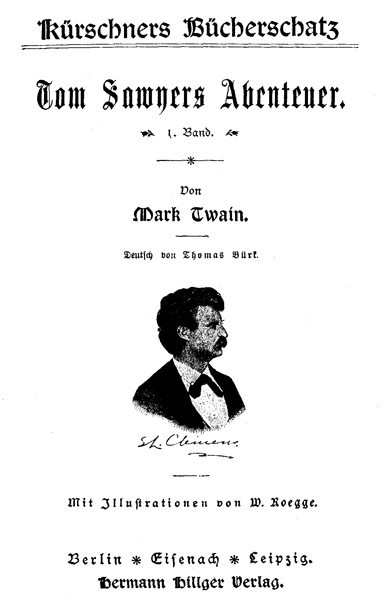Man kann Samuel Langhorne Clemens, dies ist der bürgerliche Name Mark Twains, mit Recht ein »Kind der Sierras«, jener wilden Gebirgsmassen im Westen der Vereinigten Staaten nennen, denn hier brachte er einen großen Teil seines Lebens zu, hier sammelte er die mannigfachen Eindrücke für seine Skizzen und Erzählungen. Am 30. November d. J. feiert er seinen 60. Geburtstag, und ihm, dem auf seinem Lebenswege bisher das Glück fast immer fern blieb, werden an diesem Tage hoffentlich Ehren bereitet werden, denn Mark Twain ist unstreitig der bedeutendste amerikanische Humorist. Sein Humor bewegt sich aber nicht in den Bahnen unserer deutschen Humoristen, sondern er ist Satiriker, und fast allen seinen Erzählungen und Skizzen ist dieser Zug eigen.
Seine Wiege stand im Staate Missouri. Ein hartes Schicksal war ihm beschieden, denn schon in seiner Jugend verlor er beide Eltern. Drei Jahre lang war er Lehrling bei einem Buchdrucker, dann nahm er Abschied und wurde, erst 17 Jahre alt, Steuermann auf einem der vielen Dampfer, die auf dem Mississippi zwischen St. Louis und New Orleans verkehren. Im Jahre 1860 ging er als Privatsekretär zu seinem älteren Bruder, der Gouverneur von Nevada war. Hier lernte er das Leben in the far wild west kennen, denn oft genug schlug er sich mit Strolchen, Goldgräbern, Glücksrittern etc. herum. Er wurde hier auch Mitredakteur einer Zeitung, ging dann aber 1864 nach San Francisco, um hier schriftstellerisch thätig zu sein. Eine Reise führte ihn auf die Sandwichs-Inseln, später besuchte er auch Europa, Asien, Afrika. Seit langer Zeit lebt er in New York.
Der Name »Mark Twain«, den er sich als nom de plume wählte, stammt aus seinen Schiffsjahren. Er hörte die Verlader der Waren die Kolli zählen und in ihrem breiten Jargon »Mark One«, »Mark Twain« etc. (Merke, eins, zwei u. s. w.) rufen. Dies »Mark Twain« gefiel ihm ausnehmend, es hat ihm zu hohem Ansehen verholfen. Neben seinen Erzählungen, in welchen »Tom Sawyer« und »Huckleberry Finn« eine Hauptrolle spielen, sind seine Skizzen beliebt und berühmt geworden.
Der kleine Abriß der Lebensgeschichte Mark Twains möge den Lesern zeigen, daß sich aus der Waise, aus dem Buchdruckerlehrling, dem Steuermann etc. ein Schriftsteller entwickelt hat, der weitgehendste Beachtung verdient.
Ge-e-e Tom! – Tante Polly macht sich ihre Pflicht klar. – Tom musiziert. – Die Herausforderung.
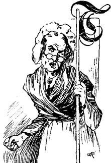
»Tom!«
Keine Antwort.
»Tom!«
Keine Antwort.
Die alte Lady rückte ihre Brille etwas abwärts und schaute darüber weg im Zimmer herum; dann rückte sie sie wieder höher und sah darunter weg. Selten oder nie schaute sie durch die Gläser nach einem kleinen Ding wie ein Junge; es war ihre Staatsbrille, ihr Stolz, und nicht gemacht, um gebraucht zu werden, sondern des Stils wegen. Ein Pfanndeckel hätte ihr denselben Dienst gethan.
Einen Augenblick schien sie durch dieses Stillschweigen überrascht, dann sagte sie, nicht zornig, doch laut genug, um von den Möbeln gehört zu werden: »Warte nur, wenn ich dich kriege –«
Sie sprach die Drohung nicht ganz aus, denn Sie hatte sich gebückt, um mit dem Besen unter das Bett zu stoßen und bedurfte ihres Atems, um jedem Stoß den gehörigen Nachdruck zu verleihen. Sie stöberte jedoch niemand auf als die Katze.
»Sah man jemals solch einen Jungen!«
Sie ging zur offnen Thür und suchte unter den Liebesapfelranken und dem Stechapfelkraut, die den Garten bildeten. Kein Tom. Sie erhob die Stimme und schrie: »Ohe–e–e Tom!«
Ein leises Geräusch erfolgte, sie wandte sich rasch um, eben zeitig genug, um einen kleinen Jungen bei der Jacke zu erwischen und seiner Flucht ein Ziel zu setzen.
»Ja so! ich hätte an jenes Kabinett denken sollen. Was hattest du dort zu thun?«
»Nichts!«
»Nichts? Sieh deine Hände an und befühle den Mund! Was hast du da?«
»Weiß nicht, Tante!«
»Aber ich weiß es. Eingemachtes ist es, sonst nichts. Wie viel hundertmal habe ich dir gesagt, wenn du das Eingemachte nicht stehen ließest, würde ich dir die Haut abziehen! Reich' mir jene Gerte her!«
Schon war die Gerte zum Schlag erhoben – die Gefahr war dringend. –
»Ha! Tante, sieh dich um!«
Die alte Dame drehte sich rasch um; im gleichen Augenblicke entwischte der Junge, kletterte über den hohen Gartenzaun und verschwand.
Einen Augenblick stand Tante Polly verblüfft, dann brach sie in ein leises Lachen aus: »Der Teufelsjunge! Kann ich denn nie klüger werden? Hat er mir nicht schon genug Streiche gespielt, um auf der Hut zu sein? Aber alte Narren sind die allergrößten. Man sagt nicht umsonst, ein alter Hund lerne keine neuen Kunststücke. Aber, du lieber Gott, seine Streiche sind alle Tage anders, und niemand kann wissen, was gerade kommt. Er scheint ganz genau zu wissen, wie weit er mich plagen darf, um mich in Harnisch zu bringen, und wenn es ihm dann gelingt, mich eine Minute zu unterbrechen, oder mich zum Lachen zu zwingen, so ist alles vergessen und ich könnte ihm auch nicht das mindeste thun. Gott weiß es und es ist die reinste Wahrheit, ich erfülle meine Pflicht nicht gegen diesen Jungen. Wer seiner Rute schonet, der hasset seinen Sohn, sagt die Bibel. Ich weiß, daß ich Sünde auf Sünde, und Strafe auf Strafe häufe, für ihn und mich. Er ist noch voll vom alten Satan, leider Gott! aber er ist auch meiner leiblichen verstorbenen Schwester Sohn, der arme Junge, und ich kann es nicht übers Herz bringen, ihn zu schlagen. So oft ich ihm etwas nachsehe, plagt mich das Gewissen, und wenn ich ihn strafen soll, möchte mein altes Herz schier brechen. Es ist eben so: Der Mensch vom Weibe geboren, lebt wenige Tage und ist voll von Sorge und Unruhe, wie die Schrift sagt. Er wird heute nachmittag die Schule schwänzen, und ich werde ihn zur Strafe dafür morgen tüchtig zur Arbeit anhalten müssen. Es ist zwar sehr hart, ihn an einem Sonnabend, wenn alle Jungen Ferien haben, zum Arbeiten zu zwingen; da er aber die Arbeit über alles haßt, und ich doch meine Pflicht einigermaßen gegen ihn erfüllen will, so muß es dabei bleiben, oder ich werde an seinem Verderben schuld sein.«
Tom indessen schwänzte die Schule und amüsierte sich vortrefflich. Er kam spät und eben noch früh genug nach Hause, um dem kleinen farbigen Jim vor Nachtessen noch das Holz für den nächsten Tag sägen und Späne machen zu helfen, wobei er ihm seine Großthaten erzählte, während letzterer drei Vierteile der Arbeit that.
Toms jüngerer Bruder (oder vielmehr Stiefbruder) Sid war mit der ihm zugeteilten Arbeit des Späneauflesens schon zu Ende, denn er war ein ruhiges Kind, und nicht ausgelassener abenteuerlicher Art.
Während Tom sein Nachtmahl verzehrte und gelegentlich Zucker stahl, nahm ihn Tante Polly ins Examen, und richtete, wie sie meinte, tief durchdachte und äußerst arglistige Fragen an ihn, um ihm gravierende Geständnisse zu entlocken. Wie so manch andere treuherzige, einfältige Seele, glaubte sie sich mit Talent für dunkle, mysteriöse Diplomatie begabt, und sie liebte es, auch ihre durchsichtigsten Absichten als ein Wunder tiefster List zu betrachten. Sie sagte: »Tom, es war so ziemlich warm in der Schule, nicht?«
»Ja Tante!«
»Mächtig warm, nicht wahr?«
»Ja Tante!«
»Hattest du keine Lust, schwimmen zu gehen?«
Etwas wie Furcht überlief Tom, ein Anflug von unbehaglichem Verdacht. Er forschte in Tante Pollys Auge, fand aber nichts. Somit sagte er: »Hm, nein, nicht sehr.«
Die alte Lady streckte die Hand aus und befühlte Toms Hemde.
»Jetzt ist es dir nicht mehr zu warm, wie ich sehe.« Und sie fühlte sich geschmeichelt, ausfindig gemacht zu haben, daß Toms Hemd trocken war, ohne daß jemand ihre Absicht gemerkt hätte. Aber Tom wußte nun, woher der Wind blies, und was zunächst kommen würde. Somit sagte er, um einer Frage zuvorzukommen: »Wir pumpten einander Wasser auf die Köpfe! Meine Haare sind noch ganz feucht. Willst du fühlen?«
Tante Polly war versteinert, daß ihr dieser Beweis entgangen und ihre List mißlungen war. Dann hatte sie einen neuen Einfall.
»Sag' einmal, Tom, mußtest du dabei nicht den Hemdkragen abnehmen, den ich dir heute angenäht hatte? Knöpfe deine Jacke auf!«
Tom fühlte sich erleichtert. Er öffnete seine Jacke. Der Hemdkragen war fest angenäht.
»Ach was! Geh' weg! Ich war überzeugt, daß du die Schule geschwänzt und dich mit Schwimmen belustigt habest. Aber ich verzeihe dir, Tom. Verbrannte Katzen fürchten das Feuer. Für dieses Mal! Merke dir's!«
Sie war halb unzufrieden, daß ihr Scharfsinn sie getäuscht, und halb zufrieden, daß Tom sich einmal gehorsam gezeigt hatte.
Aber Sidney sagte: »Sonderbar, ich meinte, du habest den Kragen mit weißem Faden angenäht, und dieser hier ist schwarz.«
»Ja so! Ganz richtig. Der Faden war weiß! Tom?!«
Doch Tom wartete nicht auf den Rest. Er schlüpfte zur Thüre hinaus, indem er sagte: »Warte Siddy, das sollst du mir bezahlen.«
Als er sich in Sicherheit fühlte, zog er zwei große Nadeln hervor, die er in den Aufschlägen seiner Jacke versteckt hatte, und von denen die eine mit weißem, die andere mit schwarzem Faden umwickelt war.
»Ohne Sid hätte sie es nicht gemerkt. Hol's der Teufel! Bald näht sie mit weißem, bald mit schwarzem Faden. Wenn sie nur bei einer Farbe bliebe! Wie kann ich wissen, ob Weiß oder Schwarz an der Reihe ist? Aber Sid soll dafür herhalten. Ich will ihn lehren!«
Tom war, wie man sieht, nicht der Musterknabe des Ortes. Es gab aber einen solchen und Tom kannte ihn sehr gut und haßte ihn.
Nach einigen Minuten hatte Tom jedoch seine Widerwärtigkeiten vergessen. Nicht daß sie ihm leichter oder weniger bitter vorgekommen wären, als man sie in vorgerückteren Jahren zu fühlen pflegt – nein, ein neues, mächtigeres Interesse besiegte sie für jetzt – gerade so wie Erwachsene erlittene Verluste im Eifer neuer Unternehmungen leicht verschmerzen. Es handelte sich um eine sehr bewunderte Novität im Pfeifen, in die ihn ein Neger eingeweiht, und die er jetzt ungestört zu probieren ein heiß Verlangen trug. Diese Neuerung bestand in einer eigentümlichen, vogelartigen Wendung, in einer Art von fließendem Wirbel, der durch kurzes, rasch aufeinanderfolgendes Andrücken der Zunge an den Gaumen – ohne die Melodie zu stören – hervorgebracht wird, und der meinen Lesern, wenn sie jemals Knaben gewesen sind, wohl bekannt sein dürfte. Fleiß und Eifer enthüllten ihm bald den Kunstgriff; – den Mund voll Harmonie und mit jubelndem Gemüt schritt er die Straße entlang. – Ein Astronom, der soeben einen neuen Planeten entdeckt hat, kann sich nicht erhabener fühlen, und wenn zwischen beiden starke, tiefe, ungetrübte Befriedigung in die Wagschale gelegt würde, dürfte sie sich leicht zu Gunsten des Knaben neigen.
Die Sommerabende waren lang. Noch dunkelte es nicht. Plötzlich hielt Tom mit Pfeifen inne. Ein Fremder stand vor ihm – ein Junge, kaum merklich größer als er selbst. Die Erscheinung eines Unbekannten, jeden Alters oder Geschlechts war ein Ereignis in dem armen kleinen Neste Petersburg. Der Junge war gut gekleidet, zu gut für einen Werktag. Es war zum Staunen. Zierlicher Hut, neue, blautuchene, modische Jacke und Beinkleider. Er trug Schuhe und es war doch nur Freitag. Sogar eine Halsbinde, ein hellfarbiges Band. Er sah so städtisch aus, daß es Tom in der Seele weh that. Er starrte das glänzende Wundertier an, und je mehr er die Nase über dessen Anzug rümpfte, desto schäbiger erschien ihm seine eigene Ausstattung. Keiner sprach. Wenn einer sich bewegte, bewegte sich der andere, aber immer von der Seite, im Kreise herum, Kopf gegen Kopf und Auge gegen Auge. Endlich sagte Tom: »Ich kann dich hauen!«
»Versuch's einmal!
»Freilich kann ich's!«
»Nein, du kannst nicht!«
»Doch ich kann!«
»Nein!«
»Ja! Ich kann!«
»Nein!«
»Ja!«
»Du kannst nicht!«
Unheimliche Pause. Dann Tom: »Wie heißt du?«
»Geht dich nichts an!«
»Ich will dir zeigen, ob!«
»So zeige!«
»Wenn du noch viel sagst, so will ich!«
»Viel, viel, viel, viel! Da!«
»O, du hältst dich für sehr Pfiffig! Wenn ich wollte, könnte ich dich prügeln mit einer einzigen Hand!«
»Warum thust du es denn nicht?«
»Wenn du mich narren willst, sollst du es sehen!«
»O, ich habe mehr gesehen, als das!«
»Du Zieraffe, du bildest dir wohl viel ein? Welch' abscheulicher Hut!«
»Gefällt er dir nicht? Schlag' ihn mir herunter! Wag' es nur – und wohl bekomm's!«
»Du lügst!«
»Du auch!«
»Du bist ein Lügner und ein Feigling!«
»Bumm! Geh' spazieren!«
»Höre auf oder ich werfe dir einen Stein an den Kopf!«
»Natürlich!«
»Jawohl!«
»So wirf! warum thust du es nicht? Gelt, du hast Furcht?«
»Nein!«
»Doch!«
»Nicht wahr!«
Eine weitere Pause. Näheres Fixieren. Näherrücken von der Seite. Endlich Schulter an Schulter. Tom sagt: »Geh' fort von hier!«
»Geh' du selbst!«
»Ich mag nicht!«
»Ich auch nicht!«
So standen sie, den einen Fuß im Winkel angestemmt, beide mit äußerster Gewalt gegeneinander drückend, das Auge voll glühenden Hasses, ohne daß der eine oder der andere einen Vorteil errang. Endlich, müde und abgemattet, ließen sie einander vorsichtig los und Tom sagte:
»Du bist ein Feigling, ein junger Hund. Ich werde es meinem großen Bruder sagen; der kann dich mit dem kleinen Finger abdreschen, und ich will ihm sagen, daß er es thut!«
»Etwas recht's, dein großer Bruder! Ich habe einen, der viel größer ist, und der den deinigen über jenen Gartenzaun werfen kann!«
(Beide Brüder existierten nur in der Einbildung.)
»Das ist wieder erlogen!«
Tom zog mit seiner großen Zehe eine Linie in den Sand.
»Ich verbiete dir, diesen Strich zu überschreiten, oder ich werde dich so zerhauen, daß du nicht mehr aufstehen kannst!«
Der neue Junge schritt sofort darüber hinweg.
»So! Haue jetzt!«
»Mach' mich nicht wild, und nimm dich in acht!«
»Schlag' zu!«
»Für zwei Cents würde ich es thun!«
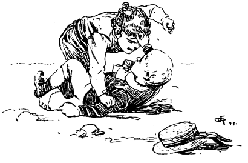Der neue Junge zog zwei Kupferstücke aus der Tasche und hielt sie Tom höhnisch unter die Nase.
Tom schlug sie ihm aus der Hand. Im Augenblick stolperten sie und wälzten sich im Kote, sich wie Katzen umklammernd, Haare und Kleider zerreißend, sich Gesicht und Nase zerquetschend und sich mit Staub und Ruhm bedeckend. Nach einigen Minuten tauchten aus dem Schlachtgewühl bestimmte Formen auf, und Tom erschien rittlings auf dem neuen Jungen sitzend und ihn mit beiden Fäusten bearbeitend.
»Hast du genug?« sagte er.
Der Junge heulte vor Wut und suchte sich frei zu machen.
»Hast du genug?« und die Hiebe regneten fort.
Endlich ließ der Junge ein sehr kleinlautes »Genug« hören. Tom ließ ihn los und sagte: »So! das wird dich lehren, in Zukunft besser zu sehen, wen du zum Narren haben willst.«
Sich schneuzend, weinend den Staub von den Kleidern abklopfend und sich unter Drohungen, was er Tom beim nächsten Zusammentreffen anthun wolle, hie und da umwendend und die Faust schüttelnd, entfernte sich der neue Junge. Tom schnitt ihm dafür Gesichter und ging wohlgemut von dannen. Kaum hatte er aber den Rücken gedreht, so raffte der neue Junge einen Stein auf, traf Tom damit zwischen die Schultern und rann wie eine Antilope davon. Tom verfolgte den Verräter bis zu dessen Wohnung, die er bei dieser Gelegenheit kennen lernte. Vor dem Thore Posto fassend, forderte er ihn auf, herauszukommen, wenn er das Herz habe. Dieser jedoch begnügte sich, hinter dem Fenster die Zunge gegen ihn herauszustrecken und dann zu verschwinden. Endlich erschien die Mutter seines Feindes, nannte Tom einen schlimmen, bösartigen, gemeinen Buben und jagte ihn fort. – Er ging, obwohl er seinem Feinde lieber noch länger aufgelauert hätte.
Es war ziemlich spät, als er nach Hause kam und durchs Fenster ins Zimmer kroch. Zu seinem Schrecken traf er die Tante im Hinterhalt. Als diese den Zustand seiner Kleider sah, ward ihre Absicht, seine Samstagferien in Gefangenschaft bei Zwangsarbeit zu verwandeln, zum felsenfesten Entschluß.
Starke Versuchung. – Strategische Bewegungen. – Die Harmlosen eingeführt.
Samstag-Morgen war gekommen und ein heller, frischer, fröhlicher Sommermorgen war's. Jubel erfüllte jegliches Herz und wenn die Herzen jung waren, so brach er sich durch die Lippen Bahn. Fröhlichkeit thronte auf jedem Gesicht, jeder Schritt war elastisch. Die Akazien standen in voller Blüte und erfüllten die Lüfte mit ihren Düften. Der das Dorf beherrschende Cardiff-Hill erglänzte in frischem Grün, und die Entfernung war eben groß genug, um ihn den Blicken als ein ersehntes, ergötzliches, einladendes Land voll träumerischer Ruhe erscheinen zu lassen. Auf einem Nebenpfade erschien Tom mit einem Kübel voll Tünche und einem langgestielten Pinsel. Er überschaute den Zaun; alle Fröhlichkeit verließ ihn, und tiefe Melancholie bemeisterte sich seiner. Ein Bretterzaun, fast 100 Fuß lang und 9 Fuß hoch. Das Leben erschien ihm schal, das Dasein eine Bürde. Seufzend tauchte er den Pinsel ein und fuhr damit über die höchste Planke; zwei-, dreimal wiederholte er diese Operation und verglich dann den kleinen getünchten Fleck mit der unermeßlichen Ausdehnung des der Tünche noch harrenden Zaunes. – Entmutigt ließ er sich auf einem Baumkasten nieder.
Jim schlüpfte durch die Gartenthür mit einem Blecheimer und sang ein Negerliedchen. Das Wasserholen vom Dorfbrunnen hatte früher Tom nie behagen wollen, nun schien es ihm gar nicht so übel. Er erinnerte sich, daß am Brunnen immer Gesellschaft zu treffen war. Knaben und Mädchen von allen Farben, weiße, Mulatten und Negerkinder waren immer da, ihre Reihe abzuwarten, und verkürzten sich die Zeit mit Faulenzen, Spielen, Tauschhandel, Zanken, Prügeln und Narrenpossen. Zudem erinnerte er sich, daß, obschon der Brunnen nur 150 Yards entfernt, Jim nie vor einer Stunde zurückkam und auch dann noch von jemand abgeholt werden mußte.
Tom sagte: »Höre einmal, Jim, wenn du ein wenig tünchen willst, werde ich Wasser für dich holen!«
Jim schüttelte den Kopf und sagte: »Kann nicht, Master Tom! Die alte Missis sagte zu mir, ich müsse Wasser holen und dürfe mich nicht aufhalten, Narrenpossen zu treiben; – sie wisse wohl, daß Tom mich zum Tünchen werde verleiten wollen, ich soll aber meinem eigenen Geschäfte nachgehen, und sie werde das Tünchereigeschäft nicht aus dem Auge verlieren.«
»O, kümmere dich doch nicht um ihr Geschwätz, Jim! Es ist ihre Gewohnheit so. Gieb mir den Eimer. Ich bleibe keine Minute aus. Sie erfährt es nicht!«
»O, ich darf nicht, Master Tom! Die alte Missis würde mir den Kopf abreißen. Ganz gewiß!«
»Sie! Sie prügelt niemand. Sie schlägt einen ein wenig mit dem Fingerhut auf den Kopf und wer frägt darnach? Sie führt schlimme Reden, aber Reden thut nicht weh, und schon gar nicht, wenn sie nicht dazu weint. Jim, ich gebe dir einen Marmel! Einen weißen, Jim!«
Jim begann zu schwanken.
»Einen weißen, Jim! Einen auserlesenen! Sieh'!«
»O, der ist wunderschön. Aber ich fürchte mich so vor der alten Dame!«
»Ich zeige dir auch noch meine kranke Zehe!«
Jim war mitleidig. Diese Aussicht überwältigte ihn. Er setzte seinen Eimer auf die Erde, nahm den weißen Marmel, und beugte sich, während Tom den Verband seiner kranken Zehe ablöste, mit ungeteiltem Interesse darüber. Auf einmal flog er mit seinem Eimer die Straße hinunter, Tom tünchte wütend darauf los, und Tante Polly zog sich mit einem Pantoffel in der Hand, triumphierend zurück.
Toms Arbeitswut verrauchte bald. Er dachte an die für diesen Tag ersonnenen lustigen Streiche und seine Trübsal nahm zu. Bald hatte er die Ankunft der freien, unbeschäftigten Knaben und ihren Spott über seine Zwangsarbeit zu erwarten. – Der Gedanke daran brannte ihn wie Feuer. – Er zog seine irdischen Reichtümer hervor und überzählte sie – Fragmente von Spielsachen, Marmel und derartiges Zeug, – genug, um vielleicht irgend eine andere Arbeit dafür zu erkaufen, aber keine halbe Stunde ungehemmter Freiheit. Er steckte seine schmalen Besitztümer wieder ein, und gab den Gedanken, die Jungen zu bestechen, wieder auf.
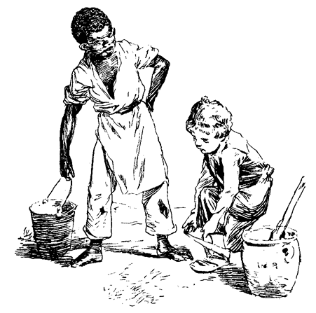Aus diesem dunkeln, hoffnungslosen Brüten fuhr er plötzlich empor. Ein Einfall war ihm gekommen, eine große glänzende Idee dämmerte in ihm auf. Er nahm seinen Pinsel wieder auf und machte sich ruhig ans Werk. Ben Rogers, der Junge, dessen Spott er am meisten fürchtete, kam in Sicht. Ben kam hüpfend und springend, – Beweis genug für sein leichtes Herz und seine hochgespannten Erwartungen. Er verspeiste einen Apfel und stieß von Zeit zu Zeit einen langen, melodiösen Schrei aus, dem ein tiefes Ding-dong-dong, Ding-dong-dong nachfolgte; denn er agierte ein Dampfboot.
In der Nähe Toms angekommen, mäßigte er seinen Kurs, nahm die Mitte der Straße, hielt weit Steuerbord und drehte unter großem Aufwand von Mühe und Pomp bei, denn er agierte den »Großen Missouri« und betrachtete sich als 9 Fuß Wasser ziehend. Er vereinigte in seiner Person Schiff, Kapitän und Signalglocke, und hatte in diesen Eigenschaften von seinem Sturmdeck aus die Befehle zu erteilen und zu vollziehen.
»Stopp, Sire! Kling-ling-ling!«
Er war rechts am Rande der Straße angekommen, und bog nun langsam gegen den Seitenpfad, wo endlich der »Große Missouri« nach manchem Kommandoruf, manchem Tschau-tschau-tschau der Räder, manchem Kling-ling der Glocke und manchem Ssch-sch-sch der Dampfhahnen vor Anker ging.
Tom fuhr in seiner Arbeit fort, ohne sich um das Dampfboot zu kümmern.
Ben sah zu, und rief dann: »Holla! Gelt, das gefällt dir nicht?«
Keine Antwort. Tom überschaute seinen letzten Anstrich mit künstlerischem Auge; noch ein schwungvoller, graziöser Pinselstrich, und gleiche Bewunderung der Arbeit.
Ben trat hart an ihn heran. Toms Mund wässerte vor Begierde nach dem Apfel, er ließ sich aber in der Arbeit nicht stören.
Dann sagte Ben: »Nun, alter Kamerad, mußt du arbeiten? Nicht?!«
Tom wandte sich rasch um und sagte: »Wie, bist du da, Ben? Ich hatte dich nicht bemerkt!«
»Ja, ich gehe schwimmen. Möchtest du nicht auch? Aber du mußt arbeiten. Gelt, du mußt?«
Tom sah ihn kurz an und erwiderte: »Was nennst du arbeiten?«
»Was? ist vielleicht Tünchen keine Arbeit?«
»Vielleicht, vielleicht auch nicht! Was ich weiß, ist, daß ich Vergnügen daran finde.«
»O, du willst mir vorspiegeln, daß es dir gefällt?«
Der Pinsel fuhr auf und ab.
»Gefallen? Warum sollte es nicht? Glückt es vielleicht jedem Jungen, einmal einen Zaun tünchen zu dürfen?«
Das brachte die Sache in ein neues Licht. Ben, an seinem Apfel nagend, schwieg. Tom fuhr mit seinem Pinsel zierlich hin und her, trat einige Schritte zurück, um den Effekt zu beurteilen, half hie und da nach, kritisierte den Effekt wieder, während Ben zusah, und je länger, je mehr Interesse an der Geschichte fand.
Plötzlich sagte er: »Höre, Tom, laß mich ein wenig tünchen!«
Tom dachte nach; er war auf dem Punkte, seine Einwilligung zu geben, änderte aber seinen Vorsatz: »Nein, nein, ich darf es nicht wagen, Ben! Siehst du, Tante Polly ist ganz besonders auf diese Seite, der Straße zu, erpicht; ja, wenn es die Rückseite wäre, könnte es mir nicht darauf ankommen und sie würde nichts merken. Traurig aber wahr, sie hängt an diesem Zaune mit Leib und Seele; der Anstrich muß mit größter Sorgfalt ausgeführt werden, und ich wette, daß unter tausend, vielleicht zweitausend Jungen kein einziger zu finden ist, der es kann!«
»So, meint sie? Komm, laß mich einmal probieren. Nur ein klein wenig – wenn ich du wäre, Tom, würde ich dich lassen.«
»Lieber Ben, ich möchte es gerne, aber Tante Polly – sieh! Jim wollte, Sid wollte, aber sie wollte nicht. Siehst du nun, in welcher Klemme ich bin? Wenn du den Zaun verderbtest, oder irgend etwas vorkäme –«
»Unsinn! Ich werde Achtung geben. Laß mich nur probieren. Du sollst den Butzen meines Apfels dafür haben.«
»Nun ja! Da! Aber nein, Ben, ich fürchte –«
»Ich gebe dir den ganzen Apfel!«
Tom überließ ihm den Pinsel mit widerstrebender Miene, aber frohen Herzens. Und während das weiland Dampfboot »Der große Missouri« in der Sonnenhitze arbeitete und schwitzte, saß der weiland Künstler im nahen Schatten, baumelte mit den Beinen – kaute seinen Apfel und sann auf neue harmlose Opfer. An Material fehlte es nicht. Knaben gingen immer vorbei, sie kamen um zu spotten und blieben um zu tünchen.
Bevor Ben müde war, hatte Tom schon mit Billy Fisher für einen gut konditionierten Papierdrachen abgeschlossen; nach diesem kam Johney Milbs für eine tote Ratte und eine Schnur, um sie damit zu schwingen etc., Stunde um Stunde. Und um 4 Uhr nachmittags wälzte sich der morgens früh so arme Tom im Reichtum. Außer den oben erwähnten Sachen besaß er nun zwölf Marmel, ein Stück einer Maultrommel, eine Scherbe blauen Flaschenglases, um durchzuschauen, das Rohr einer Spule, einen unbrauchbaren Schlüssel, ein Stück Kreide, einen gläsernen Karaffenpfropf, einen Zinnsoldaten, ein paar Kaulquappen, 6 Raketen, eine junge einäugige Katze, einen messingenen Thürknopf, ein Hundehalsband, aber keinen Hund dazu – ein Messerheft, 4 Stück Pomeranzenschale und ein altes zerbrochenes Schiebfenster.
Er hatte eine hübsche, angenehme Zeit dabei gehabt – an Gesellschaft hatte es nicht gefehlt, und der Zaun war mit drei Lagen übertüncht. Wenn er das Tünchergeschäft fortgesetzt hätte, wäre bald jeder Dorfjunge insolvent geworden.
Tom fand, daß, eins ins andere gerechnet, das Leben doch nicht so schal sei. Unbewußt hatte er eine große Triebfeder des menschlichen Strebens entdeckt: die nämlich, daß mit den in den Weg sich stellenden Schwierigkeiten zur Erreichung eines Zweckes die Anstrengungen sich steigern. Wäre er ein großer, weiser Philosoph gewesen, wie z. B. der Schreiber dieses Buches, so wäre ihm nun klar geworden, daß Arbeit das ist, was man thun muß, und Spiel dasjenige, wozu man nicht gezwungen ist. Er hätte begriffen, daß die Herstellung von künstlichen Blumen oder das Treiben eines Scherenschleiferrades Arbeit – hingegen das Besteigen des Mont-blanc und das »Alle neune«-werfen beim Kegelspiel Unterhaltungen sind. Es giebt reiche Leute in England, welche im heißen Sommer 20 bis 30 Meilen täglich vierspännig fahren, nur weil die Erlaubnis dazu viel Geld kostet; wenn sie es aber thun müßten und man sie noch dafür bezahlen wollte, so hätte der Spaß bald ein Ende.
Tom brütete eine Zeitlang über den Wechsel seiner finanziellen Verhältnisse und ging dann zum Rapport ins Hauptquartier, d. h. nach Hause.
Tom als General. – Triumph und Belohnung. – Unbehagliches Glück. – Auftrag und Versäumnis.
Tom fand seine Tante in einem hübschen Hinterzimmer am offenen Fenster sitzend. Das Zimmer vereinigte in sich die Eigenschaften eines Schlaf-, Frühstück-, Speise- und Lesezimmers. Die würzige Sommerabendluft, die träumerische Stille, der Blumenduft und das einschläfernde Summen der Bienen hatten ihre Wirkung auf die Tante nicht verfehlt. Sie schlummerte über ihrem Strickstrumpf; ihre einzige Gesellschaft, die Katze, war in ihrem Schoße eingeschlafen. Die Brille war sorgfältig über ihre grauen Haare zurückgeschoben. Sie war mit sich selbst schon einig, daß Tom die Arbeit längst im Stiche gelassen, und staunte über die Sicherheit, mit der er sich ihr mit den Worten überlieferte: »Darf ich jetzt nicht spielen gehen, Tante?«
»Was, jetzt schon? Wieweit bist du mit deiner Arbeit?«
»Fix und fertig, Tante!«
»Lüge nicht, Tom! Du weißt, ich kann es nicht leiden!«
»Ich lüge nicht, Tante! Alles ist fertig!«
Tante Polly traute ihm nur halb; sie erhob sich, um selbst nachzusehen, und wäre zufrieden gewesen, wenn sie auch nur den fünften Teil von Toms Behauptung wahr gefunden hätte. Maßlos aber war ihr Erstaunen, als sie den Zaun nicht nur 3-4mal sorgfältig angestrichen, sondern auch noch einen weißen Extrastrich als Zugabe am Fuße desselben fand.
»Darf ich meinen Augen trauen? Daraus werde klug, wer kann! Wahr und wahrhaftig, Tom, du kannst arbeiten, wenn du willst.« Sie schwächte ihr Lob jedoch durch den Nachsatz ab: »Jammerschade ist es nur, daß du so selten willst! Nun geh' spielen, bleibe aber nicht wochenlang aus, oder es setzt Hiebe!«
Diese Leistung Toms hatte sie so sehr überwältigt, daß sie ihn in die Speisekammer führte, den schönsten Apfel aussuchte und ihn ihm mit dem Bemerken zusteckte, es sei doch etwas ganz anderes, so etwas Gutes ehrlich und redlich zu verdienen, als es auf anderem, strafbarem Wege zu erlangen. Und während sie ihre Ermahnung mit einem passenden Bibelspruch schloß, stahl Tom eine Pfeffernuß und kniff aus.
Sid stieg eben die Treppe vom zweiten Stock herunter. Erdschollen waren reichlich zur Hand, und bald war die Luft davon erfüllt. Wie Hagelsturm umsausten sie Sid. Bevor Tante Polly sich von ihrer Ueberraschung erholen und herbeieilen konnte, hatten 6 oder 7 Schollen getroffen und Tom war über den Zaun auf und davon. Da war zwar die Thüre, aber wie gewöhnlich hatte es Tom zu eilig um sie zu benutzen. Er war zufrieden, seine Rechnung mit Sid, des weißen und schwarzen Fadens wegen, ausgeglichen zu haben, und ungehindert sah er sich bald in Sicherheit hinter seiner Tante Kuhstall. Von da eilte er auf den Dorfplatz, wo eben, einem früheren Abkommen entsprechend, zwei Kompagnien Schuljungen zum Treffen aufmarschiert waren. Tom war General der einen Armee, und sein Busenfreund Joe Harper befehligte die andere. Diese beiden Armeebefehlshaber beteiligten sich nicht am Handgemenge, das war unter ihrer Würde, und nur gut für die jüngere Brut; sie saßen mitsammen auf einer Anhöhe und leiteten die Feldoperationen durch Adjutanten. Nach schwerer Schlacht errang Toms Armee einen glänzenden Sieg. Die Toten wurden gezählt, die Gefangenen ausgewechselt; die Bedingungen der nächstfolgenden Feindseligkeiten und der Tag für die nächste Schlacht wurden festgestellt, worauf die Armeen sich in Reih und Glied sammelten, heimwärts zogen und Tom allein ließen.
An der Wohnung Jeff Thatchers vorbeigehend, sah er ein neues Mädchen im Garten; ein liebliches blauäugiges Geschöpf mit gelben, in zwei lange Zöpfe geflochtenen Haaren, im lichten Sommerrock und gestickten Höschen. Der sieggekrönte Held unterlag ohne einen Schuß. Das Bild einer gewissen Amy Lawrence verschwand spurlos aus seinem Herzen. Er hatte geglaubt, sie bis zum Wahnsinn zu lieben, er hatte sie angebetet; und ach, seine Leidenschaft erwies sich nun als eine leichte, vorübergehende Neigung. Monate lang hatte er um sie geworben, vor kaum einer Woche hatte sie ihm ihre Zuneigung gestanden; sieben Tage lang hatte er sich für den glücklichsten Jungen des Dorfes gehalten, und in einer Minute war sie, gleich einem vorübergehenden Besuche aus seinem Herzen verschwunden.
Verstohlenen Auges bewunderte er diesen neuen Engel, bis er sich von ihr bemerkt sah. Ohne sich den Anschein zu geben, als sei er von ihrer Nähe unterrichtet, begann er, mit allerlei läppischen Knabenpossen vor ihr zu paradieren, um ihre Bewunderung zu erregen, bemerkte aber während einiger gefährlicher gymnastischer Kunststücke, daß sie langsam ihrer Wohnung zuging. Tom näherte sich niedergeschlagen dem Zaun in der Hoffnung, daß sie noch verweilen würde. Sie blieb einen Augenblick auf der Treppe und näherte sich dann der Thüre. Ein schwerer Seufzer entwand sich Toms Brust, als sie ihre Füße auf die Schwelle setzte. Plötzlich aber verklärte sich sein Gesicht, denn sie hatte, ehe sie in der Thüre verschwand, eine Pensee über den Zaun geworfen.
Im Nu war er etwa einen Fuß breit von der Stelle, wo die Blume lag, dann beschattete er seine Augen mit der Hand und blickte starr die Straße hinunter, als ob irgend etwas sehr Interessantes dort zu sehen wäre. Dann las er einen Strohhalm auf, und versuchte, ihn mit weit zurückgebogenem Kopfe auf der Nase zu balancieren; und während der hierzu erforderlichen Bewegung näherte er sich unmerklich dem Blümchen. Endlich hatte er es unter seiner nackten Fußsohle. Er faßte es mit eingekniffenen Zehen, humpelte um die Ecke und verbarg ungesehen seinen Schatz auf dem Herzen, oder Magen, gleichviel; Tom war nicht sehr gelehrt in der Anatomie.
Dann kam er zurück und paradierte, wie zuvor, in der Hoffnung, das Mädchen werde seine Aufmerksamkeit gewahr werden. Es wurde Nacht, aber sie zeigte sich nicht. Zögernd wandte er sich endlich der Heimat zu; doch er tröstete sich mit dem Gedanken, daß sie ihn vielleicht, hinter einem Fenster versteckt, beobachtet habe. Sein armes Hirn war voll Visionen.
Beim Nachtessen war er so aufgeregt, daß die Tante sich fragen mußte, was es nur mit dem Jungen wieder sei. Sie schalt ihn, Sid mit Schollen beworfen zu haben, ohne den mindesten Eindruck zu erzielen. Er versuchte unter der Nase seiner Tante Zucker zu stehlen und wurde dafür auf die Finger geklopft.
»Warum schlägst du Sid nicht, wenn er Zucker nimmt?«
»Weil er mich nicht immer quält, wie du. Du würdest die Hand immer in der Zuckerbüchse haben, wenn ich nicht darüber wachte!«
Sie ging in die Küche. Sid, seiner Straflosigkeit sicher, griff mit solch triumphierender Miene nach der Zuckerdose, daß Tom es fast nicht ertragen konnte. Aber die Büchse entschlüpfte seinen Fingern und zerbrach. Tom war entzückt, und so sehr entzückt, daß er keinen Laut von sich gab. Er wollte nichts sagen, und sich still verhalten, bis Tante kommen und nach dem Thäter fragen würde. Dann wollte er sprechen, und in dem Genusse, Sid geprügelt zu sehen, schwelgen. So groß war sein Jubel, daß er kaum an sich halten konnte, als die alte Dame kam und beim Anblick der Trümmer Zornesblitze über die Brille schleuderte. »Jetzt, jetzt kommt's,« dachte er, und im nächsten Augenblicke lag er auf dem Boden! Die mächtige Faust war zu neuem Schlage über ihm, erhoben und »Höre auf, warum schlägst du mich? Sid hat es gethan!«
Verwirrt hielt Tante Polly inne und Tom erwartete linderndes Bedauern. Wieder zu Atem gekommen, sagte sie jedoch: »Hm! Es ist kein Streich verloren. Wenn nicht jetzt, so hast du es ein andermal verdient!«
Sofort aber peinigte sie das Gewissen und sie hätte ihm so gerne einige liebevolle, beschwichtigende Worte gesagt. Aber sie bedachte, daß das einem Schuldbekenntnis gleichkommen würde, und das verbot die Disziplin. Somit schwieg sie und ging ihren Geschäften mit bekümmertem Herzen nach.
Tom schmollte in einem Winkel, und stellte sich das erlittene Unrecht je länger je größer vor. Er wußte, daß seine Tante ihn in der Seele liebte, und dieses Bewußtsein verursachte ihm düstere Freude. Er wollte kein Zeichen von sich geben und keines bemerken. Er wußte, daß von Zeit zu Zeit ein bedauernder Blick durch einen Strom von Thränen auf ihn fiel, aber er wollte es nicht bemerken. Er dachte sich todkrank, seine Tante über ihn gebeugt und um ein einziges kleines Wort der Verzeihung flehend, – aber er wollte sein Gesicht der Wand zukehren und sterben, ohne dieses Wort gesprochen zu haben. Wie würde ihr da zu Mute sein?
Dann stellte er sich vor, wie es wohl sein würde, wenn sie ihn vom Flusse heimbrächten, tot, mit nassen Locken und stillem Herzen! Wie sie sich auf ihn stürzen, Schauer von Thränen vergießen und ihre Lippen heiße Gebete zu Gott entsenden würden, damit er ihr ihren Jungen wiedergäbe, und wie sie nie, niemals mehr böse mit ihm sein würde! Aber er wollte daliegen, weiß und kalt, ohne Lebenszeichen, ein armer kleiner Dulder, dessen Kümmernisse nun aus wären! So sehr übermannten ihn diese träumerischen Gefühle, daß ihm der Atem stockte, die Augen überliefen und die Thränen stromweise über seine Nasenspitze träuften. Einen solch' überschwenglichen Genuß fand er in diesem Hätscheln seines Kummers, daß er nicht ertragen konnte, was nur eine Spur von Fröhlichkeit und Vergnügen verriet, so zwar, daß, als sein Bäschen Marie nach einer ewig langen achttägigen Abwesenheit auf dem Lande durch die eine Thür ins Zimmer tanzte und Gesang und Sonnenschein mitbrachte, er aufstand, und durch die andere Thür, in finstere Wolken und Trübsal gehüllt, davon ging.
Er vermied die gewohnten Knabenspielplätze und suchte öde, mit seiner Gemütsstimmung harmonierende, entlegene Orte. Ein im Flusse liegendes Floß von Baumstämmen war einladend; er setzte sich auf den äußersten Rand und betrachtete die furchtbare Größe des Wassers, mit dem Wunsche, ohne Todeskampf ertrinken zu können. Dann gedachte er seiner Blume. Er zog sie hervor, zerknitterte und zerdrückte sie, und erhöhte dadurch seine traurige Glückseligkeit nicht wenig. Ob sie ihn wohl bedauern würde, wenn sie Kenntnis von seinem Elend hätte? Ob sie wohl Thränen vergießen und wünschen würde, ihm die Arme um den Hals zu legen und ihn trösten zu können? Oder würde sie sich teilnahmlos von ihm wenden, wie die ganze übrige schnöde Welt? Diese Vorstellungen bereiteten ihm ein so großes schmerzliches Vergnügen, daß er sie immer und immer wieder unter den verschiedensten Beleuchtungen an sich vorbeiziehen ließ, bis die nackte Wirklichkeit zuletzt allein übrig blieb. Dann stand er auf und wanderte fort in die Finsternis.
Gegen 10 Uhr erreichte er die abgelegene Straße, in welcher seine unbekannte Angebetete wohnte. Alles still, kein Laut schlug, an sein Ohr; nur der Schimmer einer Lampe drang durch die Vorhänge eines Fensters im zweiten Stock. Beherbergten diese Räume ihre geheiligte Person? Er kletterte über den Zaun, stahl sich leise durch die Gartengewächse bis zum Fenster. Lange und in tiefer Bewegung betrachtete er es; dann streckte er sich darunter auf die Erde nieder, die Hände auf der Brust zusammengefaltet, seine arme, zerknickte Blume in denselben. So wollte er sterben, allein in der kalten Welt, ohne Obdach über seinem heimatlosen Haupte, ohne eine freundliche Hand, ihm den Todesschweiß abzutrocknen, ohne ein über ihn gebeugtes, liebendes Gesicht im Todeskampfe. So würde sie ihn beim ersten Blick in den neuen, fröhlichen Morgen finden. O! würde sie auch nur eine einzige Thräne über seine kalte, leblose Form weinen, würde sie seinem so früh zerstörten jungen Leben nur einen einzigen Seufzer weihen?
Plötzlich öffnete sich das Fenster. Die schrille Stimme eines Dienstmädchens entweihte die heilige Stille und eine wahre Sintflut plätscherte auf die Reliquien des armen Märtyrers hernieder.
Fluchend sprang der gequälte Held empor. Ein Stein sauste, bald folgte das Klirren einer zerschmetterten Scheibe, eine kleine, flüchtige Gestalt überstieg den Zaun und verlor sich in rasender Eile im Dunkel. Bald darauf stand Tom ausgekleidet im Schlafzimmer und untersuchte seinen durchnäßten Anzug beim Scheine eines Talgstummels. Sid erwachte; die Lust zu einigen beißenden Bemerkungen verging ihm beim ersten Blick in Toms unheilverkündendes Auge. Ohne sich der Belästigung des Nachtgebetes zu unterziehen, schlief Tom ein und Sid nahm gebührende Notiz von dieser Unterlassungssünde.
Geistige Seiltänzerei. – Besuch der Sonntagsschule. – Der Superintendent. – Paraden. – Tom als Löwe.
Ueber einer ruhigen Welt erhob sich die Sonne und begrüßte das friedliche Dorf mit ihren segensreichen Strahlen.
Das Frühstück war vorüber und Tante Polly hielt Familienandacht. Sie begann mit einem, aus einer Reihe von Bibelstellen bestehenden, durch eigene Ergüsse zusammengekitteten Gebet. Dann folgte eines der blutigen Kapitel des mosaischen Gesetzbuches, das sie, wie vom Sinai herunter, vorlas.
Tom aber gürtete seine Lenden, und bereitete sich, seine Schulaufgaben zu machen. Sid war damit schon vor mehreren Tagen fertig geworden. Tom raffte all' seine Energie zusammen, um fünf Bibelsprüche auswendig zu lernen, und hatte sie klugerweise aus der Bergpredigt gewählt, weil er keine kürzeren finden konnte. Nach Verlauf einer halben Stunde hatte er einen unbestimmten Begriff von seiner Aufgabe, aber nicht mehr, denn seine Gedanken durchwanderten das ganze Gebiet menschlichen Fühlens und seine Hände waren beschäftigt mit allerhand zerstreuenden Treibens. Mary ergriff das Buch, um ihn zu überhören und er suchte sich einen Weg durch den ihn umgebenden Nebel zu bahnen.
»Selig sind die A–A–«
»Armen –«
»Ja, die Armen a–a–«
»Am Geiste –«
»Am Geiste. Selig sind die Armen am Geiste, denn sie – denn sie –«
»Denn ihrer –«
»Denn ihrer. Selig sind die Armen am Geiste, denn ihrer ist das Himmelreich. – Selig sind die Trauernden, denn sie – denn sie –«
Denn sie s–«
»Sol–«
»Denn sie sol– ach ich weiß nicht!«
»Sollen –«
»Ja, Sollen! Denn sie sollen – denn sie sollen – hm – sol– hm – sol– sollen trauern, denn sie – hm – Selig sind die da sollen – die da – hm – die da trauern sollen – denn sie sollen – sollen – was sollen sie, Mary? Warum sagst du mir es nicht? Wie kannst du so gemein sein?«
»O, Tom, du armer Dummkopf, ich will dich ja nicht plagen. Aber du mußt von vorne anfangen. Verliere den Mut nicht, Tom; du wirst es schon fertig bringen und dann sollst du auch etwas recht Schönes von mir bekommen. So, nun fange wieder an!«
»Gut, Mary, aber was ist es, Mary? Sage mir, was es ist?«
»Du wirst es schon sehen. Du weißt, wenn ich sage, es ist schön, so ist es schön.«
»Ich glaube dir, Mary. Nun denn, so will ich wieder dran!«
Und er ging wieder dran – und unter dem doppelten Antriebe der Neugierde und des zu erwartenden Lohnes mit solchem Eifer, daß er einen glänzenden Erfolg errang. Mary gab ihm ein funkelneues Taschenmesser im Wert von zwölf und einem halben Cent; und das Entzücken darüber erschütterte sein ganzes Wesen bis in die Fundamente. Zwar war es unmöglich, irgend etwas mit dem Messer zu schneiden; dessen ungeachtet war es ein echtes Bowie-Messer, und darin eben lag ein unschätzbarer Wert; denn es ging ein Gerücht unter den Jungen des Westens, daß auch falsche, nachgemachte Bowie-Messer in den Handel kämen. Tom probierte es zuerst am Glasschranke und war eben im Begriff, den Sekretär zu attackieren, als er abberufen wurde, um sich zur Sonntagsschule anzukleiden.
Mary gab ihm ein Zinnbecken mit Wasser und ein Stück Seife. Er ging vor die Thüre und setzte das Becken auf eine kleine Bank, tauchte die Seife ins Wasser und legte sie daneben. Dann stülpte er die Hemdärmel zurück, goß das Wasser behutsam auf die Erde, ging in die Küche und begann sich mit dem hinter der Thür hängenden Handtuch das Gesicht abzureiben. Doch Mary nahm ihm das Tuch weg.
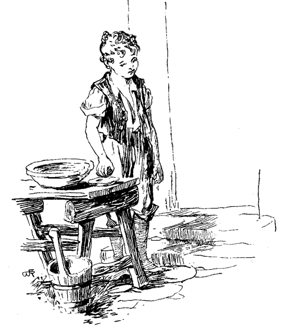»Pfui, Tom, schäme dich! Was soll das heißen? Fürchtest du das Wasser?«
Tom war beschämt. Er füllte das Becken von neuem, betrachtete es einen Moment, um Mut zu fassen, stieß einen tiefen Seufzer aus und begann. Bald kehrte er mit geschlossenen Augen in die Küche zurück, und während er mit beiden Händen nach dem Handtuch tastete, rieselten ihm als beredte Zeugen seiner Anstrengung Ströme von Wasser und Schmutz über das Gesicht herab. Mit Abtrocknen zu Ende, ward er aber nichts weniger als befriedigend befunden. Eine scharfe Linie teilte sein Gesicht in zwei Felder, das eine, gewaschene, erstreckte sich wie eine Maske von der Stirne bis zum Kinn und den Wangen, – das andere, unbewässerte, umfaßte Ohren, Hals und Nacken. Mary mußte ihn in die Hände nehmen und als sie fertig war, und ihm die Haare gekämmt und die Locken zierlich zurecht gebürstet hatte, sah er aus, wie seine übrigen Nebenmenschen. (Tom verachtete lockiges Haar. Er hielt es für weibisch; seine eigenen Locken waren ihm ein Quell der Bitterkeit, und er suchte sie mit großer Mühe und Arbeit an den Kopf anzuplatten.) Dann brachte Mary Kleider zum Vorschein, die er erst zwei Jahre Sonntags getragen hatte, und die nur seine »andern Kleider« hießen. Somit kennen wir den Umfang seines Kleidervorrats. Das Mädchen rückte das Vernachlässigte seines Anzugs zurecht, knöpfte ihm die Jacke zu, legte ihm den Hemdkragen um, gab einen letzten Bürstenstrich, und krönte ihn mit seinem gesprenkelten Strohhut. Er sah nun ganz anständig, aber sehr unbehaglich aus, denn ganze Kleider und Reinlichkeit waren ihm in der Seele zuwider. Er hoffte, Mary würde die Schuhe vergessen, sah sich aber getäuscht. Sie brachte sie, nach damaliger Sitte tüchtig mit Talg geschmiert. Er wurde ärgerlich und meinte, sie verlange alles von ihm, was er hasse. »Tom, sei lieb, bitte!« Brummend fuhr Tom in dieselben. Mary war bald bereit, und die drei Kinder machten sich auf den Weg zur Sonntagsschule, welche Tom von ganzem Herzen haßte, die beiden andern aber lieb hatten. Die Sabbatschulstunden dauerten von 9 bis 11 Uhr, und dann begann der Kirchendienst. Zwei der Kinder blieben immer freiwillig, Tom auch, aber aus gewichtigeren Gründen. Die Kirche war nur ein kleines, einfaches Gebäude, auf dessen hochlehnigen, ungepolsterten Sitzen etwa 300 Personen Platz fanden, mit einer Art Baumkasten als Turm darauf.
Am Thore blieb Tom einige Schritte zurück und näherte sich einem sonntäglich gekleideten Knaben.
»Höre Billy, hast du ein gelbes Billet?«
»Ja!«
»Was willst du dafür?«
»Was giebst du?«
»Ein Stück Lakritze und eine Fischangel!«
»Zeig' einmal!«
Tom wies sie vor. Sie gefielen und die Gegenstände gingen vom Besitz des einen in den Besitz des andern über. Dann tauschte er ein paar weiße Marmel gegen drei rote Billete und einige andere Sachen gegen zwei blaue. Er lauerte auf noch mehrere Knaben, von denen er in Zeit von 15 Minuten verschiedene farbige Billete erhandelte. Mit einem Schwarm sauber gekleideter, geschwätziger Knaben und Mädchen betrat er die Kirche, nahm Platz und fing Händel mit dem ersten besten Jungen an. Der Lehrer, ein ältlicher, würdiger Mann, vermittelte. Kaum hatte dieser den Rücken gedreht, so zupfte er einen andern Knaben auf der nächsten Bank bei den Haaren und schien in sein Buch vertieft, als dieser sich umwandte. Hierauf stach er den nächsten mit einer Stecknadel und erntete dafür einen neuen Verweis vom Lehrer. Toms ganze Klasse war nach einem Muster, unruhig, lärmend, ungesittet. Beim Hersagen ihrer Aufgaben war auch nicht einer sattelfest, und immer und immer wieder mußte nachgeholfen werden. Sie kamen jedoch durch, und jeder erhielt seinen Lohn in blauen Kärtchen mit einem Bibelspruch darauf. Je zwei hergesagte Verse galten eine blaue Karte. Zehn blaue konnten gegen eine rote ausgetauscht werden, zehn rote gegen eine gelbe, und für zehn gelbe Karten erhielt der Schüler vom Superintendenten eine sehr einfach gebundene Bibel im Wert von 40 Cents. Wie viele meiner Leser würden sich der Aufgabe unterziehen, 2000 Verse auswendig zu lernen, und wäre es auch für eine Bibel mit Illustrationen von Doré? Und doch hatte Mary durch zweijährigen Fleiß zwei Bibeln errungen und ein Junge deutscher Abstammung sogar vier oder fünf. Dieser hatte einst 3000 Verse in einem Zuge ohne den geringsten Anstoß hergesagt, war aber von diesem Tage an und blieb nicht viel mehr als ein Tölpel, eine Folge der übermäßigen Gedächtnisanstrengung. Die Schule erlitt dadurch einen herben Verlust, denn bei feierlichen Anlässen wurde immer dieser Junge vom Superintendenten vorgerufen, um vor dem Publikum »auszulegen«, wie Tom sagte. Nur die älteren Schüler sammelten ihre Karten und harrten aus, aber nicht lange genug, um in den Besitz einer Bibel zu gelangen; die Ueberreichung eines dieser Preise war daher ein seltenes und bemerkenswertes Ereignis. Der preisgekrönte Junge spielte an diesem Tage eine so beneidenswerte Rolle, daß jeder Knabe von neuem Eifer beseelt, der oft einige Wochen anhielt, wieder frisch an die Arbeit ging.
Toms Streben war an und für sich wohl nie auf einen Preis gerichtet gewesen, der damit verbundene Glanz und Ruhm hatte ihm aber schon längst zu schaffen gemacht.
Und als die Zeit erfüllet war, stand der Superintendent vor der Kanzel, den Zeigefinger zwischen die Blätter eines Gesangbuches eingeklemmt, und gebot Stille. Wenn ein Sonntagsschulsuperintendent seine herkömmliche Rede hält, muß er notwendigerweise ein Gesangbuch in der Hand haben, ebensogut als ein Solosänger im Konzert sein Notenblatt. Warum, wissen wir nicht; denn weder der eine noch der andere macht jemals Gebrauch davon. Dieser Superintendent war ein hageres Geschöpf von etwa 35 Jahren, mit sandfarbigem Bocksbart und ebensolchen Haaren. Er trug steife Vatermörder, deren oberer Saum an die Ohren stieß, deren scharf zugespitzte Ecken sich steif an die Mundwinkel anschlossen und einen Zaun bildeten, der ihn zwang, immer gerade aus zu schauen, oder sich umzudrehen, wenn eine Seitenansicht notwendig wurde. Sein Kinn erhob sich über einer, in der Form einer Banknote ähnelnden, steifen, an beiden Ecken mit Fransen versehenen Halsbinde; nach der Mode des Tages waren die Spitzen seiner Schuhe schlittschuhförmig scharf aufwärts gebogen, was nur durch stundenlanges Sitzen vor einer Wand mit gegen dieselbe gestemmten Zehen erreicht werden konnte.
Mr. Walters war es Ernst mit der Sache, sein Herz war gut und ohne Falsch. Er hegte eine so große Verehrung für heilige Gegenstände und Orte, daß seine Sonntagsschulstimme unabsichtlich eine eigentümliche Modulation angenommen hatte, die seiner Werktagsstimme ganz fremd war.
»Nun, Kinder! müßt ihr alle so stille und aufrecht sitzen, als es euch nur möglich ist, und meinen Worten für einige Minuten aufmerksam zuhören. So, so ist's recht! So sollten es kleine Knaben und Mädchen immer machen! Dort sehe ich ein kleines Mädchen, das zum Fenster hinausschaut! Ich fürchte, sie glaubt mich draußen, vielleicht auf einem der Bäume, um eine Ansprache an die kleinen Vögel zu halten. (Zustimmendes, unterdrücktes Gelächter.) Es drängt mich, euch zu sagen, wie wohl es mir thut, so viele kleine, saubere, fröhliche Gesichter an dieser Stelle versammelt zu finden, um zu lernen, was recht und gut ist.« – Und so fort. Es ist unnütz, die ganze Rede hier wiederzugeben. Sie war ganz nach der herkömmlichen Schablone und wir kennen sie alle.
Das letzte Drittel der Rede verlief nicht ganz so ruhig, wie die beiden ersten. Die schlimmen Jungen knufften und pufften sich, eine wachsende Unruhe, ein Wispern und Hin- und Herrücken machte sich immer hörbarer, und steckte endlich sogar die musterhaften Kinder Sid und Mary an. Der Redner mäßigte jedoch plötzlich seine Stimme, damit trat auch wieder Stille ein, und der Vortrag schloß unter allgemeiner lautloser Dankbarkeit.
Anlaß zu der erwähnten Unruhe hatte auch, nicht zum geringsten Teile, der Eintritt von Besuchern gegeben. Advokat Thatcher kam, begleitet von einem schwachen, alten Manne; dann ein feiner stattlicher Mann von mittleren Jahren mit eisgrauem Haar, und eine würdige Dame, anscheinend seine Frau. Die letztere führte ein Kind an der Hand. –
Tom hatte seither voll Unruhe und Verdruß dagesessen, von Gewissensbissen gepeinigt. Er wagte nicht, Amy Lawrences Auge zu begegnen, er konnte ihren liebevollen Blick nicht ertragen. Kaum hatte er aber die kleine Neuangekommene erblickt, so schwamm sein Herz in Wonne. Im nächsten Augenblick begannen seine Paraden mit aller Macht. Er beohrfeigte seine Kameraden, riß sie an den Haaren, schnitt Fratzen, kurz, er trieb alles, was er für geeignet hielt, die Aufmerksamkeit eines kleinen Mädchens zu fesseln und ihren Beifall zu gewinnen. Nur die Erinnerung an das im Garten dieses Engels erlittene Sturzbad trübte noch seine Glückseligkeit, bald aber schwand auch diese und er schwamm ganz in Entzücken. Man räumte den Besuchern die höchsten Ehrenplätze ein, und sobald Mr. Walters seine Rede beendigt hatte, stellte er die Neuangekommenen der Schule vor. – Der stattliche Mann von mittleren Jahren entpuppte sich als eine merkwürdig vornehme Persönlichkeit; er war nichts geringeres als Bezirksrichter, – der höchstgestellte Mann, den die Kinder je gesehen – sie wunderten sich, aus welchem Material er wohl gemacht sei, und hätten ihn gar zu gern brüllen gehört, wenn sie sich nicht gefürchtet hätten.
Er war von Konstantinopel 12 Meilen entfernt, also ein gereister Mann, der die Welt gesehen hatte; diese Augen hatten sogar das Bezirksgerichtsgebäude gesehen, von dem die Sage ging, daß es eine Zinnbedachung habe. Eine ganze Reihe aufgerissener Augen und lautlose Stille bekundeten die heilige, durch diese Betrachtungen erweckte Scheu und Ehrfurcht. Das war der große Richter Thatcher, der Bruder des Dorfadvokaten Thatcher.
Jeff Thatcher näherte sich dem großen Manne, ihn zu begrüßen und den Neid seiner Mitschüler zu erregen. Wie Musik wären ihm wohl die Bemerkungen erschienen: »Sieh' mal Jim! Er geht da hinauf! Sieh'! er giebt ihm die Hand! Bei Gott, möchtest du nicht an Jeffs Stelle sein?«
Mr. Walters begann seine Parade kräftig. Mit Amtsmiene und amtlicher Geschäftigkeit erteilte er Befehle hierhin und dorthin, wo nur Gelegenheit sich bot.
Der Bibliothekar »paradierte« hin- und herrennend, Bücher hin- und herschleppend, und nach Kräften zu dem geschäftigen Summen beitragend, das gewissen Würdeträgern so wohl gefällt.
Die jungen Lehrerinnen »paradierten«, sich süßlich über Schüler neigend, die sie kurz vorher geknufft und gepufft hatten, ihre hübschen kleinen Finger warnend gegen unartige Jungen erhebend, und andern, gesitteten, liebreich den Kopf streichelnd. Die jungen Lehrer »paradierten« durch sanfte Zurechtweisungen und Entfaltung ihrer Autorität zur Aufrechterhaltung der Ordnung. Das ältere Lehrerpersonal beiderlei Geschlechts machte sich in der Nähe der Kanzel und in der Bibliothek zu schaffen, und hatten mit anscheinender großer Beharrlichkeit immer wieder etwas nachzuholen. Die kleinen Mädchen »paradierten« auf verschiedene Weise, und die kleinen Jungen »paradierten« mit solchem Eifer, daß die Papierkügelchen hageldicht hin und her flogen und das Geräusch der Balgereien den Raum erfüllte. Und hoch über allem saß der große Mann, mit majestätischem, beurteilendem Lächeln die Versammlung überstrahlend und sich im Lichte der eigenen Größe erwärmend – der gute Mann »paradierte« wie die andern. Nur eines trübte das vollständige Entzücken, in welchem Mr. Walters schwamm. Er hatte keinen Preis auszuteilten, keinen Wunderknaben vorzustellen.
Wohl besaßen mehrere Jungen einige gelbe Karten, aber keiner hatte deren genug. Er hatte bei den Hauptschülern Umfrage gehalten, aber umsonst, und er würde alles darum gegeben haben, wenn jener deutsche Junge wieder vernünftig und zu seiner Verfügung gewesen wäre.
Doch wo die Not am größten, ist Hilfe am nächsten.
Tom Sawyer trat vor, 9 gelbe, 9 rote und 10 blaue Kärtchen in der Hand, und bewarb sich um eine Bibel. Das war ein Blitz aus heiterm Himmel. Von dieser Quelle her hätte Mr. Walters in den nächsten 10 Jahren keine derartige Bewerbung erwartet. Aber da war keine Ausflucht. Die acceptierten Wechsel waren da und mußten eingelöst werden. Tom bestieg die Tribüne, auf der der Richter und die übrigen Auserwählten thronten, und die große Neuigkeit ward von oben der Versammlung kund gethan. Es war das größte Ereignis der letzten zehn Jahre, und so groß war die Ueberraschung, daß von jetzt an die Bewunderung der Versammlung sich zwischen dem Richter und Tom teilte. Sämtliche Jungen wollten bersten vor Neid; aber diejenigen, welche ihre Karten an Tom verkauft hatten, fühlten sich namenlos unglücklich in dem Gedanken, durch eigene Schuld diesen verhaßten Triumph herbeigeführt zu haben. Sie verachteten sich selbst, sich von dieser verräterischen Schlange überlistet zu sehen.
Tom empfing seine Prämie nach einer Rede, in welche der Superintendent soviel wie möglich Schwung zu legen suchte; zu wahrer Herzensergießung konnte er es aber nicht bringen; er war sich instinktmäßig bewußt, daß es in dieser Sache nicht mit rechten Dingen zugegangen sein könne. Er wußte, daß schon zehn Bibelverse für Toms Gedächtnis mehr als zuviel waren; wie er aber deren zweitausend aufzuspeichern imstande gewesen sei, erschien ihm als ein unlösbares Rätsel.
Amy Lawrence fühlte sich froh und stolz; sie suchte die Blicke Toms auf sich zu ziehen – umsonst! Sie wunderte sich, ward bestürzt – dann dämmerte ein Verdacht in ihr auf – verschwand – kam wieder. Sie spähte – ein verstohlener Blick enthüllte ihr alles. Ihr Herz brach. Glühende Eifersucht erfaßte sie, sie ward zornig, weinte und haßte jedermann, Tom am meisten (wie sie meinte).
Tom wurde dem Richter vorgestellt. Seine Zunge war gebunden, sein Atem stockte, sein Herz pochte – einmal vor der furchtbaren Größe des Mannes und dann hauptsächlich, weil er ihr Verwandter war. Wenn es finster gewesen wäre, hätte er sich so gerne vor ihm niedergeworfen und ihn angebetet! Der Richter legte ihm die Hand aufs Haupt, nannte ihn einen feinen, kleinen Mann und begehrte seinen Namen zu wissen. Der Junge stotterte, schnappte nach Luft und würgte heraus: »Tom!«
»O, nicht doch, Tom – es ist –«
»Thomas!«
»So ist's recht. Ich dachte doch, der Name müsse etwas länger sein. Und ich denke, du hast noch einen andern dazu, und wirst ihn mir sagen. Nicht?«
»Nenne dem Herrn deinen andern Namen, Thomas, und sage Herr! Sei nicht unartig!«
»Thomas Sawyer, Herr!«
»Das ist's. Braver Junge! Artiger Junge! Ein braver, mannhafter kleiner Junge! Zweitausend Verse sind viel, sehr viel. Und es wird dich nie gereuen, so viel Mühe an Erlernung derselben gewendet zu haben; denn Kenntnis ist mehr wert, als alles andere. Kenntnisse machen große Männer und gute Männer; du selbst wirst ein großer und ein guter Mann werden, Thomas, und dann wirst du zurücksehen und sagen: ›Das alles verdanke ich dem Glück, in meinen Knabenjahren die Sonntagsschule besucht zu haben, – das alles verdanke ich meinen lieben Lehrern, die mich zum Lernen anhielten, – das alles verdanke ich dem guten Superintendenten, der mich ermutigte, über mir wachte, und der mir eine schöne Bibel gab, eine prachtvolle Bibel, ganz zu eigen für immer! – Das alles verdanke ich meiner guten Erziehung! Das wirst du sagen, Thomas, und du würdest deine zweitausend Verse nicht für alles Geld der Welt hingeben, ganz sicher nicht! Und nun denke ich, wirst du wohl mir und dieser Dame da etwas von deinen Kenntnissen mitteilen wollen, nicht wahr? Wir sind stolz auf solche kleine, lernbegierige Knaben. Du kennst gewiß die Namen der zwölf Jünger. Willst du uns nicht die Namen der beiden Erstberufenen sagen?‹«
Tom zerrte an einem Knopfloch und machte ein Schafsgesicht. Dann errötete er und senkte den Blick. Mr. Walters Herz sank. Er sagte sich, daß der Junge nicht imstande sei, auch die kleinste Frage zu beantworten. Was zum Henker! mußte der Richter auch fragen! Indessen ermannte er sich und sagte: »Gieb dem Herrn Antwort, Thomas, sei nicht so blöde!«
Tom schwieg.
»Aber mir wirst du es doch sagen?« sagte die Lady. »Welches waren die zwei erstberufenen Jünger?«
» David und Goliath!«
Werfen wir den Mantel christlicher Liebe über die auf diese Antwort folgende Scene.
Ein nützlicher Pfarrer. – In der Kirche. – Die Steigerung.
Gegen halb 11 Uhr begann die zersprungene Glocke der kleinen Dorfkirche zu läuten und die Einwohnerschaft sammelte sich zur Frühpredigt. Die Sonntagsschulkinder zerstreuten sich mit ihren Eltern in die Kirchenstühle. Tante Polly kam und Tom und Sid und Mary setzten sich neben sie; Tom zunächst am Seitenschiff, um dem verlockenden Fenster und der Aussicht in die verführerische Sommerscene nicht zu nahe zu sein. Die Menge strömte dem Chorgang entlang: der alte schäbige Postmeister, der bessere Tage gesehen hatte; der Bürgermeister mit Gattin – denn unter anderem Ueberflüssigen hatten sie auch einen Bürgermeister –; der Friedensrichter; die Witwe Douglas, eine schöne, alerte Vierzigerin, edelmütig, gutherzig und reich; ihre auf dem Hügel gelegene Wohnung war das einzige palastähnliche Gebäude im Dorf, und die von ihr häufig gegebenen Feste die gastlichsten und freigebigsten, deren Petersburg sich rühmen konnte; der gebückte, ehrwürdige Major und Mistreß Ward; Advokat Riverson, neu angekommen und annähernd zu den Honoratioren zählend; dann die Dorfschöne, einen Trupp junger, weißgekleideter, bebänderter Herzbrecherinnen im Gefolge, die wieder einen Schweif junger Commis nachschleppten, nachdem diese in corpore in der Vorhalle versammelt, geckisch an ihren Stockgriffen kauend und nach Parfümerie stinkend, die ganze Mädchenschar im Vorüberziehen gemustert hatten. Zuletzt nach allen erschien der verhaßte Musterknabe Willie Mufferson mit seiner Mutter, für die er so große Sorge trug, als wäre sie ganz aus Glas zusammengesetzt. Er begleitete sie immer zur Kirche und war der Stolz aller alten Weiber, dagegen war er bei allen Jungen verhaßt. Er war ja so gut! Und dann hatte man ihn ihnen so oft als Muster vorgestellt! Ein weißes Tuch hing ihm, wie gewöhnlich an Feiertagen, zufällig zur Rocktasche heraus. Tom hatte kein Taschentuch und betrachtete die damit Ausgestatteten als Zierbengel.
Die Versammlung war nun vollzählig; die Glocke erklang zum letztenmal, um Säumige zur Eile zu spornen. Tiefe Stille herrschte, nur hie und da durch Gekicher und Geflüster vom Chor her unterbrochen. Der Chor kicherte und flüsterte regelmäßig während der ganzen Dauer des Gottesdienstes. Ich sah einst einen gesitteten Chor; es ist aber so lange her, daß ich nicht mehr weiß, wo. Wahrscheinlich im Ausland.
Der Prediger gab die Psalmennummer aus und las die Worte mit ganz eigentümlicher damals sehr geschätzter Intonation der Gemeinde vor. In mittlerer Tonlage beginnend, steigerte er seine Stimme stetig bis zu einer gewissen Höhe, verweilte mit starker Emphase auf dem höchsten Wort und fiel dann, wie vom Sprungbrett geschnellt, wieder herab:
»Und wenn die Welt voll Teufel wär',
Und wollt uns
gar verschlingen,
So fürchten wir uns nicht so sehr.
Es muß
uns doch gelingen!«
Er galt für den bewundernswürdigsten Vorleser. Bei geistlichen Versammlungen mußte er immer Gedichte vortragen, und wenn er schloß, hoben die Frauen die Hände empor und ließen sie hilflos in den Schoß zurückfallen, schlossen die Augen und schüttelten den Kopf, als wollten sie sagen: »Worte können es nicht ausdrücken; es ist zu schön, zu schön für diese vergängliche Erde!«
Nach dem Gesang verlas der hochwürdige Mr. Spragne Tagesberichte über Versammlungen, Gesellschaften, Missionen und es schien, als wollte es gar kein Ende nehmen. Ein seltsamer Brauch, der noch vielfach in Amerika, sogar in den Städten herrscht. Aber je weniger ein Brauch gerechtfertigt, desto schwieriger ist es, ihn los zu werden. Nun begann das Gebet. Ein gutes, langes, ins Detail gehendes Gebet. Er betete für die Kirche und ihre jugendlichen Angehörigen; für die anderen Kirchen des Dorfes; für das Dorf selbst; für die Grafschaft; für den Staat; für die Staatsbehörden; für die vereinigten Staaten; für die Kirche der vereinigten Staaten; für den Kongreß; für den Präsidenten; für die Regierungsbeamten; für die vom Sturm gepeitschten Seefahrer; für die bedrängten unter dem Druck europäischer Monarchen und orientalischer Despoten ächzenden Millionen; für diejenigen, welche Augen haben, zu sehen, und Ohren, zu hören, und doch nicht sehen und hören wollen; für die Heiden auf den Inseln der weiten See; – und schloß mit dem Wunsch, daß die Worte, die er nun an die Versammlung richten werde, geneigte Hörer finden, wie Saat auf fruchtbares Erdreich fallen und seiner Zeit reiche Ernte gewähren mögen! Amen! – Kleiderrascheln folgte; die bisher stehende Kongregation setzte sich.
Der Junge, dessen Geschichte unser Buch beschreibt, hatte keine große Freude am Gebet gehabt. Er hatte es ausgehalten, wenn auch mit Mühe und Starrsinn. Er zählte alle Einzelnheiten des Gebetes nach, unbewußt, denn er merkte nicht darauf; aber er kannte die Art und Weise des Predigers von alters her; und wenn dieser etwas Neues einflickte, erfaßte es sein Ohr, und erfüllte ihn mit Widerwillen. Er betrachtete jede Zuthat als unbillig und niederträchtig. In der Mitte des Gebetes hatte sich eine Fliege auf die Lehne des vor Tom stehenden Kirchenstuhles niedergelassen. Tom saß auf Kohlen, während sie ruhig die Hände rieb, den Kopf mit den Armen umfaßte und so kräftig polierte, daß er abzureißen drohte und der haardünne Hals sichtbar wurde; dann mit den Hinterfüßen über die Flügel fuhr und sie so an den Körper anglättete, als wären es Frackschöße, und alles dieses mit einer Gemütsruhe, als wäre sie in vollkommenster Sicherheit. Und das war sie auch. Denn so sehr es auch Tom juckte, er durfte sie nicht haschen; er hätte sich für ewig verloren gehalten, wenn er eine solche Missethat während des Gebetes auf sich geladen hätte. Mit dem Schluß des Gebets aber krümmten sich seine Finger, die Hand stahl sich vorwärts und mit dem »Amen« befand sich die Fliege in Kriegsgefangenschaft. Tante Polly entdeckte den Frevel und befreite die Gefangene. Der Prediger verlas den Text, und begann ein an und für sich schon äußerst prosaisches Thema, so langweilig und monoton zu bearbeiten, daß nach und nach der Schlummer manches Auge schloß, obgleich es sich um Feuer und Schwefel handelte, und die Schar der prädestinierten Auserwählten zu einem solch' kleinen Häufchen zusammenschmolz, daß es kaum der Mühe lohnte, sie zu retten.
Tom zählte die Blattseiten der Predigt. Nach der Kirche wußte er immer die Anzahl derselben, wenn auch sonst nichts. Diesmal aber merkte er eine Zeitlang auf. Der Prediger entwarf ein packendes Gemälde von der Zusammenkunft der Heerscharen der Welt im tausendjährigen Reich, wo das Lamm und der Löwe friedlich neben einander ruhen und ein Kind sie leiten werde. Aber das Pathos, die Lektion und die Moral dieses großen Schauspiels waren an dem Jungen verloren. Er dachte nur an die Erhabenheit der Hauptfigur vor all' diesen zuschauenden Nationen; sein Gesicht erglühte bei dem Gedanken, selbst dieses Kind zu sein, – aber mit einem zahmen Löwen. Sowie der Prediger aber wieder in seine vorherige trockene Manier verfiel, hatte auch die Aufmerksamkeit Toms ein Ende. Auf einmal erinnerte er sich eines Schatzes und zog ihn aus der Tasche. Es war ein großer schwarzer Käfer mit mächtigen Freßzangen, ein Hirschkäfer, wie Tom ihn nannte, und den er in eine Zündhütchenschachtel gesperrt hatte. Kaum hatte er sie geöffnet, als der Käfer ihn am Finger packte. Tom schlenkerte ihn weg, der Käfer fuhr mitten ins Seitenschiff und der lädierte Finger in Toms Mund. Auf dem Rücken liegend, arbeitete sich der Käfer mit seinen hilflosen Füßen ab, ohne sich umwenden zu können. Tom verschlang ihn mit den Blicken und hätte ihn zwar gern wiedergehabt, aber er lag außer seinem Bereich. Bald bemerkten ihn auch andere, denen die Predigt ebenfalls nicht zusagte, und hatten ihren Spaß daran. – Ein herrenloser Pudel trippelte herbei, traurig, abgemattet, von der Sommerhitze gequält, nach Zerstreuung lechzend. Er erblickte den Käfer; der gesenkte Schwanz erhob sich wedelnd. Er maß die Beute, umkreiste sie und beschnüffelte sie aus sicherer Entfernung, umkreiste sie wieder, wurde kühner und beschnüffelte sie näher; dann zeigte er die Zähne und schnappte daran vorbei, schnappte wieder und wieder und begann Vergnügen an diesem Sport zu finden; er streckte sich, den Käfer zwischen den Pfoten, auf den Bauch aus und setzte seine Experimente fort. Endlich wurde er müde, gleichgültig und unachtsam. Sein Kopf nickte, nach und nach sank sein Kinn tiefer, dann bis auf die Pfoten und berührte den Käfer, der ihn daran faßte. Ein scharfer Schrei, ein heftiges Schütteln und der Käfer lag wieder auf dem Rücken. Die benachbarten Zuschauer kicherten vor unterdrückter Freude, und bedeckten das Gesicht mit Taschentüchern und Fächern. Tom war über alle Maßen glücklich. Der Hund sah verwirrt darein, sann aber auf Rache. Er näherte sich dem Käfer und begann sein voriges Spiel; wurde bald wieder müde, vergaß ihn gänzlich und kauerte endlich auf ihn nieder. Dann erscholl ein wildes Geheul, der Pudel flog das Schiff auf und nieder; das Geheul wurde immer stärker, und immer wütender raste der Hund quer durch die Kirche, hart am Altar vorüber, durch das Hauptschiff, an den Thüren vorbei, immer schneller die Kreuz und Quer, bis er einem welligen, seine Bahn mit Blitzesschnelle durchlaufenden Kometen glich. Zuletzt that der Leidende einen gewaltigen Satz in seines Herrn Schoß; dieser warf ihn durch das Fenster, und das Geheul verlor sich bald in der Ferne.
Inzwischen hatten sich die Gesichter sämtlicher Anwesenden von unterdrücktem Lachen gerötet und der Prediger hatte innehalten müssen. Er fuhr zwar fort, aber aller Eindruck auf seine Zuhörer war verloren. Selbst die heiligsten Ergüsse wurden mit unheiliger Heiterkeit hingenommen, wie wenn der Prediger eben einen pikanten Witz gerissen hätte. Alles fühlte sich erleichtert, als die Predigt ausgestanden und der Segen gesprochen war.
Hochgemut ging Tom Sawyer nach Hause, mit sich selbst im Klaren, daß es doch nicht so böse sei mit dem Gottesdienst, wenn einige Abwechslung dabei stattfinde. Nur eines ärgerte ihn. Er hätte den Pudel wohl gerne mit seinem Käfer spielen lassen, aber ihn fortzuschleppen, das hatte er ihm nicht erlaubt, und es war unrecht von ihm gehandelt.
Selbstprüfung. – Zahnkunde. – Der mitternächtige Zauber. – Hexen und Teufel. – Vorsichtiges Nähern. – Glückselige Stunden.
Montag-Morgen kam und mit ihm Toms Elend. Tom fühlte sich an jedem Montag-Morgen elend, denn mit ihm begann ein wochenlanges Leiden in der Schule. Regelmäßig wünschte er, daß es keinen Sonntag gebe, denn nach fröhlich durchlebtem Feiertag wieder in Bande und Fesseln zurückkehren, erschien ihm doppelt hart.
Sinnend lag er im Bette. Wenn er nur krank wäre, dann müßte er nicht zur Schule. Er sah eine Möglichkeit und entwarf seinen Plan. Wiederholte Untersuchungen seiner Körperbeschaffenheit blieben ohne passendes Resultat. Nur glaubte er Symptome von Kolik geltend machen zu können und strengte sich an, sie zu vergrößern; bald aber verminderten sie sich und verschwanden endlich ganz. – Also etwas anderes. Er entdeckte es. Einer seiner oberen Schneidezähne wackelte. Das war ein Glück, und er war eben im Begriff, als »Fühler« einen Seufzer auszustoßen, als ihm noch rechtzeitig einfiel, daß, wenn er mit diesem Argument vor seine Tante käme, sie ihm den Zahn einfach ausziehen würde, und das schmerzt. Somit hielt er den Zahn in Reserve und suchte weiter. Da erinnerte er sich, von einem Uebel gehört zu haben, das einen zwei bis drei Wochen ans Bett fesseln und den Verlust eines Fingers herbeiführen könne. Eifrig zog er seine kranke Zehe unter dem Bettuch hervor, und untersuchte sie. Aber die gefahrdrohenden Symptome waren ihm unbekannt. Doch meinte er, einen Versuch wagen zu können, und fing auf gut Glück zu ächzen an.
Sid schlief ruhig fort.
Tom ächzte stärker und begann sich einzubilden, daß ihm die Zehe wirklich weh thue.
Sid blieb still.
Die seitherigen Anstrengungen hatten Tom den Atem benommen. Er gönnte sich einen Augenblick Ruhe, blies sich auf und stieß eine Reihe schallender Seufzer aus.
Sid schnarchte weiter.
Tom ward ärgerlich, rüttelte ihn und rief: »Sid! Sid!« Das wirkte, Sid gähnte, streckte sich, stützte sich auf die Ellbogen und begann Tom anzustieren. Tom ächzte weiter. Sid rief: »Tom, was ist's, Tom?« (Keine Antwort.) »Höre doch, Tom, was fehlt dir?« Und er schüttelte ihn und sah ihn angstvoll an. Tom winselte: »O laß mich, Sid! Stoße mich nicht!«
»Wie, was ist's denn mit dir? Ich muß Tantchen rufen.«
»Nein, kümmere dich nicht. Vielleicht geht es bald vorüber. Rufe niemand!«
»Aber ich muß! O, höre auf, so zu wimmern, Tom, es ist ja schrecklich! Seit wie lange leidest du so?«
»Stundenlang! Uff!! O, sei nicht so unruhig, du wirst mich töten!«
»Tom, warum hast du mich nicht früher geweckt? Du machst mich schaudern! Was ist es denn mit dir?«
»Ich verzeihe dir alles, Sid. (Geächze.) Alles was du mir je zuleide gethan. – Wenn ich tot bin –«
»Du wirst doch nicht sterben, Tom? O, thue es nicht, thue es nicht! Vielleicht –«
»Ich verzeihe allen, Sid. (Geächze.) Sage es ihnen. Und gieb mein Schiebfenster und meine einäugige Katze dem jüngst angekommenen Mädchen und sage ihr –«
Aber Sid hatte seine Kleider zusammengerafft und war fort. Tom hatte sich seither in seine eingebildete Krankheit so hineingeschafft, daß er nun wirklich litt, und seine Schmerzenslaute wie echt klangen.
Sid flog die Treppe hinab und rief: »Tom stirbt!«
»Er stirbt?«
»Ja, Tante! Komm' schnell!« .
»Dummheit! Ich glaube es nicht!«
Dessen ungeachtet flog sie die Treppe hinauf, Mary hinter ihr her. Ihr Gesicht war blaß und ihre Lippen bebten. Am Bette angekommen, rief sie: »Tom, Tom! Kind, was ist mit dir?«
»O, Tantchen, ich bin –«
»Wo fehlt es dir, was fehlt dir?«
»O, Tantchen! meine kranke Zehe thut mir so weh!«
Die alte Lady sank in einen Stuhl, lachte ein wenig, weinte ein wenig, und mischte endlich beides zusammen.
»Tom, Tom, wie hast du mich erschreckt! Höre nun mit deinem Unsinn auf und komme herunter!«
Das Geächze verstummte und die Schmerzen an der Zehe verschwanden. Der Junge war konfus und sagte: »Tante Polly, es that so weh, daß ich selbst meinen Zahnschmerz darüber vergaß!«
»Was, Zahnschmerzen! Was ist's mit den Zähnen?«
»Es wackelt einer, und schmerzt mich fürchterlich!«
»Ja so! Nun, fange nur nicht wieder zu ächzen an. Oeffne den Mund! Nun ja, es wackelt einer, aber deswegen mußt du nicht sterben. Mary, hole mir einen Seidenfaden und ein glühendes Scheit aus der Küche!«
Tom rief: »O, Tante, reiße ihn mir nicht aus! Er schmerzt mich gar nicht mehr. Ich will nimmer von der Stelle kommen, wenn er mir nur im geringsten noch wehe thut. Bitte, Tante, thue es nicht! Ich will lieber in die Schule gehen!«
»Aha! so waren alle diese Umstände darum, damit du dich von der Schule frei machen und fischen gehen könntest? Tom, Tom, du weißt, wie sehr ich dich liebe, und doch versuchst du alles mögliche, mein altes Herz zu brechen.«
Inzwischen waren die Zahninstrumente beigeschafft. Die alte Dame machte eine Schlinge an das eine Ende des Seidenfadens und legte sie um Toms Zahn. Das andere Ende wurde am Bettpfosten befestigt. Dann faßte sie unversehens den Feuerbrand, und fuhr dem Jungen damit hart ans Gesicht. Der Zahn hing am Bettpfosten.
Keine Prüfung ohne Lohn. – Als Tom nach dem Frühstück zur Schule ging, erregte er den Neid aller Jungen, denen er begegnete. Die Lücke in seiner oberen Zahnreihe befähigte ihn, auf eine ganz neue, merkwürdige Weise auszuspucken. Er hatte bald einen Kreis von Jungen um sich versammelt, die seine Leistungen bewunderten. Einer derselben, der sich in den Finger geschnitten, und seither die Aufmerksamkeit und Verehrung der übrigen ausschließlich auf sich gezogen hatte, sah sich auf einmal ohne Anhänger, seiner Glorie beraubt. Sein Herz war schwer, und mit anscheinender Geringschätzung, die zu fühlen er weit entfernt war, meinte er, es sei gar nichts so Absonderliches, zu spucken, wie Tom Sawyer. Ein anderer Knabe aber sagte: »Die Trauben sind sauer!« und der gefallene Held ging betrübt davon.
Kurz nachher stieß Tom auf den Paria des Dorfes, Huckleberry Finn, Sohn des Stadttrunkenbolds. Huckleberry war allen Müttern in der Stadt verhaßt, weil er ein meisterloser, gemeiner, böser Bube war, und weil alle ihre Kinder ihn bewunderten, seine verbotene Gesellschaft eifrig suchten, und wünschten, so sein zu dürfen, wie er. Tom teilte die Gesinnung der andern ordentlichen Knaben; auch er beneidete Huckleberry um seine fröhliche Banditenexistenz; auch ihm war strenge verboten, mit ihm zu spielen. Natürlich spielte er mit ihm, so oft der Zufall sie zusammenführte. Huckleberrys Anzug bestand immer in abgetragenen Kleidern von Erwachsenen, an denen ein Fetzen dem andern guten Tag sagte. Sein Hut war eine große Ruine, mit einem weiten halbmondförmigen Ausriß in der Krempe; seine Hosen hingen an einem einzigen Hosenträger, der Sitz tief herab und nichts darin; die Stöße waren reichlich mit Fransen versehen und schleppten im Koth, wenn sie nicht aufgestülpt waren. Huckleberry kam und ging, wie es ihm eben gefiel. Bei schönem Wetter schlief er auf Theetrappen und bei schlechtem in leeren Fässern. Er war nicht gezwungen zur Schule zu gehen; niemand hatte ihm zu befehlen und er niemand zu gehorchen. Er konnte fischen gehen, wo, so lang und so oft es ihm beliebte; niemand wehrte ihm, sich mit andern zu prügeln; abends konnte er aufbleiben, so lange es ihm gefiel. Im Frühling war er immer der erste, der barfuß ging, und im Herbst immer der letzte in Schuhen; er mußte sich nie waschen, oder für reinliche Kleider besorgt sein, und konnte wunderschön fluchen. Mit einem Worte, dieser Junge hatte alles, was nur die Lust zum Leben wecken kann. So wenigstens dachten alle die gequälten Jungen von achtbaren Eltern in Petersburg.
Tom rief den romantischen Vagabunden an: »Hallo, Huckleberry!«
»Selbst hallo! Du –«
»Was hast du da?«
»'ne tote Katze!«
»Laß sehen, Huck! Sieh', sie ist ganz steif. Woher hast du sie?«
»'nen Jungen abgekauft!«
»Um was?«
»Um ein blaues Kärtchen und eine Blase, die ich im Schlachthaus bekam.«
»Woher hattest du das blaue Kärtchen?«
»Hab' es vor 14 Tagen von Ben Rogers für einen Reifstock gekauft.«
»Sag' einmal, Huck, wozu kann man denn tote Katzen gebrauchen?«
»Wozu? Warzen zu vertreiben!«
»So, meinst du? Da weiß ich etwas Bessers.«
»Ich wette, du weißt nichts. Was ist's?«
»Was soll es sein? Schwammwasser.«
»Schwammwasser! Pfeif d'rauf, auf dein Schwammwasser!«
»D'rauf pfeifen! Hast du es schon versucht?«
»Ich nicht, aber Bob Tanner hat's!«
»Wer hat dir's gesagt?«
»Er sagte es Jeff Thatcher und Jeff sagte es Johany Baker und Johany sagte es Jim Holfs und Jim sagte es Ben Rogers und Ben sagte es einem Nigger und der Nigger sagte es mir. So, da hast du's!«
»So, und nun! Alles erlogen! Sie lügen alle, bis auf den Nigger. Diesen kenne ich nicht – aber ich habe noch nie einen Nigger gesehen, der kein Lügner wäre – zum Henker! Sag' mir aber. Huck, wie Bob Tanner es machte.«
»Nun, er steckte die Hand in einen faulen, hohlen, mit Regenwasser gefüllten Baumstumpf.«
»Bei Tage?«
»Gewiß!«
»Das Gesicht dem Baumstumpf zugekehrt?«
»Ja. Ich vermute es wenigstens.«
» Sagte er etwas dazu?«
»Weiß nicht, aber ich glaube nicht.«
»Aha! sage mir vom Warzenvertreiben mit Schwammwasser auf solch' verrückte Weise! Das kann nie gut thun. Man muß allein mitten im Wald einen Schwammwasserstumpf aufsuchen; genau um Mitternacht sich demselben rücklings nähern, die Hand hineinstecken und sagen:
»Gerstenkorn, Gerstenkorn, das Maismehl geht zu Ende!
Schwammwasser, Schwammwasser, säub're mir die Hände!«
sich dann schnell mit geschlossenen Augen elf Schritte weit entfernen, sich dreimal umdrehen und ohne jemand anzusprechen, heimkehren. Denn wenn du sprichst, ist der Zauber gebrochen.«
»Schön, schön, das sieht etwas gleich. Aber Bob Tanner hat es nicht so gemacht!«
»Das glaube ich und du darfst darauf wetten, denn er ist heute noch der warzigste Junge in der Stadt, und wenn er nur im geringsten mit Schwammwasser umzugehen wüßte, so hätte er keine einzige mehr. Ich habe, lieber Huck, deren Tausende auf diese Art von meinen eignen Händen vertrieben. Ich gehe so viel mit Fröschen um, daß ich mit Warzen immer reich gesegnet bin. Manchmal vertreibe ich sie auch mit einer Bohne.«
»Mit einer Bohne? Ja, das ist der rechte Weg. Ich habe es selbst probiert.«
»Hast du? Nach welcher Methode?«
»Du nimmst eine Bohne und spaltest sie. Dann schneidest du die Warze bis Blut kommt. Mit diesem bestreichst du eine Hälfte der Bohne bei Neumond auf einem Kreuzwege, machst ein Loch und begräbst sie. Dann verbrennst du die andere Hälfte. – Siehst du nun, die mit Blut getränkte Hälfte zieht, um die andere wieder mit sich zu vereinigen, und zieht so lange, bis die Warze heraus ist, was gewöhnlich ganz glatt zu stände kommt.«
»Richtig, Huck, so ist es! Aber sicherer ist es noch, wenn man dazu sagt:
»Hinunter Bohne! Warze fort!
Frei von dir bin ich hinfort!«
So macht es Joë Harper, und er ist schon nahe bei Cronville und fast überall gewesen. – Aber sage mir, wie vertreibst du Warzen mit einer toten Katze?«
»Nun siehst du, du trägst die Katze auf einen Friedhof, um Mitternacht, zum frischen Grabe eines Bösewichts. Um Mitternacht wird ein Teufel erscheinen, vielleicht werden es auch zwei oder drei sein. Man kann sie nicht sehen; höchstens hört man etwas wie Windesrauschen; vielleicht hört man sie auch mit einander schwatzen. Wenn diese Kerle den Bösewicht dann wegführen, wirfst du ihnen die Katze nach und sagst: ›Teufel, folge dem Toten! Katze, folge dem Teufel! Warze, folge der Katze, mit dir bin ich fertig!‹ Das vertreibt jede Warze!«
»Das klingt gut! Hast du es jemals versucht, Huck?«
»Nein, aber die alte Mutter Hopkins sagte es mir.«
»Dann muß es wohl wahr sein. Man sagt, sie sei eine Hexe.«
»Man sagt! Wie, Tom! Sie ist eine und ich weiß es! Sie verhexte Papa. Er sagte es. Er begegnete ihr eines Tages und sah, daß sie im Begriff war, ihn zu verhexen. Er raffte einen Stein auf und hätte sie sicher damit getroffen, wenn sie ihm nicht plötzlich aus dem Wege gegangen wäre. Gut, in derselben Nacht fiel er von einem Schuppen, auf dem er betrunken lag, und brach den Arm.«
»Das ist schrecklich! Aber wie konnte er wissen, daß sie ihn behexen wollte?«
»Das kann dir Vater ganz genau sagen. Er meint, wenn sie einen recht starr ansehe, so ist man sicher, verhext zu werden, und ganz besonders, wenn sie dazu murmele. Denn wenn sie murmele, bete sie das Vaterunser rückwärts!«
»Sage, Huck, wenn willst du es mit der Katze probieren?«
»Heute Nacht! Ich rechne, die Teufel werden heute den alten Roß Williams holen.«
»Aber er wurde am Sonnabend begraben. Holten sie ihn denn Samstags Nacht nicht?«
»Wie du nur sprichst! Ihre Macht reicht nicht bis Mitternacht und dann beginnt der Sonntag und ich glaube, daß sie an Sonntagen sich geziemend ruhig verhalten!«
»Richtig! Daran hatte ich nicht gedacht. Darf ich mitgehen?«
»Natürlich! Wenn du dich nicht fürchtest.«
»Mich fürchten? Unmöglich! Willst du miauen?«
»Ja, und dann miaue aber auch, wenn du kommen kannst! Das letzte Mal miaute ich so lange um euer Haus herum, bis der alte Hays Steine nach mir warf und die verdammte Katze zu allen Teufeln wünschte. Als Antwort warf ich ihm einen Ziegelstein durchs Fenster, aber sage es nicht!«
»Nein. Jene Nacht beobachtete Tante mich so scharf, daß ich nicht miauen durfte. Aber diesmal soll es sicher geschehen! Was hast du da?«
»Nichts als eine Zecke.« (Schaflaus.)
»Woher?«
»Vom Wald.«
»Was willst du dafür?«
»Ich weiß nicht. Sie ist mir nicht feil.«
»Wie du willst. Immerhin ist es nur eine winzige Zecke.«
»O, jedermann kann etwas bemängeln, was ihm nicht gehört. Mir gefällt sie; sie ist für mich gut genug!«
»Bah! Es giebt Zecken zum Auflesen. Ich könnte Tausende haben, wenn ich wollte.«
»Warum hast du denn keine? Du weißt ganz gut, daß du keine kriegen kannst! Das ist eine prachtvolle, frühzeitige Zecke, die erste, die ich in diesem Jahre gesehen!«
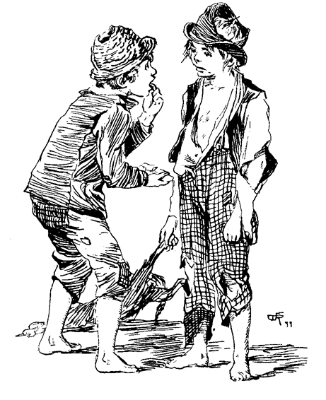»Höre, Huck, willst du meinen Zahn dafür?«
»Laß sehen!«
Tom zog ein Papierchen aus der Tasche und entfaltete es. Huckleberry betrachtete den Zahn aufmerksam. Die Versuchung war groß. Endlich sagte er: »Ist er echt?«
Tom zog die Lippe zurück und zeigte die Lücke.
»Abgemacht, es gilt!«
Tom sperrte die Zecke in das vormalige Gefängnis des Kneipkäfers, in die Zündhütchenschachtel, und die Jungen trennten sich, jeder mit dem Gefühle, einen guten Schick gemacht zu haben.
Bei dem kleinen Schulhause angekommen, trat Tom lebhaft ins Zimmer, wie wenn er es sehr eilig gehabt hätte. Er hing seinen Hut an einen Nagel und nahm mit anscheinender Lernbegierde Platz. Der Lehrer war, von dem eintönigen Summen überwältigt, in seinem hölzernen Armsessel eingeschlafen, und erwachte, durch Toms Eintritt im Schlummer gestört.
»Thomas Sawyer!«
Tom wußte aus Erfahrung, daß, wenn er bei seinem vollen Namen gerufen wurde, etwas nicht in Ordnung war.
»Herr Lehrer!«
»Komm' hierher! Warum bist du, wie gewöhnlich, wieder zu spät?«
Tom war im Begriff, seine Zuflucht zum Lügen zu nehmen, als er zwei gelbe Zöpfe über einen Rücken herabhängen sah, den er, wie durch elektrische Liebessympathie, sogleich erkannte, und neben dieser Gestalt war der einzige leere Platz auf der Mädchenseite. Augenblicklich antwortete er: »Ich habe mich verspätet, weil ich mit Huckleberry Finn zu reden hatte.«
Des Lehrers Pulse stockten, er schien nach Luft zu schnappen. Das Gesumme der Schüler schwieg. Die Kinder wunderten sich, ob der tollkühne Junge den Verstand verloren habe. Der Lehrer rief: »Was, was hast du gethan?«
»Ich verweilte, um mich mit Huckleberry Finn zu unterhalten!«
Das war klar und keine Mißdeutung möglich.
»Thomas Sawyer, das ist das überraschendste Geständnis, das mir jemals vorgekommen. Da reicht die Rute auf die Hände nicht aus, um einen derartigen Fehltritt zu sühnen. Ziehe die Jacke aus!
Der Lehrer bearbeitete ihn so lange, bis seine Kräfte und der Rutenvorrat erschöpft waren.
»So, jetzt packe dich auf die Mädchenbank! Und laß dir diese Strafe zur Warnung dienen!«
Das Gekicher, das sich im Zimmer ringsum vernehmen ließ, schien den Jungen zu verblüffen. Aber das war's nicht. Es war das überwältigende, nie geahnte Glück, neben der unbekannten Angebeteten sitzen zu dürfen. Er nahm Platz. Das Mädchen rückte hastig, den Kopf zurückgeworfen, von ihm weg. Seitenstöße, Geflüster und Winke gingen durch die Schule. Tom saß, die Arme auf dem Pulte, ruhig und schien seine ganze Aufmerksamkeit dem vor ihm liegenden Buche zuzuwenden.
Nach und nach wandte sich die Aufmerksamkeit seiner Mitschüler von ihm ab, und das gewohnte Schulgesumme ließ sich wieder vernehmen. Der Junge sandte verstohlene Blicke nach dem Mädchen. Sie merkte es, schnitt ihm eine Fratze und kehrte ihm eine Minute lang den Rücken. Als sie sich langsam wieder umwandte, lag ein Pfirsich vor ihr. Sie stieß ihn zur Seite. Tom schob ihn sanft wieder zurück. Sie ließ ihn liegen. Tom kritzte auf seine Schiefertafel: »Sei so gut und nimm! Ich habe noch mehr!« Das Mädchen überlas die Worte und blieb stumm.
Gelegentlich fing Tom, die Tafel mit der linken Hand schirmend, etwas zu zeichnen an. Eine Zeitlang schien das Mädchen gleichgültig, nach und nach aber verrieten verschiedene Bewegungen ihre natürliche Neugierde. Tom zeichnete fort, scheinbar ohne sie zu beachten. Sie suchte über seine Hand weg zu schielen, – ohne Erfolg. Zuletzt flüsterte sie: »Laß mich sehen!«
Tom zeigte eine ungeheuerliche Karrikatur eines Hauses mit zwei Giebeln und Korkziehern, die den Rauch aus den Schornsteinen vorstellen sollten. Die Aufmerksamkeit des Mädchens war gefesselt und sie vergaß alles andere.
Als die Zeichnung fertig war, flüsterte sie: »Das ist hübsch, mache einen Mann!«
Der Künstler zeichnete einen Mann, der einem Hafenkrahn glich, und leicht über das Haus hätte wegschreiten können. Die Anforderungen des Mädchens waren nicht überspannt, und sie wisperte: »Der Mann ist schön. Nun male mich, wie ich vorbeigehe!«
Tom zeichnete eine Sanduhr, einen Vollmond, Strohhalme, die Arme und Beine vorstellen sollten, und bewaffnete die ausgespreizten Finger mit einem wuchtigen Fächer.
Das Mädchen sagte: »Ach, wie schön! Wenn ich nur zeichnen könnte!«
»Es ist nicht schwer,« flüsterte Tom. »Ich will es dir zeigen!«
»Willst du? Wann?«
»Nachmittag. Gehst du zum Essen heim?«
»Ich bleibe da, wenn du willst.«
»Sehr gut! Wie heißt du?«
»Becky Thatcher. Und du? O, ich weiß, – Thomas Sawyer!«
»So heiße ich, wenn ich Prügel bekomme. Wenn ich brav bin, heiße ich »Tom«. Nenne mich Tom, Gelt?«
»Ja!«
Tom kritzelte verstohlen etwas auf die Tafel. Sie wollte sehen.
Tom sagte: »O, es ist nichts!«
»Doch, doch!«
»Nein! Du brauchst es nicht zu sehen.«
»Jawohl. Ich muß es sehen. Bitte!«
»Du wirst es weiter sagen!«
»Nein, ich werde nicht!
»Schloß auf- und zugeschlagen,
Niemand werd' ich's jemals sagen!«
So lange ich lebe! So, jetzt laß mich sehen!«
»Aber gerade du sollst es nicht sehen!«
»Und zum Trotz will ich!« Sie versuchte mit ihren kleinen Fingern Toms Hand wegzuschieben; Tom widerstrebte, ließ aber bald nach. Die Worte wurden sichtbar: »Ich liebe dich!«
»O, du Böser!« Sie gab ihm einen leichten Schlag auf die Hand, wurde rot, sah aber ganz vergnügt darein.
Im gleichen Moment fühlte sich Tom durch einen festen, steten Griff an den Ohren emporgezogen und auf seinen früheren Platz zurückversetzt. Der Lehrer fixierte ihn eine Weile mit finsterem Auge, und kehrte, ohne ein Wort zu sagen, auf seinen Thron zurück. Toms Ohren schmerzten ihn, aber sein Herz jubelte. Im Verlauf des Unterrichts strengte er sich ernstlich an, aufmerksam zu sein, aber es gelang ihm nicht. Seine innere Aufregung war zu groß. Beim Lesen stotterte er fortwährend; in der Geographieklasse verwandelte er Seen in Berge, Berge in Flüsse, Flüsse in Kontinente, bis er ein vollständiges Chaos hergestellt hatte. In der Buchstabierklasse endlich ließ er nur kindische Laute vernehmen, mußte sich auf den untersten Platz setzen und verlor seine zinnerne Medaille, die er bisher mit so großem Selbstgefühl getragen hatte.
Ein Vertrag. – Frühzeitige Lektion. – Ein Mißverständnis.
Je größere Anstrengungen Tom machte, seine Aufmerksamkeit auf das vor ihm liegende Buch zu heften, desto größer wurde die Abschweifung seiner Ideen. Mit Gähnen und Seufzen gab er es auf. Die Schulstunden wollten kein Ende nehmen. Die Luft war erdrückend. Kein Hauch ließ sich vernehmen. Er war der schläfrigste aller schläfrigen Tage. Das einschläfernde, bienenstockartige Gesumme von fünfundzwanzig memorierenden Schülern wirkte beruhigend. In der Ferne erglänzte Cardiff Hill, in rötlichem Schimmer erzitternd; ein paar Vögel planten auf trägen Schwingen hoch in der Luft. Kein anderes lebendes Wesen war weit und breit zu sehen, als ein Trupp Kühe, und auch diese schliefen. Tom brannte vor Verlangen, frei zu sein, oder einen Zeitvertreib zu finden, um die fürchterliche Langeweile zu verscheuchen. Seine Hand verirrte sich in die Hosentasche, und wie Dankgebet fuhr es durch seine Züge. Die Zündhütchenschachtel kam heimlich zum Vorschein. Er befreite die Zecke und setzte sie vor sich auf den flachen breiten Pult. Wahrscheinlich fühlte die Befreite etwas wie Dankgebet, aber es war zu früh. Denn als sie sich auf und davon machen wollte, verlegte ihr Tom den Weg mit einer Stecknadel und ließ sie eine neue Richtung einschlagen.
Toms Busenfreund, der sich seither eben so sehr gelangweilt hatte, saß neben ihm, und nahm augenblicklich mit größtem Interesse an dieser Unterhaltung teil. Dieser Busenfreund war Joe Harper. Die beiden Jungen waren geschworene Freunde die ganze Woche hindurch, Sonnabends aber Todfeinde. Joe bewaffnete sich ebenfalls mit einer Stecknadel, und half, den Gefangenen einexerzieren. Der Sport ward bald höchst interessant. Tom fand in kurzem, daß einer den andern störe, und keiner den vollen Genuß der Zecke habe. Somit nahm er Joes Schiefertafel und zog einen Strich, der dieselbe von oben bis unten in zwei gleiche Hälften teilte.
»So,« sagte Tom, »so lange das Tier auf deiner Seite ist, magst du mit ihm manövrieren; kommt es aber auf meine Seite, so mußt du es so lange ruhig lassen, als ich es am Ueberschreiten der Linie hintern kann.«
»Gut so! Fange an! Jage es auf!«
Die Zecke entlief Tom und überschritt den Aequator. Joe plagte sie eine Weile, bis sie auf die andere Seite entwischte. Und so hin und wieder, eine Zeitlang. Während der eine das Tier bearbeitete, sah der andere mit größter Aufmerksamkeit zu. Beide Köpfe auf die Tafel gebeugt, verfolgten sie die Evolutionen der Zecke mit solchem Interesse, daß die ganze übrige Welt für sie tot war. Zuletzt schien sich das Glück auf Joes Seite zu neigen. Die Zecke versuchte dies und das, um ihm zu entrinnen, aber so oft sie auch an der Linie angekommen war, und Tom sich zum Angriff rüstete, so oft wußte Joe ihre Absicht zu vereiteln und sie auf seinem Gebiet zurückzuhalten. Zuletzt konnte Tom nicht länger sich halten. Die Versuchung war zu groß. Er steckte die Hand über die Linie und half mit.
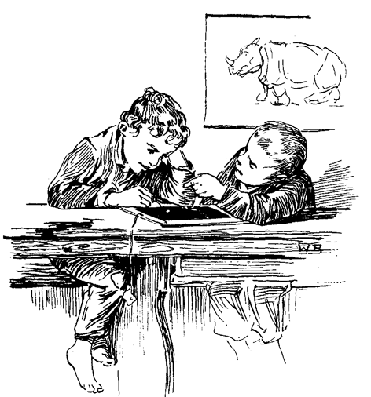Joe fuhr auf: »Höre auf, Tom!«
»Nur ein klein wenig, Joe!«
»Nein, nein, das ist gegen den Vertrag! Laß die Zecke in Ruhe!«
»Verflixt! Nur ein bischen!«
»Höre auf, sage ich dir!«
»Ich mag nicht!«
»Du mußt! Sie ist auf dieser Seite der Linie!«
»So, sieh' mal! Wem gehört denn die Zecke, Joe?«
»Ich frage nicht viel danach! Sie ist auf meiner Seite und du darfst sie nicht berühren!«
»Ich wette, ich darf! Es ist meine Zecke und ich werde damit thun, was mir gefällt, oder sterben!«
Ein fürchterlicher Hieb fiel auf Toms, ein Duplikat auf Joes Schultern. Eine Staubwolke entfuhr den getroffenen Jacken, und die Schule hatte ihre Freude daran. Die Jungen hatten sich so in das Spiel vertieft, daß der Lehrer unbemerkt auf den Zehen heranschleichen und ihre Unterhaltung eine gute Weile belauschen konnte, bevor er seinen Teil zur Abwechslung beitrug.
Als die Schule zu Ende war, stürzte Tom auf Becky Thatcher zu und flüsterte ihr ins Ohr: »Setze deinen Hut auf und thue, als wolltest du nach Hause gehen. Dann biegst du um die Ecke und kehrst durchs Gäßchen hierher zurück. Ich schlage den andern Weg ein und komme von der entgegengesetzten Seite wieder.«
Sie entfernte sich mit den die angedeutete Richtung einschlagenden Mitschülern. Nach kurzer Zeit trafen sie am Ende des Gäßchens wieder zusammen, und in der Schule angekommen, sahen sie sich allein und ungestört. Sie setzten sich nebeneinander, eine Schiefertafel lag vor ihnen. Tom gab ihr den Griffel, führte ihr die Hand und schuf baldigst ein neues, wunderbares Haus. Das artistische Interesse schwand bald und die beiden begannen zu plaudern. Tom war überselig. Er sagte: »Hast du die Ratten gern?«
»Nein, ich verabscheue sie!«
»Ich auch, die lebendigen wenigstens. Aber ich meine tote Ratten, um sie, an eine Schnur gebunden, um den Kopf zu schwingen.«
»Nein, ich liebe die Ratten in keiner Weise. Was ich liebe, ist Hustengummi!«
»Das glaube ich! Wenn ich nur gerade welchen hätte!«
»Möchtest du? Ich habe ein wenig. Ich will dich ein bischen daran kauen lassen, du mußt mir ihn aber wieder geben!«
Tom war einverstanden, und sie kauten abwechselnd, vor Vergnügen die herabhängenden Füße baumelnd.
»Warst du je im Cirkus?«
»Jawohl, und wenn ich artig bin, nimmt mich Papa wieder mit.«
»Ich habe den Cirkus drei- oder viermal, eine ganze Menge mal besucht. Die Kirche ist nichts dagegen. Im Cirkus geht es immer lustig zu. Wenn ich groß bin, will ich Hanswurst werden!«
»Willst du? O, wie schön wird das sein! Sie sind so reizend, so vielfarbig gefleckt!«
»Ja, das sind sie! Und sie verdienen heidenmäßig viel Geld! Fast einen Thaler täglich, sagt Ben Rogers. Sage mal, Becky, warst du schon verlobt?«
»Was ist das?«
»Hm, nun, verlobt zum Heiraten!«
»Nein!«
»Wärest du es gerne?«
»Ich denke, ja! Ich weiß nicht recht. Wie ist es? Was ist es ähnlich?«
»O, es ist nichts ähnlich, Du sagst einem Jungen einfach, daß du nie einen andern als ihn und nur ihn haben willst, dann küßt ihr euch und die Sache ist im Blei. Das kann jedermann.«
»Küssen? Wozu?«
»Ich weiß es nicht. Aber alle thun es.«
»Jedermann?«
»Ja, jedermann, der jemand liebt. Weißt du noch, was ich auf die Tafel schrieb?«
»Ja –«
»Was?«
»Ich werde es dir nicht sagen?«
»Soll ich es dir sagen?«
»Hm – ja – aber ein andermal!«
»Nein, nicht jetzt! Morgen!«
»Nein, jetzt! Sei lieb, Becky, ich werde es dir nur ganz leise ins Ohr flüstern!«
Sie zögerte. Tom nahm ihr Schweigen für Zustimmung, legte den Arm um sie, und flüsterte ihr sanft ins Ohr: »Ich liebe dich!«
»So, nun mache es auch so!«
Sie sträubte sich eine Weile und sagte endlich: »Wende das Gesicht ab, daß du es nicht sehen kannst! Und versprich mir, es niemals jemand zu sagen! Ganz gewiß nicht, Tom!«
»Ganz gewiß nicht, Becky!«
»So, jetzt!«
Er wandte das Gesicht zur Seite. Sie näherte den Mund, bis seine Locken von ihrem Atem erzitterten, und flüsterte: »Ich – liebe – dich!«
Dann sprang sie auf, floh durch das Zimmer, an Bänken und Stühlen vorbei, Tom immer hinter ihr her, und flüchtete sich zuletzt in eine Ecke, das Gesicht in ihre kleine weiße Hand bergend. Tom umfaßte ihren Nacken und flehte: »Sieh', Becky, es ist ja alles vorbei, bis auf den Kuß! Du brauchst dich nicht davor zu fürchten, es ist gar nichts! Bitte, Becky!« Und er zupfte sie an der Hand und an der Schürze.
Endlich ließ sie die Hand sinken, Tom küßte sie.
»So, nun ist's überstanden. Jetzt, Becky, darfst du in aller Zukunft niemand lieben als mich, und niemand heiraten, als mich. Willst du?«
»Ja! Ich werde niemand lieben und niemand heiraten als dich, und du wirst auch niemand lieben und heiraten als mich.«
»Natürlich, das gehört auch dazu. Und wenn wir zur Schule oder nach Hause gehen, mußt du immer mit mir gehen, wenn es niemand sieht, und bei Spielen mich immer als Partner wählen. Das ist so der Brauch zwischen Verlobten.«
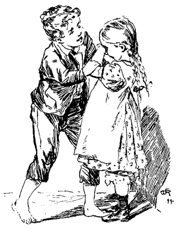»Ach, das ist gar zu hübsch! Ich hörte früher nie so etwas.«
»Gewiß ist es hübsch. Sieh'! Ich und Amy Lawrence –«
Becky machte große Augen und Tom wurde seines Fehlers gewahr.
»O, Tom, so bin ich nicht deine erste Verlobte!«
Das Kind brach in Thränen aus.
»Weine nicht, Becky, ich bekümmere mich nicht mehr um sie!«
»Freilich thust du's, du weißt es wohl!«
Tom versuchte, ihr den Arm um den Nacken zu legen; sie stieß ihn zurück, drehte das Gesicht nach der Wand und weinte fort. Ein wiederholter Versuch Toms, sie durch gute Worte zu trösten, blieb fruchtlos. – Da erwachte sein Stolz. Er ließ sie stehen und ging hinaus. Er stand da eine Weile, unruhig und unzufrieden, von Zeit zu Zeit nach der Thüre blickend, in der Hoffnung, sie reumütig zu sich kommen zu sehen. Aber sie kam nicht. Da ward ihm bange und nach langem Kampfe beschloß er, ihr wieder entgegenzukommen. Sie stand noch in der Ecke und schluchzte, das Gesicht gegen die Wand gekehrt. Das Herz im Leibe that ihm weh. Er ging auf sie zu, unklar, wie er sich zu benehmen habe.
»Becky,« sagte er zögernd, »ich liebe niemand als dich!«
Keine Antwort, aber Schluchzen.
»Becky,« flehte er, »willst du mir nichts sagen?«
Verdoppeltes Schluchzen.
Da griff er zu den großen Mitteln. Sein größter Schatz bestand in einem messingenen Feuerbockknopf. Er zog ihn hervor und hielt ihn ihr vor die Augen.
»Da, Becky, sei gut und nimm ihn mir ab!«
Sie schlug ihm ihn aus der Hand. Tom verließ das Haus, schweifte über Berg und Thal und mit der Schule war es für heute aus. Becky schöpfte endlich Verdacht. Sie eilte nach der Thüre. Kein Tom. Sie flog zum Spielplatz. Er war auch da nicht. Dann rief sie: »Tom, komm' zurück, Tom!«
Keine Antwort. Allein und verlassen stand sie da. Sie setzte sich weinend nieder, und hatte all ihre Kraft aufzubieten, um den wiederkehrenden Kindern nichts merken zu lassen und einige schrecklich langweilige Lehrstunden auszuhalten, ohne jemand zu haben, dem sie ihren Kummer hätte anvertrauen dürfen.
Tom faßt einen Entschluß. – Alte Szene neu aufgeführt
Tom schlenderte die Feldwege entlang, bis er sich außer dem Bereich der Schuljugend fühlte, und fiel dann in einen verdrossenen Trab. Er überschritt den Bach einigemal in jugendlichem Wahn, daß Wasser jede Verfolgung vereitelte. Eine halbe Stunde später verschwand er hinter dem Douglashause auf dem Cardiff Hill, von wo er das Schulhaus in weiter Ferne unten im Thale noch erblickte. Er betrat ein dichtes Gehölze und drang bis zur Mitte desselben vor. Dort ließ er sich unter einer mächtigen Eiche auf das Moos nieder. Kein Lüftchen rührte sich. Selbst der Gesang der Vögel war in der glühenden Sommerhitze verstummt. Die ganze Natur lag in einer Ohnmacht, die nur zuweilen durch das entfernte Picken eines Spechts unterbrochen wurde, welches das Gefühl der Einsamkeit noch steigerte. Tiefe Melancholie erfaßte den Knaben. Seine Gefühle harmonierten mit der Umgebung. Er saß lange sinnend, die Ellbogen auf die Kniee, das Gesicht auf die Hände gestützt. Das Leben, auch das beste, erschien ihm nur als eine Reihe von Sorgen und Kummer, und er beneidete halb und halb das Los des jüngst verstorbenen Jimmy Hodyes. Es mußte sich so friedlich und ruhig da unten schlummern und träumen lassen, von niemand gestört, das Säuseln des Windes mit den Aesten und sein Kosen mit den Blumen über sich, ohne Schmerz und Kummer, immer, ewig fort! Wenn nur sein Sonntagsschulregister besser in der Ordnung gewesen wäre, so hätte er jetzt gerne allem ein Ende gemacht. – Und dieses Mädchen? Was hatte er ihr gethan? Nichts! Auch gar nichts! Er hatte es so gut mit ihr gemeint, und sie hatte ihn behandelt wie einen Hund! Schlimmer als einen Hund! Aber die Reue wird über sie kommen, vielleicht zu spät! Ach, wenn er nur für eine Zeitlang sterben könnte!
Aber die Spannkraft des jugendlichen Herzens läßt sich nicht auf die Dauer unterdrücken. Tom kehrte bald in die Wirklichkeit zurück. Wie wäre es, wenn er der Heimat den Rücken kehrte und spurlos verschwände? Was, wenn er fortginge in die weite, weite Welt, in unbekannte Länder jenseits des Meeres, und nie, niemals wiederkäme? Wie würde ihr da wohl zu Mute sein? Er erinnerte sich mit Abscheu an seinen Wunsch, Hanswurst zu werden. In seiner gehobenen Stimmung erschienen ihm Possen und Harlekinskleider als eine Gotteslästerung. Nein, da wollte er lieber Soldat werden, um nach langen Jahren mit Narben und Ruhm bedeckt wiederzukehren. Oder noch besser, er wollte unter die Indianer gehen, Büffel jagen, den Kriegspfad beschreiten, die Bergketten und die endlosen Steppen des Westens durchstreifen, und dann als großer Häuptling wiederkommen, das Haupt im Federschmucke, den Körper schrecklich bemalt, an einem schwülen Sommermorgen plötzlich in der Sonntagsschule erscheinen, seinen Schlachtruf ausstoßen – ein Gegenstand des höchsten Neides seiner Gefährten! – Oder ein Seeräuber. Das war's. Seine Zukunft lag klar vor ihm im Schimmer unbeschreiblicher Größe. Wie sein Name die Welt erfüllen und Furcht und Schrecken verbreiten würde! Wie ruhmvoll würde er die tanzende See pflügen mit seinem langen, niedrigen, schwarzen Schnellsegler »Der Sturmgeist«, die schreckliche Flagge am Vormast! Und im Zenith seines Ruhmes, wie würde er plötzlich im heimischen Dorfe erscheinen, die Kirche betreten, gebräunt und verwittert, in schwarzem Sammetwams und dito Hosen, in weiten Stiefeln, mit roter Schärpe, den Gürtel von Pistolen starrend, das blutgetränkte Schwert an der Seite, im breiten Federhut, die schwarze Flagge mit dem Totenkopf entfaltet! Mit welchem Entzücken würde das Geflüster an sein Ohr dringen: »Das ist Tom Sawyer, der Pirat! – der schwarze Rächer der spanischen Meere!« Ja, es war abgemacht; seine Laufbahn war bestimmt. Fort wollte er und beginnen. Schon am nächsten Morgen. Da war keine Zeit zu verlieren um sich fertig zu machen. Er mußte seine sämtlichen Mittel aufbringen. Mit seinem Bowiemesser begann er auf einer Seite eines benachbarten Baumstumpfes die Erde aufzuwühlen. Bald stieß er auf Holz das hohl klang. Er reckte die Hand aus und sprach nachdrucksvoll die Beschwörungsformel:
»Was nicht hier war, komme!
Was hier war, bleibe!«
Er kratzte ringsum die Erde weg und brachte eine Schindel zum Vorschein, die einem aus dem gleichen Material gefertigten Behälter als Deckel gedient hatte. In dieser Schatzkammer lag ein Marmel. Toms Erstaunen war grenzenlos. Verblüfft kratzte er sich in den Haaren und sagte: »Das geht übers Bohnenlied!«
Dann warf er den Marmel verächtlich von sich und stand kleinlaut da. Ein Aberglaube, an dem er, wie alle seine Kameraden hing, hatte ihn im Stich gelassen. Wenn man, glaubten sie, einen Marmel unter gewissen, unerläßlichen Beschwörungsformeln in die Erde vergrub und ihn da 14 Tage unberührt ließ, so fand man beim Oeffnen des Verstecks, das unter Hersagung des oben erwähnten Spruchs geschehen mußte, alle Marmel, die man je besessen und verloren hatte, auf einem Häufchen beisammen, wie weit entfernt sie auch gelegen haben mochten. Das hatte sich nun durchaus nicht bewährt. Toms Glaube war bis in die Grundvesten erschüttert. Von gelungenen Versuchen hatte er oft genug erzählen hören, aber nie von einem gescheiterten. Es fiel ihm nicht ein, daß er dieses Experiment früher selbst verschiedene Male gemacht, niemals aber das Versteck wiedergefunden hatte. Er grübelte eine Zeitlang über die Sache und kam zum Schluß, daß eine Hexe die Hand im Spiele gehabt, und den Zauber gebrochen habe. Er beschloß dem Geheimnis nachzuspüren. Umherspähend fand er einen kleinen sandigen Fleck mit einer trichterförmigen Vertiefung. Er legte sich nieder, hielt den Mund dicht an die Oeffnung und rief: »Faulenzer, Faulenzer, sage mir, was ich wissen möchte!« Der Sand begann sich zu bewegen, ein kleiner schwarzer Käfer kam zum Vorschein, floh aber erschreckt und verschwand in dem Grübchen. »Er durft es nicht sagen! Ich wußte es wohl, daß eine Hexe im Spiele war!«
Daß mit Hexen nicht gut Kirschen essen sei, wußte Tom, und so gab er den Kampf entmutigt auf. Dann dachte er, daß er den weggeworfenen Marmel ebensogut mitnehmen könne, suchte ihn lange, fand ihn aber nicht. Hierauf nahm er genau die frühere Stellung am Versteck ein, zog einen andern Marmel aus der Tasche, und schleuderte ihn in derselben Richtung mit den Worten fort:
»Bruder geh', suche deinen Bruder!«
Er merkte sich die Stelle wo er niederfiel, und suchte dort. Er fand nichts. Dann versuchte er es noch einigemal. Der letzte Wurf gelang, die beiden Marmel lagen neben einander.
In diesem Augenblick ertönte eine Kindertrompete durch die grünen Baumgewölbe. Tom warf Jacke und Hosen ab, gürtete einen Hosenträger um die Lenden, entfernte einen Haufen Reisig vom Baumstumpf, bewaffnete sich mit Bogen und Pfeil, einem blechernen Schwert und einer Zinntrompete und stürmte mit flatterndem Hemde barfuß davon. Unter einer großen Ulme machte er halt, blies ein beantwortendes Signal, erhob sich auf die Zehen und spähte kriegerisch nach allen Seiten. Vorsichtig redete er seine eingebildete Truppe an:
»Halt, meine wackeren Mannen! Haltet euch versteckt bis ich blase!«
Joe Harper trat auf, ganz so gekleidet und ausgerüstet wie Tom. Dieser rief:
»Halt! Wer wagt es, ohne meinen Geleitschein in den Forst von Sherwood einzudringen?«
»Gay von Ginsborn bedarf keines Geleitsbriefes! Wer bist du, der – der –«
»Der solche Sprache führen darf?« half Tom nach. Sie sprachen »nach dem Buch«.
»Wer bist du, der solche Sprache führen darf?«
»Ich? Wer ich bin? das soll dein schuftiges Gerippe früh genug erfahren. Ich bin Robin Hood!«
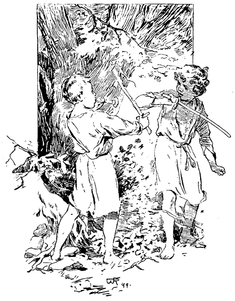»Bist du wirklich dieser famose Bandit? Von ganzem Herzen will ich mit dir um die grünen Gänge dieses fröhlichen Waldes kämpfen. Lege los!«
Sie ergriffen die blechernen Schwerter, warfen die übrige Rüstung von sich, und nahmen Fechterstellung ein. Bald erfolgte ein ernster sorgfältiger Kampf, zwei Hiebe auf und zwei nieder. Tom rief:
»So, da du den Griff los hast, laß uns lebhaft fechten!«
Sie fochten wirklich so lebhaft, daß sie keuchten und Ströme von Blut vergossen. Endlich rief Tom:
»Falle! Falle doch! Warum fällst du nicht?«
»Ich mag nicht. Falle du selbst! Du bist im Nachteil!«
»Ach was, das ist nichts. Ich darf nicht fallen. So steht es nicht im Buch. Das Buch sagt: ›Dann erschlug er Gay von Ginsborn mit einem einzigen, mit gekehrter Hand geführten Hieb?‹ Du mußt dich umwenden, daß ich dich in den Rücken treffen kann!«
Gegen die angerufene Autorität ließ sich nichts einwenden. Joe wandte sich um, empfing den Hieb und fiel.
»So!« sagte Joe im Aufstehen, »jetzt ist es an mir. Jetzt mußt du fallen! Das ist nicht mehr als billig!«
»Das geht nicht! So steht es nicht im Buch!«
»Das ist verdammt gemein von dir!«
»Höre Joe, du kannst ja den Einsiedler Tuck oder Much, des Müllers Sohn spielen, und mich mit einem Fechtstock durchwalken. Oder aber werde ich der Sheriff von Nottingham sein; du kannst dann den Robin Hood ein wenig spielen und mich umbringen!«
Nach dieser Uebereinkunft wurden die Rollen glücklich zu Ende gespielt. Dann wurde Tom wieder Robin Hood, und verblutete sich unter den Händen der verräterischen Nonne. Zum Schluß schleppte ihn Joe, eine ganze Rotte Geächteter vorstellend, davon, gab ihm den Bogen in die schwachen Hände und Tom sagte:
»Wo dieser Pfeil fällt, da begrabt den armen Robin Hood unter dem Laubdach des grünen Waldes!« Er schoß den Pfeil ab, fiel zurück und würde gestorben sein, wenn er nicht auf eine Brennessel gefallen wäre. So aber stand er freilich für einen Leichnam etwas zu rasch wieder auf.
Die Knaben kleideten sich wieder an, verbargen ihre Kriegsrüstungen und gingen nach Hause. Sie bedauerten sehr, daß die Zeit der Geächteten vorbei war, und wunderten sich, was wohl die neuere Civilisation geschaffen, das nur entfernt diesen Verlust aufhöbe. Lieber wollten sie ein einziges Jahr Freibeuter im Walde von Sherwood sein, als Präsident der Vereinigten Staaten auf Lebenszeit.
Feierliche Situation. – Ernste Ereignisse. – Der Indianer Joe tritt auf.
Wie gewöhnlich, wurden auch an diesem Tag Tom und Sid um halb zehn zu Bette geschickt. Nach dem Gebet schlief Sid ein. Tom wachte, und lag in fieberhafter Erregung. Er erwartete jeden Augenblick den Morgen dämmern zu sehen – da schlug es erst Zehn! Es war zum Verzweifeln! Seine Nervenzuckungen mußte er gewaltsam unterdrücken, um Sid nicht zu wecken. Er starrte lautlos in die schwarze Nacht. Todes Schweigen herrschte ringsum. – Allmählich erhob sich ein Flüstern, zuerst kaum vernehmbar, dann immer mehr anschwellend. Auch das Tick-Tack der Uhr wurde hörbar. Die alten Balken begannen geheimnisvoll zu krachen. Die Treppen ächzten. Die Geister hatten ihr Spiel. – Aus dem Schlafzimmer der Tante ließ sich ein leises, abgemessenes Schnarchen vernehmen, das eintönige Zirpen eines versteckten Heimchens begann, begleitet vom Pochen des Totenkäfers in der Wand am Kopfende des Bettes. Tom schauderte. Das bedeutet, daß in nächster Zeit jemand sterben muß. – Dann erhob sich das Geheul eines Hundes, dem aus der Ferne ein gedämpfter Wiederklang entgegenscholl. Auf Toms Stirne brach der Angstschweiß aus. Es war ihm, wie wenn das Ende des Zeitlichen gekommen und die Ewigkeit begonnen hätte. – Halb schlummernd hörte er es nicht, als die Glocke elf Uhr schlug. – Da wurden seine Träume durch ein höchst melancholisches Miauen unterbrochen. Der Ruf: »Du verteufelte Katze«, dem das Klirren einer gegen den Holzschuppen seiner Tante geschleuderten leeren Flasche folgte, brachte ihn vollends zum Bewußtsein. Eine Minute später war er angekleidet, zum Fenster hinausgestiegen, und auf allen Vieren über das Dach geklettert. Im Klettern miaute er ein- oder zweimal mit möglichster Vorsicht, voltigierte auf das Dach des Schuppens, und von da zur Erde. Huckleberry Finn war da, und hatte seine tote Katze mitgebracht. Die Jungen verschwanden miteinander im Dunkel. Nach einer halben Stunde wateten sie durch das hohe Gras des Friedhofs.
Es war ein Friedhof wie sie im Westen zur Zeit alle waren. Er lag ungefähr 1½ Meilen von der Stadt auf einem Hügel. Seine liederliche Einfassung hing stellenweise einwärts, stellenweise auswärts, stand aber nirgends aufrecht. Gras und Gebüsch bedeckten ihn durchweg in üppiger Fülle. Die alten Gräber waren alle eingesunken; da war nirgends ein Leichenstein an seinem Orte; wurmstichige Bretter erhoben sich wackelnd über den Gräbern und schienen einen Stützpunkt zu suchen, ohne ihn zu finden. Dem Andenken des oder der »So und so« gewidmet, war früher darauf gemalt gewesen, aber selbst bei Tageshelle hätte jetzt niemand mehr diese Inschriften entziffern können.
Ein schwacher Wind ächzte durch die Bäume, und Tom glaubte, die Klagen der in ihrer Ruhe gestörten Toten zu vernehmen. Die Jungen sprachen wenig und nur flüsternd. Die späte Stunde, die Feierlichkeit der Umgebung und die tiefe Stille bedrückten sie. Sie fanden endlich den gesuchten frischen Grabhügel, und kauerten sich, im Schutz einiger stattlichen Ulmen, die sich in einer Gruppe wenige Schritte vom Grabe erhoben, nieder ins Gebüsch.
Sie warteten eine Weile, die ihnen eine Ewigkeit schien. Nur der Ruf einer Eule unterbrach die tote Stille. Tom war überwältigt. Er mußte sich durch Reden Luft machen. Er flüsterte: »Was meinst du Huck! Haben die Toten da unten wohl Vergnügen daran, daß wir da sind?«
»Ich möchte es wohl wissen,« entgegnete Huck. »Es ist schrecklich feierlich hier. Nicht?«
»Gewiß ist es so!«
Längere Pause.
»Was meinst du, Huck? Glaubst du, daß uns Roß William hört?«
»Gewiß hört er uns! Oder doch sein Geist!«
»Wenn ich nur gesagt hätte ›Herr William‹. Ich wollte ihn nicht beleidigen. Aber Jedermann nennt ihn Roß William!«
»Ja, Tom, man kann nie vorsichtig genug im Reden über diese toten Leute sein«.
Das war ein Dämpfer; Das Zwiegespräch verstummte. Plötzlich packte Tom seinen Kameraden am Arm: »St!«
»Was giebt's, Tom?« Die Beiden umklammerten sich mit klopfenden Herzen.
»St! Wieder! Hörtest du nichts?«
»Ich –«
»Da! Jetzt gieb Acht!«
»Herr Jesus, Tom, sie kommen! Sie kommen ganz gewiß! Was anfangen?«
»Weiß nicht. Denke sie werden uns sehen wollen.«
»O, Tom, sie können im Finstern sehen, absolut wie die Katzen. Wenn ich nur nicht gekommen wäre.«
»Hab doch keine Angst! Sie werden uns nichts thun. Wir thun ja nichts Unrechtes! Wenn wir uns ganz still halten, werden sie uns vielleicht gar nicht bemerken«.
»Ich will es versuchen, Tom, aber das schaudert mich durch Mark und Bein!«
»Horch!«
Die Jungen saßen, Kopf an Kopf, und wagten kaum zu atmen. Vom andern Ende des Friedhofs her klang es, wie unterdrücktes Gespräch.
»Sieh dort! Was mag es sein?« flüsterte Tom.
»Das ist der feurige Teufel! O, Tom, wie schrecklich.«
Einige verschwommene Gestalten näherten sich durch das Dunkel; sie trugen eine altmodische Zinnlaterne, die im Hin- und Herschwingen das Gras mit unzähligen Lichtstreifen durchzitterte. Huckleberry schauderte zusammen und wisperte:
»Kein Zweifel. Es sind Teufel! Ihrer drei! Tom, wir sind futsch! Kannst du beten?«
»Ich will es probieren. Fürchte dich nur nicht! Sie werden uns nichts zuleide thun. ›Müde bin ich, geh zur Ruh, Schließ die müden Augen zu! Vater der im Himmel – –‹«.
»St!«
»Was ist's, Huck?«
»Es sind Menschen! Einer davon ganz gewiß! Ich kenne die Stimme des alten Muff Patter!«
»Ist's möglich? wirklich. Huck?«
»Ich wette darauf. Rühre dich nicht, Tom! Er ist nicht fein genug, uns aufzuspüren. Wahrscheinlich besoffen wie gewöhnlich, – der verdammte, alte Strick!«
»Gut, gut, ich werde mich nicht mucksen. – Jetzt stehen sie still! Sie können's nicht finden! Da kommen sie wieder! Sie brennen! Wieder kalt! Brennen wieder! Feuerloh! Jetzt sind sie recht! Höre Huck, ich kenne eine andere dieser Stimmen. Es ist der Indianer Joe!«
»Du hast recht, es ist das mörderische Halbblut! Lieber wollte ich den Teufel sehen, als diese verdammten Halunken! Auf was sind sie aus.«
Die Jungen schwiegen, denn die drei Männer waren am Grabe angekommen und standen nur einige Fuß weit von ihrem Versteck.
»Wir sind zur Stelle!« ließ sich die dritte Stimme vernehmen. Der Sprecher hielt die Laterne in die Höhe, und die Züge des jungen Dr. Robinson wurden sichtbar. Potter und Indianer Joe hatten eine Tragbahre, ein Seil und ein paar Schaufeln mitgebracht. Sie setzten die Bahre nieder und begannen das Grab aufzuscharren. Der Doktor stellte die Laterne zu Häupten desselben und setzte sich, den Rücken an eine der Ulmen gelehnt. Er war den Knaben so nahe, daß sie ihn hätten berühren können: »Hurtig, Ihr Männer, der Mond kann jeden Augenblick aufgehen!«
Sie brummten vor sich hin, und fuhren eifrig zu graben fort. Lange unterbrach nur das monotone Geräusch der Werkzeuge die tiefe Stille. Endlich stieß ein Spaten auf den Sarg. In wenigen Momenten war er gehoben. Sie sprengten den Deckel mit ihren Spaten ab, und warfen den Leichnam roh zur Erde. Eben ging der Mond auf und beleuchtete das bleiche Antlitz des Toten. Sie legten ihn auf die Bahre und banden ihn mit dem mitgebrachten Seile fest, nachdem sie ihn mit einem Leintuch bedeckt hatten. Potter zog ein großes Messer hervor und hieb das herunterhängende Ende des Strickes ab.
»So Beinabsäger, das verdammte Geschäft wäre abgemacht! Also heraus mit einer weiteren Fünf-Dollar-Note, oder der Kadaver bleibt hier!«
»So ist es!« bekräftigte der Indianer Joe.
»Was soll das heißen? Ihr wolltet zum Voraus bezahlt sein und ich habe es gethan!«
»Ja, und du hast noch mehr gethan! Vor fünf Jahren hast du mich aus deines Vaters Küche, wo ich um etwas Essen bettelte, gejagt, und gesagt, ich wäre nicht in guter Absicht da! Und als ich schwur, ich würde mit dir abrechnen und wenn es hundert Jahre anstehen sollte, ließ mich dein Vater als Vagabund einsperren! Glaubtest du, ich würde es vergessen? Nicht vergebens fließt Indianerblut in meinen Adern! Nun habe ich dich und du sollst mir dafür bezahlen!«
Er stand mit erhobener Faust vor dem Doktor. Dieser holte plötzlich aus und streckte ihn mit einem Schlage zu Boden. Potter ließ sein Messer fallen und rief: »Was mißhandelst du meinen Kameraden?« Im nächsten Augenblick hatten sie sich gepackt und rangen aus Leibeskräften, das Gras zerstampfend und die Erde mit den Hacken aufwühlend. Der Indianer Joe sprang auf, ergriff Potters Messer und katzenartig die Kämpfenden umkreisend erspähte er mit wutblitzenden Augen eine Blöße. Plötzlich schnitt der Doktor seinen Gegner ab, ergriff ein naheliegendes Brett des gesprengten Sarges und schlug Potter damit nieder. Aber im gleichen Augenblick stieß ihm Joe das Messer bis ans Heft in die Brust. Er wankte und fiel, teilweise auf den besinnungslos daliegenden Potter und überströmte ihn mit seinem Blut. Gleichzeitig verhüllten die Wolken die schreckliche Scene und die zitternden Jungen verloren sich eiligst im Dunkel.
Als der Mond wieder schien, stand der Indianer Joe über die beiden Daliegenden gebeugt, in ihrem Anschaun verloren. Der Doktor stöhnte und nach einigen letzten Zuckungen lag er stille.
Der Mischling murmelte:
»So, diese Rechnung wäre ausgeglichen! Sei verdammt!« Dann plünderte er den Toten, legte das Messer in die offene rechte Hand Potters und setzte sich nieder auf den, zertrümmerten Sarg. Nach einigen Minuten begann Potter sich zu regen und zu stöhnen. Seine Hand schloß sich um das Messer. Er erhob und betrachtete es und ließ es schaudernd fallen. Er raffte sich auf und schüttelte den Leichnam von sich. Er betrachtete ihn, und starrte verwirrt umher. Er begegnete Joes Auge:
»Herrgott, Joe, was ist das?«
»Ein unsauberes Geschäft!« sagte dieser, ohne sich zu rühren. »Warum hast du das gethan?«
»Ich? Ich habe es nicht gethan!«
»Gieb dir keine Mühe! hier hilft kein Leugnen!«
Potter zitterte und wurde totenblaß.
»Ich glaubte wieder nüchtern geworden zu sein. Warum auch mußte ich diesen Abend trinken! Aber ich bin noch ganz verwirrt im Kopfe, schlimmer als bevor wir hierher kamen. Es geht alles mit mir ringsum! Ich weiß mich an gar nichts zu erinnern! Sage mir, braver, alter Kamerad, habe ich das wirklich gethan? Das wollte ich nicht! Bei meiner Seele und bei meiner Ehre, das war nie meine Absicht! Wie war es doch, Joe? O, es ist doch fürchterlich! Und er, so jung und so hoffnungsvoll!«
»Nun ihr hattet euch beim Kragen und er versetzte dir eins mit dem Brett und du fielst um. Dann sprangst du auf und schwankend und stolpernd stießest du ihm das Messer in den Leib, eben als er zu einem neuen Schlag ausholte. Und seither hast du dagelegen wie ein Klotz!«
»O, ich wußte nicht was ich that! Möge ich in dieser Minute sterben, wenn ich es wußte! Der Whisky und die Aufregung sind allein schuld daran. Ich habe mich in meinem ganzen Leben nie einer Waffe bedient! Ich habe mich geboxt, aber nie mit Waffen. Das muß mir jedermann bezeugen. O, Joe, sage nur nichts! Versprich mir, daß du es nicht sagen willst! Ich habe dich immer gerne gehabt, Joe, und bin manchmal für dich eingestanden. Du erinnerst dich doch? Gelt, du sagst nichts?«
Und der arme Tropf fiel vor dem gefühllosen Mörder auf die Knie und hielt die gefalteten Hände flehend zu ihm empor.
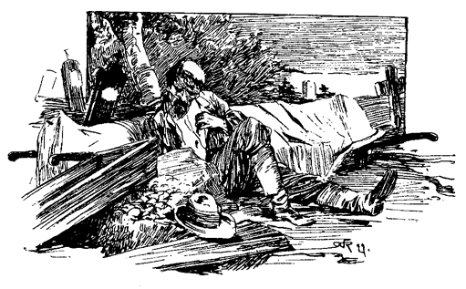»Du warst immer anständig gegen mich, Muff Potter, und ich werde nicht Gutes mit Bösem vergelten. Ich werde nichts sagen! Mehr kannst du nicht verlangen!«
»O, Joe, du bist ein Engel! Ich werde dich dafür segnen bis zu meinem letzten Atemzug.!« Und Potter fing an, laut zu weinen.
»Genug davon! Es ist jetzt keine Zeit für solches Gefasel. Mache, daß du fortkommst und laß keine Spuren hinter dir! Gehe du in jener Richtung; ich werde diesen Weg einschlagen.«
Potter setzte sich in einen Trab, der bald in einen Galopp ausartete. Der Mischling sah ihm nach.
»Wenn er von dem Schlag und dem Rum wirklich so betäubt ist, als er aussieht, so wird er weit laufen, ehe er sich an sein Messer erinnert, und dann wird ihn die Furcht abhalten, es hier zu holen! der Hasenfuß!«
Einige Minuten später beschien der Mond allein den gemordeten Mann, den verhüllten Leichnam, den deckellosen Sarg und das offene Grab. Tiefe Stille herrschte wieder.
Der feierliche Schwur. – Schrecken bringt Reue. – Seelenleiden.
Entsetzt und sprachlos flohen die beiden Knaben dem Dorfe zu, von Zeit zu Zeit einen verstohlenen Blick über die Schulter hinter sich werfend, wie wenn sie fürchteten, verfolgt zu werden. Jeder im Wege stehende Baumstumpf erschien ihnen als ein Feind, und das Gebell der Haushunde in der Nähe des Dorfes verlieh ihren Füßen Flügel.
»Wenn wir nur die alte Gerberei erreichen können, ehe wir zusammenbrechen«, flüsterte Tom atemlos, »ich kann es nicht länger aushalten!«
Huckleberrys keuchende Atemstöße waren die einzige Antwort. Das Auge auf das ersehnte Ziel gerichtet, rafften sie ihre äußersten Kräfte auf, es zu erreichen; kamen ihm immer näher – stürzten endlich Beide zugleich durch das geöffnete Thor und sanken todmüde und dankenden Herzens im bergenden Schatten nieder. Nach und nach besänftigten sich die fliegenden Pulse und Tom flüsterte:
»Was meinst du, Huckleberry, wozu wird diese Geschichte führen?«
»Zum Galgen, sicher genug, wenn Dr. Robinson stirbt!«
»Ich bin davon überzeugt!«
Tom sann ein wenig nach:
»Aber wer wird es sagen? Wir?«
»Wie du sprichst! Wenn wir es sagten, und der Indianer Joe entrönne durch eine mögliche Verkettung der Umstände dem Galgen, wie dann? Er würde uns umbringen, so gewiß als wir hier liegen!«
»Das fürchte ich eben auch, Huck!«
»Wenn es jemand sagen muß, so soll Muff Potter es thun, wenn er ein Narr sein will. Besoffen genug ist er gewöhnlich dazu!«
Tom antwortete nicht und sann.
»Aber Huck, Muff Potter weiß es nicht. Weil er eben jenen Streich empfangen hatte, der ihn besinnungslos zu Boden streckte, als Joe die That vollbrachte. Wie konnte er da etwas sehen, oder wissen?«
»Du hast Recht, Tom! 's ist wahr!«
»Und dann hat er sich vielleicht von jenem Streich nicht erholt!«
»Nein, das ist nicht wahrscheinlich. Er war betrunken, wie er es ja immer ist. Wenn mein Vater voll ist, kann man ihn über einen Kirchturm werfen, ohne ihm wehe zu thun. Er selbst sagt so. Natürlich ist es mit Muff Potter nicht anders. Aber jener Hieb hätte auch einem stocknüchternen Mann den Garaus machen können! Ich weiß nicht!«
Nach längerem, stillen Nachdenken sagte Tom:
»Huck, kannst du schweigen?«
»Tom, wir müssen schweigen. Jener verteufelte Indianer würde uns, wenn er den Hals aus der Schlinge zöge, ersäufen, als wären wir zwei junge Katzen. Was wir zu thun haben, ist, uns gegenseitig durch einen feierlichen Eid zum unverbrüchlichen Stillschweigen zu verpflichten.«
»Einverstanden! Das ist das Beste!«
»So reiche mir die Hand und schwöre – halt! Das ist nicht genug. Das ist gut für unbedeutende, nichtssagende Anlässe, besonders wenn Mädchen dabei im Spiele sind, die Einen immer im Stiche lassen und plaudern müssen. Aber in einer so wichtigen Sache muß das schriftlich abgemacht werden und mit Blut.«
Tom applaudierte mit Leib und Seele. Es war tief still, finster und unheimlich; die Stunde, die Umgebung, alles war günstig. Er raffte eine Schindel vom Boden auf, nahm ein Stückchen Rötel aus der Tasche und schrieb, vom Monde beleuchtet, mühsam folgende Worte, die Grundstriche mit einem Druck der Zähne aus die Zunge und die Haarstriche mit jeweiligem Nachlassen des Druckes begleitend: »Huck Finn und Tom Sawyer schwören, über dieses zu schweigen und wünschen auf dem Wege tot umzufallen, wenn sie es jemals sagen und ausplaudern!«
Huckleberry war von Toms Meisterschaft im Schreiben von seinem sublimen Stil entzückt. Er nahm eine Stecknadel aus seinen Aermelumschlägen und wollte sich eben in die Hand stechen, als Tom sagte: »Halt! Laß das! Das ist Messing! Vielleicht ist Grünspan dran!«
»Was ist Grünspan?«
»Gift ist's! Probiere es, verschlucke davon, du wirst dann sehen!«
Tom wickelte den Faden von einer seiner Nadeln. Jeder stach sich in den Daumen und preßte einen Tropfen Blut heraus. Nach langer Quetschung hatte Tom, den kleinen Finger als Feder benutzend, seinen Namen auf der Schindel zu Stande gebracht und unter seiner Leitung malte Huck ein H und ein F dazu. Der Eid war geschworen. Sie verscharrten die Schindel dicht an der Mauer unter verschiedenen, unheimlichen Ceremonien und Zaubersprüchen. An ihrem Munde hing ein Schloß und der Schlüssel war verloren.
Eine Gestalt kroch durch eine Bresche auf der entgegengesetzten Seite des verfallenen Gebäudes. Die Knaben merkten es nicht.
»Tom«, flüsterte Huck, »sind wir nun durch diesen Eid für immer, für alle Zeiten gebunden?«
»Natürlich sind wir es! Möge auch kommen was da wolle, wir müssen schweigen. Weißt du nicht mehr, daß wir tot niederfallen würden?«
»Ja so! 's ist auch wahr!«
Sie flüsterten eine Zeit lang weiter, da erscholl plötzlich, nur etwa 10 Schritte entfernt, das langgedehnte, lamentable Geheul eines Hundes. Zu Tode erschrocken umfaßten sich die Knaben.
»Wen von uns meint er?« fragte Huckleberry.
»Ich weiß nicht! Gucke durch den Riß! Schnell!«
»Nein, du, Tom!«
»Ich darf nicht, gewiß nicht, Huck!«
»Bitt, Tom! Da ist es wieder!«
»Gottlob«, flüsterte Tom, »ich kenne ihn! Es ist Harlisons Haushund.«
»O, wie froh bin ich! Ich sage dir, Tom, ich war zum Tod erschrocken. Ich hielt ihn für einen Werwolf!«
Das Geheul erscholl von neuem. Die Knaben zitterten.
»O, das ist nicht Harlisons Hund! Schaue einmal hin, Tom!«
Tom näherte das Auge der Mauerritze und fuhr erschrocken zurück. Er wisperte kaum hörbar:
»O, Huck, es ist wirklich ein Werwolf!«
»Schnell, Tom, schnell! wen meint er?«
»Vielleicht uns Beide. Wir sitzen so nahe beisammen!«
»O, Tom, mit uns ist's aus! Wir müssen fort! Fort zur Hölle! Ich wenigstens, da ist kein Zweifel. Ich war so gottlos!«
»Das ist das Ende davon. Das hat man vom Schulschwänzen! das hat man davon, wenn man alles thut, was man nicht thun soll! Ich hätte können fromm und brav sein, so gut als Sid, wenn ich es nur versucht hätte! Aber natürlich, ich wollte nicht! Wenn ich aber diesmal davon komme, sollen die Sonntagsschulen meine Lieblingsstätten sein!« Und Tom begann zu weinen.
»Du und böse!« Tom und Huckleberry weinte auch. »Ach du bist ein wahres Lamm im Vergleich mit mir. Ach Gott, ach Gott, ach Gott! Zum Teufel, wenn ich nur halb deine Hoffnungen hätte!«
Tom fuhr auf.
»Sieh, Huck! Er kehrt mir den Hintern!«
Huck blickte freudig hin.
»Es ist so! Zum Henker, that er das vorher nicht?«
»Doch, aber ich dachte nicht daran.«
»O, wie lustig! Aber wen meint er denn?«
Das Geheul verstummte. Tom spitzte die Ohren.
»St! was ist das?«
»Es tönt wie Schweinegegrunz.«
»Doch nein, es schnarcht da jemand!«
»Richtig! Wo?«
»Ich glaube auf der andern Seite. Das Schnarchen scheint wenigstens von dort her zu kommen. Vater schlief manchmal dort mit den Schweinen. Aber wenn der schnarcht, fährt alles in die Luft. Und dann glaube ich nicht, daß er jemals hierher zurückkehren wird.«
Der abenteuerliche Geist erfaßte die Jungen wieder.
»Huck, kommst du, wenn ich voraus gehe?«
»Nicht gerne; wenn es der Indianer Joe wäre?«
Tom ließ den Mut sinken. Doch bald wurde die Versuchung stärker; die Jungen wurden einig, es zu wagen, unter der Bedingung, ungesäumt davon zu laufen, wenn inzwischen das Schnarchen verstumme. Sie näherten sich dem Platz geräuschlos auf den Zehen. Etwa fünf Schritte von dem Schnarcher trat Tom auf einen dürren Ast, der mit einem lauten Krach entzwei brach. Der Mann stöhnte, wandte sich im Schlafe um und Muff Potters Antlitz kam zum Vorschein. Die Knaben, erst von jähem Schreck erfaßt, beruhigten sich, als Potter fortschlief. Sie schlichen auf den Zehen durch die zerfallene Bretterwand und hielten in einiger Entfernung, um noch ein paar Abschiedsworte zu tauschen. Wieder hallte das unheimliche Hundegeheul durch die Nacht. Sie wandten sich um und sahen den fremden Hund vor Potter stehen, die Nase heulend aufwärts gerichtet. »O, Gott, es gilt ihm!« riefen die Jungen in einem Atem.
»Höre Tom, man sagt, ein verirrter Hund habe vor vierzehn Tagen um Mitternacht vor John Millers Hause geheult und ein Ziegenmelker habe sich in derselben Nacht auf dem Treppengeländer niedergelassen und dort gesungen – und doch ist bis jetzt Niemand im Hause gestorben!«
»Ich weiß wohl! Und wenn auch niemand dort gestorben ist, so ist doch den darauffolgenden Sonnabend Grace Miller ins Küchenfeuer gefallen und hat sich fürchterlich verbrannt.«
»Ja, aber sie ist nicht gestorben, und überdies geht es ihr wieder besser.«
»Schon recht! Warte nur, du wirst es schon sehen! Sie muß es ebensogut, wie Muff Potter. Die Neger behaupten es und die wissen am besten Bescheid in diesen Dingen, Huck!«
Sie trennten sich nachdenklich. Die Nacht war beinahe vorüber, als Tom zum Kammerfenster hineinkroch. Er entkleidete sich in tiefster Stille und wünschte sich Glück, von niemand bemerkt worden zu sein. Er gewahrte nicht, daß Sid wacht und seit einer Stunde wach war.
Als Tom aufstand, war Sid angekleidet und fort. Er schöpfte Verdacht. Warum hatte man ihn nicht wie gewöhnlich geweckt und zum Aufstehen gezwungen? Ein unbehagliches Gefühl beschlich ihn. Nach fünf Minuten war er angekleidet und schlich die Treppe hinab, schläfrig und verdrossen. Die Familie saß noch am Tische, hatte aber ihr Frühstück beendigt. Tom nahm Platz und suchte heiter zu scheinen. Er begegnete nur abgewandten Augen und die feierliche Stille lag kalt auf seinem Herzen. Kein Wort des Tadels, keine Antwort auf seine Fragen. Niedergeschlagen und mutlos saß er schweigend da.
Nach dem Frühstück nahm ihn Tante auf die Seite und Tom lebte wieder auf in der Erwartung, von ihr durchgepeitscht zu werden, dem war aber nicht so. Sie weinte über ihn und fragte, wie er es über sich bringen könne, sie so zu quälen und ihr altes Herz zu brechen. Er möge nur fortfahren, dem eigenen Untergang zuzueilen und ihre grauen Haare mit Sorgen in die Grube zu bringen! Sie habe alle Hoffnung verloren und werde sich um ihn keine unnütze Mühe mehr geben. – Das war schlimmer als tausend andere Strafen. Er weinte, flehte um Verzeihung, versprach Besserung und wurde mit dem Gefühle entlassen, nur halbe Verzeihung und sehr mangelhaftes Zutrauen davongetragen zu haben. Er fühlte sich so elend, daß er gar nicht an Rache gegen Sid dachte und dieser unnötigerweise heimlich davongeschlichen war. Traurig und düster ging er zur Schule und nahm dort mit Joe Harper die ihnen wegen Schulschwänzens vom vorigen Tage zuerkannte Tracht Prügel mit der Miene eines Menschen in Empfang, der größere Schmerzen hat, als sich um solche Kleinigkeiten zu kümmern. Er setzte sich auf seine Bank und starrte, den Kopf auf beide Hände gestützt nach der Wand. Nach einiger Zeit fühlte er etwas Hartes an seinem Ellbogen. Er wandte sich langsam um. Es lag etwas da, in Papier gewickelt. Er rollte es auf und o Schrecken! fand seinen messingenen Feuerbockknopf. Das schlug dem Faß den Boden aus.
Muff Potter stellt sich . – Tom von Gewissensbissen gepeinigt.
Gleich nach Mittag wurde das ganze Dorf durch die unheimliche Kunde von dem verübten Mord elektrisiert. Wie Lauffeuer lief sie von Mund zu Mund, von Gruppe zu Gruppe, von Haus zu Haus mit blitzartiger Geschwindigkeit. – Der Schulmeister gab Ferien für den Nachmittag, was hätte man sonst von ihm gedacht? Ein blutiges Messer war neben dem Ermordeten gefunden und als das Eigentum des Muff Potters erkannt worden. So ging die Sage. Man erzählte sich ferner, daß ein verspäteter Bürger, Potter sich am Bach um zwei Uhr Morgens waschen und fortschleichen gesehen habe. Schlimme verdächtige Zeichen, besonders das Waschen, das durchaus nicht in Potters Gewohnheit lag. Man sagte auch, daß die Stadt bereits nach ihm durchsucht worden sei, leider ohne Erfolg. Reiter waren nach jeder Richtung in seiner Verfolgung begriffen. Unzweifelhaft würde er noch vor Dunkel eingebracht werden, meinte der Sheriff.
Alles strömte nach dem Friedhof. Toms Herzweh schwand und er folgte der Menge. Nicht, daß er viel lieber anders wohin gegangen wäre, aber ein unerklärbarer, unheimlicher Drang trieb ihn dorthin. Er wand sich durch die Masse und stand bald auf dem fürchterlichen Platze. Eine Ewigkeit schien seit seiner letzten Anwesenheit vergangen zu sein. Jemand kneipte ihn in den Arm. Er wandte sich um und begegnete dem Auge Huckleberrys. Dann blickten beide in entgegengesetzter Richtung, ungewiß ob jemand ihren Blick des Einverständnisses belauscht. Aber alles schwatzte oder heftete die Augen auf die schreckliche Scene.
»Der arme Teufel! Der arme junge Mann! Möge es eine Warnung für Leichenräuber sein! Muff Potter wird dafür baumeln, wenn sie ihn erst haben.« So ging das Gespräch im Kreise. Der Prediger aber sagte: »Das ist der Finger Gottes!«
Plötzlich durchfuhr Tom ein Schauer vom Scheitel zur Sohle. Der Indianer Joe stand da. Gleichzeitig kam Leben in die Menge. Sie flutete hin und her und Stimmen wurden laut:
»Er ist's! Er ist's! Er kommt von selbst!«
»Wer? Wo?« von zwanzig Stimmen.
»Muff Potter!«
»Hallo! Er steht still! Achtung! Er will fort! Nehmt ihn fest!«
Einige der Neugierigen waren auf die Bäume geklettert und riefen herab, daß er gar nicht zu fliehen trachte und daß er nur zweifelhaft und verwirrt aussehe.
»Höllische Frechheit!« meinte einer der Anwesenden, »er mußte kommen, um das Werk seiner Hände mit Muße zu betrachten. Er erwartete wahrscheinlich keine so zahlreiche Gesellschaft!«
Die Menge gab Raum und der Sheriff erschien, Potter am Arme führend. Die Züge des armen Teufels waren hager, verstört, und in seinen Augen las sich die Angst, die ihn quälte. Bei dem Ermordeten angekommen schüttelte es ihn, wie Fieber. Er verbarg das Gesicht in die Hände und brach in Thränen aus:
»Ich habe es nicht gethan, liebe Freunde!« schluchzte er. »Auf mein Wort und meine Ehre! ich that das niemals!«
»Wer beschuldigt dich?« schrie eine Stimme. Potter schaute mit hoffnungslosen Augen umher und erblickte den Mischling.
»O, Indianer Joe, du versprachst mir, niemals ...«
»Gehört das Messer Euch?« rief der Sheriff, und warf es ihm vor die Füße.
Potter würde niedergestürzt sein, wenn sie ihn nicht gefaßt und auf die Erde gesetzt hätten. Dann sagte er:
»Es war mir, als müßte ich hierherkommen, um das M ...« Er schauderte. Dann mit einer kraftlosen Handbewegung: »Bah, es nützt alles nichts. Sage es ihnen, Joe, sage ihnen alles!«
Tom und Huckleberry standen stumm und entsetzt und hörten den herzlosen Lügner seine Geschichte ruhig erzählen, jeden Augenblick den Blitzstrahl erwartend, der ihn niederschmettern würde, und sich verwundernd, daß er so lange zögere. Und als die Geschichte erzählt war und der Mörder noch lebend und aufrecht da stand, da verschwand ihr Entschluß, den geschworenen Eid zu brechen und das bedrohte Leben des armen Gefangenen zu retten. Augenscheinlich hatte sich jenes Scheusal dem. Teufel verkauft und gegen dessen Gewalt war nicht anzukämpfen.
»Warum flohst du nicht? Was hattest du hier zu thun?« fragte jemand.
»Ich konnte nicht fort! Es zog mich an allen Haaren hierher!« ächzte Potter.
Der Indianer Joe wurde eingeschworen und wiederholte seine Aussagen eben so ruhig, wie einige Minuten vorher. Kein Blitz fuhr hernieder und die Jungen waren felsenfest überzeugt, daß sich Joe dem Teufel verschrieben habe. Dieser fürchterliche Mensch hatte sich ihrer Einbildung so bemeistert, daß sie kein Auge von ihm wenden konnten.
Sie beschlossen, ihn Nachts unausgesetzt zu beobachten, um gelegentlich einen Blick auf seinen Herrn und Meister werfen zu können. Der Indianer Joe legte mit Hand an, um den Ermordeten auf einen Wagen zu schaffen. Es ging ein Geflüster durch die Menge, die Wunde habe bei seiner Berührung geblutet, die Knaben hofften, dieses Ereignis werde auf die Spur des wahren Thäters führen, sahen sich aber durch die Bemerkung mehrerer getäuscht: »Der Leichnam blutete, als er drei Schritte an Muff Potter vorbeigetragen wurde!«
Länger als eine Woche war Toms Schlaf durch sein schreckliches Geheimnis und sein nagendes Gewissen höchst unruhig, so daß Sid eines Morgens beim Frühstück bemerkte:
»Tom, du wirfst dich so im Bett herum und sprichst so viel im Schlafe, daß ich die halbe Nacht nicht schlafen kann!«
Tom erblaßte und senkte die Augen.
»Das ist ein schlechtes Zeichen!« sagte Tante Polly gemessen. »Was hast du auf dem Gewissen, Tom?«
»Nichts! Ich weiß von nichts!« Aber die Hand des Knaben zitterte so, daß er den Kaffee verschüttete.
»Und du sagst so wunderliche Sachen!« fuhr Sid fort. »Letzte Nacht sagtest du: ›Es ist Blut! Blut und nichts anderes!‹ und du sagtest das immer wieder! Und dann sagtest du: ›Quält mich nicht so! Ich will alles sagen!‹ Was sagen? Was willst du sagen?«
Es schwamm alles vor Toms Augen und weiß Gott, was erfolgt wäre, hätte ihm nicht Tante Polly unbewußt aus der Klemme geholfen: »Ruhig dort! Es ist dieser schreckliche Mord! Ich träume jede Nacht selbst davon. Manchmal kommt es mir vor, als hätte ich ihn selbst verübt!«
Mary sagte, daß auch sie ähnliche Träume habe. Sid schien befriedigt. Tom entfernte sich, sobald er konnte. Die Zahnschmerzen stellten sich wieder bei ihm ein und er verband sich acht Tage lang den Mund sehr sorgfältig. Er wurde nicht gewahr, daß Sid ihn Nächte lang scharf beobachtete, den Maulkorb bei Seite schob und auf die Ellenbogen gestützt, geduldig harrte, bis Tom sprechen würde und dann die Binde wieder zurecht machte. Ob es ihm gelang, einen Sinn aus Toms unzusammenhängenden Worten herauszufinden, ist unbekannt, denn er behielt es für sich. Er notierte auch, daß Tom bei den durch das erwähnte Ereignis hervorgerufenen Knabenspielen niemals eine Rolle, sei es als Richter, sei es als Zeuge übernehmen wollte. Doch auch das ging vorüber, und sein Gewissen ward nach und nach ruhiger.
Während dieser kummervollen Zeit ließ Tom keinen Tag vorübergehen, ohne sich vor dem kleinen Gitter des unbewachten Gefängnisses einzufinden und dem »Mörder« alle die guten Sachen, deren er habhaft werden konnte, zuzustecken.
Die Dorfbewohner hätten den Indianer Joe für seine Mithilfe beim Leichenraub gar zu gerne getheert und gefedert; aber derselbe war seines heftigen Charakters wegen so gefürchtet, daß niemand die Führerschaft übernehmen wollte, und so unterblieb es. – Seine Aussagen bezogen sich nur auf den Kampf, nicht aber auf den Leichenraub, so war vorläufig auf dem Gerichtswege nichts zu machen.
Tom zeigt seinen Edelmut – Tante Polly wird schwach.
Eines der Hauptmomente, die Tom seine quälenden Besorgnisse vergessen ließen, war der Umstand, daß Becky Thatcher sich nicht mehr in der Schule sehen ließ. Vor diesem neuen Kummer trat alles andere in den Hintergrund. Er kämpfte eine Weile Mit seinem Stolz, suchte sie dann »herunter zu pfeifen« und fehlte. Nächtelang strich er um ihres Vaters Haus und fühlte sich sehr elend. Gewiß war sie krank. Wenn sie stürbe? Der Gedanke machte ihn rasend. Die Kriegsspiele waren ihm zum Ekel, das Seeräuberleben selbst hatte keinen Reiz mehr für ihn. Jede Lebenslust war dahin und öde Stille wohnte im bangen Herzen. Er legte Reif und Rakete bei Seite.
Der Tante fiel das auf und sie begann allerlei Mixturen an ihm zu probieren. Sie war eine warme Anhängerin aller neu erfundenen Patentheilmittel und aller neuen Methoden, die Gesundheit zu erhöhen oder sie zu kräftigen, wo das Bedürfnis sich fühlbar machte und war sehr hartnäckig in ihren Experimenten. Tauchte etwas neues auf, so hatte sie keine Ruhe, bis sie einen Versuch damit gemacht hatte. Nicht an ihr selbst, denn sie war kerngesund, aber an allem, was ihr just zu Händen kam. Sie abonnierte auf all die periodischen »sanitären« und »phrenologischen« Schundblätter und der darin wehende krasse Unsinn war ihr Lebensodem. Der Mist über Lüftung, über das Wiezubettgehen und Wieaufstehen, Waszuessen und Waszutrinken, Wieviel und Was für Bewegung zu machen, Welchen Gemütszustand zu bewahren, Wiesichzukleiden u. s. w., das alles war für sie ein heiliges Evangelium und sie bemerkte nie, daß das, was vor 14 Tagen als Universal-Panacee angepriesen, heute in den Erdgrundsboden verdammt wurde. Ehrlich und ohne Arglist fiel sie leicht in die Netze dieser Betrüger; mit ihren Quack-Journalen und ihren Quacksalben bewaffnet, bestieg sie das fahle Pferd der Apokalypse, um biblisch zu reden und ließ Tod und Verderben hinter sich. Daß sie kein heilender Engel und kein Balsam aus Gihad für die leidende Nachbarschaft war, das ahnte sie nicht.
Die Wasserkuren waren eben Mode und Toms Unwohlsein kam ihr wie gerufen. Mit Tagesanbruch wurde er gepackt, unter den Holzschuppen geschleppt, mit einer Sündflut kalten Wassers überschüttet, mit einem rauhen, feilenartigen Tuche abgerieben, in ein nasses Bettuch gewickelt, unter Decken erstickt bis der helle Schweiß durchdrang und die Sündenflecken von der Seele des Patienten wegnahm.
Diese Kur verfing nicht. Der Knabe wurde immer blasser, melancholischer und kraftloser. Sie griff zu warmen Bädern, Sitzbädern, Douchen und Tauchbädern. – Der Knabe wurde täglich einer Egge ähnlicher. Um der Wirkung des Wassers nachzuhelfen, setzte sie ihn auf dünne Haferschleimdiät, begleitet von Blasenpflastern. – Sie aichte ihn wie ein Fäßchen und füllte ihn täglich mit ihren Quacktinkturen.
Tom war indifferent geworden und ließ sich alles widerstandslos gefallen. Bestürzung überfiel die Dame. Diese Teilnahmslosigkeit mußte unbedingt gehoben werden. Da hörte sie vom »Schmerztöter«, und ließ sich eine ganze Partie davon kommen, versuchte einige Tropfen und war damit zufrieden. Er war einfach Feuer in trinkbarer Form. Die Wasser- und alle anderen Kuren wurden verabschiedet, sie lebte und webte fortan im »Schmerztöter«. Tom mußte einen Theelöffel voll davon verschlucken und sie verfolgte den Effekt gespannten Blickes. – Alle ihre Sorgen waren dahin, ihre Seelenruhe wiedergekehrt. Die Gleichgültigkeit, die Teilnahmslosigkeit des Jungen war gebrochen. Er hätte keine wildere, stürmischere Teilnahme an den Tag legen können, selbst wenn sie ein Feuer unter seinem Hintern angezündet hätte.
Tom fühlte, daß es Zeit war, wieder gesund zu werden. Der bisherige romantische Seelenzustand mochte wohl seinen verwelkten Hoffnungen. entsprechen, aber seine Lage war zu einförmig und auf die Länge ging das nicht. Er sann auf Mittel und Wege zur Befreiung und beschloß endlich, eine große Vorliebe für den »Schmerztöter« an den Tag zu legen. Er verlangte so oft danach und plagte seine Tante so oft darum, daß sie es endlich müde wurde, ihn anwies, sie in Ruhe zu lassen und sich seinen Bedarf selbst zu nehmen. Wenn Sid ihr Patient gewesen wäre, so hätte sie diese Begierde nach ihrem Heilmittel wohl mit Jubel begrüßt; so aber, weil es sich um Tom handelte, bewachte sie die Flasche mit Mißtrauen. Die Abnahme des Inhaltes war freilich merklich, aber sie ahnte nicht, daß Tom die Heilung einer Spalte im Fußboden damit versuchte.
Eines Tages war Tom eben daran, eine Dosis des Trankes an die Spalte zu verabreichen, als seiner Tante gelber Kater herbei kam und schnurrend die gierigen Augen auf den Theelöffel richtete. Tom sagte:
»Peter, nimm dich in acht! wenn du wirklich nicht in der Not bist, so laß es lieber sein.«
Peter meinte, er müsse davon haben.
»Ueberlege es noch einmal!«
Peter war entschlossen.
»So, du hast mich darum angegangen und du sollst es haben, denn ich bin nicht gemein genug, dir dein Verlangen nicht zu erfüllen. Wenn du aber nachher findest, daß es dir nicht wohl bekommt, so tadle niemand als dich selbst!«
Peter war einverstanden und somit sperrte ihm Tom das Maul auf und verhalf ihm zu einer tüchtigen Portion des »Schmerztöter«.
Peter machte einen ellenhohen Satz, stieß seinen Kriegsschrei aus, über Stühle, Tische und Bänke setzend, Blumentöpfe umstürzend, alles durcheinander werfend, raste er durch die Stube. Dann stellte er sich auf die Hinterfüße, paradierte ringsum, den Kopf rückwärts, wie in Verzückung die Augen rollend, und seine Stimme, wie zum Ausdruck unbeschreiblichen Wonnegefühls erhebend. Dann fuhr er wieder wütend umher, Chaos und Zerstörung hinter sich. Tante Polly kam eben recht, um zu sehen, wie er ein paar Purzelbäume schlug, ein mächtiges Schlußhurra ausstieß und mit den Scherben der Blumentöpfe durchs offene Fenster davonsegelte. Die alte Dame, sprachlos vor Erstaunen, stierte über die Brille weg. Unter krampfhaftem Gelächter wälzte sich Tom am Boden.
»Ums Himmels Willen, Tom, was fehlt der Katze?«
»Weiß nicht, Tante!«
»So etwas ist mir noch nie vorgekommen! Was mag den Kater so toll gemacht haben?«
»Weiß gewiß nicht, Tante! Das ist so die Art der Katzen, wenn sie sich lustig machen wollen.«
»So? wirklich?«
Etwas in der Stimme der Tante machte Tom besorgt.
»Ja, Tante, d. h., ich glaube es!«
»So! Du glaubst?«
Sie bückte sich. Tom beobachtete sie ängstlich. Zu spät erriet er ihre Absicht. Der Stiel des Theelöffels ragte unter dem Bettvorhang hervor. Tante Polly hob ihn auf. Tom schlug die Augen nieder. Tante Polly nahm ihn beim Ohr, und stieß ihm den Fingerhut nachdrücklich auf den Kopf.
»Warum hast du das arme Tier so gequält?«
»Aus Mitleiden! der Kater hat ja keine Tante!«
»Keine Tante! Du Dummkopf. Was hat das damit zu thun?«
»O, genug! Wenn er eine Tante gehabt hätte, würde sie ihn selbst innerlich verbrannt haben. Sie würde seine Eingeweide ebenso gut geröstet haben, als wäre er ein menschliches Wesen!«
Tante Polly ging es wie ein Stich durchs Herz. Sie sah die Sache in neuer Beleuchtung. Was gegen eine Katze eine Grausamkeit war, konnte es ebenso gut gegen einen Knaben sein. Sie wurde weich. Sie legte die Hand auf Toms Haupt und sagte sanft:
»Ich meinte es gut, Tom! Und es hat dir ja gut gethan!«
»Ich weiß, daß du es gut mit mir meintest, Tantchen!« sagte Tom, zu seiner Tante aufschauend, indem es kaum merklich wie Spott durch seine Augen fuhr. »Auch ich meinte es gut mit Peter und es hat ihm auch gut gethan. Ich habe ihn nie so lustig herumfahren gesehen, als seit – –«
»Höre auf, Tom, und mache mich nicht wieder traurig! Und versuche, endlich einmal ein braver Junge zu werden! Du sollst auch keine Medizin mehr nehmen!«
Tom war rechtzeitig in der Schule. Es fiel allgemein auf, daß dies seit einigen Tagen nimmer der Fall war. Wie in letzter Zeit, vermied er es auch jetzt, sich an den Spielen seiner Mitschüler zu beteiligen, und machte sich immer in der Nähe der Eingangsthüre zu schaffen. Er schützte Uebelbefinden vor und sah in der That krankhaft aus. Er gab sich den Anschein, seine Blicke dahin oder dorthin zu richten, nur dahin nicht, wohin sie wirklich gerichtet waren, straßenabwärts.
Jeff Thatcher kam in Sicht. Toms Auge leuchtete; er schaute einen Moment nach ihm aus und wandte sich dann kummervoll ab. Bei seinem Näherkommen begrüßte er ihn und suchte vorsichtig das Gespräch auf Becky zu lenken; der Unbefangene wollte jedoch nicht anbeißen. Tom spähte und spähte – hoffnungsvoll, wenn ein neues Mädchenkleid sichtbar wurde, erbittert, wenn es nicht die Eine war. Des unnützen Harrens müde, ging er in die leere Schulstube. Ein letzter Blick fiel auf die eben in den Hof tretende Rechte. Sein Herz hüpfte; im Augenblick war er im Hofe. Wie ein Indianer heulend, lachend, seine Kameraden verfolgend, sprang er mit Lebensgefahr über den Zaun, schlug Räder, stellte sich auf den Kopf und trieb alles was er nur für geeignet hielt, Beckys Aufmerksamkeit auf sich zu ziehen. Aber sie schien ihn nicht zu beachten, sie würdigte ihn keines Blickes. War es möglich, daß sie ihn nicht sah? Er näherte sich ihr während seiner Evolutionen so, daß er ihr nach einem verzweifelten Sprunge um ein Haar auf die Nase gefallen wäre. Hochmütig wandte sie sich ab und er hörte die Worte:
»Hupf! Was es doch für eingebildete Jungen giebt!«
Toms Wangen brannten. Er raffte sich auf und schlich gebrochen von dannen.
Die jungen Piraten. – Ein Stelldichein. – Unterhaltung am Lagerfeuer.
Toms Entschluß war gefaßt. Er war düster und verzweifelt. Er war ein verlassener, freundloser Knabe. Niemand liebte ihn. Vielleicht später würden sie bereuen, wozu sie ihn getrieben. Er hatte alles gethan, brav zu sein – sie hatten ihn daran verhindert. Sie wollten ihn los sein – sei es drum. Mögen sie ihm die Schuld an allem zuschreiben – warum nicht? Welches Recht hatte der Verstoßene, sich zu beklagen? Sie hatten ihn dazu gezwungen, der Würfel war geworfen, es blieb ihm nichts als die Bahn des Verbrechens.
Von Mendow-Lane, wo er inzwischen angekommen war, vernahm er noch die fernen, verschwimmenden Klänge der Glocke, die zur Nachmittagsschule riefen. Er schluchzte bei dem Gedanken, diese alten, bekannten Töne nie, niemehr zu hören. Aber er mußte fort' Man hatte ihn in die kalte Welt hinausgestoßen. Er ging und verzieh ihnen. Eine nicht endenwollende Thränenflut entströmte seinen Augen.
Da kam sein geschworener Herzensfreund, Joe Harper, düsteren Auges und finsterbrütend einher.
Zwei Seelen und ein Gedanke,
Zwei Herzen und ein Schlag –
hatten sich diesmal wirklich gefunden.
Tom fuhr mit dem Jackenärmel über die Augen und begann eine jammervolle Aufzählung seiner erduldeten Leiden und wie ihn jeder Mangel an Sympathie in die weite Welt getrieben habe, um nie und niemals wiederzukehren.
Da wurde es klar, daß Joe Tom in gleicher Absicht aufgesucht habe. Er hatte etwas Rahm genippt und von seiner Mutter Schläge dafür bekommen. Es war sonnenklar, daß sie seiner müde war und ihn fortwünschte. Somit war da kein Ausweg, er mußte fort! Er hoffte, es würde ihr wohl ergehen und sie würde nie bereuen, ihren armen Kleinen in die fühllose Welt, in Kummer und Not und Tod gejagt zu haben. – Sie gingen traurig fürbaß und erneuerten feierlich den Bund, nie von einander zu lassen, Brüder zu sein, und das bis zum Moment, wo der Tod sie von ihren Kümmernissen erlösen würde. Dann begann die Beratung über den einzuschlagenden Lebensweg.
Joe wollte Einsiedler werden, von Wurzeln und Kräutern leben, mit Frost und Hitze kämpfen und endlich in einer Höhle sterben. Das sagte Tom nicht zu, und als er Joe die Reize eines abenteuerlichen Verbrecherlebens mit glühenden Farben geschildert, war auch dieser entschlossen, Seeräuber zu werden. Drei Meilen unterhalb Petersburg, an der Stelle wo der Mississippi etwas über eine Meile breit ist, lag ein langes, schmales, bewaldetes Inselchen mit einer niedrigen Sandbank an der Spitze. Das war für einen Sammelort ein sehr geeignetes Plätzchen. Es war unbewohnt, hart an der andern Seite des Stromes, einem duftigen Walde gerade gegenüber. Jacksons Eiland wurde als Stelldichein gewählt. Wo sie ihre Seeräubereien ausüben, wer ihnen zum Opfer fallen sollte, daran dachten sie nicht. Sie stießen zufällig auf Huckleberry und er schloß sich sofort an sie an. Ihm war alles Wurst. – Sie trennten sich, um zwei Meilen aufwärts vom Dorfe, zur Lieblingsstunde um Mitternacht wieder zusammen zu treffen. Es lag dort ein kleines Holzfloß, auf dessen Eroberung sie es abgesehen hatten. Jeder sollte Angeln, Schnüre und Vorräte aller Art mitbringen, wie es eben nach Seeräuberart sich schickte. Und noch vor zu nachten war es ihnen gelungen, die Gewißheit zu erlangen, daß die Stadt bald von ihnen hören werde.
Gegen Mitternacht kam Tom mit einem abgesottenen Schinken und andern Sachen und überschaute von einer durch Dickicht überwachsenen steilen Uferstelle das Lager. Die Sterne leuchteten und tiefe Stille herrschte ringsum. Der mächtige Strom lag ruhig wie das weite Meer. Tom horchte. Kein Laut. Er ließ einen leisen, doch hörbaren Pfiff laut werden. Vom Gebüsch am Ufer kam Antwort. Zwei weitere Pfiffe Toms wurden auf gleiche Weise beantwortet. Dann kam ein halblauter Ruf: »Wer da?«
»Tom Sawyer, der schwarze Rächer der spanischen Flotte! Nennt euren Namen!«
»Huck Finn, der Rothändige, und Joe Harper, der Schrecken der Meere!«
Tom hatte ihnen diese, aus seiner Lieblingslektüre geschöpfte Namen beigelegt.
»Gut! Gebt die Parole!«
»Blut!« flüsterte es zweistimmig durch die Nacht.
Tom warf seinen Schinken vom Ufer hinab und rutschte ihm nach, nicht ohne teilweisen Verlust an Haut und Hosen. Es führte ein bequemer Pfad unter das überhängende Ufer, aber für einen Piraten war das zu gemein.
Der »Schrecken der Meere« hatte eine Speckseite erobert und sich damit außer Atem geschleppt; Finn, der Rothändige, einen Kessel und ein Quantum halbgegohrener Tabakblätter und ein paar Maiskolben, um aus diesen letzteren Pfeifen zu schneiden, obgleich außer ihm keiner der Piraten rauchte oder kaute. Der schwarze Rächer der spanischen Flotte meinte, ohne Feuer würde man nicht existieren können. Eine sehr weise Bemerkung, denn die Zündhölzchen waren damals ein noch fast unbekannter Artikel. Etwas aufwärts am Flußufer lag ein großes Floß, auf dem halbersticktes Feuer glomm. Sie stahlen sich hin um einen brennenden Holzklotz zu erbeuten. Sie thaten sehr wichtig und gefährlich, mit St! und dem Zeigefinger am Mund hielten sie häufig vorsichtig an, machten wieder einige Schritte, die Hand am eingebildeten Griff des nicht vorhandenen Dolches und ermunterten sich gegenseitig mit drohendem Geflüster, bis zum Heft zuzustoßen, wenn der Feind eine Bewegung mache; denn tote Leute meinten sie, sagen nichts weiter. Sie wußten ganz gut, daß die Mannschaft des Floßes unten im Dorfe dem Vergnügen nachgegangen war. Das war aber kein Grund, um nicht nach Piratenmanier mit äußerster Vorsicht zu operieren.
Nach kurzem Aufenthalt stießen sie ab. Tom als Befehlshaber, Huck am Hinter- und Joe am Vorderruder. Tom hielt sich in der Mitte, die Arme gekreuzt, das Auge finster, erteilte seine Befehle durch strenges, durchdringendes Flüstern. Da das Floß ruhig gegen die Mitte des Stromes hielt, hatten diese Befehle keinen andern Zweck, als die in der Einbildung nach Hunderten zählende Mannschaft zum Entern eines imaginären feindlichen Schiffes vorzubereiten und wurden bloß der Form wegen gegeben.
Das Floß war im Begriff, über die Mitte des Flusses hinaus abzudriften, als die Jungen die Spitze desselben gerade in die Strömung zurückbrachten und die Fahrt durch kräftige Ruderschläge beschleunigten. Kein Wort wurde in der nächsten halben Stunde laut, das Floß fuhr eben an der fernen Stadt vorüber. Zwei oder drei flimmernde Lichter verrieten ihre Lage. Alles war ruhig am Ufer, die Einwohner lagen in stillem Schlummer, der gewaltige Strom floß majestätisch im Widerschein unzähliger Sterne dahin und nichts verriet das furchtbare Ereignis, das eben vor sich ging. Der schwarze Rächer stand noch mit verschränkten Armen und sandte einen letzten Blick nach dem Schauplatz seiner früheren Freuden und späteren Leiden, mit dem Wunsche, daß sie ihn sehen möchte, das weite Meer durchkreuzend, mit ungebeugtem Herzen Gefahren und Tod aufsuchend und mit bitterem Lächeln auf den Lippen, dem Untergang entgegensehend! Die übrigen Piraten versandten ebenfalls ihren letzten Blick und zwar mit solcher Rührung, daß sie bald von der Strömung an der Insel vorübergerissen worden wären. Sie entdeckten die Gefahr noch zeitig genug und wandten sie ab. Gegen 3 Uhr morgens stieß das Floß auf die Sandbank, etwa 200 Yards vor der Spitze der Insel und die Jungen wateten hin und wieder, bis die Ladung des Floßes geborgen war. Unter anderem fanden sie auch ein altes Segel, womit sie einen Schlupfwinkel im Gebüsch bedeckten, und so eine sichere Vorratskammer herstellten. Sie selbst wollten unter freiem Himmel schlafen, wie es Piraten geziemt. Etwa 30 Schritte im Gehölz entfachten sie ein mächtiges Feuer rings um einen Baumstumpf, brieten einige Stücke Speck in der erbeuteten Pfanne und verzehrten die Hälfte des mitgebrachten Maisbrotvorrates. Sie fühlten sich überglücklich, so frei und ungebunden in den jungfräulichen Wäldern einer unerforschten, unbewohnten Insel schmausen zu können, fern vom Getriebe der Menschen, und schwuren, niemals wieder in die zivilisierte Welt zurückzukehren. Der Wiederschein des Feuers rötete ihre Gesichter und beleuchtete die ringsum stehenden Baumstämme und das luftige Blätterdach, wie das Innere eines Domes in magischer Weise.
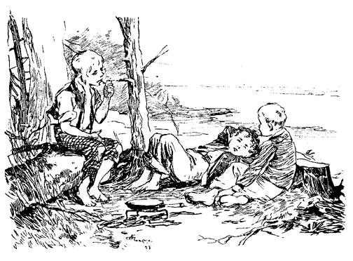Als die letzten Speckschnitten den Weg alles Fleisches gegangen und das letzte Stück Maisbrot aufgezehrt war, streckten sich die Jungen zum Schlaf nieder ins volle Gras. Sie waren fröhlich und wohlgemut. Eine andere, kühlere Lagerstätte wäre leicht zur Hand gewesen, aber sie wollten das romantische Lagerfeuer nicht missen.
»Ist das nicht lustig?« fragte Joe.
»Das geht über Alles!« entgegnete Tom. »Was würden die Kameraden sagen, wenn sie uns sähen?«
»Was? sie würden platzen vor Neid und vor Begierde, mitzuthun! Nicht war Huck?«
»Ich denke so! Auf alle Fälle gefällt die Sache mir ganz ausgezeichnet. Ich wünsche mir gar nichts Besseres!« meinte Huck. »Ich bekam früher nie genug zu essen, und hierher kann niemand kommen, einen immer zu plagen und hin und her zu stoßen!«
»Ein schlechtes Leben habe ich mir längst gewünscht!« rief Tom. »Hier muß man morgens nicht früh aufstehen, man muß sich nicht waschen, nicht zur Schule gehen, und all' den anderen verdammten Schund nicht mitmachen. Du siehst, Joe, daß ein Pirat, so lange er am Land ist, gar nichts thun muß, während ein Einsiedler bedenklich viel zu beten hat, und sich, so allein wie er ist, niemals einen Jux machen kann.«
»Du hast Recht, Tom! Ich hatte mir die Sache nicht recht überlegt. Jetzt, da ich das Seeräuberleben gekostet, ziehe ich es weit vor, Pirat zu sein!«
»Ja, siehst du? Joe, Einsiedler gelten heutzutage nicht mehr viel und haben den früheren Zulauf längst eingebüßt. Dagegen ist ein Pirat für alle Zeiten ein Gegenstand der Ehrfurcht und Bewunderung. Außerdem muß ein Einsiedler auf der härtesten Stelle schlafen, die er nur finden kann; er muß sich in Sacktuch kleiden, Asche auf das Haupt streuen, im Regen stehen, und –«
»Warum muß er sich in Sacktuch kleiden und Asche aufs Haupt streuen?« fragte Huck.
»Ich weiß es nicht, aber er muß! Alle Einsiedler müssen! Und wenn du einer wärest, müßtest du auch!«
»Den Teufel würde ich!« sagte Huck.
»Was würdest du denn machen?«
»Weiß nicht, aber das würde ich nicht thun!«
»Wenn du aber müßtest?«
»Ich würde mich nicht fügen, oder davonlaufen!«
»Davonlaufen! Nun, das läßt sich hören! Du wärest ein Prachtkerl von einem Eremiten. Du würdest den ganzen Stand entehren!«
Der Rothändige gab keine Antwort. Er hatte Besseres zu thun. Mit dem Aushöhlen eines Maiskolbens eben fertig geworden, fügte er ein Röhrchen ein, füllte die so entstandene Pfeife mit Tabak, entzündete sie am Gluthaufen und blies im Vollgefühl schwelgenden Behagens duftende Wolken in die Luft. Die anderen Piraten beneideten ihn um diesen ihnen versagten Genuß und nahmen sich vor, binnen kürzester Frist sich die Tugend des Tabakrauchens anzueignen.
Endlich sagte Huckleberry:
»Aber die Piraten – was haben denn die zu thun?«
»O, bei denen geht es immer lustig zu!« entgegnete Tom. »Sie nehmen Schiffe, verbrennen sie, plündern sie und vergraben die Leute an heimlichen Plätzen auf ihrer Insel, wo Geister umgehen und die Schätze bewachen. Dann töten sie jedes lebende Wesen an Bord oder ersäufen es!«
»Und sie führen die Frauen auf ihre Insel?« fragte Joe. »Sie töten sie nicht?«
»Nein,« sagte Tom, »den Frauen geschieht nichts. Dazu sind die Piraten zu nobel. Und dann sind ja die erbeuteten Frauen immer schön!«
»Und tragen sie nicht immer die prachtvollsten Kleider? Lauter Gold, Silber und Diamanten!« entgegnete Joe mit Enthusiasmus.
»Wer?« fragte Huck.
»Nun, die Piraten!«
Huck blickte beschämt auf seine eigene Ausstaffierung nieder.
»Dann bin ich nur ein trauriger Pirat. Aber ich habe keine anderen Kleider als diese.«
Sie trösteten ihn mit der Aussicht auf reiche Beute, sobald sie nur erst Operationen begonnen haben würden. Für den Anfang seien seine Lumpen gut genug, obgleich glückliche Piraten stets im höchsten Schmucke auf neue Unternehmungen ausliefen.
Nach und nach verstummte das Gespräch und die Lider der armen Verlassenen senkten sich. Die Pfeife entglitt den Fingern des Rothändigen und er versank in den Schlaf des Müden und Gerechten. Dem »Schrecken der Meere« und dem »schwarzen Rächer der spanischen Flotte« wurde es nicht so leicht. Sie sprachen ihr Abendgebet im Herzen, nicht laut, und liegend; es war ja niemand da, der sie zum Knieen und Lautbeten anhielt. Sie hätten es lieber ganz unterlassen, wenn sie der Gedanke nicht gequält hätte, ein Unternehmen, wie das ihrige, würde einen Racheblitz auf sie herabrufen, wenn es nicht durch ein Gebet geheiligt würde. Da kam, zwischen Wachen und Schlafen, ein Unberufener, den sie nicht los werden konnten. Das Gewissen regte sich. Eine leise Furcht, unrecht gethan zu haben, beschlich sie. Es war wohl nicht recht, davon zu laufen; sicher war es eine Sünde, gestohlen zu haben. Diesen quälenden Gedanken konnten sie nicht verscheuchen. Es war unnütz, sich zu sagen, daß sie früher oft genug Süßigkeiten und Aepfel entwendet. Das Gewissen ließ sich durch dieses Argument nicht übertäuben, und sie mußten endlich die ungeschminkte Wahrheit gelten lassen, daß »Aepfelmausen« nur »Naschen«, dagegen Schinken und Speckseiten und andere wertvolle Sachen nehmen »klarer Diebstahl« und ein Mißachten der göttlichen Gebote sei. Sie gelobten, in ihrer ferneren Piratenlaufbahn sich nicht mehr mit dem Verbrechen des Diebstahls zu besudeln.
Dieser Entschluß beschwichtigte die Stimme des Gewissens und die inkonsequenten Piraten fielen in einen ruhigen Schlaf.
Lagerleben. – Eine Ueberraschung. – Tom schleicht sich aus dem Lager.
Beim Erwachen blickte Tom erstaunt um sich. Er rieb sich die Augen und spähte umher. Dann kehrte die Erinnerung zurück.
Es dämmerte grau und kühl. Eine unbeschreiblich wohlthuende friedliche Stille atmete im Gehölz. Kein Blättchen regte sich, das Stillleben der Natur wurde durch keinen Laut gestört. Perlengleiche Tautropfen funkelten an Blättern und Gräsern. Eine weiße Aschendecke lag auf dem Feuer und ein dünnes, blaues Rauchwölkchen kräuselte sich daraus empor.
Joe und Huck schliefen noch. Fernab, im Walde, erscholl der Ruf eines Vogels. Ein anderer antwortete. Die graue Dämmerung wurde lichter, und mit der Helle vermehrten sich die verschiedensten Töne ringsumher. Alles wurde lebendig. In stiller Sammlung betrachtet Tom das Erwachen der allgewaltigen Natur. Eine kleine, grüne Raupe kam über ein betautes Baumblatt dahergekrochen, hin und wieder zwei Drittel ihres Körpers in die Höhe richtend, umherschnüffelnd und den Weg abmessend. Wenn der Wurm sich in der Richtung gegen Tom bewegte, hielt dieser schonend den Atem an sich; wenn er sich abwandte, verfolgte er ihn gespannten Blickes, und als er endlich, nach längerem Winden und Drehen seine Wanderung über Toms ausgestrecktes Bein fortsetzte, war dieser überglücklich. Das hatte zu bedeuten, daß er einen neuen Anzug bekommen werde, zweifellos eine schimmernde Piratenuniform. Nun kam, man wußte nicht woher, eine Prozession wandernder Ameisen, die sich emsig da und dort zu schaffen machten. Eine derselben schleppte eine wohl fünfmal größere Spinne, als sie selbst war, vorbei und bugsierte sie glücklich auf einen Baumstumpf. Ein rotes, schwarzpunktiertes Marienkäferchen kletterte auf die Spitze eines Grashalmes. Tom beugte sich hart zu ihr nieder und sagte:
»Marienkäferchen flieg über Stock und über Stein,
Dein Haus brennt, deine Kleider sind allein!«
Es ließ sich das nicht zweimal sagen, breitete die Flügel aus und flog heimwärts, um zum Rechten zu sehen. – Das überraschte den Jungen gar nicht; er wußte von Alters her, daß das Marienkäferchen leicht durch Feuersgefahr in Schrecken gerät und hatte seine Leichtgläubigkeit oft genug mißbraucht. – Dann wälzte ein Mistkäfer seinen Ball mühsam einher, und Tom berührte ihn, um zu sehen, wie er die Beine an sich zog und sich tot stellte. Inzwischen hatten die Vögel ihr geräuschvolles Treiben begonnen. Der karolinische Fliegenfänger, der Spottvogel des Nordens, ließ sich auf einem Zweige, gerade über Toms Haupt, nieder und begann die jubelnden Töne der befiederten Gefährten in possierlicher Weise nachzutrillern. Ein schriller Häher schoß wie blauer Flammenschein, herab, setzte sich in unmittelbarer Nähe der Jungen und betrachtete sie – den Kopf nach der Seite gedreht, mit größter Aufmerksamkeit; ein graues Eichhörnchen und ein dichtbehaarter Fuchs näherten sich in Absätzen, sich von Zeit zu Zeit aufrichtend und die Jungen anstaunend, ungewiß, ob diese nie gesehenen Wesen zu fürchten seien, oder nicht. Die ganze weite Natur war zu vollem Leben erwacht; schmale, hellglänzende Lichtstreifen durchblitzten nah und fern die belaubten Aeste, und Schmetterlinge gaukelten über die Scene.
Tom weckte die schlafenden Seeräuber. Mit Hallo und Jubelrufen stürzten sie dem Ufer zu. Im Augenblick waren sie ihrer Kleider ledig, und ein tolles, loses Spiel begann in den die Sandbank umfließenden, seichten, spiegelklaren Gewässern. – Sie fühlten keine Sehnsucht nach dem an der Seite des gewaltigen Stromes schlummernden heimischen Dorfe. Zwar hatte in der Nacht ein Windstoß oder eine Strömung ihr Floß entführt. Das bekümmerte sie nicht, im Gegenteil. Die Brücke zwischen ihnen und der Zivilisation war abgebrochen.
Wunderbar gestärkt, fröhlichen Herzens kehrten sie zum Lager zurück. Bald lohte das Feuer wieder hoch empor. Huck fand in nächster Nähe eine silberklare Quelle. Sie machten sich Trinkbecher aus breiten Eichen- und Wallnußblättern und schöpften. Der Geschmack war so befriedigend, so zusagend, daß sie den Kaffee gar nicht vermißten. Joe machte sich ans Werk, Speckschnitten zum Frühstück vorzubereiten. Tom und Huck hießen ihn einen Augenblick warten, gingen ans Ufer und warfen an einer vielversprechenden Stelle ihre Angeln aus. Und mit erwartetem Erfolg. Nach wenigen Minuten waren sie zurück mit ein paar prächtigen Barschen, zwei oder drei Hechten und einem Seewolf, genug für eine ganze Familie. Sie brieten die Fische mit dem Speck, und ihrer Verwunderung war kein Ende. Noch nie hatten sie ein so delikates Fischgericht gekostet. Sie wußten freilich nicht, daß der Süßwasserfisch desto besser schmeckt, je schneller er vom Wasser auf das Feuer gebracht wird. An die Sauce, deren Zuthaten im Unterfreienhimmelschlafen, Bewegung und Hunger bestehen, dachten sie freilich nicht.
Nach eingenommenem Frühstück rauchte Huck seine Pfeife, und die anderen pflogen der Verdauung im Schatten. Als dieses vorüber, wurde eine Entdeckungsexpedition unternommen. Die Jungen streiften fröhlich umher, über faulige Baumstämme, durch verwirrtes Untergebüsch, zwischen üppigen Lianen, unterbrochen durch einladende, schattige, mit Blumen, wie mit Juwelen übersäete Rasenplätze.
Sie fanden tausenderlei liebliche Sachen, aber nichts Erstaunenswertes. Diese Insel war etwa drei Meilen lang und eine Viertelmeile breit, von der nächsten Küste nur durch einen Kanal von 200 Yards Breite getrennt. Sie belustigten sich mit Schwimmen, und als sie zum Lager zurückkehrten, war es etwa 4 Uhr nachmittags. Sie waren zu hungrig, um erst fischen zu gehen, aber auch ohne Fisch schmeckte ihnen der kalte Schinken vortrefflich, und nach beendigtem Mahle legten sie sich in den Schatten und plauderten. – Das Gespräch erlahmte bald. Die feierliche Stille des Waldes, das Gefühl der Verlassenheit verfehlten ihre Wirkung auf die Knaben nicht. Sie versanken in stilles Sinnen. Ein unbestimmtes Sehnen bemeisterte sich ihrer. Dieses Verlangen nahm nach und nach die bestimmte Form des Heimwehs an. Selbst Finn, der Rothändige, träumte von seinen Thürschwellen und leeren Fässern. Aber jeder schämte sich seiner Schwäche, und keiner hatte den Mut, seinen Gedanken Ausdruck zu verleihen.
Schon einigemale hatten die Piraten einen entfernten, verschwommenen Schall zu bemerken geglaubt, wie man manchmal das Ticken einer Uhr hört, ohne sich Rechenschaft davon zu geben. Nun aber wurde der Schall deutlicher; die Knaben fuhren auf, warfen sich verwunderte Blicke zu und horchten gespannt. Tiefe Stille überall. Dann ein verschwommener Knall aus der Ferne.
»Was ist's!« rief Joe mit verhaltenem Atem.
»Ja, was ist's,« flüsterte Tom.
»Donner ist es nicht!« sagte Huck, »denn wenn es donnert ...«
»Schweig! kein Wort! Horcht!« befahl Tom.
Sie schwiegen und horchten. Nach einiger Zeit, die ihnen eine Ewigkeit dünkte, durchdrang derselbe dumpfe Hall die feierliche Stille.
»Auf! Wir müssen wissen, was los ist!«
Sie sprangen auf die Füße und eilten an das der Stadt gegenüberliegende Ufer, zerteilten das Gesträuch und blickten über den Wasserspiegel. Die kleine Dampffähre drifte ungefähr eine halbe Meile unterhalb des Dorfes mit der Strömung. Das breite Deck war mit einer Menschenmasse angefüllt. Ein Geschwader kleiner Boote kreuzte in der Nähe, die Knaben konnten sich aber den Zweck ihres Treibens nicht erklären. Plötzlich fuhr eine weiße Rauchwolke aus der Seite des Dampfbootes, der der früher vernommene, dumpfe Knall folgte.
»Jetzt weiß ich's!« rief Tom. »Es ist jemand ertrunken!« »So ist's!« sagte Huck. »Gerade so war es letzten Sommer, als Bill Turner ertrank. Sie feuerten eine Kanone über das Wasser ab, und er kam richtig auf die Oberfläche. Ja, und bei solchen Anlässen nehmen sie Brotlaibe, füllen sie mit Quecksilber und lassen sie schwimmen, und wo nur irgend jemand ertrunken ist, wird er auftauchen und dem Brotlaib zusteuern!«
»Davon habe ich auch schon gehört!« meinte Joe. »Ich möchte nur wissen, wie das Brot das machen kann!«
»O, das Brot allein wird es wohl nicht thun!« sagte Tom. »Ich denke, es werden wohl die Sprüche, die sie darüber sagen, bevor sie es aussetzten, die Hauptwirkung hervorbringen.«
»Bah, sie sprechen gar nichts Derartiges. Ich habe zugesehen und weiß es!« entgegnete Huck.
»Nein, wie dumm!« sagte Tom. »Sie sprechen den Segen darüber nicht laut, nur ganz leise! Man begreift das!«
Toms Meinung erhielt die ungeteilte Billigung der Knaben. Es war klar, daß ein unwissendes Brot nicht ohne vorläufige Zauberworte eine so wichtige Mission übernehmen konnte.
»Wenn ich nur drüben wäre!« sagte Joe.
»Und ich!« entgegnete Huck, »ich gäbe, weiß nicht was, darum, zu wissen, wer es ist!«
Plötzlich durchzuckte es Tom wie ein Blitz.
»Wollt Ihr wissen, wen sie suchen? Uns! Die Ertrunkenen sind wir!«
Ein Heldengefühl überkam die Jungen. Sie triumphierten. Man vermißte sie. Man trauerte um sie. Um ihretwillen brachen Herzen. Thränen flössen; Erinnerungen an unfreundliche Behandlung der armen, verlorenen Knaben wurden wach, verspätete Reue hatte sich bei ihren Angehörigen eingestellt. Und, was alles überbot, die ganze Stadt sprach von ihnen; sie waren weit und breit zum Gegenstand des Neides ihrer Kameraden geworden! Das war süß und wert, ein Pirat geworden zu sein.
Mit Einbrechen der Dämmerung verschwand das Dampfboot und mit ihm die anderen Fahrzeuge. Die Piraten kehrten zum Lager zurück. Sie jubelten im Hochgefühl ihrer Wichtigkeit, und fühlten sich glücklich im Gedanken, Gegenstand einer so großen Besorgnis geworden zu sein. – Sie fingen Fische, bereiteten ihr Abendbrot, verzehrten es und begannen einen Meinungsaustausch über das, was wohl die Stadt von ihnen sagen und denken werde. Mit Einbruch der Nacht jedoch ermattete das Gespräch. – Sie saßen stumm und starrten ins Feuer, die Gedanken anderswo, die Aufregung war nüchternen Gedanken gewichen; Tom und Joe wurden nach und nach gewahr, daß gewisse, ihnen nahe stehende Personen ihren Jux wohl nicht so belustigend finden dürften, wie sie selbst. Mißbehagen überkam sie. Sie wurden unruhig, fühlten sich unglücklich. Verstohlene Seufzer wurden laut. Joe riskierte einen Fühler, wie seine Kameraden es etwa aufnehmen würden, wenn er zur Zivilisation zurückkehrte – nicht jetzt, bewahre! – aber vielleicht–––
Tom hatte ihn sofort erraten und machte ihn lächerlich. Huck, noch unerschüttert, stimmte bei, und der ins Schwanken Geratene beeilte sich, durch alle möglichen Beteuerungen den Verdacht der Zaghaftigkeit von sich abzuwälzen. – Der aufkeimenden Meuterei war für diesmal vorgebeugt. Mit völliger Nacht begann Huck zu nicken und dann zu schnarchen. Joe folgte seinem Beispiele. Tom hatte die beiden, auf die Ellbogen gestützt, still und scharf beobachtet. Geräuschlos erhob er sich auf die Kniee und kroch suchend durch das vom Lagerfeuer spärlich beleuchtete Gras. Unter den herumliegenden, halbzylinderförmigen, weißen Platanenrinden wählte er zwei aus, die ihm für seinen Zweck passend schienen. Dann ließ er sich am Feuer auf die Kniee nieder und schrieb mit seinem Rötel mühsam etwas darauf. Das eine Exemplar rollte er zusammen und versorgte es in seiner Tasche, das andere steckte er in Joes Hut und legte diesen etwas abseits von seinem Besitzer. Diesem Schriftstück fügte er noch einige Schuljungenkleinode von fast unschätzbarem Werte bei – unter anderem ein Stück Kreide, einen Gummiball, drei Fischangel und einen der als echt bekannten Kristallmarmel. Dann schlich er auf den Zehen leise durch die Bäume, bis er sich außer Hörweite wußte, und eilte in raschem Laufe der Sandbank zu.
Tom rekognosziert. – Begreift die Lage. – Rapportiert im Lager.
Einige Minuten später durchwatete Tom die seichten Gewässer der Sandbank in der Richtung der Küste des Staates Illinois. Schon hatte er die Hälfte des Weges zurückgelegt, und noch reichte ihm das Wasser nicht über den Gürtel; von da an aber mußte er sich zum Schwimmen entschließen. Er schnitt den Strom quer aufwärts, wurde aber von der Strömung weiter und schneller abwärts geführt, als er geglaubt hatte. Endlich fand er das Ufer und stieg an geeigneter Stelle ans Land. Er fühlte nach seiner Platanenrinde und fand sie an der richtigen Stelle. Dann eilte er, der Küste entlang, in rasendem Lauf und triefenden Kleidern durch das Gehölz. Kurz vor 10 Uhr betrat er einen offenen Platz, dem Dorfe gegenüber, und erblickte die Dampffähre im Schatten der Bäume und des hohen Ufers ruhig vor Anker liegend. Die blinkenden Sterne beschienen stilles, friedliches Gelände. Mit äußerster Vorsicht kroch er am Ufer hinab, ließ sich ins Wasser, griff einigemal schwimmend aus und kletterte in die am Stern des Dampfbootes sich schaukelnde Jolle. Atemlos kroch er unter die Querlatten und wartete.
Nicht lange, so ertönte die gesprungene Schiffsglocke und eine tiefe Stimme gab den Befehl zum Abstoßen. Einige Minuten später erhob sich der Schnabel der Jolle unter dem Wellenschlag, die Ueberfahrt hatte begonnen. Tom wußte, daß das Boot für heute seine letzte Fahrt machte und war seelenvergnügt. Nach langen 12 bis 15 Minuten blieben die Räder stehen, Tom sprang über Bord und landete etwa 50 Yards stromabwärts, außer dem Bereich irgend eines Unberufenen. Hastig durcheilte er wenig belebte abgelegene Gäßchen und stand bald am hintern Zaun seiner Tante. Er überstieg ihn und sah durchs Fenster ins Wohnzimmer, in dem noch Licht brannte. Da saßen Tante Polly, Sid, Mary und Joe Harpers Mutter in einer Gruppe und plauderten. Der Raum zwischen ihnen und der Thür war durch das Bett geteilt.
Tom schlich zur Thüre und drückte leise auf die Klinke. Dann stemmte er sich sanft dagegen und eine Spalte öffnete sich. Er erweiterte sie, steckte den Kopf hindurch und versuchte, vorsichtig auf den Knieen in das Zimmer zu kriechen.
»Warum fackelt das Licht so?« sagte Tante Polly. Tom erhob sich hastig. »Wie, die Thüre ist ja offen, wie mir scheint! Man kommt ja gar nicht mehr aus dem Verwundern heraus! Schließe sie, Sid!«
Tom war noch zeitig genug unter das Bett gekrochen. Eine Weile verhielt er sich ruhig mit verhaltenem Atem, und näherte sich dann vorsichtig dem Sitze seiner Tante, so daß er fast ihren Fuß berühren konnte.
»Also, was ich sagen wollte,« sagte Tante Polly, »sozusagen bösartig war er nicht. Nur meisterlos. Ein mutwilliger Springinsfeld, Ihr wißt ja. Aber so gutmütig, wie ein junges Füllen. Er hatte nie Böses im Sinn und war der gutherzigste Knabe der Welt!« Vor Weinen konnte sie nicht weiter sprechen.
»Gerade so war mein Joe – immer aller Teufeleien voll und zu jedem Lumpenstreich bereit – aber so uneigennützig und so brav, als nur immer möglich; und wenn ich daran denke, daß ich ihn geschlagen für ein wenig Rahm, den er gar nicht einmal genascht, den ich vorher selbst weggeschüttet hatte, weil er sauer war – und daran denke, daß ich diesen lieben, braven, unschuldigen, mißhandelten Jungen den Tag meines Lebens nimmer sehen soll, niemals mehr –« Und Mrs. Harper begann zu flennen, daß sie der Bock stieß.
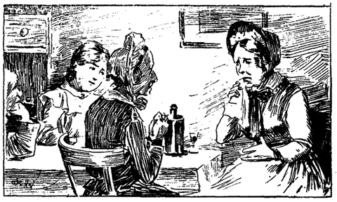»Ich denke, Tom ist da, wo er jetzt ist, gut aufgehoben! Wenn er aber in gewisser Beziehung frommer gewesen wäre –«
»Halt, Sid!« Tom fühlte den Blitz aus dem Auge seiner Tante, obgleich er ihn nicht sehen konnte. »Nicht ein Wort gegen meinen Tom! Ich habe ihn verloren, Gott wird sich seiner erbarmen! Du aber kümmere dich um andere Dinge! O, Frau Harper, ich kann mich gar nicht darein finden. Wie soll ich seinen Verlust verschmerzen? Er war meiner Augen Trost, obgleich er mein altes Herz schier gebrochen!«
»Der Herr hat's gegeben, der Herr hat's genommen, der Name des Herrn sei gelobet! Aber es ist so hart! O, so hart! Erst noch am letzten Sonnabend ließ mein Joe einen Frosch hart an meiner Nase los und ich schlug ihn dafür zu Boden. O, wie wenig ahnte ich, daß er so bald ... O, wenn ich es noch einmal thun könnte, ich würde ihn dafür segnen und mit Küssen bedecken!«
»Ja, ja, ich begreife Ihre Gefühle, Mrs. Harper, ich begreife sie ganz gut! Nicht länger als gestern packte Tom die Katze und füllte sie mit »Schmerztöter«, so daß ich fürchtete, sie würde in ihrer Raserei das Haus umreißen! Und, verzeih' mir's Gott! ich schlug ihn dafür mit dem Fingerhut auf den Kopf, den armen, den armen toten Jungen! Er hat nun ausgelitten! Die letzten Worte, die ich noch von ihm hören durfte, klagten mich der Grausamkeit an, mit der ich ihn mit dem »Schmerztöter« – –
Diese Erinnerung erschütterte die Dame so, daß sie vor Schluchzen nicht weiter reden konnte. Tom schluchzte heimlich mit und fühlte so viel Mitleid mit sich selbst, als nur irgend jemand von den anderen. Er Hörte, wie Mary weinte und hie und da ein Wort der Liebe für ihn laut werden ließ. – Sein Selbstgefühl schwoll rasch und bedeutend an. Und doch rührten ihn die Thränen seiner Tante so, daß er all' seine . Kräfte sammeln mußte, um dem Drange, unter dem Bett hervorzurutschen, in ihre Arme zu stürzen, sie mit Jubel zu begrüßen, widerstehen zu können. Seine ganze Naturanlage trieb ihn zu diesem Theatereffekt. Er aber widerstand und verhielt sich ruhig. Im Verlaufe des Gesprächs, das nach und nach wieder lebhafter geworden war, lernte Tom, daß man sie anfangs beim Baden ertrunken geglaubt hatte. Dann erfuhr man, daß das Floß abhanden gekommen war. Inzwischen erinnerten sich auch einige Schuljungen der Aeußerung, man würde bald von den Vermißten sprechen. – Die Weisen des Dorfes reihten diese Indizien aneinander und gelangten zum Schluß, daß die Knaben auf dem Floß zur nächsten Stadt geschwommen seien und von dort bald von sich hören lassen würden; als aber gegen Abend das Floß etwa fünf Meilen unterhalb der Stadt am Missouriufer, wo es sich festgerannt hatte, aufgefunden wurde, da verschwand jede Hoffnung. – Sie waren ertrunken, das stand fest, sonst würde sie der Hunger noch vor Einbruch der Nacht nach Hause getrieben haben. Das Suchen nach ihnen in der Nähe der beiden Flußufer hatte zu keinem Resultate geführt, weil die als gute Schwimmer bekannten Knaben sicher das Ufer erreicht hätten, wenn sie nicht in der Mitte des Stromes verunglückt wären. Heute war es Mittwoch Abend. Wenn bis Sonntag früh die Körper der Ertrunkenen nicht aufgefischt waren, wurde an diesem Tage die Leichenfeier abgehalten. – Tom schauderte. –
Mrs. Harper sagte unter Schluchzen gute Nacht und schickte sich an, heimzugehen. Die beiden Damen umarmten sich und mischten ihre Thränen. Vor dem Schlafengehen war die Tante zärtlicher gegen Sid und Mary; Sid versuchte, sich einige Thränen auszupressen, und Mary weinte aus ganzer Seele. Tante Polly kniete nieder und ergoß sich in einem so rührenden, so hilfeflehenden Gebet, mit solch liebeatmenden Ausdrücken ihrer alten, zitternden Stimme, daß Tom in Thränen schwamm, noch bevor sie nur halb zu Ende war.
Er mußte noch lange ruhig liegen. Noch lange wand sich die gute Tante unruhig im Bette unter abgerissenen Klagen und Stoßseufzern. Endlich lag sie ruhig; nur wenig verworrene, stille Klagelaute hie und da. – Tom stahl sich unter dem Bette hervor und richtete sich auf. Mit der einen Hand die Lampe beschattend, stand er da, im Anschaun der Tante verloren, tiefes Mitleid im Herzen. Er zog seine Rindenrolle hervor und legte sie neben die Lampe. Da kam ihm ein Gedanke; er stand zögernd. Dann steckte er die Rolle wohlgemut wieder ein, beugte sich über die Tante, küßte ihre welken Lippen, schlich sich weg und schloß die Thüre hinter sich.
Er eilte nach dem Landungsplatz, niemand war in der Nähe. Er wußte, daß der an Bord allein anwesende Wächter regelmäßig zu dieser Stunde schlief und so betrat er dasselbe furchtlos, machte die Jolle los und ruderte vorsichtig stromaufwärts. Eine Meile oberhalb des Dorfes ruderte er gegen das Gestade und legte sich kräftig in die Ruder. Bald erreichte er das Land auf der andern Seite. Erst versucht, das kleine Fahrzeug nach Piratenart als gute Prise zu betrachten und sich anzueignen, überlegte er, daß nach demselben geforscht, und für ihn unliebsame Entdeckung gemacht werden könnte, ließ es treiben, betrat das Ufer und vertiefte sich ins Gehölz. Hier setzte er sich und ruhte lange, zwischen Schlafen und Wachen. Unerquickt und verdrossen nahm er den Heimweg unter die Füße. Längst war die Nacht vorüber; bevor er die Sandbank erreicht. Es war heller Tag geworden. Er wartete, bis die Sonne höher stand und mit ihren Strahlen den mächtigen Strom vergoldete. Dann tauchte er in die Flut. Nach kurzer Zeit stand er triefend am Eingang des Lagers und hörte Joe sagen: »Nein, Huck, Tom ist treu wie Gold; er kommt wieder ! Er desertiert nicht! Er weiß, daß das einen Piraten entehren würde, und dazu ist Tom viel zu stolz. Er ist auf etwas aus! Ich möchte nur wissen, auf was?«
»Auf alle Fälle gehören die Sachen hier uns! Meinst du nicht?«
»Fast so, aber noch nicht ganz, Huck! Das Schreiben sagt, nur für den Fall, daß er nicht zum Frühstück hier ist.«
»Und hier ist er!« rief Tom mit dramatischem Effekt und stolzierte ins Lager.
Ein splendides Mahl von Speck und Fischen wurde bereitet; die Jungen griffen weidlich zu und Tom erzählte unter Einflechtung mannigfacher Verzierungen seine jüngsten Erlebnisse. Nach beendigtem Rapport fühlten sich alle Helden.
Die Vergnügungen eines Tages. – Tom enthüllt ein Geheimnis. – Die Piraten nehmen eine Lektion. Eine nächtliche Ueberraschung. – Ein Indianerkrieg.
Nach dem Frühstück machte sich die ganze Bande auf, zur Jagd auf Schildkröteneier. Sie schwärmten umher, hier und dort Stöcke in den Sand bohrend. Wenn sie eine weiche Stelle fanden, ließen sie sich auf die Kniee nieder und wühlten mit den Händen. Manchmal fanden sie 50 bis 60 Eier in einem Loch. Es waren ganz runde, weiße Dinger in der Größe einer englischen Wallnuß. Am Abend ein ausgezeichnetes Eiergericht und ditto am Freitag-Morgen war der Lohn ihrer Mühe.
Nach dem Frühstück ging's auf die Sandbank, wo sie sich unter jauchzendem Jubel herumtummelten, hier ein Kleidungsstück, dort ein anderes von sich werfend, bis nichts mehr sie hinderte, ihre Spiele in dem seichten Gewässer bis an die starke Strömung fortzusetzen, die ihnen den Sand unter den Füßen wegriß und zu manchen ergötzlichen Purzelbäumen Veranlassung wurde. Dann, in einer Gruppe vereinigt, spritzten sie sich mit gehöhlter Handfläche Wasser ins Gesicht, flohen, verfolgten sich, bis der Stärkere den Schwächeren nach Herzenslust untergetaucht hatte. Dann verschwanden alle unter der wallenden, sprudelnden Gischt, ein Durcheinander von weißen Armen und Beinen regte sich zappelnd aus der Tiefe, und die Piraten kamen unter Schnauben, Prusten und Lachen und nach Luft schnappend wieder ans Tageslicht. Ermüdet streckten sie sich aus auf dem heißen Sand, bedeckten sich damit, um nach kurzer Rast das tolle Spiel von neuem zu beginnen. – Endlich fiel es ihnen ein, daß sich ihre nackte Haut ganz wie Trikot ausnehme; sofort wurde ein Zirkus im Sande improvisiert, und die Vorstellung begann mit drei Clowns als Personal, denn keiner wollte diese Glanzrolle dem anderen überlassen. Dann wurden mit den Marmeln alle bekannten Spiele gemacht, bis es langweilig wurde. Nachher vergnügten sich Joe und Huck aufs neue mit Schwimmen. Tom machte diesmal nicht mit. Er hatte die Schnur von Klapperschlangenringen, die er beim Schwimmen immer um das Fußgelenk trug, abgestreift, und wunderte sich, ohne den Schutz dieses geheimnisvollen Talismans nicht längst vom Krampf gepackt worden zu sein. Er durfte sich nicht ohne ihn ins Wasser wagen, und als er ihn nach langem Suchen gefunden, waren seine Kameraden müde und sehnten sich nach Ruhe. Unvermerkt gingen sie auseinander und verfielen in schwermütige, verdrießliche Träumereien, den Blick verlangend über die weite Flut auf das im Sonnenschein ruhig daliegende Dorf gerichtet. Tom überraschte sich selbst, »Becky« mit der großen Zehe in den Sand schreibend, schämte sich seiner Schwachheit und löschte das Geschriebene aus. Dennoch mußte er den Namen wieder und immer wieder schreiben, er konnte nicht anders. Um der Versuchung ein Ende zu machen, raffte er sich auf und rief seine Kameraden zusammen. Joes Mut war aber schon so gesunken, daß kein Belebungsmittel mehr fruchtete. Er litt an unerträglichem Heimweh und konnte nur mit Mühe die andrängenden Thränen zurückhalten. Auch Huck war niedergeschlagen. – Tom selbst fühlte sich unbehaglich, machte aber gute Miene zum bösen Spiel. Er barg ein Geheimnis, welches er vorerst noch für sich behalten wollte; wenn aber die kaum erstickte Meuterei wieder aufleben sollte, so würde zu dem letzten Mittel gegriffen werden.
Der Moment war gekommen.
»So, Jungen, ich weiß, daß vor uns schon Piraten auf dieser Insel waren. Sie haben hier ihre Schätze vergraben. Das ist so sicher, als zwei mal zwei fünf sind. – Wie würde es euch gefallen, wenn ihr eines schönen Morgens auf eine verfaulte, mit Silber- und Goldbarren gefüllte Kiste stießet? He!«
Dieser Versuch scheiterte. Keine Teilnahme wurde laut. Tom versuchte einige andere lockende Aussichten vorzuspiegeln, – Nichts verfing! Es war zum Tollwerden. Joe saß teilnahmslos, finsteren Blickes und bohrte seinen Stecken in den Sand. Endlich sagte er:
»O, Kameraden, laßt uns einkehren! Wir sind hier so mutterseelenallein!«
»O, bitte, Joe! Nur das nicht! Du wirst dich gleich wieder besser fühlen. Denke nur an die ausgezeichneten Fische, die wir hier haben!«
»Ich huste auf die Fische! Ich will heim!«
»Und diese ausgezeichneten Schwimmplätze! Wo willst du sie sonst finden?«
»Ach was, Schwimmen! Ich habe keine Freude daran, wenn es nicht verboten ist. Ich will heim!«
»Hol dich der Teufel, du Wickelkind, du mußt wohl saugen?«
»Ich will meine Mutter sehen, und wenn du eine hättest, du auch! Ich bin ebensowenig ein Wickelkind als du!« Und Joe schluchzte.
»Gut, lassen wir das Schreikindchen zu seiner Mutter gehen. Nicht so, Huck? Das arme Ding sehnt sich nach der Mutter! Dir aber und mir gefällt es hier, nicht wahr? Wir bleiben hier!«
»Hm! Ja – a – a!« machte Huck ausdruckslos.
»Ich werde euch, so lang ich lebe, kein Wort mehr gönnen!« sagte Joe und erhob sich. Langsam kleidete er sich an. –
»Was liegt uns daran? Niemand hier bedarf deiner!« rief Tom. »Gehe heim und laß dich auslachen! Du bist ein schöner Seeräuber! Wir beide, Huck und ich, sind keine Wickelkinder. Wir bleiben! Gelt Huck! Wir entbehren ihn leicht!«
Joe ließ sich nicht abwendig machen und kleidete sich verdrossen an.
Tom wurde unruhig. Hucks Schweigen und die zweifelhaften Blicke auf Joe beängstigten ihn. Ohne ein Wort des Abschieds watete Joe gegen das Illinois Ufer. Tom warf einen forschenden Blick auf Huck. Dieser konnte ihn nicht aushalten und schlug die Augen nieder.
»Ich will auch fort, Tom!« sagte er zögernd. »Es ist nach und nach langweilig hier geworden, und nun, da Joe weg ist, wird es noch schlimmer werden. Gehen wir auch, Tom!«
»Ich nicht! Ihr könnt alle gehen, wenn ihr wollt! Ich bleibe hier!«
»Tom, ich möchte auch fort!«
»So gehe! Wer hindert dich?«
Huck raffte seine zerstreut umherliegenden Kleidungsstücke zusammen.
»Tom komme mit! Besinne dich! Wir werden dort am Ufer auf dich warten!«
»Dann könnt ihr verdammt lange warten! Das ist alles!«
Huck machte sich bekümmert auf den Weg, und Tom sah ihm nach. Ein heftiger Trieb, den beiden zu folgen, bemeisterte sich seiner. Er hoffte noch immer, die Jungen würden zurückkehren. Aber sie wateten unentwegt dem Ufer zu. Tom begann zu fühlen, daß es ohne Gefährten öde und still hier sein würde. Seinen Stolz gewaltsam unterdrückend rannte er ihnen nach und rief: »Halt! Wartet ein wenig! Ich habe euch etwas zu sagen!«
Sie hielten an und wandten sich um. Als er sie erreicht hatte, begann er, ihnen sein Geheimnis zu enthüllen. Sie hörten ruhig zu. Bald hatte er sie mit seiner Absicht bekannt gemacht, die von ihnen mit Jubelruf begrüßt wurde. Das war prachtvoll! Hätte er es ihnen vorher gesagt, nie würden sie weggelaufen sein. Er suchte sich zu entschuldigen, sagte ihnen aber nicht, daß er zu dem letzten Mittel, sie bei sich zurückzuhalten, gegriffen habe. Die Bande machte fröhlich Kehrt! und nahm ihre unterbrochenen Spiele fröhlich wieder auf. Toms genialer Plan wurde in den Himmel erhoben und vielfach besprochen und erörtert. Nach eingenommenem, leckeren Mahle von Fischen und Schildkröteneiern gelüstete es Tom, Rauchen zu lernen. Auch Joe wollte es; Huck verfertigte Pfeifen und stopfte sie. Die Neulinge hatten früher nur Zigarren aus Rebblättern geraucht und sich dabei die Zunge verbrannt. Nun aber machten sie sich, auf die Ellenbogen gestützt, vorsichtig ans Werk:
»Das geht ja ganz leicht!« meinte Tom. »Wenn ich das gewußt hätte, hätte ich längst angefangen!«
»Ich auch!« sagte Joe. »Das ist gar nichts. Es geht ja wie geschmiert!«
»Wie oft habe ich die Raucher um ihre Kunst beneidet und gewünscht, es ihnen gleichthun zu können! Aber ich hielt es für viel zu schwierig.«
»Gerade so ging es mir, nicht wahr, Huck? habe ich dir das nicht oft genug gesagt. Huck? Du kannst es bezeugen, Huck!«
»Gewiß, hundertmal!« sagte Huck.
»O, ich auch!« beteuerte Tom.
»Tausendmal! Einmal unten beim Schlachthause! Erinnerst du dich nicht, Huck? Bob Tanner war dabei und Jeff Thatcher! Du mußt dich erinnern, Huck, daß ich es sagte!«
»Es ist richtig!« bestätigte Huck.
»Es war den Tag, bevor ich den weißen Marmel verlor.«
»Nein, es war den Tag nachher!«
»So! Habe ich's nicht gesagt?«
»Ich glaube, ich könnte den ganzen geschlagenen Tag rauchen!« meinte Joe. »Es macht mir gar nichts!«
»Mir auch nicht!« sagte Tom. »Ich könnte tagelang fortfahren! Ich wette aber, daß Jeff Thatcher es nicht kann!«
»Was? Jeff Thatcher? Der würde nach zwei Zügen umfallen! Der sollte es nur probieren!«
»Und Johany Miller! Ich möchte es ihn einmal versuchen sehen!«
»Und ich erst!« sagte Joe. »Das wäre ihm ja rein unmöglich. Schon der bloße Dampf der Pfeife würde ihn ohnmächtig machen!«
»Gewiß, Joe! Sag' mal, wenn uns die Jungen jetzt sähen?«
»O, das wäre herrlich!«
»Hört einmal, Jungen, sagt nichts davon! Wenn wir dann zufällig wieder mit ihnen zusammentreffen, werde ich so ungefähr zu dir sagen: ›Joe, hast du eine Pfeife? Ich möchte rauchen!‹ Und dann antwortest du ganz unbefangen, als ob es sich um etwas ganz Gewöhnliches handle: ›Ja, da ist meine alte Pfeife und noch eine, aber mein Tabak ist nicht am Besten!‹ Hierauf sage ich: ›O, das macht nichts, wenn er nur stark genug ist!‹ Dann du heraus mit den Pfeifen, und wir so ruhig ans Werk, als wären wir längst gewöhnte Raucher! Was die für Augen machen werden!«
»O, das wird lustig werden! Ich wollte, es wäre schon jetzt!«
»Ja, und wenn wir ihnen erst sagen, daß wir es auf unseren Piratenzügen gelernt! Würden sie nicht wünschen, mit dabei gewesen zu sein?«
»Ganz gewiß! Ich wette darauf!«
Und so schwätzten und qualmten sie lustig weiter, bis nach und nach das Feuer der Unterhaltung erlosch, bedenkliche Pausen im Gespräch eintraten und immer häufiger und länger wurden. Dagegen öffneten sich die Schleußen des Mundes, um der sich wunderbar mehrenden Speichelabsonderung Ausfluß zu gestatten. Ihre Mundhöhlen waren überschwemmten Kellern zu vergleichen, und aller Vorsicht zum Trotz fand mancher Mund voll seinen Weg ab- statt auswärts, heftiges Aufstoßen trat ein. Die beiden Novizen waren leichenblaß geworden und sahen ganz erbärmlich aus. Joes und auch Toms Pfeife entfielen den kraftlosen Fingern. Die Spritzen arbeiteten wütend. Joe ächzte leise: »Ich habe mein Messer verloren. Ich muß es suchen!«
Tom murmelte mit zitternden Lippen: »Ich will dir helfen! Gehe du dorthin, ich werde bei der Quelle suchen! Bleibe nur da, Huck, wir werden es schon finden!«
Sie gingen und suchten das Messer. – Auf welche Art und Weise kann man sich wohl denken.
Huck wartete über eine Stunde. Die Langeweile überfiel ihn; er stand auf, seine Kameraden zu suchen. Er fand sie weit voneinander, tief im Gehölze, fest eingeschlafen und sehr blaß. Gewisse Merkmale überzeugten ihn aber, daß, wenn sie vorher irgend etwas Belästigendes verspürt, sie sich inzwischen davon befreit hatten. Abends beim Nachtessen waren sie nicht sehr redeselig und sahen sehr niedergeschlagen aus. Als Huck seine Pfeife angesteckt hatte und sich anschickte, die ihrigen zu stopfen, meinten sie, »nein«, sie seien nicht ganz wohl und müßten sich beim Mittagessen den Magen verdorben haben.
Um Mitternacht erwachte Joe und weckte die andern. Erdrückende Schwüle brütete; etwas Unheimliches lag in der Luft. Sie kauerten, nahe aneinandergedrückt, trotz der siedenden Hitze am Feuer nieder und saßen in banger Erwartung. Ein feierliches Beben durchzitterte die Natur. Ueber den Lichtkreis ihres Feuers hinaus war alles in tiefe Finsternis gehüllt. Flüchtiges Wetterleuchten durchzuckte hin und wieder die belaubten Aeste und machte ihre Konturen auf Augenblicke sichtbar. Ein leises Aechzen flog durch den Wald; die Jungen fühlten einen warmen Windhauch auf ihren Wangen und schraken zusammen, wie wenn Geisterflügel sie berührt hätten. Eine längere Pause folgte. Plötzlich verwandelte ein langgezackter Blitzstrahl die tiefe Nacht in hellen Tag, jeden Grashalm zu ihren Füßen und ihre blassen Gesichter beleuchtend. Ein gewaltiger Donnerschlag rollte durch die Wolken und verlor sich mit dumpfem Grollen in der Ferne. Unter der Wucht eines eisigen Windstoßes wirbelten die dürren Blätter vom Boden auf durch die Luft und raschelten massenhaft ins Lagerfeuer. Ein zweiter, immenser Blitz, – ein Krachen, das die Bäume zu entwipfeln schien – und dicke, schwere Regentropfen rauschten durch die Blätter.
»Rasch, Jungen! Zum Zelt!« rief Tom, und sie stürmten über Schlinggewächse, durch dick und dünn aufs Geratewohl in die schwarze Nacht. Blitz auf Blitz, Schlag auf Schlag, Krach auf Krach folgten sich mit betäubender Wut; der ganze Himmel hatte die Schleußen geöffnet, und ein Regen ergoß sich, der bald in Strömen den Wald durchflutete. Die Jungen ermunterten sich von Zeit zu Zeit durch Zuruf; ihre Stimme verhallte jedoch ungehört im Aufruhr der Elemente. Es dauerte lange, bis sie sich todmüde, von Wasser triefend und zitternd vor Kälte unter dem Schutz des Zeltes vereinigt sahen. Doch fanden sie einigen Trost im Gedanken, nicht vereinzelt umzukommen und wieder beieinander zu sein. Reden konnten sie nicht; das Getöse des Sturmes und des gepeitschten Segels verhinderten sie, auch nur ein Wort zu verstehen. Der Orkan wütete je länger je heftiger, das Segel riß sich los und flog mit der Windsbraut davon. Sich bei den Händen fassend, flohen oder stolperten sie bis zu einer hart am Ufer stehenden, gewaltigen Eiche. Die Raserei des Sturmes hatte ihre vollste Höhe erreicht. Von unzähligen Blitzen durchzuckt, schien der ganze Himmel ein Feuermeer und beleuchtete die Gegend taghell. Die schwankenden Bäume, der sturmgepeitschte Fluß mit wirbelnden, breiten Schaumhügeln, die Umrisse der Berge auf dem andern Ufer wurden durch die zerrissenen Wolken und die Regenströme sichtbar. Ja und dann unterlag einer der mächtigen Baumriesen der Gewalt des Sturmes und fiel krachend, das Unterholz zertrümmernd, zur Erde. Die Donnerschläge rasselten hageldicht mit ohrzerreißendem, hirnverwirrendem Krachen. Das Getöse war furchtbar. Mit einem Stoß, der die Insel in Stücke zu zerreißen, den Wald in Feuer aufgehen zu lassen, alles in wüstes Chaos zu verwandeln schien, hatte der Sturm seinen Gipfelpunkt erreicht. Es war eine wilde Nacht für junge, obdachlose Knaben.
Mit dem Gipfelpunkte hatte der Sturm auch seinen Wendepunkt erreicht. Die Blitze wurden seltener. Das Getöse des Donners nahm ab und Ruhe herrschte wieder. Die Jungen kehrten zum Lager zurück. Obwohl halb tot von der ausgestandenen Angst, regte sich in ihnen doch ein warmes Dankgefühl; die Platane, unter der sie ihren Lagerplatz aufgeschlagen hatten, lag da, vom Blitz zertrümmert. Wie, wenn sie im Lager gewesen wären? – Sie fanden alles durchnäßt, selbst das Lagerfeuer war verlöscht. In ihrer Gedankenlosigkeit war es ihnen nicht entfernt eingefallen, Vorkehrungen gegen ein solches Naturereignis zu treffen. Das war ein harter Schlag für sie; sie waren bis auf die Knochen durchnäßt, zitterten vor Frost und ließen ihren Wehklagen freien Lauf. Da entdeckten sie an dem Baumstumpf, inmitten der Feuerstätte, einen, durch einen hervorragenden Ast, bis zu dem sich das Feuer durchgefressen hatte, gegen den Regen geschützten, glimmenden und rauchenden Fleck, den sie mit Jubel begrüßten. Emsig suchten sie zusammen, was sie unter Baumstämmen oder sonstigen geschützten Stellen an trockenem Brennmaterial finden konnten, und fachten mit unendlicher Mühe ihr Feuer wieder an. Aus abgestorbenen Aesten und Gesträuchen schichteten sie einen mächtigen Holzstoß auf, setzten ihn in Flammen, und bald strömte derselbe wohlthuende Wärme ringsum aus. Aller Kummer war vergessen. Sie trockneten ihren Schinken und ließen es sich schmecken. So saßen sie bis zum Morgen, denn weit und breit wäre kein trockenes Plätzchen aufzufinden gewesen und vertrieben sich die Zeit mit Aufzählung und Vergrößerung der nächtlichen Ereignisse.
Nach Sonnenaufgang gingen sie zur Sandbank und legten sich zur Ruhe nieder, wurden aber bald vom Sonnenbrand aufgeweckt und vertrieben. Verdrossen trafen sie Anstalten zum Frühstück. Dieses vorüber, fühlten sie sich abgeschlagen, steif und das Heimweh stellte sich wieder ein. Tom sah Symptome und suchte die Kameraden zu ermuntern. Vergebliche Mühe. Marmel, Circus, Schwimmen – nichts wollte verfangen. Er erinnerte sie an das große Geheimnis und hatte einen teilweisen Erfolg. Um sie bei guter Laune zu erhalten, machte er ihnen einen neuen Vorschlag. Sie wollten zur Abwechselung aufhören Piraten zu sein und Indianer werden. Das wirkte. Im Nu waren sie alle bis auf die Haut entkleidet und zebraähnlich mit schwarzem Kot bestrichen. So betraten sie den Kriegspfad, um eine englische Niederlassung zu überfallen und zu zerstören. Natürlich waren sie alle Häuptlinge. Etwas später trennten sie sich in drei feindliche Stämme, überfielen sich mit schrecklichem Kriegsgeheul aus dem Hinterhalt und skalpierten sich bei Tausenden. Es war ein blutiger, aber glorreicher Tag.
Gegen Abend kehrten sie hungrig und fröhlich zum Nachtimbiß ins Lager zurück. Da entstand eine schwer zu lösende Streitfrage. Feindliche Indianerhäuptlinge konnten nicht wohl friedlich am Mahle teilnehmen und das Brot der Gastfreundschaft brechen, ohne vorher Frieden geschlossen zu haben, und das war unmöglich, wenn nicht vorläufig die Friedenspfeife geraucht wurde. So war es Sitte, und sie hatten nie etwas anderes gehört. Zwei der Häuptlinge verwünschten den Entschluß, Indianer geworden zu sein und dem Piratenberuf treulos Valet gesagt zu haben. Da war aber kein Ausweg, die beiden machten gute Miene zum bösen Spiel und die Pfeife ging in die Runde.
Und siehe da, sie freuten sich, unter die Wilden gegangen zu sein. Sie fanden, daß sie einen schätzbaren Fortschritt gemacht hatten. Sie fanden, daß sie nun ein bißchen rauchen konnten, ohne nach einem verlorenen Messer suchen zu müssen. Das war ergötzlich! Sie versprachen sich, dieser Errungenschaft ja nicht wieder verlustig zu gehen und die edle Kunst nach Kräften zu kultivieren. Kraft dieses Entschlusses rauchten sie auch vorsichtig nach beendigtem Mahle und verbrachten einen heiteren Abend. Sie fühlten sich stolzer über den unerwartet günstigen Erfolg, als wenn sie die sechs Nationen skalpiert und geschunden hätten. Lassen wir sie rauchen, schwatzen und prahlen; das Kapitel ist zu Ende.
Erinnerungen an die verlorenen Helden. – Der Knoten in Toms Geheimnis.
Derselbe Samstag Nachmittag verfloß nicht so fröhlich in der kleinen Stadt. Die Familie Harper und Tante Pollys machten unter vielen Thränengüssen kummervoll ihre Trauerkleider zurecht. Ungewöhnliche Stille machte sich überall fühlbar, obwohl es auch sonst dort nicht sehr lebhaft zuging. Die Einwohnerschaft lag ihren Tagesgeschäften zerstreut ob, sprach wenig, seufzte aber häufig. Die Samstagsferien schienen den Kindern eine Last. Sie versuchten ihre gewöhnlichen Spiele, aber es wollte kein Leben hineinkommen und wurden aufgesteckt.
Spät nachmittags irrte Becky um den verödeten Schulhausplatz, melancholisch und unter Thränen. Da war kein Trost! »O, wenn ich nur den messingenen Feuerbockknopf wieder hätte!« seufzte sie. »Aber nichts, auch gar kein Andenken an ihn!«
Sie stand still und sagte zu sich selbst:
»Da war es, auf dieser Stelle! O, wenn ich es noch einmal sagen sollte, ich würde es nicht thun, um alle Schätze der Welt! Nun ist er dahin, und ich werde ihn nie, nie Wiedersehen! Niemals mehr!«
Dieser Gedanke überwältigte sie. Sie wandelte heimwärts und zahllose Thränen rollten über ihre Wangen. Dann kam eine Gruppe Knaben und Mädchen, Toms und Joes frühere Spielgefährten. Sie umstanden den Zaun und erzählten sich mit leiser Stimme, wie Tom bei ihrem letzten Zusammensein dies oder jenes gesagt, Joe dies oder jenes gethan und wie schon damals etwas Prophetisches sich in ihren Reden, ihrem Thun und Treiben bemerkbar gemacht habe.
»Dort stand er und ich hier; er lächelte auf diese Weise, und ein mir damals unerklärliches Etwas kam über mich. Jetzt kann ich's begreifen!«
Dann wurde um den Vorzug gestritten, die Toten zum letztenmal gesehen zu haben. Lange dauerte der Kampf; Zeugen wurden aufgerufen, glaubwürdige und zweifelhafte, und diejenigen, zu deren Gunsten endgültig entschieden wurde, waren die Gefeierten des Abends und wurden von allen beneidet. Ein kleiner Junge, der sonst nichts geltend machen konnte, sagte nicht ohne Selbstgefühl: »O, Tom hat mich einmal durchgeprügelt!« Das war aber den meisten passiert, und dieser Ruhm wurde von zu vielen geteilt, um irgend welchen Eindruck zu machen. Die Schuljugend zerstreute sich unter verhaltenem Geflüster über die verlorenen Helden.
Nach beendigter Sonntagsschule ertönte vom Turme statt des gewöhnlichen Kirchgangrufes Grabgeläute. Es war ein sehr stiller Sonntag, und die Natur harmonierte mit diesen Klängen. Die Einwohner strömten herbei und unterhielten sich im Vorhofe leise über den Unglücksfall. In der Kirche herrschte lautlose Stille, nur durch das Eintreten und Platznehmen der in Trauer gekleideten Frauen momentan unterbrochen. Seit Menschengedenken war die Kirche nicht so voll gewesen. Die Trauernden traten ein. Tante Polly voran, dann die ganze Familie Harper, alle in tiefschwarzem Traueranzug. Alles erhob sich von den Sitzen, der alte Pfarrer nicht ausgenommen, und stand ehrerbietig, bis die Trauernden den vordersten Kirchenstuhl eingenommen hatten. Wieder tiefe Stille, von unterbrochenen Seufzern und unterdrücktem Wimmern hin und wieder getrübt.
Der Prediger faltete die Hände zum Gebet. Man sang ein rührendes Grablied und verlas den Text:
»Ich bin die Auferstehung und das Leben!«
Im Verlaufe seiner Rede entwarf er eine so lebhafte Schilderung der Anmut, des herzgewinnenden Wesens der Verlorenen, der hohen Erwartungen, zu denen sie berechtigt hatten, daß alle Anwesenden sich sagen mußten, sie hätten in ihrer Verblendung so etwas an den Jungen nicht bemerkt, und nur Fehler und Laster an ihnen gesehen. Er erzählte manches aus ihrem Leben, das von ihrer sanften, edelmütigen Seele zeugte, und die Zuhörer konnten nun leicht abnehmen, wie nobel und schön und lobenswert gewisse Thaten der Jungen gewesen waren, die sie früher als nichtswürdige Galgenstricke verurteilt hatten. Kummer und Reue ergriff sie. Und als die Rede geschlossen, weinte alles im Chorus mit den Verwandten; selbst der Prediger schluchzte von der Kanzel herab.
Ein Geräusch erhob sich auf der Galerie. Zuerst unbemerkt. Dann knarrte die Kirchenthüre; der Prediger richtete seine thränennassen Blicke über das Taschentuch dorthin und stand erstarrt. Zuerst ein – dann mehrere Paar Augen folgten den seinigen, und dann schnellte die ganze Kongregation wie mit einem Rucke von den Sitzen empor und starrte unter maßlosem Erstaunen nach der Thüre. Die drei Todgeglaubten schritten durch das Schiff, Tom voran, Joe in der Mitte und Huck, eine Ruine zerfallender Lumpen, verschämt in der Nachhut. Sie hatten unbemerkt in der Seitengalerie ihrer eigenen Leichenrede zugehört.
Tante Polly, Mary und die Harpers stürzten sich auf die Auferstandenen, bedeckten sie mit Küssen und konnten ihrer Lobpreisungen und Danksagungen kein Ende finden. Huck stand unbehaglich abseits und wußte nicht, was anfangen, um den vielen auf ihm haftenden Blicken zu entrinnen. Eingeschüchtert suchte er sich wegzustehlen, aber Tom erwischte ihn und sagte: »Tante Polly, das ist nicht schön von dir. Hier ist einer, dem der Willkomm fehlt!«
»Er soll ihn haben, ich bin entzückt, ihn zu sehen, das arme, mutterlose Wesen!« Und sie überhäufte ihn mit Liebkosungen und Zärtlichkeiten, so daß der arme Junge, je länger, desto verblüffter wurde.
Urplötzlich erscholl die Stimme des Predigers von der Kanzel:
»Singt! Und singt von Herzen!«
Sie thaten es: Nun danket alle Gott! brauste es jubelnd durch das Gebäude, daß die Balken krachten. Tom Sawyer, der Pirat, stand hoch aufgerichtet, hochmütige Blicke ringsum auf seine Mitschüler werfend, und mußte sich gestehen, daß dies der schönste Tag seines Lebens sei.
Beim Verlassen der Kirche gestand sich die geäffte Kongregation, daß sie sich gern wieder lächerlich machen ließe, um das »Nun danket alle Gott!« noch einmal so singen zu hören.
An diesem Tage bekam Tom mehr Küsse und Püffe als sonst in einem Jahr, je nach der veränderlichen Laune seiner Tante. Er nahm alles dankbar hin und wußte nicht, waren die Küsse oder die Püffe die beredtesten Zeugen der Liebe seiner Tante zu ihm und ihrer Dankbarkeit gegen Gott.
Toms Gefühle werden entdeckt. – Wunderbarer Tran«. Becky Thatcher im Schatten. – Tom wird eifersüchtig. Schwarze Rache.
Das also war Toms großes Geheimnis gewesen – mit seinen Bruder-Piraten heimzukehren und ihrer eigenen Leichenfeier anzuwohnen. Samstag abend spät waren sie auf einem Baumstamm über den Missouri geschwommen, fünf bis sechs Meilen unterhalb des Dorfes ans Land gekommen, hatten die Nacht im Gehölz zugebracht, sich durch abgelegene Wege dem Dorfe und der Kirche genähert und auf der Emporkirche unter ein Haufen zerbrochener Bänke ausgeschlafen.
Montag morgens, beim Frühstück, war Tante Polly und Mary sehr artig gegen Tom und aufmerksam auf seine Bedürfnisse. Es gab viel zu reden. Im Verlaufe der Unterhaltung sagte Tante Polly:
»Nun, nun! Ich will nicht sagen, daß es nicht sehr schön war, eine Woche lang das ganze Dorf in Aufregung zu erhalten, um sich einen Jux zu machen; aber es ist sehr traurig, und ich kann es nicht begreifen, wie du es übers Herz bringen konntest, mich so zu quälen. Konntest du auf einem Baumstamm herüberschwimmen, um deine Leichenpredigt anzuhören, so hättest du wohl ebenso leicht ein Zeichen geben können, daß du nur durchgebrannt, nicht tot seiest!«
»Ja, Tom, das hättest du thun können,« sagte Mary. »Und ich weiß, daß du es gethan hättest, wenn es dir nur eingefallen wäre!«
»Hm, ja – ich weiß doch nicht recht! Das hätte ja das ganze Spiel verderben können!«
»Ach, Tom, soviel Liebe zu mir hätte ich doch von dir erwartet!« sagte Tante vorwurfsvoll. »Wenn du wenigstens nur daran gedacht, wenn du es auch nicht gethan hättest!«
»Nun, Tante, das hat soviel nicht auf sich!« entschuldigte Mary. »Du kennst ja Toms unüberlegtes Thun und Treiben; er hat den Kopf immer so voll Streiche, daß er gar nie zum Nachdenken kömmt.«
»Desto schlimmer. Sid hätte daran gedacht. Und Sid wäre auch gekommen. Tom, Tom, du wirst es bereuen, wenn es zu spät sein wird und es bitter beklagen, mir nicht größere Teilnahme bewiesen zu haben, da es dir doch so leicht war!«
»Geh, Tante, du weißt, daß ich dich liebe!«
»Ich würde es besser wissen, wenn du mehr in diesem Sinne handeltest!«
»Ich wollte, ich hätte daran gedacht!« sagte Tom reumütig. »Immerhin habe ich von euch geträumt. Das ist doch wenigstens etwas! Nicht?«
»Gerade viel ist es nicht. Träumen kann jede Katze. Aber es ist immer noch besser als gar nichts. Was hat dir geträumt?«
»Nun, Mittwoch nachts träumte mir, ihr säßet beisammen. Du dort am Bett, Sid neben der Holzkiste und Mary dort in seiner Nähe.«
»Und so war es auch! Wir sitzen ja immer so. Wenn deine Träume nicht weiter reichen, ist nicht viel dran!«
»Ja, und dann träumte mir, Joe Harpers Mutter sei auch da gewesen!«
»Das war sie auch! Hast du noch mehr geträumt?«
»O, noch viel! Aber es ist mir jetzt so unklar!«
»Versuche, dich zu erinnern!«
»Ja, und dann war mir, als bliese der Wind – als bliese er – das – das –«
»Denke nach, Tom! Versuche es nochmals. Der Wind blies etwas. Nun, Tom!«
Tom rieb sich die Stirne und sagte: »Ich hab's! Der Wind blies in das Licht und drohte, es auszulöschen!«
»Gerechter Gott! Weiter, Tom, weiter!«
»Dann war mir, als sagtest du: Ich glaube die Thür ist offen!«
»Weiter, Tom!«
»Laß mich einen Augenblick Nachdenken. Ja, ja, so ist's. Und dann befahlst du Sid, sie zu schließen!«
»So wahr als ich hier sitze. So etwas ist mir den Tag meines Lebens noch nicht vorgekommen. – Nun kommt mir wieder mit eurem: »Traume sind Schäume!« Sereny Harper soll es wissen, ehe ich eine Stunde älter bin. Ich will sehen, wie sie sich das zurechtlegt, sie mit ihren: ewigen Predigen gegen den Aberglauben! Erzähle weiter, Tom!«
»O, jetzt sehe ich alles so klar, wie am hellen Tage. Du sagtest, ich sei nicht bösartig, nur ein mutwilliger Springinsfeld und gutmütig, wie ein – ein Füllen oder so etwas!«
»So sagte ich. Wahr und wahrhaftig! Weiter, Tom!«
»Und dann fingst du zu weinen an!«
»Wahr und nicht zum erstenmale! Und?«
»Dann weinte Mrs. Harper mit und sagte, gerade so sei ihr Joe auch und sie bedauere, ihn für ein wenig Rahm geschlagen zu haben, den sie doch selbst ausgeschüttet!«
»Tom, der Geist Gottes war über dir! Die Gabe der Weissagung hatte dich erfüllt! Wie wunderbar! Um Gott, Tom, fahre fort!«
»Dann sagte Sid: ––«
Sid fiel ein: »Ich glaube nichts gesagt zu haben!«
»Doch du sagtest etwas!« meinte Mary.
»Er sagte, ich sei da, wo ich sei, gut aufgehoben. Wenn ich aber in mancher Hinsicht frommer gewesen wäre, so ...«
»Da habt ihr's! Ganz dieselben Worte!«
»Und du trumpftest ihn scharf ab!«
»Gewiß that ich's! Ein Engel muß hier oder in der Nähe gewesen sein!«
»Und Mrs. Harper erzählte von einem Frosch und du von Peter und dem Schmerztöter!«
»So wahr, als ich lebe!«
»Und dann spracht ihr über das Absuchen des Stroms nach uns, über die Totenfeier, die am nächsten Sonntag statthaben sollte; und dann umarmtet ihr euch, und Mrs. Harper nahm weinend Abschied!«
»Gerade so war es! Du könntest es nicht getreuer schildern, wenn du persönlich zugegen gewesen wärest. Was weiter! Fahre fort, Tom!«
»Dann war mir, als gedächtest du meiner im Gebet. Ich konnte dich sehen und jedes Wort vernehmen, du gingst zu Bett, und ich war so ergriffen, daß ich auf ein Stück Platanenrinde schrieb: »Wir sind nicht tot und nur weggelaufen, um ein bißchen Piraten zu spielen!« und es neben das Licht legte. Dann betrachtete ich dich, wie du so freundlich und lieb im Schlafe aussahst, und wenn ich mich recht erinnere, drückte ich einen Kuß auf deine Lippen.«
»Hast du, Tom? Thatest du das wirklich? Dafür soll dir auch alles, alles verziehen sein!« Sie schloß ihn innig in die Arme und herzte ihn. Ein beschämendes Gefühl beschlich Tom. Er kam sich selbst vor, wie der Unwürdigste aller Unwürdigen.
»Es war sehr artig von Tom – leider aber nur im Traum!« schnüffelte Sid, kaum hörbar.
»Halt's Maul, Sid! Die Gefühle, die einen im Wachen beseelen, verraten sich auch im Traum. – Hier, Tom, ist ein runder, schöner Apfel für dich aufgehoben, im Fall du, wider Erwarten, wieder zum Vorschein kämest. Und nun gehe zur Schule. Mein Herz überfließt von Dank gegen Gott, den Vater von uns allen, daß er dich mir wiedergegeben. Er ist langmütig und gnädig gegen alle, die an ihn glauben und nach seinem Worte leben, wie unwürdig ich mich auch seiner Güte fühle. Wenn er aber seinen Segen nur über die Gerechten ausströmen und seine hilfreiche Hand nur diesem in den Gefährden und Nöten des Lebens reichen wollte, so hätte die Traurigkeit hienieden kein Ende, und nur wenige dürften beim Einbruch der langen Nacht zu seiner Ruhe in Frieden eingehen! Nun macht, daß ihr fortkommt, ihr habt mich lange genug aufgehalten!«
Die Kinder gingen zur Schule und Tante Polly zu Mrs. Harper, um ihr Toms Traum zu erzählen. Sid dachte: »Ein so langer Traum und keine Lücke darin! Sehr verdächtig!« war aber pfiffig genug, diesen Gedanken nicht laut werden zu lassen.
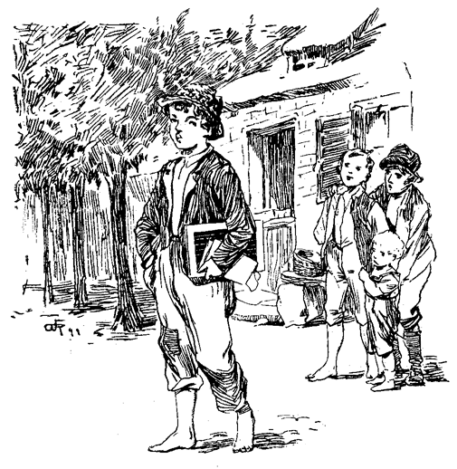Zu welchem Ansehen war Tom jetzt gelangt. Er prahlte nicht, brüstete sich nicht; aber er schritt durch die Straßen mit der einem Piraten geziemenden Würde, im Bewußtsein, daß aller Augen auf ihn gerichtet waren. Er schien die bewundernden Blicke nicht zu sehen, die schmeichelhaften Aeußerungen nicht zu hören, aber das Herz im Leibe lachte ihm darüber. Kleinere Knaben drängten sich um ihn und folgten ihm, nichts mehr und nichts weniger, als wäre er der Trommler an der Spitze einer Prozession oder der Elefant, beim Einzug einer Menagerie. Die Knaben seines Alters thaten, als hätten sie seine Abwesenheit gar nicht bemerkt, aber sie barsten vor Neid. Sie würden alles für Toms sonnenverbrannte Haut und seinen Ruhm gegeben haben, und Tom hätte sie nicht gegen einen ganzen Circus vertauscht. In der Schule waren die Expiraten Gegenstand der höchsten Bewunderung. Sie mußten erzählen und thaten es mit solcher Ueberschwänglichkeit, daß kein Ende abzusehen war. Und als sie endlich ihre Pfeifen hervorzogen und, wie wenn weiter nichts daran wäre, fröhlich zu rauchen begannen, hatte ihre Glorie den Gipfelpunkt erreicht.
Tom fand, daß er auch ohne Becky Thatcher leben könne. Der errungene Ruhm deckte ihren Verlust mehr als genügend. Ruhm und Glorie sollten fortan seine Devise sein. Nun er berühmt geworden war, würde sie vielleicht wieder mit ihm anzubändeln suchen, aber sie möge nur kommen! Sie würde bald erfahren, daß er sich so wenig um sie kümmere, wie gewisse andere auch. – Da kam sie. – Tom schien sie nicht zu bemerken, wandte sich weg, – trat zu einer nahen Gruppe von Knaben und Mädchen und begann eifrig am Gespräch teilzunehmen; es entging ihm aber nicht, daß sie anscheinend ausgelassen, mit freudestrahlenden Augen mit den anderen Mädchen Haschen spielte, die Verfolgte immer unter lautem Gelächter dicht in seiner Nähe gefangen nahm und verstohlene Blicke auf ihn warf. – Das war Futter für seine thörichte Eitelkeit, und statt ihn zu rühren und eine Annäherung herbeizuführen, bestärkte ihn ihr Benehmen, je länger, je mehr, in seinem Trotz. Des Spieles müde, irrte sie umher, hie und da einen aufsteigenden Seufzer unterdrückend und verstohlene, sehnsüchtige Blicke auf Tom werfend. Der aber war in so eifrigem Gespräch mit Amy Lawrence begriffen, daß ihr Stich über Stich durchs Herz ging, und sie sich sehr unbehaglich zu fühlen begann. Sie versuchte, wegzugehen; aber ihre Füße trugen sie, wie unbewußt zu Toms Gruppe zurück.
Mit geheuchelter Munterkeit rief sie einer ihrer Gespielen zu:
»Nun, Mary Anstin, du Böse, warum warst du nicht in der Sonntagsschule?«
»Ich war ja da! Hast du mich denn nicht gesehen?«
»Nein, wo saßest du?«
»In Mrs. Peters Abteilung, wo ich ja immer sitze. Ich habe dich wohl gesehen!«
»So? Nun, das ist komisch! Ich wollte dich zu einem Picknick einladen!«
»Das wäre schön! Wer giebt es?«
»Ich! Meine Mutter hat es mir erlaubt!«
»Ach, wie prächtig! Ich darf doch kommen?«
»Gewiß! Ich habe zu wählen. Es darf kommen, wen ich einlade. Und daß du dabei bist, weißt du wohl!«
»Das ist herrlich! Wann ist es?«
»O, ganz bald! Vielleicht schon in den Ferien!«
»Gott! wird das lustig werden! Wirst du all' die Mädchen und Knaben laden?«
»Alle, die meine Freunde sind oder es gerne sein möchten!« Damit blinzelte sie nach Tom; aber dieser hatte es so eifrig mit Amy Lawrence und wußte ihr soviel von dem schrecklichen Sturm auf der Insel zu erzählen und wie der Blitz die große Platane in Fetzen gerissen, während er nur drei Schritte davonstand, daß er nichts zu hören schien.
»Darf ich auch kommen?« fragte Gracy Miller.
»Und ich?« sagte Salle Rogers.
»Ja!«
»Und ich?« rief Susy Harper. »Und mein Bruder Joe?«
»Gewiß! Ihr alle!«
Und so weiter, unter Jubel und Händeklatschen, bis alle eingeladen waren, nur Tom nicht und Amy Lawrence nicht.
Tom entfernte sich kalt und nahm Amy mit. Beckys Lippen zitterten, die Thränen schossen ihr in die Augen; sie versuchte, fortzuplaudern und heiter zu scheinen; das Interesse am Picknick war jedoch verschwunden, und ihr alles gleichgiltig geworden. Bei der ersten Gelegenheit ging sie weg, versteckte sich und ließ ihren Thränen freien Lauf. So saß sie in verwundetem Stolz, bis die Glocke wieder zur Schule rief. Dann stand sie auf, warf ihre Zöpfe mit einem feindseligen Kopfnicken über die Schultern und sagte, sie wisse nun, was sie zu thun habe.
In der Pause fuhr Tom fort, seine Aufmerksamkeit Amy zu widmen und jubilierte. Er führte sie absichtlich hin und her, um Becky zu treffen, und ihr durch sein Benehmen das Herz zu brechen. Er fand sie endlich, aber das Quecksilber im Barometer that einen gewaltigen Ruck abwärts. Auf einer kleinen Bank hinter der Schule saß sie – und Alfred Temple. Sie hielten ein Bilderbuch in den Händen und waren im Anschauen so vertieft, daß ihre Köpfe sich berührten und alles in der Welt für sie verschwunden zu sein schien. Wie glühende Lava fuhr die Eifersucht durch Toms Adern. Er machte sich bittere Vorwürfe, Beckys Entgegenkommen mißachtet zu haben. Er schalt sich selbst einen Narren, legte sich alle möglichen, verächtlichen Titel bei und wäre ums Leben gern in Heulen ausgebrochen. Amy plauderte und plapperte glückselig; ihr Herz sang. – Tom hatte keine Antwort mehr für sie. Hie und da unzeitgemäßes Ja oder Nein, und wenn sie hoffnungsvoll zu ihm aufsah, eine flüchtige, nicht zur Sache gehörige Aeußerung. Immer und immer wieder zog es ihn nach der fatalen Stelle und jedesmal blutete sein Herz stärker bei dem verhaßten Anblick. Was ihn am heftigsten schmerzte, war der Anschein, den sich Becky gab, als bemerkte sie ihn gar nicht, und als sei er für sie gar nicht mehr unter der Zahl der Lebenden. – Dessen ungeachtet belauschte sie jede seiner Bewegungen; sie war sicher, den Sieg davonzutragen und freute sich schadenfroh, ihn jetzt so leiden zu sehen, wie sie gelitten hatte. Amys heiteres Geplauder ward ihm unerträglich. Er suchte sich unter diesem oder jenem Vorwande von ihr loszumachen. – Umsonst! – Das Mädchen hing an ihm wie eine Klette und schwatzte fröhlich weiter. Tom dachte: Hol's der Teufel, kann ich sie denn gar nie mehr los werden? Er ließ sie endlich stehen und ging. Sie rief ihm nach, daß sie ihn nach der Schule erwarte. – Er haßte sie von da an. »Jeder andere Junge!« sagte Tom unter Zähneknirschen. »Jeder andere Junge, nur nicht dieser feingekleidete, aristokratische, wohlriechende Zierbengel! Gut, gut. Bei deinem ersten Auftreten hier im Dorfe habe ich dich durchgewalkt, du Stadtsöhnchen, und bei der ersten Gelegenheit sollst du deine Tracht Prügel so sicher abkriegen, als damals!« Und mit den Fäusten um sich stoßend, mit »Hast du genug!« und »Laß dir das zur Warnung dienen!« ging er nach Hause. Er konnte Amys liebevolles Geplauder nicht länger anhören und floh den verhaßten Anblick Beckys und Alfreds. – Sie hatten das Bilderbuch noch vor sich; als aber kein Tom mehr da war, fing das Interesse Beckys an dieser Unterhaltung zu schwinden an; ihr Triumph war zu Ende; sie geriet in Zerstreutheit und Melancholie. Zwei- oder dreimal lauschte sie auf nahe Fußtritte, aber Tom kam nicht. Zuletzt fühlte sie sich ganz elend und bereute, die Sache so weit getrieben zu haben. Der arme Alfred sah, daß er Schritt für Schritt an Boden verliere, ohne zu wissen, warum, und um sie wieder zu fesseln, blätterte er eifrig weiter: »Sieh' da, wie schön! Und das da! wie possierlich!« bis sie ungeduldig aufstand und ausrief: »O, langweile mich nicht länger, ich frage nichts nach deinen Bildern!« Laut weinend ging sie weg, Alfred folgte ihr und suchte sie zu trösten: »Laß mich! Kannst du mich nicht allein lassen? Verhaßter Junge?« rief sie. Der Junge blieb verwundert stehen. Sie hatte ihm doch versprochen, den ganzen Nachmittag Bilder mit ihm anzusehen und nun? Womit hatte er sich gegen sie verfehlt, daß sie weinend davonlief? Mit diesen Gedanken ging Alfred in die leere Schulstube. Er war ärgerlich und fühlte sich beleidigt. Ohne große Mühe fand er den wahren Sachverhalt. Das Mädchen hatte sich ihm nur freundlich gezeigt, um ihrem Aerger gegen Tom Luft zu lassen. Diese Ueberzeugung that seinem Haß gegen Tom keinen Eintrag. Wenn er dem verhaßten Jungen nur etwas anhängen könnte, ohne selbst dabei Gefahr zu laufen. Toms Lesebuch fiel ihm in die Augen. Das war's. Er schlug den für den Nachmittag bezeichneten Abschnitt auf und übergoß das ganze Blatt mit Tinte. Becky hatte von außen durchs Fenster zugesehen und sich, ohne ein Wort zu sagen, entfernt.
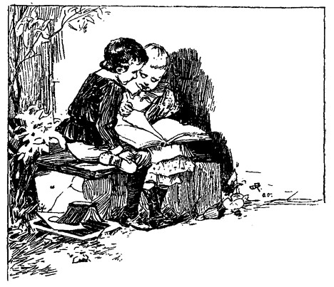Sie wollte Tom aufsuchen, um ihn von dem Vorfall in Kenntnis zu setzen; er würde ihr dankbar sein und ihr Zwist ein Ende haben. – Aber nein! Kaum halbwegs gab sie diesen Vorsatz wieder auf. Sie erinnerte sich mit Scham an die Geringschätzung, mit der er ihre Einladung, zum Picknick angehört und gönnte ihm von Herzen die Schläge, die ihm das verdorbene Buch eintragen mußten. Sie haßte ihn für alle Zeiten.
Tom sagt die Wahrheit.
Tom kam düstergestimmt nach Hause. Die ersten Worte seiner Tante überzeugten ihn, daß er seiner Kümmernisse nicht so leicht entledigt werden würde:
»Tom, ich weiß wirklich nicht, soll ich dich lebendig schinden oder nicht!«
»Aber Tantchen! Was habe ich denn gethan?«
»Gerade genug! Da gehe ich wie ein altes Schaf hinüber zu Sereny Harper und will ihr Wunder was von deinem Traum erzählen und siehe da! es stellt sich heraus, daß Joe alles ausgeplaudert und daß du in jener Nacht unser ganzes Gespräch mit angehört hast! Tom, was soll aus einem Jungen noch werden, der so handelt wie du? Wie konntest du zugeben, daß ich mich Mrs. Harper gegenüber so schmachvoll bloßstellte!«
Die Geschichte erschien Tom in einem neuen Lichte. Was er am Morgen noch als einen Geniestreich betrachtet hatte, kam ihm nun schäbig und gemein vor. Er ließ den Kopf hängen und fand erst kein Wort der Entschuldigung. Endlich sagte er:
»Tantchen, ich bereue, es gethan zu haben. Ich hatte es nicht überlegt.«
»Ach, Kind, das ist's ja eben, daß du nie überlegst! Du denkst nie an andere, nur immer an dich! Du konntest überlegen, von Jacksons Insel herüberzuschwimmen, uns bei Nacht zu belauschen, über meinen Kummer zu spotten, mich mit einem erlogenen Traum zur Närrin zu halten – aber nicht uns alle dem Kummer und der Sorge zu entreißen und Mitleid mit uns zu haben – daran dachtest du nicht!«
»Tantchen, es war sehr gemein von mir. Ich meinte aber nicht, gemein zu sein. Gewiß nicht! Und dann kam ich in jener Nacht nicht, um dich zu verspotten!«
»Warum kamst du denn?«
»Ich wollte dir nur sagen, daß wir nicht ertrunken wären und daß du nicht um uns bekümmert sein sollest!«
»Wenn ich das glauben könnte, wäre ich das glücklichste Wesen von der Welt. Aber diesen guten Gedanken hattest du nicht, Tom, du weißt es wohl, Tom, und ich weiß es auch!«
»Gewiß und wahrhaftig, Tante, ich kam nur in dieser Absicht. Möge ich nie mehr von der Stelle kommen, wenn es nicht wahr ist!«
»Lüge nicht, Tom; gelt du lügst nicht? Du machst deine Sache nur schlimmer!«
»Ich lüge nicht, Tante. Ich spreche die reine Wahrheit. Nur die Absicht, dir Kummer zu ersparen, trieb mich her!«
»Ich gäbe die ganze Welt darum, dir glauben zu können. Das würde eine Menge deiner Missethaten zudecken! Ich würde mich sogar über diesen Streich freuen. Aber es kann ja gar nicht sein! Warum sagtest du mir denn nichts, Kind?«
»Nun, siehst du, Tante, als ihr an jenem Abend von der Leichenfeier sprach't, fuhr mir der Gedanke durch den Kopf, ungesehen dabei zu sein. Ich konnte diese Idee nicht wieder los werden und so steckte ich die Rinde wieder in die Tasche und schwieg.«
»Welche Rinde?«
»Die Rinde, auf welche ich für dich geschrieben hatte, daß wir einen Piratenzug unternommen. Wenn du nur bei meinem Kuß aufgewacht wärest!«
Die harten Züge in seiner Tante Antlitz wurden milder und ein plötzlicher Anflug von Zärtlichkeit schimmerte in ihren Augen: »Hast du mich geküßt, Tom? Wahr?
»Ganz gewiß!«
»Bist du ganz sicher?«
»Ganz sicher, Tante, so wahr ich hier stehe!«
»Warum hast du mich geküßt?«
»Weil ich dich so lieb hatte, wie du dalagst und um meinetwillen so bekümmert warst!«
Das leuchtete ihr ein; sie konnte ein gewisses Beben in der Stimme nicht unterdrücken, als sie ihm sagte:
»Küsse mich noch einmal, Tom, und dann packe dich fort zur Schule! Und komme mir nicht wieder so!«
Kaum war er fort, so rannte sie in die Rumpelkammer und brachte eine Ruine der Jacke zum Vorschein, die Tom aus seinem Piratenzuge getragen. Einen Moment hielt sie sie an sich: »Nein, ich darf nicht! der arme Junge! Er hat mich wohl angelogen, aber gesegnet sei seine Lüge. Sie brachte mir solchen Trost! Ich hoffe, nein, ich weiß, der Herr wird ihm vergeben, er meinte es ja so gut! Ich will übrigens gar nicht mehr forschen. Was brauche ich zu wissen, ob er gelogen hat oder nicht?«
Sie legte die Jacke bei Seite. Zweimal streckte sie die Hand danach aus, und zweimal zog sie sie wieder zurück. Endlich dachte sie: »Es ist ja eine fromme Lüge, und ich werde mich nicht grämen, wenn es eine Lüge ist!« und suchte in der Tasche. Einen Moment nachher las sie Toms Rinde unter einer wahren Thränenflut und würde ihm jede Sünde und wären es Millionen gewesen, willig verziehen haben.
Becky in schwieriger Lage. – Toms Edelmut offenbart sich.
Es lag so viel Trostvolles in Tante Pollys Kuß und in ihrem ganzen Benehmen, daß Tom alle seine Kümmernisse vergaß und wohlgemut den Weg zur Schule einschlug. Am Eingang des Wiesengäßchens stieß er auf Becky. Ohne zu zögern eilte er auf sie zu.
»Ich war heute sehr unartig, Becky, und bereue es tief. Ich will es mein ganzes Leben lang nicht wieder thun. Sei mir wieder gut!«
Das Mädchen stand still und maß ihn mit verächtlichen Blicken:
»Sie werden mich sehr verbinden, Herr Tom Sawyer, wenn Sie sich in Zukunft von mir ferne halten! Ich habe kein Wort mehr für Sie!«
Sie warf den Kopf höhnisch zurück und ging vorüber. Tom war so niedergeschmettert, daß er nicht einmal sagen konnte: »Wer frägt danach, Miß Zieraffe?« bis es zu spät war. Somit schwieg er, aber er glühte vor Erregung. Wenn sie nur ein Junge wäre, wie würde er sie zerdreschen! Im Vorhofe traf er sie und schleuderte ihr eine bissige Bemerkung zu. Sie blieb ihm nichts schuldig, und die Bresche war fertig. Becky konnte den Anfang der Schule kaum erwarten, so sehr freute sie sich auf die Prügel, die Tom für das verdorbene Lesebuch zu gewärtigen hatte. Toms Benehmen hatte die von ihr zuerst gehegte Absicht, Alfred Temples schwarze That zu verrathen, gänzlich in den Hintergrund gedrängt. Das arme Ding! Sie ahnte nicht, wie bald auch ihr Unheil drohen sollte.
Der Lehrer, Mr. Dobbins, hatte das mittlere Alter erreicht, ohne seinen Ehrgeiz befriedigt zu sehen. Er wäre so gerne Doktor geworden, aber aus Armut hatte er es nicht höher, als bis zum Dorfschulmeister bringen können. Tagtäglich zog er, wenn die Klasse nicht auswendig Gelerntes herzusagen hatte, ein geheimnisvolles Buch aus dem Pult und vertiefte sich in dessen Inhalt. Er hielt es immer sorgsam eingeschlossen. Da war auch nicht eines der Schulkinder, das nicht ums Leben gern einmal hineingeschaut hätte; aber nie wollte es sich schicken. Jeder Knabe und jedes Mädchen hatte seine eigene Meinung über das rätselhafte Buch, aber nicht zwei stimmten überein.
Beim Eintritt in das Schulzimmer bemerkte Becky, daß der Pultschlüssel stak. Das war eine günstige Gelegenheit. Sie blickte umher und fand sich allein, und im nächsten Augenblick hatte sie das Buch in den Händen. Das Titelblatt: »Anatomie von Professor So und so« brachte ihr keine Aufklärung, und sie begann zu blättern. Sie stieß auf einen hübschen, illuminierten Kupferstich, einen faselnackten, menschlichen Körper vorstellend. In diesem Moment fiel ein Schatten auf ihr Bild, Tom stand hinter ihr und blickte über ihre Schulter. Hastig riß sie das Buch an sich um es zu schließen, und der Kupferstich war entzwei. Sie warf das Buch in das Pult, drehte den Schlüssel um und brach vor Scham in lautes Weinen aus.
»Tom Sawyer, das sieht dir wieder gleich! So gemein kannst nur du sein, dich herumzuschleichen und auszuspionieren, was man betrachtet!«
»Wie konnte ich wissen, daß du etwas anschautest?«
»Du solltest dich schämen, Tom Sawyer! Du wirst es ausschwatzen und ich ... O, was soll ich thun? Was anfangen? Ich werde die Rute bekommen, und ich wurde nie, nie in der Schule bestraft!«
Sie stampfte mit ihrem kleinen Fuß hastig auf den Boden.
»Sei nur so gemein, wenn du willst! Aber ich weiß, was dir geschehen wird! Sieh nur zu! Du verhaßter, abscheulicher Junge!«
Sie brach von neuem in heftiges Weinen aus und stürzte durch die Thüre. Tom stand ganz verblüfft über diesen heftigen Ausbruch.
»Was doch so ein Mädchen für ein närrisches Ding ist! Nie in der Schule gestraft! Bah! Was liegt denn an so ein paar Hieben? Aber die Mädchen sind so dünnhäutig und so hasenfüßig! Nun, ich werde die kleine Närrin sicher nicht verraten, es giebt andere Mittel und Wege, mit ihr abzurechnen! Und dann? Der alte Dobbins wird fragen, wer das Buch zerrissen habe. Niemand wird antworten. Dann wird er in gewohnter Weise jedes Einzelne vornehmen, und wenn er an die Rechte kommt, wird er es merken, wenn sie auch nichts sagt. Mädchengesichter verraten sich immer selbst. Da ist nichts zu machen. Die Rute ist ihr gewiß. Ja, ja, Becky Thatcher, da bist du schön in die Patsche geraten!«
Tom grübelte noch ein wenig über die Sache nach und meinte dann:
»Geschieht ihr übrigens Recht! Sie würde frohlocken, wenn das mir passiert wäre! Möge sie es ausschwitzen!«
Der Lehrer kam, und der Unterricht begann. Tom war zerstreut. Hie und da warf er einen verstohlenen Blick nach der Mädchenseite. Beckys Aussehen betrübte ihn. Alles in allem genommen, hatte er keine Ursache, sie zu bemitleiden, und doch konnte er auch mit dem besten Willen nicht anders. Schadenfreude war gegen seine Natur.
Nun folgte die Entdeckung des im Lesebuch angerichteten Schadens, und Tom hatte eine Weile genug mit seiner eigenen Angelegenheit zu schaffen. Becky ermunterte sich von ihrem düsteren Brüten und nahm lebhaften Anteil an den Vorgängen. Sie wußte wohl, daß es Tom nichts helfen würde, wenn er auch die Thäterschaft bestritt, und sie hatte Recht. Im Gegenteil. Je mehr Tom leugnete, desto schwärzer erschien die schwarze That. Becky fand in Toms kritischer Lage nicht den erwarteten Genuß, und als es zum äußersten kam, war sie auf dem Punkte, Alfred Temple anzuklagen. Sie hielt jedoch gewaltsam an sich und sagte zu sich selbst: Er wird mich ja des zerrissenen Bildes wegen doch verraten, und ich würde schweigen, wenn ich ihm durch ein einziges Wort das Leben retten könnte!«
Tom empfing seine Tracht Prügel in stoischer Ruhe. Vielleicht hatte er doch selbst die Tinte über das Buch ausgegossen. Er war darüber nicht ganz im Klaren und hatte nur der Form wegen und aus altem Herkommen geleugnet.
Eine lange Stunde verging. Der Lehrer saß nickend auf seinem Throne; das einschläfernde Gesumme des Auswendiglernens erfüllte das Schulzimmer. Der Lehrer erhob sich, reckte sich gähnend und griff nach seiner Lieblingslektüre, ungewiß, ob er das Buch öffnen oder wieder verschließen wolle. Die Schüler folgten seinen Bewegungen mit schläfrigen Blicken; nur zwei derselben beobachteten ihn mit weitgeöffneten Augen und ungeteiltem Interesse. Dobbins setzte sich endlich zurecht und ergriff das Buch. Tom warf einen raschen Blick auf Becky. Er hatte früher einmal ein Kaninchen gesehen, auf das ein Jäger die Flinte angeschlagen, und der verzweifelte, hilflose Blick desselben spiegelte sich in Beckys Augen wieder. Er vergaß all' seine Händel mit ihr. Hier mußte etwas gethan werden, schnell, mit Blitzeseile! Er wollte aufspringen, dem Lehrer das Buch entreißen und damit durchs Fenster flüchten. Ein Augenblick des Schwankens, und die Gelegenheit war dahin. Der Lehrer öffnete das Buch, da war keine Rettung für Becky mehr.
Der Lehrer wandte sich gegen die Schuljugend. In seinen Blicken lag etwas, vor dem auch die Schuldlosesten erzitterten. Jedes Auge suchte den Boden. Tiefe Stille. Der Lehrer sammelte seinen Zorn und sprach: »Wer zerriß dieses Buch?« Kein Laut. Man hätte den Fall einer Nadel hören können. Während der Totenstille überflog der Lehrer die Gesichter der Schüler, um das Schuldbewußtsein des Thäters zu entdecken.
»Benjamin Rogers, hast du dieses Buch zerrissen?«
Verneinung. Neue Pause.
»Joseph Harper, warst du's?«
Toms Unruhe stieg mit der feierlichen Langsamkeit der Procedur. Nachdem Mr. Dobbins die Reihen der Jungen mit strengem Auge gemustert, wandte er sich zu den Mädchen.
»Amy Lawrence?«
Kopfschütteln.
»Gracie Miller?«
Dasselbe Zeichen.
»Susanna Harper, hast du es gethan?«
Verneinung.
Die Reihe war an Becky Thatcher. Tom zitterte am ganzen Körper im Gefühl seiner Hilflosigkeit.
»Rebeca Thatcher.« – Tom warf einen Blick auf sie, sie war vor Schrecken weiß wie eine Wand – »hast du dieses Buch« – »nein« – »schaue mir ins Gesicht! –« Sie hatte die Hände wie zur Abwehr erhoben, – »hast du dieses Buch zerrissen?«
Wie der Blitz fuhr ein Gedanke durch Toms Gehirn. Er sprang auf und brüllte: »Ich habe es gethan!«
Bestürzt über diesen unglaublichen Narrenstreich starrte alles nach ihm. Er stand einen Augenblick, um seine aufgestörten Geister zu sammeln und schritt gefaßt vorwärts, um seine Strafe zu empfangen. Die Blicke der Ueberraschung, der Dankbarkeit, der Anbetung, die ihm im Vorbeigehen aus Beckys Augen entgegenstrahlten, würden ihn für tausend Züchtigungen entschädigt haben. Im Gefühle, eine heroische That vollbracht zu haben, empfing er, ohne einen Laut von sich zu geben, die erbarmungsloseste Strafe, die Mr. Dobbins je verhängt und nahm mit größtem Gleichmut die Verschärfung entgegen, zwei Stunden nach beendigter Schule sitzen zu bleiben. Er wußte, wer auf ihn warten und gerne warten werde.
Unter Racheplänen gegen Alfred Temple entschlief Tom diese Nacht. Mit Reue und Scham hatte ihm Becky alles erzählt und ihren eigenen Verrat nicht vergessen. Aber selbst sein Rachegefühl verschwand vor der beseligenden Erinnerung an Beckys letztes Wort: »Tom, das war nobel von dir.«
Jugendliche Beredsamkeit. – Backfisch-Kompositionen – Eine langweilige Vision. – Der Jungen Rache.
Die Ferien kamen näher. Der Schulmeister, sonst schon strenge, wurde immer strenger und steigerte die Anforderungen an seine Schüler ins Unerträgliche. Die diesjährige Parade sollte eine glänzende sein. Den lieben langen Tag regnete es Prügel und Rutenstreiche auf die liebe Jugend und nur die älteren Zöglinge von 18 bis 20 Jahren beiderlei Geschlechts wurden mit der Rute verschont. Und Dobbins Prügel waren nicht zu verachten. Obgleich schon im mittleren Alter stehend und vollkommen glatzköpfig, war sein Arm doch noch sehr muskulös, und er führte einen kräftigen Hieb. Je näher der große Tag kam, desto größer wurde seine Tyrannei. Er schien ein ganz absonderliches Vergnügen in der Bestrafung auch der kleinsten Unaufmerksamkeit zu finden, und es gelang ihm, die jüngeren Schüler so weit zu bringen, daß sie bei Tag vor ihm zitterten und Nachts Rachepläne gegen ihn schmiedeten. Sie versäumten keine Gelegenheit, ihm irgend einen Streich zu spielen; er aber war auf seiner Hut, und sie zogen regelmäßig den kürzeren. Zuletzt komplottierten sie in Masse und heckten einen Plan aus, der glänzende Rache verhieß. Sie vereidigten des Schildmalers Jungen, weihten ihn in ihr Geheimnis ein und erbaten seine Hilfe. Er sagte mit Freuden zu. – Der Schulmeister wohnte bei seinem Vater zur Miete und hatte dem Jungen oft genug Veranlassung zum Haß gegeben. Die Schulmeisterin ging, wie man wußte, in einigen Tagen zum Besuch aufs Land, und in ihrer Abwesenheit sollte der Plan ausgeführt werden. Der Lehrer hatte die Gewohnheit, sich durch starkes Trinken auf große Anlässe vorzubereiten; der Schildmaler-Junge wußte das und versprach, am Examen-Nachmittag, wenn der Schultyrann das richtige Stadium erreicht haben und in seinem Armsessel schlummern würde, die Sache zur allgemeinen Zufriedenheit einzufädeln.
Der große Tag kam. Abends 8 Uhr strahlte das Schulhaus in brillanter Beleuchtung und war mit Guirlanden und Kränzen geschmückt. Der Lehrer thronte in seinem Armstuhl auf erhöhter Plattform, den Rücken gegen die schwarze Tafel gekehrt. Er sah ziemlich mild aus. Drei Reihen Bänke zur Rechten, drei zur Linken und sechs in der Front waren von den Würdenträgern des Dorfes und den Eltern der Schüler besetzt. Links vom Lehrer, hinter den Sitzen der Eingeladenen, befand sich eine erhöhte Estrade, und war mit den zur Parade berufenen Schülern dicht besetzt. Da saßen ganze Reihen impertinent gewaschener und gekämmter kleiner Jungen; große linkische Tölpel, schnerige Mädchen und junge Damen, ganz in Mousselin gekleidet, ihre nackten Arme mit Bewußtsein zur Schau tragend, mit Blumen in den Haaren und mit den Goldsachen ihrer Großmütter behangen. Der übrige Raum war mit nichtbeteiligten Schülern vollgepfropft.
Die Uebungen begannen. Ein kleiner Junge erhob sich und deklamierte schüchtern: »Bin ich gleich nur schwach und klein, fällt mir doch ein Liedchen ein –« seine Worte mit eingelernten Gestikulationen begleitend, die ein in Unordnung geratener Automat nicht besser hätte machen können. Allgemeiner Applaus belohnte ihn. – Nach ihm lispelte ein kleines schamrotes Mädchen:
»Ein junges Lämmchen, weiß wie Schnee etc. ...« machte einen mißlungenen Knix, wurde ebenfalls applaudiert und setzte sich freudeglühend und zufrieden.
Tom Sawyer trat zuversichtlich vor und begann den unvermeidlichen, bei jeder Gelegenheit wiedergedroschenen Monolog: »Gebt mir Freiheit, oder gebt mir den Tod!« mit heller Wut und unter frenetischen Gestikulationen. Mitten darin blieb er plötzlich stecken. Das Lampenfieber hatte ihn erfaßt. Seine Beine wollten ihn nicht mehr tragen; er war dem Ersticken nahe. Zwar hatte er den ganzen Beifall des Hauses, aber die tiefe Stille, in der man seinen Worten lauschte, erschreckte ihn. Als nun auch der Lehrer die Stirne runzelte, da war es um ihn geschehen. Unter unverständlichem Stottern, zog er sich, gänzlich geschlagen, zurück. Einzelne Beifallsrufe erstarben bald.
»Der Knabe stand auf Schiffesdeck,
In Rauch und Flammen eingehüllt.«
folgte, und
»Die Assyrier« und andere deklamatorische Proben.
Dann wurden Lese- und Buchstabierübungen vorgenommen. Die magere Latein-Klasse machte dem Lehrer Ehre.
Damit war der erste Teil des heutigen Festprogramms erschöpft, und es ging an die » Original-Kompositionen« der jungen Damen.
Nach der Reihe trat eine jede vor bis an den Rand der Estrade, räusperte sich, entfaltete das mit farbigen Bändern geheftete Manuskript und begann zu lesen, dabei die peinlichste Sorgfalt auf Betonung und Punktuation verwendend. Die Themata waren die gewöhnlichen, wie sie schon von ihren Müttern und Großmüttern bearbeitet und seit den Kreuzzügen von einer Generation auf die nachfolgende vererbt worden waren. – »Freundschaft« war eines; »Erinnerung an entschwundene Tage« ein anderes; »Die Religion in der Geschichte«; »Das Land der Träume«; »Die Vorteile der Kultur«; »Vergleichung und Kritik der Regierungs-Systeme«; »Melancholie«; »Kindesliebe«;»Herzsehnen« u. s. w. u. s. w. folgten und wurden abgewandelt.
Ein großer Teil der Kompositionen oder Aufsätze trugen einen und denselben Stempel, den der gehätschelten Melancholie; ein anderer war vollgepfropft von sogenannten »eleganten« Metaphern; noch ein anderer war darauf berechnet, durch abgedroschene, aber damals beliebte Ausdrücke sich durchs Ohr ins Herz zu stehlen. Und durchgängig wedelte am Ende einer jeden Komposition ein verkümmerter moralischer Schwanz. Was auch vorgetragen wurde, immer mußte das Thema zu einem erbaulichen Schlusse führen. »Reime dich, oder ich fresse dich!«
Obgleich die Heuchelei dieser Nutzanwendungen offen zu Tage liegt, und von Rechtswegen aus der Schule verbannt sein sollte, so war sie es doch damals nicht, und wird es wohl auch nie werden, solange die Erde steht. In unserem ganzen Lande existiert auch nicht eine Schule, in der die jungen Dämchen ihre Kompositionen nicht mit einer Moralpredigt schließen zu müssen glauben, und dem aufmerksamen Beobachter wird es nicht entgehen, daß gerade die leichtfertigsten Dirnen ihren Aufsätzen immer die längsten moralischen Schwänze anhängen. Aber genug hiervon. Der Prophet gilt nichts in seinem Vaterlande.
Kehren wir zum Examen oder zur Parade zurück. Die erste Komposition, die vorgetragen wurde, war betitelt:
»Und das nennt man Leben!«
Ein kleiner Auszug wird dem Leser nicht schaden:
»Wie erhebt sich nicht das jugendliche Herz im Einerlei des Lebens bei der Aussicht auf eine Festivität. Die Phantasie ist geschäftig, sich alles aufs Rosigste auszumalen. Die angehende Modedame erblickt sich selbst im Festgedränge als Gegenstand der allgemeinen Bewunderung. Ihre graciöse Gestalt in schneeweißen Gewändern wirbelt in jubelndem Tanze durch die Menge; ihr Auge ist das strahlendste, ihr Fuß der leichteste in der ganzen Assemblee. – Unter solch' entzückenden Träumen kommt die willkommene Zeit, in der ihr der Zutritt in die ersehnte, geträumte, elegische Welt gestattet ist. Wie feenhaft erscheint alles ihren entzückten Augen! Jede neue Scene bringt neue Wonne. Aber wie bald, ach wie bald findet sie, daß hinter all diesem Gepränge öde Leere lauert, und daß eben alles eitel ist! Die Schmeicheleien, die sie früher begierig einsog, zerreißen nun ihr Ohr, der Tanzsaal hat all seinen Reiz verloren; schwindsüchtig, mit Galle im Herzen, kehrt sie ihm den Rücken und weiß nun, daß alle Freuden dieser Erde weit entfernt sind, dem Sehnen der unsterblichen Seele Genüge zu thun!«
Und so fort und so weiter, hie und du ein beifälliges Gemurmel, ein Geflüster: »Ach, wie süß!« – »Gott, wie schön!« – »Wie wahr!« und dergleichen, und nachdem das Ding mit einer besonders trübseligen Nutzanwendung geschlossen, enthusiastische Beifallsrufe.
Es trat ein dünnes, mageres, melancholisches Mädchen auf, dessen interessante Blässe auf schlechte Verdauung und Wurmpillen schließen ließ, und recitierte ein Gedicht. Zwei Stanzen davon werden zur Beurteilung genügen:
»Abschied eines Missouri-Mädchens von Alabama.
Leb' wohl, Alabama, mein Herz bleibt dir,
Wenn das Geschick mich in die Ferne treibt!
Betrübt, beklommen ziehe ich von hier,
Wo meiner Seele bester Teil verbleibt!
Nein, deiner Wälder Reiz vergess' ich nie.
Nie Tallaporsas und Tallassees Flut!
Nie, wie am Coosa ich des Morgens früh
Bewunderte Auroras Rosenglut!
Mit schwerem Herzen ließ ich dich zurück!
Die Thräne rinnt, ich schäm' mich ihrer nicht!
Hier lachte mir des Lebens erstes Glück,
Und Heimatliebe ist mir süße Pflicht!
Lebt wohl, ihr Thäler, ihr geliebten Höh'n!
Erkalten müssen Aug' und Herz und tête,
Eh' treulos ich verzicht' aufs Wiedersehn;
Adieu, ich kehre wieder, wenn auch spät.«
Von den Zuhörern wußten Wenige, was mit tête gemeint sei, dessenungeachtet erntete das Gedicht lebhaften Beifall.
Nun erschien eine schwarzhäutige, schwarzäugige, schwarzhaarige, junge Lady; sie machte eine erwartungsvolle Pause, nahm eine tragische Miene an und las in abgemessenem, peinlichem Tone, wie folgt:
»Düster und stürmisch war die Nacht. Am Himmelsdome flimmerte auch nicht ein Stern. Das dumpfe Rollen des Donners schlug unausgesetzt ans Ohr, während fürchterliche Blitze die wolkigen Gelasse des Firmaments durchzuckten, unbekümmert um die vom berühmten Franklin über sie erlangte Gewalt. Selbst die ungestümen Winde waren aus ihren geheimnisvollen Heimstätten herbeigekommen, und bliesen nach Kräften, um die Wildheit der Scene zu erhöhen. So saß ich, und seufzte aus ganzer Seele nach Sympathie. Da kam die, die ich vor allen liebe, meine Freundin und Beraterin, mein Trost im Kummer, meine Lust in der Freude.
Sie schwebte einher, wie ein Gebild aus Himmelshöhen, ohne anderen Schmuck, als den ihr von der Natur verliehenen. Ihr Tritt war so sylphidenartig leicht, daß ich ohne ihre, mich magnetisch durchzuckende Berührung, ihre Ankunft nicht geahnt und sie vorbeigelassen hätte, wie eine andere der gewöhnlichen Sterblichen auch.
Tiefe Trauer lag auf ihren Zügen, wie die eisigen Thränen auf dem Mantel des Dezember, als sie auf die im Kampfe liegenden Elemente zeigte, und mir befahl, die beiden zum Vorschein kommenden Wesen zu betrachten.«
Durch zehn Seiten ihres Manuskriptes dauerte dieses Alpdrücken, und schloß mit einer, alle Nichtpresbyterianer so aller Hoffnung auf die Ewigkeit beraubenden Moral, daß sie den ersten Preis davontrug. – Diese Komposition wurde als die Perle des Abends proklamiert. Der Bürgermeister ließ bei Ueberreichung des Preises einen warmen – Speech los, worin er sagte, daß er nie etwas Besseres gehört, und daß Daniel Webster selbst, oder Edgar Poe stolz darauf sein könnten.
Im Vorübergehen möge die Notiz noch hier Platz finden, daß in diesen Vorträgen das Wort »wunderschön« zu oft angewendet, und daß »Erfahrung« immer durch »das Blatt des Lebens« übersetzt wurde.
Inzwischen hatte sich der Schulmeister ein Zöpfchen angetrunken. Er stieß seinen Thron beiseite, drehte der Versammlung den Rücken, und begann die Karte Amerikas auf die schwarze Tafel zu zeichnen, um die Geographieschüler vorzunehmen. Die Hand war unsicher, und es wollte nicht recht gehen. Man kicherte. Er verstand das, löschte aus, versuchte besser zu machen, und machte schlimmer. Das Gekicher wurde lauter. Er richtete seine ganze Aufmerksamkeit auf die Zeichnung, entschlossen, sich nicht verblüffen zu lassen, und wußte, daß aller Augen auf ihm ruhten. Er sah oder glaubte, daß die Karte gelinge, und doch hörte das Gelächter nicht auf – im Gegenteil.
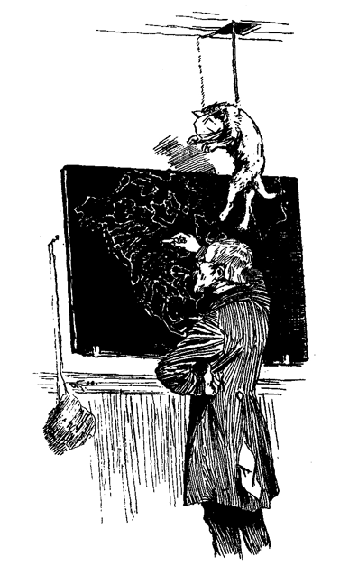Und Grund genug war vorhanden.
Gerade über seinem Kopfe, in der Decke, befand sich eine Luke, und durch diese Luke erschien eine Katze mit verbundenem Kopf und Maul, an einem um die Körpermitte geschlungenen Strick schwebend. Im Niederschweben klammerte sie sich bald an den Strick, bald suchte sie umsonst die unter ihr liegende Leere zu erfassen. Das Gelächter nahm zu – die Katze war noch 6 Zoll vom Kopf des in seiner Aufgabe vertieften Schulmeisters entfernt – tiefer – noch ein wenig – und sie hatte dessen Perrücke mit ihren verzweifelten Krallen erfaßt. Im Nu war sie mit ihrer Trophäe in der Luke verschwunden.
Und wie herrlich strahlte die Glatze des Schultyrannen! Des Schildmalers Junge hatte sie vergoldet!
Die Versammlung nahm ein jähes Ende. Die Knaben waren gerächt, und Ferien hatten begonnen.
Vereitelte Hoffnung. – Furcht vor göttlicher Strafe.
Tom trat in den neuen Orden der Temperenzkadetten, angelockt durch den Schimmer ihrer Abzeichen. Er leistete den Eid, sich des Tabakrauchens und -kauens und des Fluchens zu enthalten, so lange er Mitglied bleiben werde.
Da machte er eine neue Entdeckung, er fand, daß Verbotenes am besten schmeckt. Die Begierde, zu trinken und zu fluchen wurde so mächtig in ihm, daß nur die Hoffnung, bei irgend einem feierlichen Anlaß in seiner Schärpe einherstolzieren zu können, ihn abhielt, aus dem Orden zu treten. Zwar nahte der 4. Juli, der große Tag der Unabhängigkeitsfeier – aber bevor er seine Fesseln 48 Stunden getragen, hatte auch diese Aussicht allen Reiz für ihn verloren. Es lag etwas Näheres im Wurf. Der alte Friedensrichter Frazer lag auf dem Todbette, und sein Leichenbegängnis mußte mit all der Schaustellung, die seinem Rang gebührte, gefeiert werden. Drei lange Tage war niemand so eifrig, sich nach seinem Befinden zu erkundigen, als Tom. Manchmal stiegen seine Hoffnungen so, daß er seine Abzeichen hervornahm, und sich damit vor dem Spiegel übte. Aber es war kein Verlaß auf den Richter. Endlich ging es ihm besser, und dann hatte er sich durchgehauen und befand sich in völliger Rekonvalescenz. Tom fühlte sich getäuscht und beleidigt, und gab seine Entlassung. In dieser selben Nacht hatte der Richter einen Rückfall und starb. – Tom schwur, daß er einem solchen Menschen nie mehr trauen werde.
Das Leichenbegängnis war schön. Die Kadetten paradierten in einem Stile, der darauf berechnet war, das ausgetretene Mitglied vor Neid umzubringen. Nur das Gefühl, frei zu sein, brachte ihm einigen Trost. Durfte er doch trinken und fluchen, was den anderen untersagt war; zu seinem Leidwesen fand er aber, daß er gar keine Lust dazu hatte. Das Bewußtsein, zu dürfen, hatte den Reiz zerstört. Tom fand, daß die ersehnten Ferien allmählich drückend wurden, und wunderte sich darüber. Er unternahm, ein Tagebuch zu führen. Drei Tage lang ereignete sich nichts Bemerkenswertes, und er gab es auf.
Ein Negerkonzert fand statt, und erregte einiges Aufsehen. Tom und Joe Harper organisierten eine Bande – und amüsierten sich zwei Tage.
Selbst der gloriose Vierte mißlang. Es regnete schändlich; es fand keine Prozession statt, und Toms Hoffnung, in der Person des anwesenden Senators der Vereinigten Staaten, Mrs. Bentley, den größten Mann der Welt zu sehen, ward schmählich getäuscht. Er maß keine 25 Fuß, nicht einmal annähernd.
Es kam eine Kunstreitergesellschaft. Die Jungen spielten drei Tage lang Circus, gegen ein Eintrittsgeld von drei Stecknadeln für die Knaben, und zwei für die Mädchen – und dann war's auch damit vorbei.
Dann erschien ein Phrenologist, – dann ein Mesmerianer – sie gingen, und ließen das Nest langweiliger und dumpfer als vorher.
Einige Knaben- und einige Mädchenausflüge brachten etwas Leben, aber nur, um nachher die Leere noch leerer zu machen.
Becky Thatcher brachte die Ferien in Konstantinopel, bei ihren Verwandten zu – das Leben hatte jeden Reiz verloren. Dazu gesellte sich die chronisch gewordene Furcht vor den Folgen des vorgefallenen Mordes. Um das Maß voll zu machen, traten die Masern auf. Zwei lange Wochen lag Tom ans Bett gefesselt; tot für die Außenwelt und ihr Treiben.
Bei seinem ersten Ausgang überraschte ihn die melancholische Veränderung, die mit jedem Ding und mit jeder Kreatur inzwischen vorgegangen war.
Eine religiöse Erweckung hatte stattgefunden. Alles war fromm geworden. Nicht die Erwachsenen allein, nein, auch die Jungen und Mädchen. Tom strich umher, um wenigstens einen Sünder unter so viel Gerechten ausfindig zu machen – umsonst. Er fand Joe Harper ins neue Testament vertieft und entfernte sich mit Ekel. Er forschte nach Jim Hollis, und traf ihn beschäftigt, einen Korb voll Traktätchen an die Armen auszuteilen. Ben Rogers ermahnte ihn salbungsvoll, sich die überstandene Krankheit als segensreiche Warnung dienen zu lassen. Ueberall, wo auch immer er bei seinen Schulkameraden anklopfen mochte, mußte er sich unbefriedigt abwenden. In seiner Verzweiflung suchte er Trost bei seinem Busenfreund Huckleberry. Dieser empfing ihn mit einem Bibelspruch. Das war zu hart. Mit gebrochenem Herzen schlich er nach Hause, und kroch mit dem quälenden Bewußtsein zu Bette, daß nur er unter so viel Auserwählten auf ewig verloren sei.
In jener Nacht raste ein fürchterlicher Sturm mit strömendem Regen, blendenden Blitzen und krachenden Donnerschlägen. Er zog die Bettdecke über Augen und Ohren und erwartete den ihn zermalmenden Streich. Es war kein Zweifel, dieser ganze Höllenlärm galt nur ihm, dem Sünder. Die himmlischen Mächte hatten die bisher geübte Langmut beiseite gesetzt, und gossen nun die ganze Schale ihres Zorns über ihn aus. Früher hätte er bei dem Gedanken, einen Käfer durch die Geschosse einer ganzen Batterie töten zu wollen, gelacht; aber jetzt, im Gefühl seiner Missethaten, erschien ihm diese gewaltige Entfaltung der himmlischen Strafmittel, einem so unbedeutenden Wurme, wie er, gegenüber, gar nicht so ungereimt.
Der Sturm ging vorüber, ohne ihn vernichtet zu haben. Im ersten dankbaren Antrieb wollte Tom sich ernstlich bessern – dann entschloß er sich, noch zu warten. Möglicherweise dürfte ein ähnlicher Sturm niemals wiederkehren.
Am folgenden Tage umstanden die Aerzte wieder sein Bett. Er hatte einen schweren Rückfall gehabt. Die drei Wochen, die ihn ans Lager fesselten, schienen ihm eine Ewigkeit. Seine Wiedergenesung freute ihn, einsam und verlassen, wie er sich fühlte, nur halb.
Verdrossen schlenderte er ins Freie. Er fand Jim Hollis als Vorsitzenden eines jugendlichen Gerichtshofes, der eben eine Katze in Gegenwart ihres Opfers, eines Vogels, aburteilte, und Joe Harper und Huck Finn im Genuß einer gestohlenen Melone. Die armen Jungen! gleich Tom hatten sie einen Rückfall erlitten.
Die Freunde des alten Muff. – Muff Potter vor den Assisen. – Muff Potter gerettet.
Es kam Leben in die schläfrige Atmosphäre, und ein reges Leben. Die Assisen wurden eröffnet, um über den vorgefallenen Mord zu Gericht zu sitzen. Man sprach von nichts Anderem mehr. Tom konnte dem nicht entgehen. Jede Erwähnung des Mordes goß Schauder durch sein Gebein. Er betrachtete jedes Wort darüber als »einen Fühler«. Zwar konnte er nicht absehen, wie man ihn der Mitwissenschaft zeihen könne, aber diese Gespräche waren ihm höchst unbehaglich, und kalte Schauer überliefen ihn fortwährend. Er suchte Huck auf, und führte ihn in ein Versteck, um ungehört mit ihm plaudern und seine Bürde mit ihm teilen zu können. Dann mußte er auch wissen, ob Huck nicht geschwatzt habe: »Huck, hast du vielleicht irgend jemand etwas von – dem gesagt?«
»Von was?«
»Du weißt wohl, von was!«
»O, natürlich nicht!«
»Kein einziges Wort?«
»Nicht ein Sterbenswörtchen, so wahr ich lebe! Aber warum fragst du?«
»Warum? Weil ich Furcht habe!«
»Nun, Tom Sawyer, du weißt, daß wir keine zwei Tage mehr leben würden, wenn es 'rauskäme. Du weißt das, so gut wie ich!«
Tom fühlte sich beruhigt. Nach einer Pause:
»Gelt, Huck, du würdest dich nicht zwingen lassen, es zu sagen?«
»Mich zwingen lassen? Ja, wenn ich Lust hätte, mich von jenem teuflischen Halbblut ersäufen zu lassen. So aber nicht!«
»So, so! Dann ist alles gut! Ich denke, wir sind sicher, so lange wir schweigen. Laß uns nochmals darauf schwören. Es ist sicherer!«
Somit erneuten sie den Schwur unter schrecklichen Ceremonien.
»Was spricht man über die Geschichte, Huck? Ich habe viel darüber gehört.«
»Man hört nichts, als Muff Potter, Muff Potter und Muff Potter den ganzen, lieben, langen Tag; jedes Wort treibt mir den Angstschweiß aus, so, daß ich mich in ein Mausloch verkriechen möchte!«
»Geradeso geht es mir auch. Der arme Potter wird wohl baumeln müssen. Dauert er dich nicht?«
»Freilich dauert er mich, und wie! Es liegt zwar nicht viel an ihm, aber er hat in seinem Leben niemand wehe gethan. Er fischt ein wenig, um aus dem Erlös sich betrinken zu können, und ist ein Tagedieb, du lieber Gott! Sind wir das nicht alle mehr oder weniger, selbst Prediger und derartige Leute nicht ausgenommen? Aber er ist gutherzig; er hat mir erst noch kürzlich, als ich nicht eben reich war, einen halben Fisch gegeben und mir sonst manchen Gefallen gethan!«
»Jawohl, Huck! Und mir hat er einen Papierdrachen geflickt, und Angeln an meine Leine geknüpft. Wenn wir ihm nur helfen und ihn frei machen könnten!«
»Unmöglich, Tom! Und es würde auch nicht viel nützen. Sie würden ihn doch wieder fangen.«
»Leider wahr! Aber es macht mich wild, ihn so verurteilen zu hören, da er es doch niemals gethan hat!«
»Mich auch, Tom! Herr Gott! Anhören zu müssen, wie sie ihn einen blutdürstigen Wüterich schimpfen, und sich verwundern, daß er nicht schon früher gehängt wurde!«
»Jawohl! Und sie sagen, daß sie ihn, im Falle er freigesprochen werden sollte, lynchen würden!«
»Und das würden sie auch thun, sicher genug!«
Sie plauderten noch, lange, ohne erheblichen Trost zu. finden. Bei Zunachten streiften sie um das kleine, einzelnstehende Gefängnis herum, in der unsicheren Hoffnung, daß ein Zwischenfall sie ihrer Angst entheben möchte. Umsonst. Es ereignete sich gar nichts. Die Rettungsengel, wie die hilfreichen Feen, schienen sich um den unglücklichen Gefangenen nicht sehr zu bekümmern.
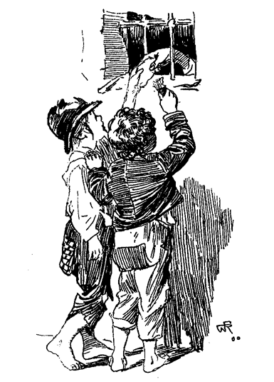Die Jungen thaten, was sie schon oft gethan hatten. Sie näherten sich dem Gitter, und steckten dem armen Potter etwas Tabak und Zündhölzchen zu. Es war zu ebener Erde, und keine Wache da.
Seine Dankesergießungen hatten ihnen bei ähnlichen Gelegenheiten immer wehe gethan. Heute fühlten sie die peinigendsten Gewissensbisse. Ihr ganzes Benehmen erschien ihnen feig und verräterisch, als Potter sagte: »Ihr seid gut gegen mich gewesen, besser als irgend jemand in der Stadt. Ich werde das niemals vergessen. Wie oft habe ich zu mir selbst gesagt: »Ich habe all diesen Jungen ihre Drachen und sonstige Spielzeuge geflickt, habe ihnen die besten Angelplätze gezeigt, und bin bei jeder Gelegenheit freundlich gegen sie gewesen – und nun der alte Muff in der Patsche sitzt, haben sie ihn alle vergessen! Nur Tom nicht, und Huck nicht! Nun, liebe Jungen, ich habe eine schreckliche That vollbracht, betrunken und meiner Sinne nicht mehr mächtig. – Anders kann ich es mir nicht erklären. Dafür muß ich baumeln, und von Rechts wegen. Es geschieht mir Recht, und es ist vielleicht besser so. Ich hoffe es wenigstens. Aber, sprechen wir nicht weiter darüber. Ich möchte euch nicht betrüben, aber das, was ich möchte, ist, euch zu bitten, niemals dem Laster des Trunkes zu fröhnen, und ihr werdet nie dahin kommen, wo ich jetzt bin. Tretet ein wenig zur Seite, daß ich euch besser sehen kann. Es ist mir ein großer Trost, diese lieben Gesichter zu betrachten, die allein zu mir gekommen sind, während alle anderen mich in meinen Nöten vergessen haben. Liebe, liebe Gesichter! Steigt einer auf den Rücken vom andern, daß ich sie berühren kann! – So! Gebt mir die Hände! Steckt sie durch die Gitter, die meinigen sind zu groß. Liebe Hände, kleine und schwache Hände! Aber sie haben Muff Potter Trost gebracht und würden ihm noch größere Hilfe bringen, wenn sie eben nicht zu schwach wären!«
Gebrochenen Herzens und elend ging Tom nach Hause. Fürchterliche Träume quälten ihn die ganze Nacht. Zwei Tage schlich Tom um den Gerichtshof. Ein fast unbesiegbarer Drang zog ihn in den Saal, und nur mit Aufgebot aller Kräfte konnte er ihn bemeistern. Huck litt in gleicher Weise. Sie vermieden sich sorgfältig, aber jeder, so oft er sich auch entfernte, wurde immer wieder auf die Stelle gezogen, wo Potters Schicksal sich entscheiden mußte. Toms Ohr lauschte begierig den Aeußerungen der aus dem Saal Kommenden – sie wurden immer trostloser, und Potters Sache stand schlimm. Gegen Ende des zweiten Tages war allgemein bekannt, daß die Angaben des Indianers Joe, nicht im mindesten angezweifelt, zu Recht bestanden, und was der Wahrspruch der Geschworenen sein würde, war jedem sonnenklar.
Tom blieb an jenem Abend lange aus, und stieg durchs Fenster ins Schlafzimmer. Seine Aufregung hatte den höchsten Grad erreicht. Es vergingen Stunden, bevor er den ersehnten Schlaf finden konnte. Die ganze Einwohnerschaft strömte am nächsten Morgen früh nach dem Gerichtshofe. Es war der Tag der Entscheidung. Beide Geschlechter waren im vollgepfropften Saale gleichmäßig vertreten. Nach längerem Warten trat die Jury in einer Reihe feierlich ein und nahm Platz. Kurz nachher folgte Potter in Ketten, blaß und furchtsam, und setzte sich auf die den Blicken aller ausgesetzte Bank. Jedes Auge stierte nach ihm. Nicht geringere Aufmerksamkeit erregte der Eintritt Joes. Seine Züge verrieten nicht die mindeste Aufregung. Eine kleine Pause folgte. Dann erschien der Oberrichter, und der Sheriff erklärte die Versammlung als eröffnet. Geflüster der Advokaten und Geraschel von Aktenstücken. Die Erwartung der Menge war gespannt.
Ein Zeuge wurde aufgerufen und gab an, in früher Morgenstunde nach der Mordnacht Muff Potter am Bache getroffen zu haben. Er habe sich da gewaschen, und dann weggeschlichen. Der Staatsanwalt richtete einige Fragen an ihn, und wandte sich dann an den Verteidiger:
»Haben Sie Fragen an den Zeugen zu stellen?«
»Keine!« antwortete dieser.
Potter hatte die Augen bei der Anfrage lebhaft aufgeschlagen. Bei der Antwort seines eigenen Verteidigers ließ er sie bestürzt sinken.
Der nächste Zeuge konstatierte den Fund des Messers neben dem Gemordeten.
»Fragen an den Zeugen?«
»Keine!« entgegnete wieder Muffs Beistand.
Ein dritter Zeuge schwor, das Messer oft in Potters Besitz gesehen zu haben.
»Gegenfragen an den Zeugen?«
»Keine!« war wieder die Antwort des Verteidigers.
Das Publikum wurde unruhig. Wie? wollte dieser Advokat das Leben seines Klienten wegwerfen, ohne ihn auch nur durch ein einziges Wort zu retten suchen?
Verschiedene andere Zeugen deponierten über Potters schuldbewußtes Gebahren bei seiner Konfrontation mit dem Leichnam. Auch sie wurden entlassen, ohne daß der Advokat für notwendig befunden hätte, eine Frage an sie zu stellen.
Alle Nebenumstände der Scene auf dem Friedhof, der ja alle angewohnt hatten, wurden durch glaubwürdige Zeugen aufs neue erhärtet.
Potters Anwalt hatte keine Gegenfrage, kein Kreuzverhör.
Unwilliges Murmeln vom ganzen Publikum und Ordnungsruf vom Präsidenten.
Der Staatsanwalt sprach:
»Das abscheuliche Verbrechen ist nun durch den Eid glaubhafter Bürger so über allen Zweifel festgestellt, daß wir uns jeder weiteren Debatte enthalten können.«
Muff Potter stieß einen tiefen Seufzer aus. Er verbarg sein Gesicht in die Hände, und wiegte sich leise hin und her. Ein peinliches Schweigen herrschte im Saal. Viele unter den Männern waren gerührt, und das Erbarmen der Frauen trat durch reichliche Thränen zu Tage.
Der Anwalt des Angeklagten stand auf:
»Meine Herren! Bei Eröffnung dieser Sitzung waren wir gewillt, die Verteidigung unseres Klienten auf das, durch übermäßiges Trinken bei ihm eingetretene Delirium zu stützen. Wir sind von diesem Vorsatze abgekommen, und werden auf andere Weise plädieren.«
Dann zum Gerichtsschreiber:
Uebermäßiges Erstaunen auf allen Gesichtern, das Tom Sawyers nicht ausgenommen. Alle Augen waren auf ihn geheftet, als er vortrat und auf der Zeugenbank Platz nahm. Der Junge sah zerstört genug aus. Ihm war sehr bange.
»Tom Sawyer, wo warst du am 17. Juni um Mitternacht?«
Tom warf einen verstohlenen Blick auf Indianer Joes eiserne Züge, und die Zunge versagte ihm den Dienst. Das Auditorium hielt den Atem an sich, aber die Worte wollten nicht kommen. Nach einigen Minuten hatte er jedoch wieder soviel Fassung erlangt, um verständlich sagen zu können:
»Auf dem Friedhofe!«
»Ein wenig lauter, wenn ich bitten darf! Sei nicht ängstlich! Du warst also ...«
»Auf dem Friedhofe!«
Ein verächtliches Lächeln zuckte durch Indianer Joes Züge.
»Warst du vielleicht in der Nähe von Roß Williams Grabe?«
»Ja, Herr!«
»Antworte frisch und ein wenig lauter! Wie nahe warst du am Grabe?«
»So nahe, als an Ihnen!«
»Warst du versteckt, oder nicht?«
»Versteckt!«
»Wo?«
»Hinter den hart am Grabe stehenden Ulmen!«
Der Indianer Joe schrak unmerklich zusammen.
»War jemand bei dir?«
»Ja, es war ...«
»Halt! Warte einen Augenblick! Es ist unnötig, den Namen deines Kameraden zu nennen. Er wird zu geeigneter Zeit gerufen werden!«
»Sprich frei, und sei nicht mißtrauisch! Die Wahrheit ist immer das Beste! Was hattest du dort?«
»Nur eine – tote – Katze!«
Heiterkeit des Publikums. Ordnungsruf des Präsidenten.
Das Skelett dieser Katze soll als Beweismittel beigebracht werden. Nun frisch, mein Junge, erzähle uns alles, was vorgefallen ist! Thue es in deiner eignen Weise, vergiß nichts, und fürchte dich nicht!«
Tom begann. Zuerst zögernd; als aber die lebhafteste Erinnerung des in jener Nacht Erlebten über ihn kam, flossen seine Worte immer leichter. Jeder Laut war verstummt. Nur seine Stimme erscholl durch das Haus. Mit offenem Munde und verhaltenem Atem lauschte die ganze Versammlung seinen Worten, und vernahm, Ort und Zeit vergessend, die schauerliche Mähr. Die Erregung war aufs höchste gestiegen als Tom fortfuhr:
»... Und als der Doktor mit dem Brett ausholte, und Muff Potter fiel, that der Indianer Joe einen Satz mit dem Messer und ...«
Krach! Mit Blitzesschnelle hatte sich das Halbblut einen Weg durch die Menge gebahnt, und war durch das zertrümmerte Fenster verschwunden.
Tom als Hahn im Korbe. – Tage voll Herrlichkeit und Nächte voll Schrecken. – Verfolgung des Indianers Joe.
Tom war wieder der strahlende Held geworden, der Liebling der Alten, und beneidet von den Jungen. Sein Name wurde selbst durch den Druck verewigt, denn die Dorfzeitung that seiner rühmlich Erwähnung. Nicht wenige waren überzeugt, daß er noch Präsident werde, wenn er dem Galgen entrinne.
Wie gewohnt schloß die unbeständige, gedankenlose Welt Muff Potter ins Herz, und hätschelte ihn nun ebenso sehr, wie sie ihn früher verurteilt hatte. Da aber diese Handlungsweise nur günstig beurteilt werden kann, wollen wir sie nicht bemängeln.
Die Tage verflossen Tom in Herrlichkeit; seine Nächte dagegen waren grauenhaft. Der Indianer Joe mit unheilverkündenden Augen erschien in all seinen Träumen. Nichts, auch die mächtigste Versuchung nicht, konnte ihn nach der Dämmerung aus dem Hause locken. Huckleberry befand sich in derselben Gemütsverfassung, denn Tom hatte am Abend vor dem entscheidenden Gerichtstage den Advokaten in die ganze Geschichte eingeweiht, und ihm natürlich Hucks Mitwissenschaft nicht vorenthalten. Obgleich die plötzliche Flucht des Mischlings ihn der Zeugenschaft enthoben, konnte er doch den Gedanken nicht los werden, es möchte seine Teilnahme gelegentlich ruchbar werden. Zwar hatte ihm der Anwalt Stillschweigen versprochen, aber was war das? Hatte nicht Tom, der doch durch den formellsten, schrecklichsten Doppeleid gebunden war, in seiner Gewissensangst nächtlicherweile dem Advokaten das ganze fürchterliche Geheimnis verraten! Hucks Vertrauen auf die Menschheit war nahezu erstorben.
Bei Tage erfreute Tom Potters grenzenlose Dankbarkeit – bei Nacht wünschte er, geschwiegen zu haben. Bald hoffte er, Joe würde den Nachstellungen entgehen, bald wieder, er möchte gefänglich eingebracht werden. Sicher war nur das, daß er nie wieder frei aufatmen könne, bis dieser Mann tot sei, und er den Kadaver mit eigenen Augen gesehen!
Die ganze Gegend war nach Joe abgesucht worden; man hatte Fanggelder ausgesetzt – der Indianer Joe entging allen Nachforschungen. Von St. Louis kam eines der allwissenden, Schrecken einflößenden Meerwunder, Detektive genannt, schlenderte umher und machte ein pfiffiges Gesicht. Nach einigem Kopfschütteln erreichte er endlich den erstaunlichen Erfolg, den man in der Kunstsprache dieser Sippe einen »Leitfaden« nennt. Da man aber einen Leitfaden nicht hängen kann, ging der »Detektive« nach Hause, und Tom fühlte sich unsicherer denn je.
Drei Tage gingen langsam dahin, und jeder nahm etwas von der drückenden Last mit sich.
Handelt von Königen und Diamanten. – Schatzgraben. – Tote Leute und Gespenster.
In dem Leben eines jeden rüstigen Jungen kommt die Zeit des unüberwindlichen Antriebes, nach verborgenen Schätzen zu graben. Auch Tom verfiel eines Tages in diese Wut. Er machte sich auf die Suche nach Joe Harper, fand ihn aber nicht. Ben Rogers war fischen gegangen. Da stieß er unversehens auf Huck Finn, den Rothändigen. Der war gerade recht. Tom führte ihn abseits und eröffnete ihm seine Pläne. Huck war nicht abgeneigt. Huck war immer zur Teilnahme an Unternehmungen jeder Art bereit, die Unterhaltung versprachen und kein Kapital erforderten, denn er hatte Ueberfluß an jener Sorte von Zeit, die kein Geld ist.
»Wo wollen wir graben?« fragte er.
»O, fast überall!«
»Wie, giebt es überall verborgene Schätze?«
»Das gerade nicht. Es müssen absonderliche Plätze sein, Huck; manchmal auf Inseln, oft in alten, vermoderten Kisten unter der Wurzel eines abgestorbenen Baumes, gerade da, wo um Mitternacht der Schatten hinfällt; am häufigsten aber unter den Bodendielen in von Gespenstern besuchten Häusern.«
»Wer versteckt die Schätze?«
»Räuber natürlich! Was glaubst du denn? Vielleicht Sonntagsschulsuperintendenten?«
»Was weiß ich? Wenn die Schätze aber mir gehörten, würde ich sie nicht verstecken. Ich würde sie ausgeben und mir wohl sein lassen.«
»Ich auch! Aber die Räuber thun das nicht. Sie pflegen immer ihre Schätze zu vergraben und sich weiter nicht darum zu kümmern.«
»Kommen sie denn nicht zurück, um sie auszugraben?«
»Nein! Sie möchten es wohl manchmal thun! Aber entweder vergessen sie das Merkzeichen, oder sterben darüber weg! Immer aber liegen die Schätze lange Jahre in der Erde und werden rostig. Dann findet jemand gelegentlich ein altes, vergilbtes Papier, das Anleitung zum Auffinden des Merkzeichens enthält. Dieses alte Papier muß aber wochenlang mit größter Aufmerksamkeit studiert werden, da es mit lauter Ziffern und Hieroglyphen beschrieben ist.«
»Hiero – was?«
»Mit Hieroglyphen. Weißt du, mit Zeichnungen und Schnörkeln, die aussehen, als bedeuteten sie gar nichts!«
»Hast du eins dieser alten Papiere, Tom?«
»Nein!«
»Hm, wie willst du denn die Merkzeichen finden?«
»Ich brauche sie nicht. Die Schätze liegen immer auf einer Insel, oder unter einem Baumstumpf mit ausgestrecktem Ast, oder in einem gespenstischen Hause. Nun, siehst du, wir haben Jacksons Insel ein wenig probiert und können zu jeder Zeit wieder hingehen; dann haben wir das alte Haus dort oben, in dem es umgeht, und an alten Baumstümpfen mit einem stehengebliebenen Ast fehlt es auch nicht. Es giebt ihrer die schwere Menge!«
»Liegen unter allen verborgene Schätze?«
»Dummes Zeug! Nein!«
»Wie kannst du denn den richtigen Ort finden?«
»Wir müssen unter allen suchen!«
»So? Da würde ja der ganze Sommer nicht hinreichen!«
»Und dann? Das wäre doch gewiß zu verschmerzen, wenn wir einen Kupfertopf voll verrosteter und verschimmelten Dollars, vielleicht hundert Stück davon, fänden, oder gar eine vermoderte, mit Diamanten angefüllte Kiste? Was würdest du dazu sagen?«
Hucks Augen glühten.
»Das wäre prächtig! Weißt du was? Laß mir die hundert Dollars und behalte die Diamanten für dich. Ich brauche sie nicht!«
»Gut, gut! Ich verachte die Diamanten nicht, wie du. Es giebt welche, die 20 Dollars wert sind, und auch der kleinste gilt noch immer sechs Dimes oder einen Dollar.«
»Wirklich?«
»Gewiß. Jedermann kann dir das sagen. Hast du noch keinen gesehen, Huck?«
»Nicht, daß ich wüßte.«
»O, die Könige besitzen ganze Lasten davon!«
»Ich habe keine Bekanntschaft mit Königen.«
»Glaub's wohl. Wenn du aber nach Europa kämest^ würdest du sie scharenweis herumhüpfen sehen.«
»Hüpfen sie?«
»Hüpfen? Dummkopf, nein!«
»Ach, hol's der Teufel, ich meinte nur, du würdest sie sehen, – nicht hüpfen sehen, natürlich, aber viele sehen, zerstreut, hier und dort. Unter andern auch den alten, krummbuckligen Richard.«
»Richard? Wie heißt er sonst noch?«
»Er hatte keinen andern Namen. Könige haben nur die ihnen beigelegten Namen.«
»Keine andern?«
»Nein!«
»Gut, Tom, wenn sie damit zufrieden sind, kann es mir Wurst sein. Ich für meinen Teil möchte nicht König sein mit einem entlehnten Namen, nicht mehr und nicht weniger als ein Nigger. – Aber sage 'mal, wo graben wir zuerst?«
»Ich weiß nicht recht. Wenn wir den alten Stumpf auf dem Hügel gegenüber Still-House in Angriff nähmen?«
»Mir recht!«
Sie verschafften sich eine schadhafte Schaufel und eine Haue, und machten sich auf den Weg zu dem drei Meilen entfernten Platze. Sie erreichten ihn erhitzt und atemlos und warfen sich im Schatten einer Ulme nieder um auszuruhen und ein Pfeifchen zu rauchen.
»Das gefällt mir!« sagte Tom.
»Mir auch!«
»Sage einmal, Huck, wenn wir hier einen Schatz fänden, was würdest du mit deinem Anteil thun?«
»O, ich würde jeden Tag eine Pastete mit einem Glas Sodawasser kaufen, und wenn ein Circus käme, bei keiner Vorstellung fehlen. Wäre das nicht schön?«
»Würdest du nichts beiseite legen?«
»Wozu?«
»Um in der Not davon leben zu können!«
»Jawohl, damit mein Vater, wenn er einmal zufällig vorbei käme, seine Klauen darauf legen könnte! Wie schnell würde er reinen Tisch machen, wenn ich ihm nicht zuvorkäme! Was thätest du mit deinem Anteil, Tom?«
»Ich würde mir eine neue Trommel kaufen, einen rechten Säbel und ein rotes Halstuch, und ein Weib nehmen.«
»Ein Weib nehmen?«
»Jawohl!«
»Tom, bist du bei Sinnen?«
»Warte nur! Du wirst es schon sehen!«
»Das ist das größte Narrenstück, das du begehen könntest! Betrachte meinen Vater und meine Mutter! Nichts als Händel und Streit vom Morgen bis zum Abend! Ich habe es nicht vergessen.«
»Was macht mir das? Meine Zukünftige wird nicht zanken und streiten!«
»Ach, Tom, sie sind alle gleich! Ueberlege dir's noch eine Weile. Ich rate dir zum Guten. Wie heißt die Dirne?«
»Es ist keine Dirne! Durchaus nicht. Es ist ein Mädchen!«
»Gleichviel. Einige sagen Mädchen, andere Dirnen, wie mir scheint!«
»Du sollst ihren Namen später erfahren – jetzt nicht!«
»Gut. Aber wenn du dich verheiratest, werde ich verlassener sein, denn je!«
»Nichts weniger. Ich werde dich zu mir nehmen. Aber genug hiervon. Ans Werk.«
Sie arbeiteten eine halbe Stunde lang emsig und unverdrossen, aber erfolglos. Eine weitere halbe Stunde brachte kein günstigeres Resultat. Huck sagte:
»Liegen die Schätze immer so tief, wie dieser da?«
»Manchmal – nicht immer. Im allgemeinen nicht. Wir müssen nicht die richtige Stelle getroffen haben!«
Sie wählten einen anderen Punkt, und begannen die Arbeit aufs neue. Nicht so frisch, wie beim ersten Versuch, machten sie, wenn auch langsam, doch einige Fortschritte. Stillschweigend hieben sie darauf los. Dann stützte sich Huck auf den Spaten und fragte, die perlenden Schweißtropfen mit dem Aermel abwischend:
»Wo fangen wir an, wenn wir hier fertig sind?«
»Vielleicht dort, auf Cardiff-Hill, hinter dem Hause der Witwe.«
»Das scheint mir ein günstiger Platz. Aber, wird uns die Witwe den gefundenen Schatz nicht abnehmen?«
»Sie? Sie möge es nur versuchen! Wer einen verborgenen Schatz findet, dem gehört er. Der Eigentümer des Bodens hat keinen Anspruch daraus!«
Das gefiel Huck. Sie arbeiteten weiter.
»Zum Henker, wir müssen wieder nicht an der richtigen Stelle sein!« meinte Huck nach einer Weile. »Was sagst du dazu?«
»Es ist wie verhext. Ich kann es nicht begreifen! Es müssen wieder unbedingt Hexen im Spiele sein!«
»Hole sie der Teufel! Aber du weißt ja, Tom, daß die Hexen bei Tage keine Gewalt haben!«
»Du hast Recht! Ich dachte nicht daran! Aber jetzt fällt mir ein, was wir vergessen haben! Sind wir nicht ein paar großartige Narren? Wir müssen da graben, wo der Schatten des stehengebliebenen Astes um Mitternacht hinfällt!«
»Zum Teufel! So war diese ganze Arbeit umsonst! Und wir müssen heute Nacht den langen Weg noch einmal machen. Kannst du von Hause fort?«
»Gewiß, auf alle Fälle! Wir müssen heute Nacht fertig werden. Diese Löcher werden bald bemerkt werden, jedermann wird sehen, um was es sich handelt, alles wird nachgraben wollen, und dann adieu, Schatz!«
»Gut, ich werde vorbeikommen und miauen.«
»Recht! Verstecken wir erst die Werkzeuge im Gebüsch!«
Gegen Mitternacht waren die Jungen auf dem Platz. Es war ein abgelegener Ort, noch unheimlicher durch die nahe Geisterstunde. Gespenster flüsterten im raschelnden Laube, Geister grinsten aus den dunkeln Verstecken, das verschwimmende Geheul eines Hundes drang aus der Ferne, und ward durch die dumpfen Grabestöne einer Eule beantwortet. Das Unheimliche der Scene lastete auf den Jungen; sie sprachen nur wenig.
Endlich glaubten sie die zwölfte Stunde gekommen, und begannen zu graben. Mit dem Vorrücken der Zeit wuchs ihre Hoffnung, und diese verdoppelte ihre Kräfte. Ihr Herz hüpfte bei einem jeden Streichs der auf einen harten Gegenstand fiel, um ebenso schnell wieder zu sinken, wenn nur eine Wurzel oder ein Stein zum Vorschein kam.
Zuletzt sagte Tom:
»Verlorene Mühe, Huck! Wir sind wieder nicht an der rechten Stelle!«
»Unmöglich! Wir haben ja den Schatten bis aufs Tüpfelchen abgemessen!«
»Ganz recht, aber darüber ist uns etwas anderes entgangen!«
»Was kann das sein?«
»Der richtige Zeitpunkt! Es war zu früh, oder zu spät!«
Huck warf seinen Spaten von sich.
»Das ist's! Das ist unser Unglück. Wir können den richtigen Zeitpunkt niemals treffen. Und dann ist diese ganze Geschichte so unheimlich, daß wir darauf verzichten müssen. Die schwarze Nacht, und die Hexen und Gespenster, die einen umschwirren! Es war mir während der ganzen Zeit, als stünde jemand hinter mir, und vor Grauen wagte ich nicht, mich umzusehen! Ein Schauer um den andern kroch mir über die Haut!«
»Es ging mir nicht viel besser, Huck! Weißt du, daß sie, wenn sie Schätze vergraben, gewöhnlich einen toten Mann mit begraben, der den Schatz hüten muß?«
»Herr Gott!«
»Ja, ja, so ist es! Ich habe nie etwas anderes gehört!«
»Tom, es mutet mich nicht sehr an, mit toten Leuten umzugehen! Davon kann nichts Gutes kommen!«
»Ich möchte sie auch nicht stören. Denke dir einmal, wenn dieser da plötzlich seinen Schädel herausstrecken und sprechen würde?«
»Höre auf, Tom! Es ist ja fürchterlich!«
»Jawohl, ist es so! Huck, mir ist gar nicht wohl zu Mute!«
»Sage, Tom, verlassen wir diese Stelle und beginnen wir anderswo!«
»Ganz meine Meinung!«
»Wo?«
»Im Hause, wo es umgeht,« sagte Tom nach längerem Besinnen. »Das ist der rechte Ort!«
»Zum Geier, Tom! Ich liebe die Häuser nicht, in denen es umgeht! Gespenster sind viel abscheulicher anzusehen, als tote Leute. Diese letzteren reden vielleicht, aber sie schleichen nicht im Totenhemde herum und gucken, wenn man gar nicht an sie denkt, einem plötzlich über die Schultern, und fletschen die Zähne, wie das eben Sitte bei Gespenstern ist. Das könnte ich nicht aushalten, Tom, und niemand – glaube ich!«
»Ja, Huck, du bedenkst aber nicht, daß sie nur nächtlicherweile ihren Spuk treiben. Sie werden uns am hellen Tage nicht hindern, dort zu graben!«
»Da hast du wieder recht! Indessen muß es dort auch bei Tage nicht geheuer sein, denn der Ort wird sowohl bei Tag als bei Nacht von jedermann gemieden!«
»Nun, das ist deshalb, weil die Leute eben nicht gern eine Stelle betreten, auf der ein Mord begangen wurde. Aber man hat niemals etwas Unrechtes um das Haus herum gesehen; bei Tage schon gar nicht, und Nachts nur einige an den Fenstern vorbeihüpfende, blaue Flämmchen – keine regelrechten Gespenster!«
»Alles recht, Tom, aber du darfst darauf wetten, daß, wo diese blauen Flämmchen sich zeigen, auch die Geister nicht ferne sind. Und das ist natürlich. Du weißt ja, daß niemand, als eben Geister, ihrer bedarf!«
»Das ist allerdings richtig! Aber, da sie nun einmal bei Tage nicht erscheinen, was haben wir uns vor ihnen zu fürchten?«
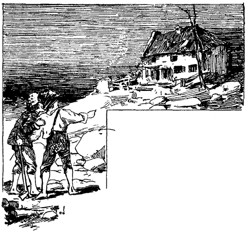»Nun gut! Abgemacht! Wir nehmen das gespenstische Haus in Angriff. Immerhin ist es ein gefährliches Wagnis!«
Sie waren inzwischen am Fuße des Hügels angekommen. Dort, inmitten des monderhellten Thales, stand das gespenstische Hans, einsam, verlassen, mit längst zerfallener Umzäunung, die Vortreppe mit wildwuchernden Ranken umzogen, mit eingefallenem Schornstein, öden Fensterhöhlen und eingedrücktem Firste. Die Jungen starrten einige Augenblicke hin, halb ungewiß, ob nicht eines der blauen Flämmchen vorüberhuschen würde; ihr Gespräch war zum Geflüster herabgesunken; dann einen weiten Bogen um das gefürchtete Haus beschreibend, kehrten sie durch das Gehölze der Rückseite von Cardiff Hill nach Hause zurück.
Das Gespensterhaus. – Schläfrige Gespenster. – Eine Goldkiste. – Schlimmes Pech!
Am folgenden Nachmittag hatten sich die beiden Jungen bei dem alten Baumstumpf eingefunden, um ihre dortgelassenen Grabgeräte abzuholen. Tom brannte vor Verlangen nach dem gespenstischen Hause – Huck war weniger eifrig und fragte plötzlich:
»Welchen Wochentag haben wir heute?«
Tom sann nach und fuhr lebhaft empor:
»Das ist mir nicht in den Sinn gekommen, Huck!«
»Mir ebenso wenig. Aber auf einmal fiel es mir siedend heiß ein. Es ist Freitag!«
»Verdammt! Vorsicht ist die Mutter der Weisheit, Huck! Es hätte uns schlimm gehen können, wenn wir an einem Freitag angefangen hätten.«
»Ergehen können? Sage lieber, es würde uns ergangen sein! Es mag glückliche Tage geben, aber der Freitag ist sicher nicht unter ihnen!«
»Jeder Narr weiß das. Ich glaube schwerlich, daß du das zuerst herausfandest, Huck!«
»Das habe ich auch nie behauptet, oder? Und dann handelt es sich nicht um Freitag allein. Vergangene Nacht hatte ich einen bösen Traum. Mir träumte von Ratten!«
»Träumtest du? Schlimmes Zeichen! Bissen sie sich miteinander herum?«
»Nein!«
»Das ist ein Glück! Wenn sie nicht miteinander kämpfen, weißt du, so hat das weiter nichts, als Verdruß zu bedeuten. Was wir dabei zu thun haben, ist, uns sorgfältig in acht zu nehmen, und nicht blindlings hineinzutappen. Schieben wir unser Unternehmen für heute auf. Laß uns ein Spiel machen. Kennst du Robin Hood, Huck?«
»Wer oder was ist Robin Hood?«
»Wie! Das war einer der größten Männer, die jemals in England gelebt haben, und der beste unter ihnen, und Räuber seines Zeichens!«
»Hurra! Ich wollte, ich wäre es! Wen beraubte er?«
»O, nur Polizeibeamte, Bischöfe, Geldprotzen, Könige und dergleichen. Aber niemals plagte er die Armen. Er liebte sie, und teilte brüderlich mit ihnen.«
»Das muß ein Kapitalkerl gewesen sein!«
»Du darfst darauf wetten, Huck. O, das war der edelste Mann, der jemals existierte! Von der Sorte giebt es keine mehr! Er konnte sich eine Hand auf den Rücken binden lassen und mit der andern allein auch den Stärksten überwinden; und wenn er seinen Eibenholzbolzen zur Hand nahm, durchbohrte er, Schuß für Schuß, ein zehn Cent-Stück auf anderthalb Meilen Distanz.«
»Was ist ein Eibenholzbolzen?«
»Weiß nicht! S'ist eben ein Bogen. Und wenn er die Münze nicht ins Centrum, sondern mehr gegen den Rand zu traf, saß er nieder und weinte – und fluchte. – Aber laß uns ihn spielen! Es ist eine noble Unterhaltung!«
»Einverstanden!«
Sie spielten den ganzen Nachmittag Robin Hood, warfen von Zeit zu Zeit einen begehrlichen Blick hinunter nach dem gespenstischen Hause, und teilten sich ihre Hoffnungen und Befürchtungen für den folgenden Tag mit. Als die Sonne sich dem Westen zuneigte, begaben sie sich auf den Rückweg durch die langen Schatten der Bäume und verloren sich bald im Gehölze von Kardiff-Hill.
Kurz nach Mittag des folgenden Tages waren sie wieder bei dem alten Baumstumpf. Sie rauchten ein Pfeifchen, plauderten im Schatten, und gruben noch ein bißchen in dem alten, aufgegebenen Loche. Nicht, weil sie von ihrer Mühe großen Erfolg erwarteten, nur, weil Tom meinte, es wäre nicht selten vorgekommen, daß ein beinahe erreichter Schatz aufgegeben und dann von dem Nächstkommenden ohne große Mühe gehoben worden sei. Das war nun freilich diesmal nicht der Fall, und somit schulterten sie ihre Geräte und verließen den Platz im Bewußtsein, nicht mit der Glücksgöttin gespielt, sondern alles pünktlich erfüllt zu haben, was zum Schatzgraben gehört.
Sie kamen bei dem Gespensterhause an. Es lag etwas so unheimlich Drückendes, so tief Beängstigendes in der schwülen Hitze, der trostlosen Einsamkeit des Platzes und im Greuel der Verwüstung des Gebäudes, daß sie nicht wagten, es zu betreten. Sie schlichen furchtsam näher und warfen einen scheuen Blick durch das Thor. Sie sahen einen mit Gestrüpp überwucherten, unbedielten Raum; eine alte Feuerstelle, leere Fensteröffnungen und eine zerfallene Treppe. Hier und da, von den Wänden, und überall, wo das Auge hinsah, hingen zerrissene Spinnengewebe. Endlich wagten sie einzutreten. Leise flüsternd, mit fliegenden Pulsen, Auge und Ohr auf der Lauer, waren all ihre Muskeln gespannt, um beim geringsten Geräusch fliehen zu können.
Vertrauter mit der Scene geworden, verminderte sich ihre Furcht, und sie unterwarfen die Stelle einem genauen Augenschein, über ihre eigene Kühnheit erstaunt. Dann wunderte es sie, wie es im oberen Stockwerk aussähe. Sie schnitten sich zwar möglicherweise durch den Besuch desselben den Rückzug ab, aber ihre Neugierde war zu lebhaft, sie mußten es auf alle Gefahr hin wagen. Sie warfen ihre Gerätschaften in einen Winkel und schritten die Treppe hinauf. Sie stießen auf die gleichen Spuren des Zerfalls. In einer Ecke befand sich ein Verschlag, der Geheimnisse zu bergen schien. Sie sahen sich getäuscht, er war leer.
Ihre anfängliche Furcht hatte inzwischen der vollsten Zuversicht Platz gemacht, sie waren eben im Begriff, ihre Geräte zu holen, als –
»St!« machte Tom.
»Was giebt's?« wisperte Huck totenbleich.
»St! Dort! Hörst du nicht?«
»Doch! Ach Gott! Fort von hier!«
»Ruhig! Rühre dich nicht! Sie kommen gerade gegen die Thüre!«
Die Jungen streckten sich auf die Dielen nieder und sahen zitternd vor banger Erwartung durch die in den Brettern befindlichen Astlöcher.
»Sie bleiben stehen! ... Nein sie kommen! Da sind sie! Keinen Laut mehr, Huck! Ach Gott, wenn ich nur draußen wäre!«
Zwei Männer traten ein.
»Der eine ist der taubstumme Spanier, der kürzlich einigemal sich in der Stadt sehen ließ! Den anderen kenne ich nicht!« sagte jeder der beiden Jungen zu sich selbst.
Der andere war eine zerlumpte, ungekämmte Figur, mit nichts weniger als ansprechenden Zügen. Der Spanier war in ein Separé gehüllt, trug einen starken, weißen Backenbart, grüne Augengläser, und lange weiße Haare quollen unter seinem Sombrero hervor.
Beim Eintritt sprach der »andere« leise, aber eifrig; sie setzten sich auf den Boden, das Gesicht der Thüre zugewandt, und der Sprecher fuhr fort. Nach und nach setzte er die anfänglich beobachtete Vorsicht beiseite, und seine Worte wurden verständlich.
»Nein,« sagte er, »ich habe mir alles wohl überlegt, aber ich will nichts damit zu thun haben. Es ist zu gefährlich!«
»Gefährlich!« grunzte der »taubstumme« Spanier zur großen Ueberraschung der Knaben. »Milchsuppe!«
Die Jungen erschraken zum Tode. Das war die Stimme des Indianer Joe. – Eine Pause folgte Dann sagte Indianer Joe:
»War denn der Streich, den wir da unten verübten, weniger gefährlich? Und doch hatte er keine Folgen!«
»Das ist etwas Anderes! So weit oben am Flusse, und weit und breit kein anderes Haus. Es wird nie herauskommen, daß wir den Versuch machten, und umso weniger, als er uns ja nicht gelang!«
»Gut! Aber giebt es etwas Gefährlicheres, als am hellen Tage hieher zu kommen? Würde nicht jeder Verdacht schöpfen, der uns sähe?«
»Weiß wohl! Aber nach jenem Narrenstreich erschien mir dieser Platz als der geeignetste für eine Zusammenkunft Ich muß fort aus dieser Baracke, und hätte sie schon gestern verlassen sollen. Ich durfte es aber nicht wagen. Diese höllischen Jungen mit ihren Spielen, gerade gegenüber, auf dem Hügel dort!«
Die »höllischen Jungen« erzitterten aufs neue unter dem Eindruck dieser Aeußerung, und priesen sich glücklich, daß sie sich noch rechtzeitig auf den Freitag erinnert und ihr Unternehmen um einen Tag aufgeschoben hatten. Sie wünschten herzlich, daß aus diesem Tag ein Jahr geworden wäre.
Die beiden Männer brachten einige Lebensmittel zum Vorschein und aßen, in tiefes Schweigen und Nachdenken versunken.
Joe unterbrach es endlich: »Höre, alter Junge, du gehst hinauf am Flusse in deine Heimat und wartest dort, bis ich dir ein Zeichen gebe. Ich inzwischen, werde mich noch einmal in die Stadt wagen, um die Gelegenheit auszukundschaften. Sind die Anzeichen günstig, so führen wir den ›gefährlichen‹ Streich aus, und dann auf nach Texas. Wir werden uns kein Gras unter den Füßen wachsen lassen!«
Das klang befriedigend. Die Unterhaltung fiel, Joe gähnte und sagte: »Ich falle um vor Schlaf, die Reihe ist an dir, Wache zu halten!« – Er legte sich und fing bald zu schnarchen an. Sein Kamerad stieß ihn einigemal an, und der Schlaf wurde geräuschloser. Nun begann der Wachehabende zu nicken, die Lider fielen über die Augen, und beide schliefen um die Wette. Die Knaben holten tief Atem.
»Jetzt fort! Komm!« flüsterte Tom.
»Ich kann nicht! Wenn sie erwachten, die bloße Angst würde mich töten!«
Tom drang in ihn. Huck weigerte sich. Zuletzt erhob sich Tom allein, langsam und vorsichtig, und wollte fort. Aber sein erster Tritt hatte ein so lautes Krachen des alten Bodens zur Folge, daß er keinen zweiten versuchte, und tödlich erschrocken niedersank. So lagen sie, und zählten die Sekunden, bis sie ihnen zur Ewigkeit geworden zu sein schienen. Mit großer Befriedigung bemerkten sie endlich, daß der Tag sich neigte.
Das Schnarchduett verwandelte sich in ein Solo. Der Indianer Joe erhob sich, stierte umher und seine Züge verzerrten sich zu einem unheimlichen Lachen, als er seinen Gefährten neben sich schlafen sah. Er stieß ihn mit dem Fuße und sagte:
»He da! Du bist mir ein schöner Wächter, du! Thut aber nichts. Es ist inzwischen nichts vorgefallen!«
»Wie? Habe ich geschlafen?«
»Ein bißchen, ja! Es ist nahezu Zeit, von hier aufzubrechen. Was thun wir mit unserm kleinen, erbeuteten Schatze?«
»Weiß nicht recht! Es wird wohl am geratensten sein ihn, wie gewohnt, hier zu lassen, bis wir südwärts ziehen. Sechshundertundfünfzig Dollars fallen ins Gewicht!«
»Nun gut, wir können ja immer noch einmal herkommen!«
»Ja, aber dann bei Nacht, wie früher! Es ist besser!«
»Jawohl, aber es kann lange anstehen, bis ich die günstige Gelegenheit zu dem beabsichtigten Handstreich erspähe; inzwischen kann sich manches ereignen, und das Geld ist nicht sicher genug versteckt. Laß es uns regelrecht und tief einscharren.«
»Das ist ein kluger Einfall!« sagte der andere, schritt durch das Gemach, entfernte einige der hintersten Steine des Feuerherdes und brachte einen angenehm klingenden Sack zum Vorschein. Er nahm zwanzig bis dreißig Dollars für sich, und ebensoviel für Joe daraus, und reichte ihn dem Indianer Joe, der emsig beschäftigt war, in der Ecke mit seinem Bowie-Messer ein Loch zu graben.
Die Jungen hatten über diesen Vorgängen all ihre Furcht, ihr ganzes Elend vergessen. Nie geahntes Glück! Sechshundert Dollars waren Geldes genug, um ein halb Dutzend Jungen zu bereichern. Das war das wahre Schatzgraben mit den prächtigsten Aussichten auf Erfolg! Da war keine Unsicherheit, keine Ungewißheit mehr. Da lag der Schatz! Sie stießen sich wiederholt leicht mit den Ellbogen an und verstanden die stumme Frage:
»Reut es dich noch, hierher gekommen zu sein?«
Joes Messer stieß auf etwas Hartes.
»Hallo!« rief er.
»Was giebt's?« fragte sein Kamerad.
»Ein halbverfaultes Brett – nein, eine Kiste! hier, hilf ein wenig; wir werden bald wissen, was es ist! Halt, da hab' ich ein Loch gebrochen!« Er griff hinein und sagte:
»Mann, das ist Geld!«
Sie untersuchten die Hand voll Münzen. Es war Geld. Die Männer waren nicht weniger überrascht und entzückt, als die Jungen oben. Joes Kamerad sagte:
»Das werden wir bald haben! Oben in der Ecke, dem Herde gegenüber, sah ich noch kürzlich eine alte, rostige Spitzhaue. Er rannte die Treppe hinauf, und brachte die Haue und die Schaufel der Knaben. Joe ergriff die Haue, betrachtete sie aufmerksam, brummte etwas in den Bart, und machte kräftigen Gebrauch von ihr. Die Kiste war schnell ausgegraben. Sie war nicht sehr groß, in Eisen gebunden, und mußte vor Jahren sehr stark gewesen sein, ehe der Zahn der Zeit an ihr genagt. Die Männer betrachteten ihren Fund in lautlosem Entzücken.
»Kamerad, hier liegen tausende von Dollars. Ich habe immer gehört, daß Murcel einen ganzen Sommer lang die Gegend mit seiner Bande unsicher gemacht habe!«
»Ich auch, und hier haben wir den Beweis dafür!«
»Nun hast du wohl nicht nötig, deinen Handstreich auszuführen?«
Der Mischling runzelte die Stirne:
»Du kennst mich schlecht! Wenigstens kennst du nicht die Triebfeder meines Vorhabens. Es ist nicht sowohl die Begierde, Beute zu machen, als die der Rache!« und ein Unheil verkündendes Feuer blitzte in seinen Augen auf. »Ich bedarf dazu deiner Hilfe. Wenn meine Rache gesättigt ist, aber erst dann, fort nach Texas! Inzwischen gehst du zu deiner Frau und deinen Kindern, und wartest ruhig ab, bis ich etwas von mir hören lasse!«
»Nun gut, wenn's nicht anders sein kann. Aber was fangen wir mit dem Golde an? Es wieder einscharren?«
»Ja!« (Ueberschwängliches Entzücken oben.)
»Doch nein, beim großen Sachem! Nein! (Ungeheure Bestürzung oben.) Ich hätte es beinahe vergessen. An dieser Spitzhacke war frische Erde. (Entsetzen ergriff die Knaben.) »Wozu eine Haue und eine Schaufel hier, an diesem verlassenen Ort? Wer brachte sie her? Wo sind die, die sie brachten? Hast du jemand gehört? jemand gesehen? Was? Den Schatz wieder einscharren, damit die Nächstkommenden den aufgewühlten Boden sehen? Das würde noch fehlen! Nein, nein, so dumm bin ich nicht! Wir bringen den Schatz in mein Versteck!«
»Recht so! Das hätte mir schon vorher einfallen sollen. Du meinst doch Nummer eins?«
»Nein, Nummer zwei! Unter dem Kreuz! Der andere Platz ist zu zugänglich und nicht abgelegen genug!«
»Gut! Es ist nun finster genug, um von hier aufbrechen zu können.«
Der Indianer Joe erhob sich, und spähte vorsichtig durch alle Fensteröffnungen.
»Wer nur diese Geräte hierher gebracht haben mag? Was meinst du? Ist vielleicht jemand oben?«
Der Atem stockte den Jungen. Der Indianer Joe legte die Hand an den Messergriff, stand einen Augenblick zögernd, und wandte sich dann gegen die Treppe. Die Knaben dachten an den Verschlag, waren aber so kraftlos vor Schrecken, daß sie sich nicht zu rühren vermochten. Die Treppe ächzte unter den sich nähernden Schritten – die helle Verzweiflung stachelte die Jungen auf – eben wollten sie sich in den Verschlag flüchten – da brach eine der morschen Treppenstufen, und Joe lag auf dem Rücken am Fuße derselben. Unter Fluchen und Pusten raffte er sich auf.
»Geschieht dir recht! Was soll das dumme Zeug! Ist jemand oben, so bleibe er oben, was macht uns das? Will er aber herunterspringen und in Unannehmlichkeiten geraten, so mag er es thun! In einigen Minuten ist es dunkle Nacht, und ich möchte keinem raten, uns zu folgen. Gewiß hat der, der diese Dinge hierher brachte, uns erblickt, für Gespenster oder Teufel gehalten, ist in der Angst davongelaufen und läuft noch!«
Joe murrte, stimmte aber endlich seinem Gefährten bei, die letzte Tageshelle zu benützen, um sich zum Abmarsch fertig zu machen. Kurz nachher schlüpften sie im tiefen Zwielicht aus dem Hause, und wandten sich mit ihrer kostbaren Kiste gegen den Fluß.
Tom und Huck erhoben sich, schwach aber erleichtert, und schauten ihnen durch die Risse zwischen den Balken des Hauses nach. Ihnen folgen? Sie nicht! Sie waren zufrieden, als sie mit ungebrochenen Hälsen zu ebener Erde angekommen waren, und schlugen ungesäumt den Weg nach Hause auf dem über den Hügel führenden Fußpfade ein. Das Gespräch war nicht sehr lebhaft. Keiner hatte Lust dazu. Sie hatten genug zu thun, sich selbst zu hassen – und den Gedanken zu hassen, der sie zum Mitnehmen der Hacke und Spaten veranlaßt. Ohne diese Werkzeuge hätte der Indianer Joe niemals Verdacht geschöpft. Er würde das Silber mit dem Golde dort im Versteck gelassen, bis seine Rache gesättigt gewesen wäre, und dann das Nachsehen gehabt haben. Welch Unglück, diese Gerätschaften hergeschleppt zu haben! – Sie beschlossen, dem Indianer Joe aufzulauern, wenn er in die Stadt käme, um die Gelegenheit zu seiner Rache zu erspähen, und ihm bis Nummer zwei nachzuschleichen, wo das auch immer sein möge. Da, bei dem Wort »Rache« durchzuckte ein schrecklicher Gedanke Toms Gehirn. Er wandte sich an Huck:
»Was meinst du, Huck, wenn er uns suchte?«
Huck fiel vor Schrecken fast um.
»Schweig! Ich bitte dich!«
Sie besprachen diese Möglichkeit nach allen Seiten und kamen zum Schlüsse, daß Joe auch jemand anderes, oder im schlimmsten Falle, Tom allein meinen könne, da nur dieser gegen ihn gezeugt habe.
Tom fand nur geringen Trost in diesem Argumente, und hätte vorgezogen, einen Mitbeteiligten zu haben.
Zweifel zu haben. – Die jungen Detektiven
Die Abenteuer des verflossenen Tages spiegelten sich in Toms quälenden Träumen wieder. Viermal hatte er die Hand auf jenen reichen Schatz gelegt, und viermal fand er sie beim Erwachen leer, und sein Unglück bestätigt. Als er so in der Morgenfrühe dalag und die gestrigen Ereignisse im Gedächtnis an sich vorüberziehen ließ, wollte es ihm scheinen, als wären sie halb verwischt, wie vor langer, langer Zeit oder in einer anderen Welt vorgekommen. Dann hielt er das ganze große Abenteuer für einen neckenden Traum. In dieser Meinung bestärkte ihn noch besonders die große Menge Goldes, die er gesehen. So viel Geld konnte es ja gar nicht geben! Gleich anderen Jungen hatte er früher nie mehr als fünfzig Dollars auf einem Haufen beisammen gesehen, und die Hunderte und Tausende, von denen er reden hörte, waren ihm nur als imaginäre Zahlen erschienen, und er hatte nie geglaubt, daß jemand in Wirklichkeit und in geprägtem Gelde eine so ungeheure Summe, wie hundert Dollars, besitze. Wenn er von seinen Ideen über verborgene Schätze hätte Rechenschaft geben müssen, würden sie über eine Hand voll reeller Zehnteldollars und einen Scheffel glänzender, ungreifbarer Dollars nicht hinausgegangen sein.
Je länger er jedoch über die Sache nachdachte, desto lebhafter wurde seine Ueberzeugung, nicht geträumt zu haben. Dieser Zweifel mußte gehoben werden. Er frühstückte hastig und machte sich auf den Weg zu Huck.
Huck saß auf dem Schanddeck eines Flachbootes und baumelte nachlässig mit den Füßen im Wasser. Er sah sehr melancholisch aus. Tom überließ Huck die Eröffnung des Gesprächs. That er der Erlebnisse des vorigen Tages keine Erwähnung, so war alles nur Traum gewesen.
»Hallo, Huck!«
»Selbst Hallo!«
Eine Minute Schweigen.
»Tom, wenn wir die verdammten Geräte nicht mitgenommen hätten, so hätten wir jetzt den Schatz. Ist es nicht zum Verzweifeln?«
»Also war es kein Traum? – Kein Traum? Fast bedaure ich, daß es keiner war. Gewiß, Huck!«
»Was war kein Traum?«
»O, das Ding von gestern! Ich glaubte halb, geträumt zu haben!«
»Traum! Wenn jene Treppe nicht gebrochen wäre, würdest du die Wirkung fühlbar genug empfunden haben! Hat sich was von Träumen! Ich habe Träume genug gehabt die ganze Nacht hindurch, mit jenem pflasteraugigen, spanischen Teufel in ihnen! Möge er krepieren!«
»Nein! Nicht krepieren! Wir müssen ihn suchen und finden, und mit ihm den Schatz!«
»Wir werden ihn niemals finden, Tom! Eine so günstige Gelegenheit, einen Schatz zu heben, wie die verlorene, bietet sich nicht zum zweitenmal. Dann habe ich auch kein großes Verlangen, den Spanier wiederzusehen!«
»Ich auch nicht! Und doch müssen wir ihn suchen, und seine Nummer zwei aufspüren!«
»Nummer zwei! Richtig! Das ist's! Ich habe schon darüber nachgedacht, kann es mir aber nicht ganz zurechtlegen! Was hältst du davon?«
»Ich weiß nicht! Die Sache ist zu schwierig. Vielleicht, eine Hausnummer. Was meinst du, Huck?«
»Wär's möglich? ... Aber nein, die Häuser haben ja gar keine Nummern in diesem kleinen Nest! Jedenfalls ist es nicht hier!«
»Du magst recht haben! Laß mich nachdenken. Jetzt hab' ich's: Es ist die Nummer eines Zimmers, weißt du, wie in den Wirtshäusern!«
»Getroffen! Und wir können uns leicht überzeugen. Es sind nur zwei Wirtshäuser hier!«
»So warte hier, Huck, bis ich wiederkomme!«
Tom war weg. Er wollte nicht in Hucks Gesellschaft öffentlich gesehen werden. Er blieb eine halbe Stunde fort. Im bessern Wirtshaus hatte ein junger Advokat das Zimmer Nummer zwei inne und schon längere Zeit bewohnt. Damit war es also nichts. Anders verhielt es sich in der geringeren Taverne. Dort barg die Nummer zwei ein Geheimnis. Vom jungen Sohne des Wirts erfuhr Tom, daß das Zimmer immer sorgfältig verschlossen sei, und daß er noch niemals jemand hineingehen oder herauskommen gesehen habe, als nächtlicherweile. Gründe für diesen Umstand wußte er keine. Auch seine Neugierde war schon früher rege geworden, er hatte sich aber mit dem Gedanken abgefunden, es müsse in dem Zimmer spuken. In der vergangenen Nacht hatte er Licht darin bemerkt.
»So, Huck, das ist's, was ich herausgefunden habe. Ich denke, das ist die richtige Nummer zwei, auf die wir aus sind!«
»Denke ich auch! Was nun thun?«
»Laß mich nachsinnen!«
Tom sann eine gute Weile, dann sagte er:
»Höre zu! Die Hinterthüre dieser Nummer zwei führt in den kleinen engen Gang zwischen der Taverne und jenem alten Rattennest, dem Ziegelmagazin. Nun suchst du zusammen, was du an Thürschlüsseln nur finden kannst, und ich werde diejenigen der Tante wegstibitzen. In der ersten finstern Nacht werden wir sie dann probieren. Und vergiß ja nicht, ein wachsames Auge auf den Indianer Joe zu richten, da er doch in die Stadt kommen will, wie du weißt. Wenn du ihn siehst, so folgst du ihm, und wenn er nicht nach der Nummer zwei geht, so ist das nicht der richtige Ort.«
»Um Gott! Ich habe durchaus keine Lust, ihm zu folgen!«
»Er wird sicher nur nachts kommen, und dich nicht sehen, oder wenn auch, nichts argwöhnen.«
»Nun, wenn es ordentlich finster ist, kann ich es wohl wagen! Ich weiß nicht recht! Aber versuchen werde ich's!«
»Ich, Huck, ich werde es ganz gewiß thun! Kann er nicht auf seine Rache verzichten, oder keine günstige Gelegenheit dazu gefunden haben; und darum geradezu auf den Schatz losgehen?«
»Das ist sehr möglich, Tom, und sehr wahrscheinlich. Meiner Treu, ich werde ihm folgen, und er soll mir nicht entgehen!«
»So, das nenne ich reden! Wanke nicht, Huck! Ich bleibe fest!«
Ein Angriff auf Nummer Zwei. – Huck steht Schildwache.
Mit Einbruch der Nacht waren die Jungen bereit. Bis 9 Uhr strichen sie um die Gegend herum, der eine das Gäßchen aus der Ferne beobachtend, der andere die Wirtshausthüre im Auge. Niemand ließ sich im Gäßchen blicken. Niemand vom Aussehen des Spaniers betrat oder verließ das Wirtshaus. Die Nacht versprach, günstig zu werden; Tom ging nach Hause. Wenn tiefe Finsternis eingetreten wäre, sollte Huck kommen und miauen; Tom würde ihm folgen, und die Schlüssel probieren. Die Nacht blieb jedoch hell. Huck verließ seinen Wachposten gegen Mitternacht und schlüpfte in sein Bett, ein leeres Zuckerfaß.
Nicht besseren Erfolg hatten die Jungen Dienstag nachts. Donnerstag schien aber günstiger, und Tom machte sich beizeiten auf den Weg, mit seiner Tante alten Laterne, und einem Tuch, um sie zu verhüllen. Er verbarg sie in Hucks Faß. Die Wache begann.
Um 11 Uhr wurde die Thür der Taverne verschlossen und die Lichter gelöscht. Kein Spanier hatte sich gezeigt, kein Fuß das Gäßchen betreten. Alles hatte den günstigsten Anschein. Schwarze Finsternis überall und tiefe Stille, nur hin und wieder von entferntem Donner unterbrochen.
Tom ergriff die Laterne, zündete sie im Schutze des Fasses an und umwickelte sie sorgfältig mit dem mitgebrachten Tuche. Dann schlichen sich die beiden Abenteurer in die Nähe der Taverne. Huck hielt Wache, und Tom tastete seinen Weg in das Gäßchen. Hierauf folgte langes, gespanntes Warten, das auf Huck lastete wie ein Berg. Er wünschte, nur einen Schimmer der Laterne zu sehen, um versichert zu sein, daß Tom noch lebe. Es schien ihm eine Ewigkeit, seit Tom verschwunden war. Vielleicht war er ohnmächtig geworden, vielleicht war er tot – sein Herz hatte in der fürchterlichen Angst und Aufregung zu schlagen aufgehört. In seiner Unruhe kam Huck dem Gäßchen immer näher, immer höher stieg seine Furcht vor allerlei möglichen, schrecklichen Ereignissen. Seine Haare sträubten sich, sein Atem stockte. Plötzlich erhellte Lichtschein das Dunkel. Tom sauste an ihm vorüber und rief: »Renne! Es gilt dein Leben!«
Er brauchte seinen Ruf nicht zu wiederholen. Huck gab Pech mit der Geschwindigkeit von dreißig bis vierzig Meilen auf die Stunde. Mit rasender Eile stürmten die Jungen vorwärts, ohne anzuhalten, bis sie in einem alten Schlachthause am unteren Ende der Stadt Zuflucht gefunden hatten. Kaum hatten sie es betreten, so brach der Sturm los, und der Regen floß in Strömen.
Kaum war Tom wieder zu Atem gekommen, so hub er an:
»Huck, es war schrecklich! Ich probierte zwei Schlüssel so leise und vorsichtig als möglich; sie knarrten aber so stark in dem alten Schlosse, daß ich vor Angst kaum atmen konnte. Und dann wollten sie sich nicht umdrehen lassen. Unabsichtlich faßte ich die Klinke, und siehe da! die Thüre ging auf! Sie war gar nicht verschlossen. Ich schritt rasch hinein, nahm das Tuch von der Laterne und – Geist des großen Cäsar!«
»Was sahst du, Tom?«
»Ach, Huck! fast hätte ich den Indianer Joe auf die Hand getreten!«
»Nicht doch!«
»Ganz gewiß! Da lag er der Länge nach, mit ausgestreckten Armen und seinen bepflasterten Augen auf dem Boden!«
»Gerechter Gott! Was thatest du dann? Erwachte er nicht?«
»Nein, er rührte sich nicht. Wahrscheinlich war er betrunken. Ich nahm mir eben nur Zeit, um das Tuch aufzuraffen, und fort gings!«
»Ich hätte das Tuch sicher liegen lassen!«
»Ich nicht! Da wäre ich schön bei Tante angekommen!«
»Hast du die Kiste gesehen, Tom?«
»Ich hatte keine Zeit dazu. Ich habe sie nicht gesehen und auch das Kreuz nicht. Ich habe nur eine Flasche und einen zinnernen Becher neben Joe auf dem Boden liegen sehen, und dann noch zwei Fäßchen und eine Menge Flaschen. Merkst du nun, was es mit dem Spuk in diesem Zimmer für eine Bewandtnis hat?«
»Nein, Tom! Was ist's?«
»Es ist der Whisky, der darin spukt! Wahrscheinlich haben alle Temperenztavernen Räume, in denen Gespenster dieser Art umgehen!«
»Du kannst recht haben, Tom! Wer hätte das gedacht! Aber, was meinst du? Wäre das nicht die schönste Gelegenheit, in den Besitz der Kiste zu gelangen, so lange Joe noch betrunken ist?«
»Gewiß! Geh, hole sie!« – Huck schauderte.
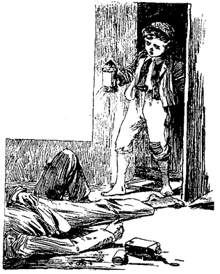»Es möchte doch zu gefährlich sein!«
»Jawohl. Wenn mehr als eine leere Flasche neben Joe gelegen hätte, wenn es ihrer drei gewesen wären, so wüßte ich, daß er genug hat und würde es wagen. So aber nicht!«
Es folgte eine lange Pause. Endlich sagte Tom:
»Höre, Huck, alle unsere Versuche werden zu nichts führen, solange wir nicht sicher wissen, daß Joe ausgegangen ist. Wenn wir aber allnächtlich Wache halten, müssen wir ihn früher oder später ausgehen sehen, und dann greifen wir schnell zu.«
»Einverstanden! Ich werde die ganze Nacht wachen, und werde es jede Nacht thun, wenn du das Uebrige übernehmen willst!«
»Das will ich! Alles, was du zu thun hast, ist, rasch durch Hooper-Street vorbeizukommen und zu miauen, oder wenn ich schlafen sollte, eine Hand voll Kies an die Fensterscheiben zu werfen. Das wird mich ermuntern!«
»Abgemacht!«
»Nun, Huck, der Sturm ist vorüber, und ich muß nach Hause. In einigen Stunden bricht der Tag an. Willst du zurückgehen und bis dahin wachen?«
»Ich versprach es, Tom, und will mein Wort halten! Ich will ein ganzes Jahr um diese Taverne spuken! Bei Tag werde ich schlafen, und bei Nacht Wache halten!«
»Das ist recht. Wo wirst du schlafen?«
»Auf Ben Rogers Heuboden. Er erlaubte mir das, und auch seines Vaters Nigger hat nichts dagegen. Dafür hole ich Wasser für Onkel Jake, so oft er will, und er giebt mir immer etwas zu essen, wenn er etwas übrig hat und ich ihn darum bitte. Das ist ein braver, guter Nigger, Tom! Er mag mich wohl leiden, weil ich ihn nicht von oben herab behandle und meine, ich sei 'was Besseres als er, wie die andern Weißen! Ich habe mich manchmal soweit herabgelassen, an demselben Tische mit ihm zu sitzen und mit ihm aus derselben Schüssel zu essen! Du mußt es aber nicht weiter sagen! Was thut man nicht, wenn man hungrig ist!«
»Gut also! Solange ich dich nicht brauche, kannst du den ganzen Tag ruhig schlafen. Ich werde dich nicht stören. So oft du aber nachts etwas bemerkst, so kommst du schnell und miaust! Gute Wacht!«
Das Pick-Nick. – Huck auf des Indianer Joes Fährte. – Die »Rache«. – Hilfe für die Witwe.
Eine frohe Botschaft begrüßte Tom beim Erwachen. Richter Thatcher mit Familie war tags zuvor angekommen. Der Indianer Joe, der Schatz – alles trat in den Hintergrund, und Becky war die Parole.
Er sah sie beim Spiel mit den Mitschülern, und genoß die Freude des Haschens, Versteckens, Blindekuhspielens, nach Herzenslust. Der Tag schloß mit einer weiteren frohen Ueberraschung. Becky hatte ihre Mutter so lange mit Bitten gequält, bis diese den folgenden Tag für das längst erwartete Picknick bestimmte. Beckys Freude war grenzenlos, und die Toms nicht minder. Die Einladungen wurden versandt, und das junge Volk hatte alle Hände voll mit den Zurüstungen zu dem vielversprechenden Feste zu thun. Tom lag die halbe Nacht schlaflos mit offenem Ohr. Jeden Augenblick erwartete er, das Miauen Hucks zu vernehmen. Er hätte so gern Becky und alle Teilnehmer am Picknick durch den Anblick des erbeuteten Schatzes überrascht! Aber die Nacht verstrich ohne das ersehnte Signal.
Gegen zehn oder elf Uhr am nächsten Morgen fand sich eine fröhliche, jubelnde, jugendliche Gesellschaft bei Richter Thatchers ein. Alles war bereit zum Ausflug. Damals enthielten sich ältere Personen, die jugendliche Fröhlichkeit bei solchen Anlässen durch ihre Gegenwart zu stören; man betrachtete die Kinder unter der Führung einiger Damen von 18 Jahren und einiger etwas älterer junger Herren als hinlänglich sicher. Die alte Dampffähre wurde für diesen Tag gemietet, und die frohe Schar zog durch die Hauptstraße, beladen mit Proviantkörben. Sid war krank und konnte nicht mitmachen; Mary blieb als Pflegerin bei ihm zurück. Die letzte Ermahnung der Mutter Beckys an diese war: »Ihr werdet wohl lange ausbleiben. Vielleicht würdest du gut thun, die Nacht bei einer deiner in der Nähe des Landungsplatzes wohnenden Freundinnen zuzubringen, mein Kind!«
»So will ich bei Susy Harper bleiben, Mama!«
»Gut. Und führe dich ordentlich auf und sei niemand im Wege!«
Auf dem Gang zum Dampfboot näherte sich Tom Becky und sagte:
»Höre 'mal, ich will dir etwas sagen. Statt zu Joe Harpers zu gehen, wollen wir heute Abend gerade dort auf den Hügel steigen, und bei der Witwe Douglas bleiben. Da giebt es Gefrorenes. Sie hat immer welches. Und sie wird hocherfreut sein, uns zu beherbergen.«
»Das wird lustig werden.« Nach einigem Nachdenken aber sagte Becky: »Aber was wird Mama dazu sagen?«
»Sie weiß es ja nicht! Und wie wird sie es erfahren?«
Nach längerer Ueberlegung meinte sie:
»Es scheint mir zwar nicht recht – aber –«
»Aber Dummheiten! Deine Mutter wird es nicht erfahren, und wo ist denn das Unrecht? Alles, was sie wünscht, ist, daß du gut aufgehoben seiest, und ich wette, daß sie dich selbst hingeschickt hätte, wenn es ihr eingefallen wäre! Sie hat nur nicht daran gedacht!«
Die bekannte, splendide Gastfreundschaft der Witwe Douglas war sehr verlockend, und Toms Ueberredungskunst gewann den Sieg. Es wurde verabredet, über das nächtliche Programm nichts gegen die andern verlauten zu lassen.
Dann fiel Tom plötzlich ein, Huck könnte in der kommenden Nacht miauen. Seine Heiterkeit wich einer quälenden Besorgnis, und doch wollte er auf das Vergnügen eines Besuches mit Becky bei der Witwe Douglas nicht verzichten. Und warum sollte er? fragte er sich nach langem inneren Widerstreit. Huck hatte gestern nicht gemiaut, warum sollte er es heute Nacht thun? Das heutige Vergnügen war sicher, der Schatz aber ungewiß! So beschloß er, nach Knabenart, heute der sich bietenden Freude zu leben und sich alles andere aus dem Kopf zu schlagen.
Drei Meilen unterhalb der Stadt stoppte das Boot am Eingang einer bewaldeten Bucht und legte sich fest. Die fröhliche Schar schwärmte aus, und bald erschollen ihre Jubelrufe durch Berg und Thal, durch Feld und Wald. Was immer nur geeignet war, der ausgelassenen Freude Luft zu machen, und den Körper zu ermüden, wurde getrieben, bis der ungestüme Appetit die Zerstreuten zum Angriff auf die mitgebrachten guten Sachen spornte. Nach eingenommenem Mahle ließ man es sich unter fröhlichem Necken und Geplauder im Schatten dichtbelaubter Eichen wohl sein. Nach längerer Ruhe erscholl der Ruf: »Wer geht mit nach der Höhle?!«
Alles wollte mit. Man versorgte sich mit einem angemessenen Vorrat von Kerzen, und vorwärts ging's, den Hügel hinauf. Die Mündung der Höhle lag an einem Abhang desselben und hatte die Form eines großen A. Das massive, eichene Thor stand offen. Innen war ein kleines Gelaß, kalt wie ein Eiskeller, von natürlichen Wänden aus Kalkstein umfaßt, von denen kalter Schweiß rieselte. Es war sehr romantisch und mysteriös, so hier im Halblicht zu stehen, und auf das grüne, sonnenbeglänzte Thal hinabzuschauen. Das konnte aber die turbulente Jugend nicht lange fesseln. Kaum hatte eines der Anwesenden sein Licht entzündet, als alles neckisch darauf los stürzte, um es auszublasen. Tapfere Verteidigung, stürmische Angriffe, bis die Kerze auf dem Boden lag. Und so ging unter frohem Gelächter das Spiel fort, bis auch hier Ermüdung eintrat. Dann bewegte sich der Zug in Procession den Hauptgang hinab, in das Innere der Höhle, deren Felswände, von der Reihe wandelnder Lichter hin und wieder beleuchtet, in seltsamen Formen sichtbar wurden. Der Gang maß in Breite nur etwa 6 bis 10 Fuß, während das Gewölbe eine Höhe von mindestens 60 Fuß erreichte. In kurzen Zwischenräumen zweigten sich kleine Nebengänge vom Hauptgang links oder rechts ab, denn Mac Douglas Höhle bestand aus einem Labyrinth unregelmäßig geformter Inseln, durch krumme Irrwege verbunden, die nirgends hinführten. Es ging die Sage, daß man tage- und nächtelang zwischen diesen Rissen und Abgründen herumwandern könne, ohne das Ende der Höhle zu erreichen, und daß sich dies bei tieferem Eindringen in die Erde wiederhole, Labyrinth auf Labyrinth getürmt, endlos, unerforschlich. Niemand kannte die Höhle. Das war ein Ding der Unmöglichkeit. Die meisten jungen Leute waren mit einem kleinen Teil derselben vertraut, aber niemand wagte sich darüber hinaus. Tom Sawyers Lokalkenntnisse gingen nicht über die der anderen hinaus.
Die Procession folgte etwa zwei Drittel einer Meile dem Hauptgang in einer Reihe; dann schlüpfte hier einer, dort einer in die Nebengänge, die unheimlichen Korridore rasch durchlaufend, um sich gegenseitig an den Kreuzungspunkten zu überraschen. Dieses Spiel konnte über eine halbe Stunde fortgesetzt werden, ohne die Grenzen des bekannten Landes zu überschreiten.
Nach und nach fand sich eine Gruppe nach der andern am Eingang der Höhle wieder ein, tief aufatmend, fröhlich, über und über mit Talgtropfen und Lehm beschmiert, aber mit dem Erfolg des Tages höchlich zufrieden. Zur großen Ueberraschung aller war es inzwischen Nacht geworden, und seit einer halben Stunde hatte die Schiffsglocke zur Rückfahrt gerufen. Niemand jedoch bedauerte beim Abstoßen die verlorene Zeit, als der Schiffskapitän.
Huck hatte bereits seine Wache angetreten, als die Lichter des Fährboots an der Werft vorüberschwebten. Er hörte kein Geräusch an Bord. Das junge Volk war todmüde und hielt sich still und ruhig. Er wunderte sich, was das wohl für ein Boot sein möchte, das nicht an der Werft ankerte, vergaß dann Boot und alles, und richtete seine Aufmerksamkeit auf den ihm angewiesenen Posten. Die Nacht war wolkig und finster. Nach zehn Uhr hatte aller Verkehr aufgehört. Jedermann hatte sich zurückgezogen, und Huck sah sich allein in der nächtigen Gespensterstunde. Die Lichter in der Taverne waren ausgelöscht. Tiefe Finsternis ringsum. Huck wartete lange, sehr lange, wie ihm schien, ohne etwas Auffälliges zu bemerken. Seine Hoffnung war dem Verschwinden nahe. Was nützte dieses Wachen? Wäre es nicht besser, es aufzugeben und das Lager aufzusuchen?
Da schlug ein Geräusch an sein Ohr. Er fuhr auf, und horchte in höchster Spannung. Die Gangthüre öffnete sich leise und schloß sich ebenso vorsichtig. Er huschte hinter die Ecke des Ziegelmagazins. Im nächsten Moment eilten zwei Männer dicht an ihm vorüber. Der eine davon schien etwas unter dem Arme zu tragen. Das mußte die Kiste sein. So, so! sie wollten sie also beiseite schaffen! Was thun? Tom wecken? Das wäre absurd! Inzwischen würden sie mit der Kiste auf Nimmerwiedersehen verschwinden. Nein, er mußte auf ihrer Spur bleiben, und sie im Schutze der Finsternis unausgesetzt verfolgen! Mit diesem Entschluß schlich er ihnen barfuß, lautlos, katzenartig nach, nur soviel Entfernung zwischen ihnen und sich lassend, um sie nicht aus dem Auge zu verlieren.
Sie gingen etwa drei Häuserquadrate lang die Flußstraße hinauf, und bogen dann links in eine Quergasse. Dann gingen sie geradeaus, bis sie den auf Cardiff-Hill führenden Fußpfad erreicht hatten. Diesen schlugen sie ein. Ohne Zögern gingen sie an dem in halber Höhe des Hügels stehendem Hause des Welschen vorbei, und stiegen weiter bergan. »Aha!« dachte Huck, »sie wollen die Kiste im alten Steinbruch verstecken!« Er hatte sich getäuscht. Sie ließen den Steinbruch abseits liegen und stiegen weiter, bis sie den Gipfel des Berges erreicht hatten. Dort folgten sie einem schmalen Pfade zwischen Sumakgebüschen, und verschwanden im Dunkel. Huck beschleunigte seine Schritte und verkürzte die ihn von jenen trennende Distanz. Hier konnte er von ihnen nicht gesehen werden. Er trabte eine zeitlang, und ging dann, aus Furcht, sie zu überholen, wieder langsamer. Nach einer Weile blieb er stehen, und horchte aufmerksam. Kein Laut. Nur das Pochen seines eigenen Herzens war für ihn hörbar. Der dumpfe Schall erscholl von der anderen Seite des Hügels herüber und war eben nicht geeignet, seine Zuversicht zu verstärken. Aber kein Fußtritt ließ sich vernehmen. Himmel! War denn alles verloren? Im Begriff, beflügelten Fußes weiter zu eilen, schrak er zusammen. Keine vier Schritte von ihm räusperte sich jemand. Es gelang ihm, den sich hervordrängenden Schreckensschrei hinunterzuwürgen, aber es schüttelte ihn, wie von tausend Fiebern gepackt, seine Kniee zitterten, und nur mit Mühe konnte er sich aufrecht erhalten. Er wußte nun, wo er war. Nur fünf Schritte von dem Zaunpförtchen der Besitzung der Witwe Douglas. »Gut«, dachte er, »mögen sie die Kiste dort verscharren. Es wird nicht schwer halten, sie aufzufinden!«
Eine leise Stimme wurde hörbar. Es war die des Indianer Joe: »Möge sie verdammt sein! Es ist Licht da. Und so spät!«
»Ich sehe keins!«
Das war die Stimme des »anderen«, des Fremden vom verrufenen Hause.
Ein tödlicher Frost fuhr Huck durchs Herz. Das war also der »Rachestreich«! Fliehen war sein erster Gedanke. Dann erinnerte er sich der vielen Wohlthaten, die ihm die Witwe Douglas erwiesen, und diese Männer wollten sie vielleicht ermorden! Er hätte sie so gerne gewarnt, aber er durfte es nicht wagen! Sie würden ihn sicher erwischen. Diese und andere Gedanken durchkreuzten sein Gehirn bis Joe fortfuhr:
»Weil dir das Gebüsch im Wege steht. Hierher! Da! Siehst du nun?«
»Jawohl. Sie hat Besuch. Verschieben wir's auf ein andermal!«
»Verschieben? Jetzt, da ich im Begriff bin, diese Gegend für immer zu verlassen? Verschieben, wenn vielleicht diese günstige Gelegenheit niemals wiederkehrt? Bei allen Teufeln, nie! Ich wiederhole dir, daß ich mich um ihren Quark wenig kümmere, den magst du für dich behalten – aber ihr will ich an den Kragen! Ihr Gatte hat mich mißhandelt, mehr als einmal. Und ihr Gatte war der Richter, der mich als Vagabund einkerkern ließ. Und das ist noch gar nichts. Ließ er mich nicht auspeitschen? Auspeitschen vor dem Gefängnis, wie einen Nigger. Angesichts der ganzen Stadt! Auspeitschen! Verstehst du das? Er starb, und betrog mich um meine Rache – sie soll dafür bezahlen!«
»Thue ihr nichts am Leben! Töte sie nicht!«
»Wer spricht vom Töten? Wenn er noch lebte, ihn, ja! Aber nicht sie. Wenn man sich an einem Weibe rächen will, bringt man sie nicht kurzweg um. Man entstellt sie! Die Nasenlöcher will ich ihr aufschlitzen, und die Ohren, wie einer Sau!«
»Bei Gott! Das ist –«
»Behalte deine Meinung für dich! Es wird besser für dich sein! Ich will sie am Bette festbinden! Wenn sie sich verblutet, ist das meine Schuld? Ich werde sicher keine Thränen deswegen vergießen. Du sollst mir helfen. Deshalb bist du hier. Ich möchte ohne deine Hilfe nicht leicht zu stande kommen. Greifst du nicht herzhaft zu, so töte ich dich. Verstehst du? Und wenn ich dich töte, muß auch sie daran glauben. Es wird dann schwerlich jemand erfahren, wer dieses Geschäft hier oben verrichtete!«
»Nun, wenn es denn sein muß, frisch dran! Je schneller, desto besser! Mich schaudert am ganzen Leibe!«
»Was, frisch dran? Und die Gesellschaft da oben? Nimm dich in acht, daß ich keinen Verdacht auf dich werfe! Laß das deine ernstliche Sorge sein! Nein, wir warten, bis die Lichter verlöschen! Wir haben Zeit!«
Huck fühlte, daß längeres Schweigen eintreten würde, und dieses fürchtete er noch mehr, als das blutdürstigste Gespräch. Mit verhaltenem Atem schlich er auf den Zehen zurück, bald sich auf dem einen, bald auf dem anderen Fuße balancierend. Ein dürrer Ast krachte unter seinem Fuße. Atemlos horchte er auf. Nichts regte sich. Ein Seufzer unsäglicher Erleichterung entwand sich seiner Brust. Er schlüpfte unter die Sumachsträuche, und folgte dem Pfade abwärts, geschwind, aber mit der äußersten Vorsicht. Beim Steinbruch angelangt, fühlte er sich außer Gefahr und stürmte in rasendem Laufe abwärts, bis zum Hause des Welschen. Dort klopfte er an die Thüre. Der Welsche mit seinen beiden kernfesten Söhnen erschien am Fenster:
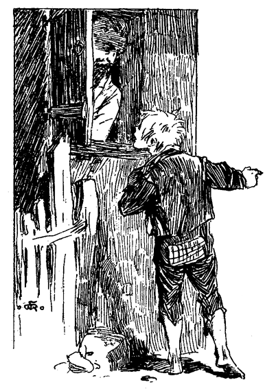»Was ist los? Wer klopft? Was willst du?«
»Laßt mich ein. Ich will alles sagen!«
»Nur schnell!«
»Wer bist du?«
»Huckleberry Finn! Oeffnet! Schnell!«
»So, so! Huckleberry Finn? Dieser Name ist kein guter Passepartout! Gleichviel, Jungen, laßt ihn ein! und sehen wir, was es giebt!«
»Sagt niemand, daß ich es euch gesagt habe!« war Hucks erstes Wort, als er drinnen war. »Er würde mich umbringen! Aber die Witwe ist manchmal gut gegen mich gewesen, und ich sollte, nein, ich will es Euch sagen, wenn Ihr mir versprecht, mich nicht zu verraten!«
»Bei Gott, er muß wirklich etwas Wichtiges auf dem Herzen haben, er würde sich sonst nicht so geberden!« sagte der alte Mann. »Sprich frisch weg, Junge, niemand von uns wird dich verraten!«
Drei Minuten später waren die drei Männer wohlbewaffnet auf dem Hügel. Huck begleitete sie nicht weiter, als bis zu dem mit Sumach besäumtem Pfade. Er versteckte sich im Gebüsch und lauschte. Es folgte eine lange Stille, und dann einige Schüsse und ein Schrei.
Huck hatte genug gehört, und wartete das weitere nicht ab. Er eilte abwärts, so schnell ihn seine Füße tragen konnten.
Der Welsche berichtet. – Huck im Feuer. – Die Geschichte wird ruchbar. – Neue Sensation. – Hoffnung. – Verzweiflung.
Beim ersten Schimmer des folgenden Sonntagmorgens hatte Huck den Hügel erstiegen, und pochte leise an des Welschen Thor. Die Insassen schliefen, aber mit halboffenen Augen unter dem Eindruck der nächtlichen Ereignisse.
»Wer ist da?« tönte es von innen.
Huck antwortete erschrocken und leise:
»Bitte laßt mich ein! Ich bin's nur, Huck Finn!«
»Das ist ein Name, dem sich diese Thüre fortan bei Tag oder Nacht öffnen wird! Komm herein, mein Junge, und sei herzlich willkommen!«
Das waren ungewohnte Worte in den Ohren des Vagabunden, und die angenehmsten, die er je vernommen. Er konnte sich nicht entsinnen, jemals so freundlich begrüßt worden zu sein. Das Thor ward rasch geöffnet und er trat ein. Man gab ihm einen Stuhl, und der Alte und seine Söhne kleideten sich hurtig an.
»So, mein Junge, ich hoffe, du hast einen tüchtigen Appetit mitgebracht. Mit Aufgang der Sonne wird das Frühstück bereit sein, und gut und warm soll es sein, deswegen sei unbesorgt. Ich und die Jungen hofften gestern Nacht, du würdest bei uns übernachten!«
»Ich hatte so entsetzlich Angst, und bin davongelaufen! Ich riß aus, als ich die Schüsse hörte, und rannte drei Meilen in einem Atem! Nun bin ich gekommen, um zu erfahren, wie es ging, und ich kam vor Tage, um nicht jenen Teufeln in die Hände zu laufen, tot oder lebendig, gleichviel!«
»Ja, ja, mein armer Junge, du hast eine harte Nacht gehabt, deinem Aussehen nach! Aber da ist ein Bett für dich bereit, sobald du mit dem Frühstück fertig bist. Nein, mein Junge, sie sind nicht tot! Leider sind sie es nicht! Siehst du, nach deiner Beschreibung wußten wir schon, wie die Sache anzugreifen war. Wir schlichen auf den Zehen bis fünfzehn Schritt an sie heran, immer jenem finsteren Sumachpfad folgend – da kam mich ein Reiz zum Niesen an. Das war nun ein schlimmer Zufall. Ich suchte den Reiz zu unterdrücken, umsonst – ich fühlte es kommen und es kam. Ich befand mich an der Spitze mit erhobener Pistole, und als die Schurken, durch das Geräusch aufgeschreckt, aus dem Pfad hervorbrechen wollten, kommandierte ich: »Feuer!« und schoß in der Richtung, von woher ich ihr Auffahren vernommen, meine Waffe ab. Das Gleiche thaten meine Söhne, dann ging's drauf und dran! Aber fort waren die Schufte! Wir ihnen nach, das Gehölz hinunter, konnten sie aber nicht einholen. Wir müssen nicht getroffen haben. Jeder von ihnen hatte ebenfalls einen Schuß auf uns abgegeben; ihre Kugeln jedoch pfiffen unschädlich an uns vorüber. Sowie sich ihre Fußtritte in der Ferne verloren, gaben wir die Jagd auf, stiegen abwärts, und alarmierten die Konstabler. Sie zogen einige Streitkräfte zusammen und setzten sich in Marsch, um die Flußufer zu besetzen, und so bald es hell genug sein wird, wird der Scheriff mit einer Abteilung den Wald absuchen. Meine Söhne werden an der Streife teilnehmen. Wenn, wir nur entfernt wüßten, wie die Schurken aussehen. Das würde die Verfolgung mächtig fördern. Du kannst wohl keine Auskunft darüber geben, mein Junge, da du sie nun im Dunkel und von weitem beobachtet hast?«
»Gewiß kann ich das! Ich sah sie unten und folgte ihnen!«
»Das wäre prächtig! Wie sahen sie aus, mein Junge? Beschreibe sie.«
»Der eine davon ist der taubstumme Spanier, der sich einigemal in der Stadt sehen ließ – der andere ein schlecht aussehendes, zerlumptes Subjekt – .«
»Genug, mein Junge. Wir kennen diese Strolche. Wir stießen eines Tages auf sie, wie sie im Gehölz hinter der Besitzung der Witwe lauerten, und sich bei unserem Anblick, auf die Socken machten. Fort mit euch, ihr Jungen, und erzählt das dem Scheriff! Zum Frühstück ist es noch morgen Zeit!«
Die Söhne des Welschen brachen ungesäumt auf. Bevor sie das Zimmer verließen sprang Huck auf:
»Um Gottes willen, sagt nur nicht, daß ich es war, der die Geschichte ausbrachte!«
»Wie du willst, Huck! Wird dir aber dann die gebührende Ehre, den Schurkenstreich vereitelt zu haben, nicht, entgehen?«
»Nein, nein! Sagt nur nichts!«
Als die Jungen sich entfernt hatten, sagte der Alte:
»Sie werden nichts sagen, und ich ebensowenig. Aber warum willst du, daß wir schweigen?«
Huck ließ sich auf keine weiteren Erörterungen ein. Nur das gestand er, daß er von dem einen der beiden schon soviel gesehen, daß er gar nicht zweifle, umgebracht zu werden, wenn dieser je erfahren sollte, daß er seine Hand mit im Spiele gehabt.
Der Alte versicherte ihm aufs neue das unverbrüchlichste Stillschweigen und sagte:
»Wie kamst du, mein Junge, dazu, diesen Menschen nachzustreichen?«
Huck schwieg lange, während er nach einer vorsichtigen Antwort suchte:
»Nun, seht Ihr, ich bin ein übelgeratener Junge – wenigstens höre ich das von allen Seiten und muß annehmen, es sei so. Das läßt mich oft nicht ruhig schlafen, und da kommen mir allerlei Gedanken, wie ich es wohl angreifen könne, um meinem Thun und Lassen eine neue, bessere Richtung zu geben. So war es wieder in der verflossenen Nacht. Ich konnte keinen Schlaf finden – so stand ich auf und streifte umher, immer mit diesen Gedanken beschäftigt. Gegen Mitternacht kam ich in die Nähe des alten Ziegelmagazins bei der Temperenz-Taverne und lehnte mich an die Mauer, um meinen Ideen immer weiter zu folgen. Gerade in diesem Augenblick schlüpften diese zwei Kerle an mir vorüber, mit Etwas unter dem Arme, das mir aussah, wie etwas Gestohlenes. Der eine rauchte, der andere wollte Feuer haben. Sie hielten mir gerade gegenüber, und beim Lichte der Zigarre erkannte ich den größeren als den taubstummen Spanier an seinem weißen Backenbart und dem Pflaster aus dem Auge, und der andere war ein verrosteter, schmutziger, lumpiger Teufel!«
»Konntest du denn die Lumpen bei dem bloßen Scheine einer Zigarre unterscheiden?«
Huck schwieg einen Augenblick überrascht und fuhr fort:
»Ich weiß nicht recht, vermute es jedoch.«
»Dann gingen sie weiter, und du – –?«
»Ich folgte ihnen. So war es. Ich war begierig, zu erfahren, was sie im Schilde führten. Sie thaten so geheimnisvoll! Ich schlich ihnen nach bis zum Pförtchen der Witwe. Dort, im Dunkel stehend, hörte ich, wie der Zerlumpte für die Witwe bat, und wie der Spanier schwor, er würde ihr Gesicht entstellen, wie ich es Euch und Euren Söhnen ja schon erzählt –«
»Was? Wie? Der taubstumme Mann hat alles das gesagt?«
Huck hatte sich schlimm verrannt. Er hatte den Alten über den Spanier möglichst im Unklaren lassen wollen, und seine Zunge verriet ihn jeden Augenblick. Er machte verschiedene Versuche, sein Versehen wieder gut zu machen, aber des alten Mannes ernstes Auge haftete an dem seinigen, und so machte er einen Mißgriff um den andern.
»Komm, Junge, fürchte dich nicht vor mir! Ich würde kein Haar auf deinem Haupte krümmen, um die ganze Welt nicht! Nein, ich würde dich schützen! Mit allen Kräften schützen! Dieser Spanier ist nicht taubstumm! Das ist dir entschlüpft! Du kannst es nun nicht mehr ungeschehen machen. Du weißt etwas von ihm, das du gern verheimlichen möchtest! Vertraue mir! Sei es, was es wolle, sprich offenherzig, ich werde dich nicht verraten!«
Huck that einen tiefen Blick in des alten Welschen ehrliches Auge, neigte sich gegen ihn und flüsterte ihm ins Ohr:
»Es ist kein Spanier – es ist der Indianer Joe!«
Der Alte wäre vor Ueberraschung fast vom Stuhle gefallen, und sprang auf: »Jetzt ist alles sonnenklar! Als du uns von Nasenlöcheraufschlitzen und von Ohrenstutzen fabeltest, hielt ich das für deine eigenen Zuthaten und Verschönerungen, da weiße Männer das nie thun. Aber ein Indianer, das ändert die Sache gewaltig!«
Man setzte sich zum Frühstück. Im Verlaufe desselben wurde das Abenteuer weiter besprochen. Der Alte erzählte, daß er beim Schimmer einer Laterne vor Schlafengehen mit seinen Söhnen das Pförtchen und dessen nächste Umgebung genau nach Blutspuren durchsucht, aber nichts gefunden hatte, als ein umfangreiches Bündel von –«
Wenn diese Worte Blitze gewesen wären, hätten sie Hucks schreckensbleichen Lippen nicht schneller entfahren können. Mit weit aufgerissenen Augen und atemlos harrte er der Antwort des Alten. Dieser sah verwundert auf, drei – fünf – zehn Sekunden, und sagte:
»Von Diebsgeräten! Aber was hast du?«
Huck stieß einen Seufzer unsäglicher Befriedigung aus. Der Alte fixierte ihn ernst und neugierig:
»Jawohl! Diebswerkzeugen! Das scheint dir ein großer Trost zu sein! Was vermutetest du wohl in dem Bündel?«
Huck befand sich arg in der Klemme. Das forschende Auge des Alten ruhte auf ihm – was hätte er nicht um eine rasche, plausible Antwort gegeben! Nichts fiel ihm ein, die Zeit drängte, und so sagte er mit zitternder Stimme: »Vielleicht Sonntagsschulbücher!«
Der arme Huck konnte in seiner Angst kein Lächeln zu stande bringen. Der Alte aber brach in lautes, frohes, zwerchfellerschütterndes Gelächter aus, setzte allen Verdacht Huck gegenüber beiseite, und meinte schließlich, daß ein solch fröhliches Lachen so gut sei, wie bares Geld, denn es verkürze die Doktorrechnung um ein namhaftes.
»Armer Junge!« fuhr er fort, »du bist ganz blaß und verstört! Dir ist nicht wohl! 's ist auch kein Wunder! So ein kleiner magerer Junge verliert bald das Gleichgewicht! Du wirst dich aber schnell besser fühlen! Ruhe und Schlaf werden dich bald wieder gekräftigt haben!«
Huck war ärgerlich, sich so gänsemäßig kopflos benommen und eine so außerordentliche Aufregung bei Erwähnung, des Bündels verraten zu haben. Indessen fühlte er sich beruhigt und erleichtert. Er wußte nun, daß sie den Schatz nicht entführt, und derselbe folgerichtig noch in Nummer 2 liegen müsse. Alles ging nach Wunsch. Die beiden mußten noch heute eingefangen und eingekerkert werden, und Tom und er waren durch nichts gehindert, sich in der nächsten Nacht ohne alle Gefahr und Beschwerde in den Besitz des Schatzes zu setzen.
Kaum war das Frühstück zu Ende, so wurde an die Thüre gepocht. Huck sprang auf, um ein Versteck zu suchen, während der Welsche verschiedene Damen und Herren einließ, und unter diesen die Witwe Douglas. Zugleich bemerkte er, daß ein förmlicher Pilgerzug sich den Hügel herauf bewege, wahrscheinlich, um das Pförtchen anzustieren. Die Geschichte war also ruchbar geworden.
Der Welsche mußte die Erlebnisse der letzten Nacht erzählen, und die Witwe sprach ihm ihren Dank für die geleistete Hilfe aus.
»Kein Wort darüber, Madame! Das ist ein anderer, dem Sie zu mehr Dank verpflichtet sind, als mir und meinen Söhnen. Er will aber nicht genannt sein. Ohne ihn wären wir gar nicht zur Stelle gewesen!«
Diese Antwort erregte die Neugier der Anwesenden aufs höchste, so, daß sogar das Interesse am nächtlichen Angriff darüber schwand. Der Alte ließ sich nicht erweichen und schwieg. Er sah mit geheimem Vergnügen die Neugierde unbefriedigt um sich fressen, um demnächst die ganze Stadt anzustecken.
Nachdem alle Nebenumstände besprochen waren, sagte die Witwe:
»Ich las noch vor Einschlafen im Bette, und schlummerte dann ruhig, ohne von dem ganzen Vorgang auch nur das geringste wahrzunehmen. Warum weckten Sie mich nicht?«
»Wir hielten es für unnötig. Die Schufte besaßen keine anderen Werkzeuge, als die zurückgelassenen, und ohne sie, wozu wiederkommen? Es war höchst überflüssig, Sie aus dem Schlafe zu wecken und ihnen tätliche Angst einzujagen! Ueberdies hatte ich meine drei Schwarzen als Wache um Ihre Besitzung her aufgestellt! Eben sind sie zurückgekommen.«
Einige Stunden hindurch folgte ein Besuch dem andern, und der Welsche mußte seinen Bericht immer wieder von vorne anfangen.
Während der Ferien feierte auch die Sonntagsschule. Dagegen fand sich alles in der Kirche ein. Das vorgefallene Ereignis wurde sattsam erörtert. Man wußte, daß die beiden Nichtswürdigen der Verfolgung bislang entgangen waren. Nach Schluß der Predigt erwartete Mrs. Thatcher Mrs. Harper und sagte:
»Schläft meine Becky noch? Ich sah voraus, daß sie todmüde werden würde!«
»Ihre Becky?«
»Ja«, ergänzte Mrs. Thatcher überrascht. »Hat sie denn die Nacht nicht bei ihnen zugebracht?«
»Ich sah sie mit keinem Auge!«
Mrs. Thatcher erblaßte und sank in den nächsten Kirchenstuhl, eben als Tante Polly in eifrigem Gespräch mit einer Freundin vorbei kam. Tante Polly redete sie an:
»Guten Tag, Mrs. Thatcher! Guten Tag, Mrs. Harper! Ich vermisse meinen Jungen seit gestern. Hat er vielleicht bei Ihnen übernachtet, oder bei Ihnen? Er hat sich wohl gefürchtet, zum Gottesdienst zu kommen; ich werde aber mit ihm abrechnen!«
Mrs. Thatcher verneinte schwach und wurde bleicher.
»Er war nicht bei uns,« erwiderte Mrs. Harper, und wurde unruhig. Die Besorgnis trat in Tante Pollys Züge.
»Joe Harper, hast du meinen Tom heute noch nicht gesehen?«
»Nein, Madame!«
»Wann sahst du ihn zuletzt?«
Joe suchte sich zu erinnern, konnte aber nichts Bestimmtes sagen. Der Zug aus der Kirche geriet ins Stocken. Geflüster hin und her, und Besorgnis auf allen Zügen. Kinder und junge Lehrer und Lehrerinnen wurden mit Fragen bestürmt. Sie alle konnten keinerlei Auskunft über Becky und Tom geben, und wußten nicht einmal, ob sie die Rückfahrt auf dem Fährboote mitgemacht hätten. Es war ja so finster, und niemand hatte daran gedacht, nachzusehen, ob die ganze Schar vollzählig sei. Endlich sprach einer der jungen Leute schüchtern die Befürchtung aus, die Vermißten könnten vielleicht noch in der Höhle sein. Mrs. Thatcher fiel in Ohnmacht. Tante Polly weinte heftig und rang die Hände. Der Alarm flog von Lippe zu Lippe, von Gruppe zu Gruppe, von Straße zu Straße, und nach fünf Minuten stürmte es vom Kirchturme. Die ganze Stadt war auf den Beinen. Das Cardiff-Hill-Abenteuer war plötzlich vergessen; niemand dachte an die Räuber; Pferde wurden gesattelt, Boote bemannt, die Dampffähre lichtete die Anker, und bevor die Neuigkeit eine halbe Stunde alt war, strömten zweihundert Mann auf der Land- und Wasserstraße nach der Höhle. Den ganzen langen Nachmittag blieb das Dorf verödet und leer. Viele Frauen statteten ihre Beileidsbesuche bei Mrs. Thatcher und Tante Polly ab, und versuchten sie zu trösten. Sie weinten miteinander, und das war besser als unnütze Worte. Die ganze Nacht verfloß in quälender Erwartung. Alles, was in der Morgendämmerung bekannt wurde, waren die wenigen Worte:
»Sendet mehr Kerzen und – Mundvorrat!«
Mrs. Thatcher stand am Rande des Irrsinns, und Tante Polly ditto! Richter Thatcher sandte ermutigende Botschaften aus der Höhle; sie wollten aber wenig fruchten. Mit frühem Morgen kehrte der Welsche, über und über mit Lehm besudelt, mit Talg beschmiert und todesmatt nach Hause zurück. Er fand Huck noch im Bette, und in heftigem Fieberdelirium. Die Aerzte waren alle in der Höhle, und so hatte die Witwe Douglas ihre Stelle vertreten. Sie wollte ihr Möglichstes für ihn thun. Sei er was er wolle, gut, schlecht, oder zwischen durch, er war des Herrn, und um des Herrn willen wollte sie ihn pflegen. Der Welsche meinte, Huck sei nicht ohne etwas Gutes in ihm, und die Witwe sagte:
»Gewiß nicht. Das sind die Zeichen Gottes. Wer nur einen kleinen Hauch der Gottheit in sich fühlt, den verläßt er nicht. Und jedes Geschöpf seiner Hand ist von ihm gezeichnet!«
Vormittags kamen zerstreute Gruppen überwachter, abgematteter Männer ins Dorf zurück. Die Kräftigen waren in der Höhle geblieben und setzten ihre Forschungen eifrig fort. Hie und da kamen Nachrichten aus der Höhle. Man hatte Stellen derselben untersucht, an die bis jetzt kein menschliches Wesen vorgedrungen war. Die mindesten Winkel und Spalten wurden erforscht. Wohin man sich in den unterirdischen Wirrsalen auch wandte, flackerten Lichter und widerhallten die Gewölbe von Pistolenschüssen und lauten, das Echo tausendfältig weckenden Rufen. In einem der früher von Touristen nie betretenen Gänge hatte man die mit Kerzenrauch an die Felswand angeschwärzte Inschrift »Becky und Tom« entdeckt und nicht weit davon ein beschmutztes Seidenband. Mrs. Thatcher erkannte es und benetzte es mit bitteren Thränen. Sie wollte es aufbewahren als letzte Reliquie ihres geliebten Kindes, das letzte, was es getragen, ehe es seinem schauerlichem Tode entgegen ging! Einige erzählten, daß manchmal ein unverhoffter Schimmer sich zeige, daß dann alles mit Jubel darauflos stürze, und daß die Bestürzung keine Grenzen kenne, wenn es nur das Licht eines abseits gekommenen Suchers sei.
Drei schreckenvolle Tage und Nächte verstrichen ohne den mindesten Erfolg. Alle Hoffnung war geschwunden, trübseliger Stumpfsinn hatte sich aller Gemüter bemeistert, und bodenlose Entmutigung. Selbst die große Neuigkeit, daß der Wirt der Temperenzler insgeheim ein Schnapsmagazin hielt, machte keinen Eindruck mehr, so entsetzlich auch diese Kunde war. In einem lichten Moment hatte nämlich Huck das Gespräch auf die Temperenz-Taverne gebracht, und das Schlimmste befürchtend, leichthin gefragt, ob seit seiner Krankheit dort etwas entdeckt worden sei.
»Ja!« sagte die Witwe.
Huck setzte sich im Bett aufrecht und starrte sie mit wilden Augen an. »Was? Was war's?«
»Schnaps! Und das Lokal ist seitdem geschlossen! Liege ruhig nieder, Kind! Wie hast du mich erschreckt!«
»Nur eines möchte ich wissen, nur dieses eine! Bitte! Hat Tom Sawyer diese Entdeckung gemacht?«
Die Witwe brach in Thränen aus.
»Still, Kind, sei ruhig! Ich habe dir erst vorhin gesagt, daß du nicht viel reden darfst. Du bist sehr, sehr krank!«
So, also nur starke Getränke waren gefunden worden! Welch Geschrei, wenn das Gold zum Vorschein gekommen wäre! Es war fort, unwiederbringlich verloren! Aber warum weinte die Frau? Um wen oder was vergoß sie diese Thränen? – Mit diesen Gedanken, die sich verworren kreuzten, fiel er in unruhigen Schlummer.
»Gottlob, er schläft, der arme Junge. Tom Sawyer die Entdeckung gemacht? Ach du lieber Gott, wenn er nur selbst entdeckt werden könnte! Nur wenige sind geblieben, die noch hoffen, oder stark genug sich fühlen, die Nachforschungen fortzusetzen!«
Entdeckungs-Expedition. – Verlegenheit. – Verloren. – Totalfinsternis. – Gefunden, aber nicht gerettet.
Kehren wir zum Picknick und zu Tom und Becky zurück. Sie waren dem Schwarm auf die bekannten Stellen durch die schmutzigen Seitengänge gefolgt und hatten mit den übrigen die bekannten Wunder besichtigt, die oft ganz überschwengliche Namen trugen, als das »Visitenzimmer« »die Kathedrale«, »Aladdins Schloß« und so fort. Am Haschen und Versteckensspielen nahmen sie noch lebhaften Anteil, dann vertieften sie sich in die buchtigen Gänge und entzifferten die wie Spinnengewebe sich durchkreuzenden Inschriften, sämtlich mit Talgkerzen und auch al fresco die Felswände gemalt, wie Namen, Daten, Postbureaus-Adressen und Mottos. Immer plaudernd und weiter gehend bemerkten sie den Umstand nicht, daß die Frescomalereien aufgehört hatten. Sie rauchten ihre eignen Namen unten einem überhängenden Felsblock an, und zogen fürbaß. Sie erreichten eine Stelle, wo ein kleiner Gießbach, über ein Riff träufelnd durch die zurückgelassenen Sedimente einen kleinen Niagara gebildet hatte. Tom zwängte sich dahinter, um Becky den vollen Genuß der Beleuchtung zu verschaffen. Er fand dort, wie durch den Wasserfall mit einem Vorhang versteckt, eine zwischen engen Wänden steil ansteigende natürliche Treppe, und die Entdeckungslust wurde rege in ihm. Becky teilte seine Neugierde; somit rauchten sie ein Merkmal an die Felswand, und traten ihre Forschungsreise an. Sie wandten sich durch die engen Stollen bald auf-, bald abwärts in die geheimen Tiefen der Höhle, machten ein weiteres Merkzeichen, und stiegen dann aufwärts, um der Oberwelt ihre Entdeckung kund zu thun. An einer Stelle fanden sie eine geräumige Binnenhöhle, von deren Decke eine Menge armslanger, strahlender Stalaktiten hingen; sie machten die Runde und entfernten sich durch einen der vielen dahin führenden Zugänge und erreichten in geringer Entfernung einen bezaubernden Quell, ringsum mit Kristallen eingefaßt, wie sie wohl der Winterfrost so schön und launenhaft nicht hervorzubringen im stande ist. Die Quelle befand sich in der Mitte einer Höhle, in welcher die von dem ewigen Wasserträufeln gebildeten Stalaktiten von oben, und Stalagmiten von unten, durch ihr Zusammentreffen ganze Säulengänge im Verlaufe der Jahrtausende geschaffen hatten. Von der Decke hingen tausende von Fledermäusen, dicht in Bündeln aneinandergeklammert; durch die Lichter aufgeschreckt, schwärmten sie quiekend und wütend auf die Kerzen los. Tom kannte ihre Art und Weise, und die damit verbundene Gefahr. Er faßte Beckys Hand und zog sie eilig in den nächsten besten Korridor. Und wahrlich nicht zu früh! Denn eines dieser Geschöpfe hatte Beckys Licht mit seinen Flughäuten ausgelöscht, noch bevor sie den Seitengang erreicht hatten. Die Fledermäuse verfolgten die Kinder eine gute Weile, aber die Flüchtlinge stürzten sich in die verschiedensten Irrgänge, bis jene von der Verfolgung abließen. Kurz nachher stieß Tom auf einen unterirdischen See. Er hatte im Sinn, die Ufer desselben einer näheren Besichtigung zu unterwerfen, fand aber, daß vorher eine kleine Rast nicht schaden könne. Sie setzten sich.
Zum erstenmal kam die tiefe Stille der Umgebung wie ein Alp über die Kinder. Becky sagte:
»Wie ist mir denn? Ich habe früher nicht daran gedacht, aber jetzt scheint es mir eine Ewigkeit, seit wir nichts von den andern gehört haben!«
»Besinne dich, Becky! Wir sind tief unter ihnen, und ich weiß wirklich nicht, wie weit, Nord, Süd, Osten oder sonst was. Hier können wir sie nicht hören!«
Becky wurde furchtsam:
»Möchte wissen, Tom, wie lange wir schon hier unten sind! Wäre es nicht besser, wenn wir zurückgingen?«
»Jawohl, ich denke auch! Es wäre vielleicht besser!«
»Weißt du den Weg, Tom? Für mich ist alles nur Irrsal und Krümmung!«
»Ich glaube, ihn finden zu können! Aber diese Fledermäuse? Wenn sie auch mein Licht auslöschen, werden wir schön in der Patsche sitzen! Laß uns einen andern Weg suchen! Nur jenen nicht!«
»Wie du willst! Wir werden doch hoffentlich nicht verloren sein! Es wäre so schrecklich!« Und das arme Kind schauderte bei dem Gedanken an diese Möglichkeit. Sie durchwanderten einen langen Korridor in düsterm Schweigen. Jede neue Oeffnung wurde hastig untersucht, ob sich nicht etwas Bekanntes zeige, aber alles erschien ihnen fremd. So oft Tom forschend anhielt, sah ihn Becky fragend an.
»O, es geht ganz gut!« pflegte er dann mit erzwungenem Lächeln zu sagen. »Das ist zwar noch nicht der rechte Weg, er wird aber schon kommen!«
Mit jeder neuen Täuschung sank auch seine Hoffnung; ohne Plan durchforschte er die divergierendsten Gänge, ohne den richtigen zu finden. Zwar ermunterte er Becky noch immer durch den Zuruf: »Wir sind ganz recht!« aber seine Stimme klang, wie wenn er hätte sagen wollen: »Alles ist verloren!« Becky drängte sich in fieberhafter Angst dicht an ihn, und suchte umsonst die hervorbrechenden Thränen zurückzuhalten.
»Ach, Tom, beachte die Fledermäuse nicht, und laß uns durch ihre Höhle zurückkehren. Wir verirren uns ja immer mehr!«
Tom stand plötzlich still.
»Horch!« sagte er.
Tiefe Stille, so tief, daß ihre eigenen Atemzüge geräuschvoll erschienen. Tom stieß einen Schrei aus. Wiederhallend durchlief sein Echo die endlosen Gallerien, bis er in weiter Ferne, das Echo tausendfältig weckend, wie höhnisches Gelächter erstarb.
»Um Gottes willen, Tom, thue das nicht wieder! Es ist zu schauerlich!«
»Ja, Becky, es ist schrecklich: Aber ich muß! Vielleicht hören sie uns!« Und er rief von neuem. Dieses »vielleicht« klang noch entmutigender, als das eben vernommene, gespenstische Hohngelächter. Atemlos standen sie und horchten. Nichts. Tom wandte sich um und eilte hastig durch den eben durchlaufenen Gang zurück. Bald darauf bemerkte Becky an seinem unsicheren Hin- und Hertasten, daß er auch den letztbetretenen Weg nicht mehr finden konnte.
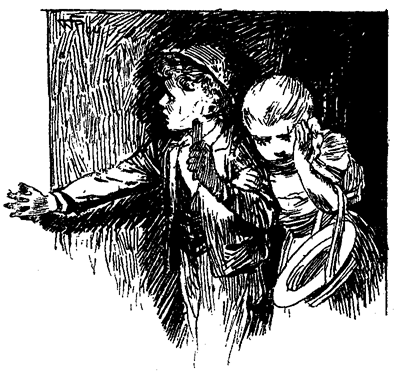»Tom, o Tom, du hast vergessen, Merkzeichen zu machen!«
»Ja, Becky, ja! O, ich verwünschter Narr! An den Rückweg dachte ich freilich nicht!«
»Tom, wir sind verloren! Unrettbar verloren! Unmöglich, dieser Hölle zu entrinnen! O, warum mußten wir uns von den andern entfernen!«
Sie sank nieder und brach in einen so heftigen Strom von Thränen, in so krampfhaftes Klagen und Weinen aus, daß Tom fürchtete, sie könne sterben oder den Verstand verlieren. Er setzte sich zu ihr und umschlang sie mit den Armen, während sie den Kopf an seiner Brust verbarg, und ihren Klagen, Befürchtungen, ihrer hoffnungslosen Verzweiflung durch Laute Ausdruck verlieh, die von den Labyrinthen wie höhnisches, neckendes Gelächter wiederklangen. Tom bat sie, guten Mutes zu sein, und die Hoffnung nicht ganz sinken zu lassen. – Sie konnte es nicht. – Nun fing er an, sich selbst zu verwünschen und sich die bittersten Vorwürfe zu machen, sie in diese traurige Lage versetzt zu haben. Das ermunterte sie. Sie erhob sich, versprach, ihm zu folgen, wohin er sie auch führen möge, nur solle er sie nicht mehr durch ähnliche Selbstanklagen betrüben. Sie trage mit ihm die gleiche Schuld an ihrem Mißgeschick. – Sie gingen weiter, ohne ein bestimmtes Ziel im Auge zu haben, nur um zu gehen. Alles, was ihnen zu thun übrig blieb, war, sich zu bewegen, um nicht in verzweifeltes Brüten zu verfallen. Eine Weile schien die Hoffnung neu in ihnen aufzuleben, – nicht weil Grund dazu vorhanden gewesen wäre – nein, sondern weil es in der menschlichen Natur liegt, derselben nur dann zu entsagen, wenn die Spannkraft der Jugend durch Alter und andauerndes Mißgeschick gebrochen ist.
Im Weitergehen nahm Tom das Licht aus Beckys Hand, und blies es aus. Sie begriff die Tragweite dieser Handlung, ohne eines Wortes der Erläuterung zu bedürfen. Wieder sank ihre kaum erweckte Hoffnung. Sie wußte, daß Tom noch eine ganze Kerze und drei oder vier Stümpfchen in der Tasche hatte – dessen ungeachtet mußte er sparsam damit umgehen. Nach und nach stellte sich Müdigkeit bei den Kindern ein. Sie suchten sie zu überwinden; der Gedanke, niederzusitzen, war ihnen schrecklich. Ruhe hieß die Annäherung des Todes beschleunigen. Bewegung allein hieß, ihm entfliehen und konnte sie der Rettung entgegenführen.
Zuletzt versagten die müden Glieder Beckys den Dienst. Sie sank nieder. Tom setzte sich zu ihr. Sie sprachen von der Heimat, ihren Freunden, den bequemen Betten, und vor allem vom Sonnenlicht! Becky weinte, und Tom suchte sie zu ermuntern: aber all die Trostgründe, die er mühsam ersann, klangen wie Sarkasmen und wollten nicht verfangen. Von Müdigkeit überwältigt schlummerte Becky nach und nach ein. Tom atmete leichter. Er beobachtete ihre abgematteten Züge, und sah, wie nach und nach stille Zufriedenheit, von süßen Träumen hervorgezaubert, sich auf ihrem Gesicht wiederspiegelte und in ruhiges Lächeln überging. Dieser Anblick wirkte besänftigend auf ihn; er versank in vage Träumereien über die Vergangenheit und frühere Erlebnisse. Da erwachte Becky mit einem fröhlichen, kurzen Lachen, dem nur zu schnell ein Seufzer folgte.
»Ach, wie prächtig habe ich geschlafen! Warum mußte ich erwachen? Wenn ich nur immer, immer fortgeschlafen hätte! Nein, nein, Tom, bitte! Ich will es nicht mehr sagen! Sieh mich nicht so an, Tom! Gewiß nicht!«
»Wie freut es mich, Becky, daß du schlafen konntest! Du wirst dich gestärkt fühlen, und wir können jetzt den Ausgang suchen!«
»Wir wollen es versuchen, Tom! Ich habe im Traum so ein wunderschönes Land gesehen! Vielleicht gehen wir dahin!«
»Nein, Becky, nein! Ermuntere dich und laß uns suchen!«
Sie standen auf und wanderten weiter, Hand in Hand, hoffnungslos. Sie versuchten nachzurechnen, wie lange sie wohl in der Höhle sein möchten, und brachten Tage und Wochen heraus. Der noch nicht aufgebrauchte Vorrat an Kerzen belehrte sie jedoch bald ihres Irrtums. Lange, lange nachher, sie wußten nicht, wie lange, ermahnte Tom Becky, langsam zu gehen und auf das Rieseln einer etwa vorhandenen Quelle zu lauschen, denn Wasser that ihnen not. Sie war bald gefunden, und Tom meinte, es sei Zeit, wieder auszuruhen. Beide waren todmüde, aber dennoch wollte Becky noch weitergehen. Tom war entgegengesetzter Meinung. Das überraschte sie. Sie setzten sich nieder. Tom befestigte die Kerze mit ein wenig Lehm an die ihnen gegenüberstehende Felswand. Sie verfielen in tiefes, lautloses Sinnen. Becky unterbrach das Schweigen:
»Tom, ich bin so hungrig!«
Tom zog etwas aus der Tasche. »Kennst du das?« fragte er.
Becky erwiderte halb lächelnd: »Es ist unser Hochzeitskuchen, Tom!«
»Jawohl! Wenn er nur von der Größe eines Mühlsteins wäre, denn das ist alles, was wir haben!«
»Ich habe ihn vom Picknick aufgehoben, um ihn unter das Kopfkissen zu stecken und darauf zu träumen, wie Brautleute mit dem Hochzeitskuchen zu thun pflegen. Es wird aber wohl unser ...«
»Leichenkuchen werden!« wollte sie sagen, brach aber plötzlich ab.
Tom teilte den Kuchen, und Becky aß mit gutem Appetit, während Tom zum Schein von seiner Hälfte nagte. An frischem Wasser fehlte es nicht, um das Fest vollständig zu machen. Nach einiger Ruhe wollte sich Becky wieder auf den Weg machen. Tom sann schweigend, dann sagte er:
»Becky, bist du stark genug, eine unangenehme Nachricht zu hören?«
Sie wurde blaß, zeigte sich aber gefaßt.
»Nun denn, Becky, wir müssen in der Nähe des Wassers bleiben. Dies ist unser letztes Lichtstümpfchen!«
Becky brach in Thränen und Wehklagen aus! Tom versuchte alle möglichen Trostgründe – umsonst!
Auf einmal sagte sie:
»Tom!«
»Nun, Becky!«
»Sie werden uns vermissen und Nachsuchungen anstellen!«
»Gewiß werden sie das!«
»Vielleicht suchen sie jetzt schon!«
»Es ist möglich und ich hoffe es.«
»Wann haben sie uns wohl zuerst vermißt?«
»Bei der Rückfahrt auf dem Boote, denke ich!«
»Vielleicht war es aber schon dunkel und sie haben unsere Abwesenheit nicht bemerkt!«
»Möglich, ich weiß es nicht! Auf alle Fälle aber hat deine Mutter dich vermißt, als sie heim kamen!«
Becky starrte ihn erschreckt an und er wurde seines Mißgriffs gewahr. Becky wurde ja an jenem Abend nicht zu Hause erwartet! Die Kinder saßen still, in tiefes Sinnen, verloren. Ein neuer Ausbruch wilder Klage von seiten Beckys überzeugte Tom, daß auch sie befürchtete, der halbe Montag Vormittag könnte verflossen sein, bevor ihre Mutter von ihrem Verluste Kenntnis erhalten habe.
Die Kinder hefteten ihre Blicke unverwandt auf das Lichtstümpfchen und sahen, wie es langsam, aber erbarmungslos zusammenschmolz, – sahen zuletzt noch, wie der halbzolllange Docht allein stand, wie die sterbende Flamme an demselben auf- und abklomm, einen Moment auf der emporwirbelnden, dünnen Rauchsäule verweilte und dann – sahen sie nichts mehr. Das Grauen tiefster Finsternis hielt sie umfangen.
Wie lange nachher Becky zum Bewußtsein kam, daß sie weinend in Toms Armen lag, konnte keines der beiden sagen. Nur das war ihnen klar, daß sie nach langer, langer Zeit aus einem tiefen, schweren Schlafe erwacht seien, und daß neues Elend sie erwarte. Tom meinte, es könne jetzt Sonntag sein, vielleicht schon Montag. Er versuchte, Becky einige Worte zu entlocken – umsonst! Ihr Kummer war zu tief, all ihre Hoffnung tot. Tom sagte, daß man sie nun schon längst vermißt haben, und ernstlich mit der Nachforschung beschäftigt sein müsse. Vielleicht würde sein Ruf Gehör finden. Er rief, aber nur einmal. Der Wiederhall in den Irrgängen klang in der tiefen Finsternis so entsetzlich, daß er es nicht zum zweitenmal versuchte.
Die Stunden schlichen vorüber und der quälende Hunger stellte sich wieder ein. Ein Teil von Toms übrig gebliebener Kuchenhälfte wurde wieder geteilt und verzehrt. Aber ach, das bißchen Speise, statt zu sättigen, weckte nur die Begierde noch mehr.
Plötzlich machte Tom:
»St! Hörtest du nichts?«
Beide hielten den Atem an und lauschten. Es klang wie von fernem Rufen! Tom antwortete, und Becky an der Hand führend, tastete er sich in der Richtung des Rufes den Korridor hinab. Dann hielt er an und horchte gespannt. Wieder ertönte der Schall, und diesmal etwas näher. »Sie sind es!« rief Tom. »Sie kommen! Schnell, Becky, vorwärts! Nun ist alles gut!« Die Freude der Verirrten war überwältigend, unermeßlich. – Sie eilten vorwärts, machten aber nur geringe Fortschritte, denn der häufigen Fallgruben wegen war die äußerste Vorsicht geboten. Sie erreichten bald eine derselben und mußten Halt machen. Sie konnte 3 Fuß tief – sie konnte auch 100 Fuß tief sein. Hinüber konnten sie nicht. Tom legte sich der Länge nach auf die Erde und griff hinab so tief er konnte. Kein Boden. – Sie mußten auf jener Stelle bleiben, bis die Suchenden bei ihnen angelangt sein würden. Sie horchten. Die entfernten Rufe klangen immer entfernter und verloren sich endlich ganz. Welch herzbrechender Jammer! Tom rief und schrie, bis ihm die Stimme versagte. Es half alles nichts. Selbst der Verzweiflung nahe, suchte er noch Becky Hoffnung einzuflößen, aber eine Ewigkeit langen Harrens verging, und kein Ruf ließ sich wieder hören.
Die Kinder tasteten sich bis zur Quelle zurück. Die Zeit ging ihren gemessenen Schritt; sie schliefen wieder, und erwachten heißhungrig und grenzenlos elend. Nach Toms Rechnung mußte es jetzt Donnerstag sein.
Ein Gedanke durchzuckte ihn. In der Nähe lagen einige Seitengänge. Wäre es nicht besser, diese abzusuchen, als die tödlich lange Zeit unthätig auf sich lasten zu lassen? Gedacht, gethan. Er zog eine Drachenschnur aus der Tasche, band das eine Ende um einen hervorragenden Felsblock und machte sich mit Becky auf den Weg, er voran und die Schnur im Weitergehen abwickelnd. Nach etwa 20 Schritten erreichten sie eine Abzweigung des Ganges. Tom ließ sich auf die Kniee nieder und tastete abwärts um die Ecke, so weit er reichen konnte. Eben streckte er sich nach Kräften, um so weit als möglich nach rechts fühlen zu können, da tauchte plötzlich, nicht zwanzig Schritte entfernt, eine menschliche Hand mit einem Lichte hinter einem Felsen hervor. Tom stieß einen triumphierenden Schrei aus. Der Hand folgte der Körper, dem sie angehörte – derjenige des »Indianer Joe«! Tom stand erstarrt, keiner Bewegung fähig. Nicht lange. Der »Spanier« ergriff hastig die Flucht und Tom fiel eine Zentnerlast vom Herzen. Er wunderte sich, daß Joe seine Stimme nicht erkannt und für sein Zeugnis im Gerichtssaal blutige Rache an ihm genommen habe. Ohne Zweifel mußte das Echo seine Stimme entstellt haben. Anders war das nicht zu erklären. So sehr hatte der Schrecken seine Muskeln gelähmt, daß er nicht imstande war, zur Quelle zurückzukehren, sonst würde er es sofort gethan haben, und nichts hätte ihn wieder davon wegbringen und einer Begegnung mit dem Indianer Joe aussetzen können. Indessen verschwieg er Becky sorgfältig, wen er gesehen, und sagte ihr, er habe nur auf gut Glück gerufen.
Auf die Dauer jedoch besiegen Hunger und Elend auch die stärkste Furcht. Sie kehrten zur Quelle zurück, harrten lange trostlos, schliefen ein, und erwachten mit einem rasenden Hunger. Es mußte jetzt nach Toms Dafürhalten Mittwoch, oder Donnerstag, oder Freitag, oder gar Sonnabend sein, und ohne Zweifel waren die Nachforschungen als fruchtlos aufgegeben worden. Er schlug eine neue Entdeckungspartie vor, bereit, allen Gefahren, selbst dem Indianer Joe zu trotzen. Aber Becky war zu schwach. Sie war in düstere Apathie versunken und wollte nicht gestört sein. Sie war entschlossen, zu bleiben, wo sie war und da zu sterben. Sie würde es nicht lange mehr machen. Tom könne mit seiner Schnur gehen, und suchen, wenn er wolle; nur möge er von Zeit zu Zeit zurückkommen und ihr zusprechen; auch nahm sie ihm das Versprechen ab, bei ihr zu bleiben, wenn ihre letzte Stunde komme und im Todeskampf ihre Hand in der seinen zu halten, bis alles vorüber sei.
Tom küßte sie und während die Wucht seiner Schmerzgefühle ihn zu ersticken drohte, stellte er sich an, als sei er sicher, diesmal die Suchenden zu treffen oder einen Ausgang aus der Höhle zu finden. Dann nahm er die Schnur zur Hand und tastete seinen Weg auf Händen und Knieen durch einen der Seitengänge, von Hunger gepeinigt und von trüben Ahnungen gequält.
Tom erzählt die Geschichte ihrer Rettung. – Toms Feind in sicherem Quartier.
Dienstag Nachmittag neigte sich gegen Abend. Noch erfüllte allgemeine Trauer das Dorf St. Petersburg. Die verlorenen Kinder waren nicht gefunden. Oeffentliche Gebete waren für sie veranstaltet worden, manch und manch stiller Seufzer war für sie von ganzem Herzen emporgestiegen, und noch immer kamen keine guten Nachrichten aus der Höhle. Die Mehrzahl der Suchenden war zu ihrer alltäglichen Beschäftigung zurückgekehrt, überzeugt, daß es um die Kinder geschehen sei. Mrs. Thatcher lag schwer krank darnieder, meistens in heftigem Delirium. Man sagte, es sei herzbrechend anzuhören, wie sie ihr Kind rufe, ihr müdes Haupt aufrichte, und lange, horche, um dann mit schwerem Seufzer in die Kissen zurückzusinken. Tante Polly war in stille Melancholie versunken und ihre grauen Haare waren weiß. Düster und traurig legte sich die Einwohnerschaft Dienstag nachts zu Bette.
Gegen Mitternacht erscholl wildes Geläute vom Kirchturm. Im Augenblick waren die Straßen mit hellgekleideten Menschen angefüllt. Ueberall hallten die Rufe: »Heraus! heraus! Sie sind gefunden!« Pauken und Hörner mischten sich in den Lärm; die Einwohner sammelten sich in Masse und zogen nach dem Strom. Sie begegneten den Kindern in einem offenen, von jubelnden Bürgern gezogenen Wagen; scharten sich um dieselben, und heimwärts ging der Zug in majestätischer Prozession die Hauptstraße durchschreitend, unter tausendstimmigem Jubel und nicht endenwollenden Hurrarufen.
Das Dorf wurde illuminiert; niemand wollte mehr zu Bette; es war der größte Tag, den das Dorf je erlebt. Während der ersten halben Stunde folgte sich Prozession auf Prozession durch Richter Thatchers Haus; alles wollte die Geretteten sehen und küssen, Mrs. Thatchers Hand drücken und den wogenden Gefühlen Worte verleihen, ohne es zu können. Unter wahren Thränenfluten zerstreute sich endlich die aufgeregte Menge, Tante Pollys Glückseligkeit war überschwänglich, und Mrs. Thatcher teilte diese Gefühle nahezu, und ganz, als ein Bote nach der Höhle abgefertigt und ihrem Gatten die frohe Nachricht überbracht worden war. Tom lag auf einem Sopha und erzählte den umstehenden gierig lauschenden Zuhörern die wundervollen Abenteuer der Höhle, wobei er nicht verschmähte, sie mit allerlei fesselnden Zuthaten gehörig auszuschmücken. Er schloß mit der Beschreibung des Augenblicks, wo er Becky verließ; erzählte, wie er eine neue Entdeckungsreise angetreten, wie er zwei Gänge mit Hilfe seiner Leine durchkrochen, wie er den dritten bis zur vollen Länge derselben durchsucht und eben im Begriff gewesen sei, umzukehren. Da habe er in weiter Ferne einen tagähnlichen Schimmer entdeckt, die Leine liegen lassen, und sei dem Schimmer zugekrochen. Endlich habe er Kopf und Schulter durch eine kleine Oeffnung gezwängt und den breiten Mississippi dicht vorbeiströmen sehen. Und wenn es Nacht gewesen wäre, so hätte er den Tagesschimmer nicht erblickt, und jenen Gang nicht mehr durchforscht! Er erzählte, wie er zurückkehrte, um Becky diese frohe Nachricht zu überbringen; wie sie ihm gesagt habe, sie nicht mit solchem Unsinn zu quälen; sie wisse, daß sie sterben müsse, und sei dazu bereit. Es habe ihm unendlich Mühe gekostet, sie von der Wahrheit seiner Worte zu überzeugen, und sie sei beinahe vor Freude gestorben, als sie sich mühsam bis zur Stelle geschleppt, wo jener Tagesschimmer sichtbar war. Dann habe er sich durch die Oeffnung gezwängt und ihr herausgeholfen. Dort haben sie unter Freudenthränen geraume Zeit gesessen; dann seien Leute in einem Fahrzeug angekommen. Er habe sie angerufen, und ihnen das erlebte Abenteuer und ihren heißhungrigen Zustand mitgeteilt. Sie wollten ihnen zuerst keinen Glauben schenken, »denn,« sagten sie, »ihr befindet euch fünf Meilen abwärts von dem Thale, in dem die Höhle liegt«. Endlich seien sie in das Boot aufgenommen, zu einem Hause gerudert, dort bewirtet und einige Stunden nach Sonnenuntergang nach Hause gebracht worden.
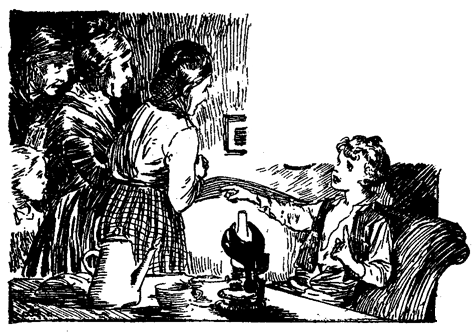Noch vor Tagesanbruch waren Richter Thatcher und die wenigen treu bei ihm Gebliebenen mit Hilfe der von ihnen sorgfältig da und dort ausgespannten Schnüre aufgefunden und von der frohen Botschaft in Kenntnis gesetzt.
Drei Tage und Nächte in Angst, Mühe und Sorge, ohne Nahrung in einer Höhle verbracht, schütteln sich nicht so leicht ab, wie Tom und Becky bald erfahren sollten. Mittwoch und Donnerstag mußten beide das Bett hüten, Freitag und Samstag besuchte Tom die Stadt, aber Becky konnte ihr Zimmer erst am Sonntag verlassen, und sah aus, wie eine soeben von schwerer Krankheit Genesene.
Tom erfuhr, daß Huck bedenklich krank sei, und suchte ihn auf, mußte sich aber drei Tage gedulden, bis er endlich Zutritt zum Krankenzimmer erhielt, und auch dann nur mit dem Versprechen, seiner Abenteuer nicht zu erwähnen und alles zu vermeiden, was den Kranken aufregen konnte. Die Witwe Douglas führte scharfe Aufsicht dabei. Bei seiner Nachhausekunft erfuhr Tom endlich die Ereignisse auf Cardiff-Hill, und daß der Leichnam des »Zerlumpten« zufällig in der Nähe des Landungsplatzes der Fähre aus dem Strome aufgefischt worden war. Ohne Zweifel war er auf der Flucht ins Wasser gefallen und ertrunken.
Vierzehn Tage etwa nach seiner Rettung aus der Höhle erachtet Tom seinen Kameraden für soweit erstarkt, um auch die aufregendsten Neuigkeiten vernehmen zu können, und daran hatte er ja Ueberfluß. Der Weg führte an Richter Thatchers Hause vorbei, und Tom trat ein, um sich nach Beckys Befinden zu erkundigen. Der Richter und einige anwesende Freunde zogen Tom ins Gespräch und einer derselben fragte ihn, ob er es wagen würde, wieder in die Höhle zu gehen. Tom erwiderte, daß es ihn nicht darauf ankäme. Der Richter bemerkte:
»Ja, ja, Tom, ich zweifle gar nicht daran, daß auch noch andere wieder hinein möchten. Aber dafür ist gesorgt. Es wird sich niemand mehr in der Höhle verirren!«
»Weil ich das große Eingangsthor vor 14 Tagen mit dicken Walzeisen beschlagen und dreifache Schlösser daran anbringen ließ, und die Schlüssel in Verwahrung habe!«
Tom wurde blaß wie ein Leintuch.
»Was hast du, Junge? Geschwind, schnell ein Glas Wasser!«
Man schüttete Tom das Wasser ins Gesicht.
»So, Junge, das wird dir gut thun! Aber was hattest du so auf einmal, Tom?«
»O, Herr Richter, der Indianer Joe ist in der Höhle!«
Des Indianer Joe Ende. – Huck und Tom als Zeichendeuter. – Besuch in der Höhle. – Schutz gegen Gespenster. – Ein unheimlicher Schmollwinkel. – Großer Empfang bei Madame Douglas.
Wie ein Lauffeuer hatte sich diese Kunde verbreitet. Schnell war ein Dutzend Boote bemannt und steuerte nach Mac. Douglas' Höhle; die Dampffähre, mit Passagieren überladen, folgte schleunigst. Tom Sawyer befand sich in dem Fahrzeug, welches den Richter Thatcher trug.
Es war eine traurige Scene, die sich nach Eröffnung des Thores den Blicken der Neugierigen im düstern Dämmerlichte des Platzes darbot. Da lag, auf den Boden ausgestreckt, der »Indianer Joe« tot, das Gesicht hart an eine Spalte im Thore gedrängt, wie wenn er bis zum letzten Röcheln die brennenden Augen auf das Tageslicht und die freie, fröhliche Außenwelt gerichtet hätte. Tom war tief gerührt; er wußte aus eigner Erfahrung, wie schwer der Arme gelitten haben mußte und konnte ihm sein Mitleid nicht versagen. Aber ein Gefühl unendlicher Erleichterung und Sicherheit kam über ihn; nun erst ward er sich so recht der Ungeheuern Last von Befürchtungen bewußt, die, seit er gegen den Banditen gezeugt, ihn bedrückt und nun mit dem Tode desselben von ihm genommen war.
Indianer Joes Bowiemesser lag dicht neben ihm. Die Klinge war entzwei. Der Grundbalken des Thores war von ihm mit unsäglicher Mühe und Arbeit zerhackt und endlich durchschnitten worden. Nutzlose Arbeit! Von der Außenseite bildete der Fels eine natürliche Schwelle, und gegen diese war das Messer machtlos und zerbrach. Und wenn es ihm auch gelungen wäre, den ganzen Grundbalken wegzuschaffen, so hätte er seinen Körper doch nicht durch die dadurch entstandene schmale Spalte zwingen können. Er mußte das eingesehen und nur gearbeitet haben, um eben etwas in der fürchterlichen Einsamkeit und Langweile zu thun. Gewöhnlich waren die Felsritzen der Vorhalle mit von Touristen zurückgelassenen Kerzenresten besteckt – es fanden sich keine mehr vor. Der Gefangene hatte sie verzehrt. Den umherliegenden Resten nach zu schließen, mußte er auch auf Fledermäuse Jagd gemacht und diese mit Haut und Haar, bis auf die Krallen, verspeist haben. Der Unglückliche war eines qualvollen Hungertodes gestorben.
In der Nähe hatte sich seit Jahrhunderten durch das ununterbrochene Träufeln eines überhängenden Stalaktiten ein Stalagmit auf dem Boden gebildet. Der Gefangene hatte die Spitze desselben weggebrochen und einen ausgehöhlten Stein darauf gesetzt, um die spärlichen – mit der Regelmäßigkeit einer Uhr – je einen in drei Minuten – fallenden und das verzweifelt langweilige Ticken des Pendels nachahmenden Tropfen darin aufzufangen. – Einen Theelöffel voll in zwanzig Stunden! Dieser Tropfen fiel schon, als die Pyramiden noch jung waren, als Troja fiel, als die Fundamente Roms gelegt wurden, als der Christ litt und starb, als Wilhelm der Eroberer das britische Reich gründete, als Kolumbus segelte, als das Gemetzel von Lexington noch das Tagesereignis war. Er fällt noch heute und wird fallen, wenn alles heute Bestehende in die tiefe Nacht der Vergessenheit versunken sein wird.
Hat jedes Ding seinen Zweck und seine Mission? Fiel dieser Tropfen geduldig während fünf Jahrtausenden für diesen elenden Wurm? Wird er nach Ablauf der nächsten zehn Jahrtausende eine ähnliche Aufgabe zu erfüllen haben? Wir wissen es nicht! Manches Jahr ist vorübergegangen, seit das hilflose Halbblut den Stein ausgehöhlt, um die unschätzbaren Wassertropfen darin zu sammeln, aber noch heute verweilt der Tourist unter allen Merkwürdigkeiten von Mac Douglas' Höhle am längsten bei diesem interessanten Stein. Der sogenannte Becher des Indianer Joe nimmt unter den Wundern de? Höhle den ersten Platz ein, und selbst »Alladdins Palast« kann sich nicht mit ihm messen.
Der Indianer Joe wurde neben dem Eingang der Höhle begraben. Von sieben Meilen in der Runde kamen die Neugierigen mit Kind und Kegel zum Begräbnis, und mußten bei der Heimkehr gestehen, daß sie sich ebensogut amüsiert hatten, als wenn Joe gehangen worden wäre.
Mit diesem Akte nahm ein anderer Unfug ein Ende. Eine Massenpetition an die Regierung war vorbereitet worden, um Gnade für den Indianer Joe zu erwirken und hatte zahlreiche Subskribenten gefunden. Viel thränenreiche und beredte Versammlungen waren abgehalten und ein Komitee schwachköpfiger Weiber bestellt worden, tief in Trauer gekleidet den Gouverneur zu umheulen und ihn anzuflehen, seine Pflicht mit Füßen zu treten und ein barmherziger Esel zu sein. Joe war zwar im Verdacht, fünf Bürgern das Leben geraubt zu haben, aber was schadet das? Wenn er der verkörperte Satan selbst gewesen wäre, so hätten sich doch noch Schwachköpfe in Menge gefunden, um ihre Namen unter eine Gnadenpetition zu sudeln und eine Thräne aus ihren schadhaften Wasserwerken herauszupumpen.
Am Morgen nach der Beerdigung führte Tom seinen Kameraden Huck an eine abgelegene Stelle, um Wichtiges mit ihm zu verhandeln. Zwar hatte Huck inzwischen durch den Welschen und die Witwe Douglas alles über Toms letztes Abenteuer erfahren. Tom meinte aber, etwas könnten sie ihm doch nicht wohl gesagt haben, und das eben war's, was er Huck mitteilen wollte.
Dieser ließ den Kopf hängen und sagte: »Ich weiß schon was es ist. Du hast Nummer zwei untersucht und nichts gefunden als Whisky. Ich wußte sofort als die Whisky-Geschichte so großes Aufsehen gemacht hatte, daß du es nur gewesen sein konntest, obgleich es mir niemand sagte. Ich ahnte immer, daß wir nie in den Besitz des Schatzes gelangen würden.«
»Sieh 'mal, Huck, ich war es nicht, der den Tavernenwirt verriet. Du mußt doch wissen, daß dort Samstags, am Tage des Picknick noch alles im Blei war. Erinnerst du dich denn nicht mehr, daß du die Wache übernommen hattest?«
»O gewiß, erinnere ich mich! Es scheint mir ein Jahr seitdem. War es doch dieselbe Nacht, in der ich dem Indianer Joe bis zur Witwe nachschlich!«
» Du warst es, der ihn verfolgte?«
»Jawohl, aber du schweigst! Joe kann Freunde hinterlassen haben und ich fühle kein Bedürfnis, ihre Aufmerksamkeit auf mich zu lenken und mich ihrer Rache auszusetzen. Ohne meine Dazwischenkunft wäre Joe gesund und wohl in Texas.«
Huck weihte nun Tom unter dem Siegel der Verschwiegenheit in die Vorfälle jener Nacht ein, die dieser nur insoweit kannte, als der Welsche dabei beteiligt war. Auf die Hauptsache zurückkommend meinte er: »Ich zweifle nicht, daß derjenige, welcher den Whisky in Nummer zwei stahl, auch das Geld mitlaufen ließ. Für uns ist es jedenfalls verloren!«
»Huck, das Geld war nie in Nummer zwei!«
»Wie?« Huck suchte eifrig in den Zügen Toms zu lesen. »Bist du dem Gelde vielleicht wieder auf die Spur gekommen?«
»Huck, es ist in der Höhle!«
Hucks Augen leuchteten: »Sage es noch einmal, Tom!«
»Das Geld liegt in der Höhle!«
»Tom, auf Ehre, ist das Spaß oder Ernst?«
»Es ist Ernst und die reinste Wahrheit. Willst du mit mir in die Höhle gehen und es mir holen helfen?«
»Gewiß will ich! Gewiß, wenn es an einem zugänglichen Orte liegt und wir nicht riskieren, verloren zu gehen!«
»Huck, wir können es holen, ohne die geringste Mühe dabei zu haben!«
»Das ist herrlich! Aber aus welchem Grunde vermutest du das Geld ...«
»Huck, warte nur bis wir in der Höhle sind. Wenn wir es nicht finden, sollst du meine Trommel haben, nebst allem, was ich auf der Welt besitze!«
»Gut denn! Abgemacht! Wann wollen wir dran?«
»Auf der Stelle, wenn es dir recht ist. Fühlst du dich stark genug dazu?«
»Ist es weit bis zur Höhle? Ich habe mich zwar seit einigen Tagen wieder im Gehen geübt, aber weiter als eine Meile werde ich wohl nicht kommen!«
»Jedermann, außer mir, würde gute fünf Meilen zu machen haben, aber ich und nur ich allein, kenne einen viel kürzeren Weg. Huck, ich werde dich in einem Boot hinbringen, so daß du gar keine Mühe hast. Das Hin- und Zurückrudern werde ich allein besorgen, ohne daß du einen Finger zu krümmen brauchst.«
»Auf denn, Tom! Was zögern wir?«
»Wir müssen uns erst mit Fleisch und Brot versehen, unsere Pfeifen, Drachenschnüre, ein paar kleine Säcke und einige jener neu erfundenen Dinger mitnehmen, die man Lucifer-Zündhölzchen nennt. Ach, wie gut hätte ich sie bei meinem ersten Besuch in der Höhle brauchen können!«
Etwas nach Mittag borgten die Jungen das Boot eines abwesenden Fischers und machten sich auf den Weg. Einige Meilen unterhalb »Kave Hallow« sagte Tom:
»Siehst du, Huck, das ganze steile Ufer ist überall gleich. Kein Haus, kein Gehölz, kein Gebüsch. Aber dort, jener weiße Streifen, wo früher ein Erdrutsch stattgefunden haben muß, ist eines meiner Merkzeichen. Gehen wir ans Ufer.«
Sie landeten.
»So, Huck, von hier aus könntest du das Loch, durch welches wir aus der Höhle schlüpften, mit einem Fisch gar erreichen. Sieh 'mal, ob du es finden kannst!«
Huck suchte sorgfältig in der ganzen Umgebung, aber vergeblich. Tom marschierte stolz auf einen dicken Sumach-Busch los und sagte: »Da ist es! Betrachte es, Huck! Ist es nicht das netteste Loch weit und breit? Aber schweige darüber. Sage niemand etwas davon. Seit ich mit dem Gedanken umgehe, Räuber zu werden, hat mir immer das Haupterfordernis, ein solches Versteck, gefehlt und ich wußte nicht, wo es suchen. Nun ist es gefunden und wir müssen es verheimlichen, nur gegen Joe Harper und Ben Rogers nicht, die doch Mitglieder der Bande, die ich bilden will, sein werden. Wie schön das klingen wird, »Tom Sawyers Bande!« Meinst du nicht, Huck?«
»Gewiß, Tom! Aber wen wollen wir berauben?«
»O, jedermann! Den Reisenden auflauern und ihnen den Weg verlegen! So ist es üblich!«
»Und sie umbringen?«
»Nein, nicht immer! Sie in die Höhle einsperren, bis sie eine Ranzion aufgebracht haben!«
»Was ist eine Ranzion?«
»Geld! Man zwingt sie, mit Hilfe ihrer Freunde so viel Geld aufzubringen, als ihnen nur immer möglich ist. Wenn nach Verlauf eines Jahres die ihnen auferlegte Summe nicht vollständig beigeschafft ist, werden sie kalt gemacht. So ist es im allgemeinen der Brauch. Anders verfährt man mit den weiblichen Gefangenen. Diese werden zwar eingesperrt, aber nicht umgebracht. In der Regel sind sie wunderschön und steinreich, und haben immer entsetzlich Angst. Man beraubt sie zwar ihrer Uhren, Ringe und des übrigen Schmucks, befleißigt sich aber im Verkehr mit ihnen der äußersten Höflichkeit, und spricht nur den Hut in der Hand mit ihnen. Es giebt kein höflicheres Volk, als eben die Räuber, und du kannst das in jedem Buche lesen. Nun, siehst du, die gefangenen Damen fangen an, dich zu lieben, und wenn sie acht oder vierzehn Tage in der Höhle zugebracht haben, so hat das Weinen ein Ende und du kannst sie nicht wieder los werden. Wenn du sie auch mit Gewalt fortjagen wolltest, im Handumdrehen wären sie wieder da. So steht es in allen Büchern!«
»Das ist lustig, und scheint mir angenehmer als die Seeräuberei!«
»In gewisser Beziehung stimme ich dir bei. Man ist in der Nähe der Heimat, der Kunstreiterbuden und all den anderen Ergötzlichkeiten!«
Inzwischen war alles in Bereitschaft gesetzt worden und die Knaben schlüpften durch das Loch, Tom voran. Sie arbeiteten sich vorwärts bis zum Ende des Tunnels, befestigten das eine Ende der zusammengeknüpften Drachenleinen, und schritten vorwärts. Nach wenigen Schritten hatten sie die Quelle erreicht; ein Schauer fuhr Tom durch die Glieder; er machte Huck auf den ausgebrannten Docht aufmerksam und erzählte ihm, mit welchen Aengsten Becky und er dem Erlöschen desselben zugesehen. Ihr lautes Gespräch war unter dem Eindruck der schauerlichen Stille der Umgebung zum Flüstern herabgesunken. Tom schritt immer voran und erreichte bald durch einen anderen Gang die Sackgasse, von der oben die Rede war. Bei Kerzenschein sah er nun, daß sich am Ende wirklich ein Abgrund befand, der aber nur aus einem abfallenden Lehmhügel von 20 bis 30 Fuß Höhe bestand.
»Nun werde ich dir etwas zeigen. Huck!« flüsterte Tom, indem er sein Licht in die Höhe hielt. »Schaue einmal dort um die Ecke, so weit als es dir möglich ist. Siehst du, dort über jenem Felsen, mit Kerzenrauch gemacht?«
»Ein Kreuz!«
»Nun gut, und wo ist die Nummer zwei? Unter dem Kreuz! Oder nicht? Gerade an jener Stelle erblickte ich den Indianer Joe mit dem Lichte in der Hand herumtastend. Huck!«
Huck stierte das mystische Zeichen eine Weile mit weit aufgerissenen Augen an und flüsterte mit bebender Stimme:
»Tom, mach', daß wir hier fortkommen!«
»Was? Und den Schatz hier liegen lassen?«
»Ja, laß ihn nur! Der Geist Joes geht hier um! So sicher als etwas.«
»Nein, Huck, nein! Hier ist kein Spuk! Wenn Joe umgeht, so ist es nicht hier, sondern an der Stelle, wo er den Geist aufgab, am Eingange der Höhle, fünf Meilen von hier!«
»Nichts da, Tom! Bei dem verborgenen Schatze muß er sein, ich kenne die Gewohnheiten der Geister und du auch!«
Tom begann zu fürchten, daß Huck recht haben könne: Bange Ahnungen beschlichen ihn. Da kam ihm ein Gedanke:
»Was für Narren wir sind, Huck! Joes Geist wird niemals an einer Stelle umgehen, wo sich ein Kreuz befindet!«
Das war ein göttlicher Einfall und verfehlte seine Wirkung nicht.
»Daran habe ich nicht gedacht, Tom! Aber richtig ist's! Dieses Kreuz bedeutet Glück! Ich denke, wir klettern dort hinunter und spüren dem Schatze nach!«
Tom ging voraus, und grub im Niedersteigen tiefe Fußtritte in den Lehmhügel. Huck folgte. Vier Gänge mündeten in die kleine Höhle, aus der sich der Fels erhob. Die Jungen durchforschten drei derselben, ohne etwas zu finden. Im vierten, zunächst am Fuße des Felsen, entdeckten sie endlich einen kleinen Schlupfwinkel mit einem Lager von Wolldecken. Daneben ein alter Hosenträger, einige Speckschwarten und die sauber abgenagten Knochen von zwei oder drei Hühnern. Aber keine Geldkiste. Die Jungen untersuchten die Stelle wiederholt mit größter Aufmerksamkeit; umsonst!
Tom sagte: »Er sagte: Unter dem Kreuz! Nun sind wir aber möglichst unter dem Kreuz. Unter dem Felsen kann es doch nicht wohl sein, denn der wurzelt massiv im Grund!«
Wiederholtes Suchen blieb ohne Erfolg. Entmutigt setzte sich Tom auf die Erde. Huck wußte keinen Trost. Endlich meinte Tom:
»Siehst du, Huck, auf dieser Seite des Felsens bemerkt man Fußspuren und Talgtropfen, auf der andern Seite aber nicht! Was hat das zu bedeuten? Ich wette, das Geld liegt unter dem Fels. Ich werde den Lehm aufwühlen!«
»Du könntest recht haben, Tom!« sagte Huck hastig.
Toms echtes Barlowmesser war im Hui aus der Tasche. Noch hatte er keine vier Zoll tief gegraben, als er auf Holz stieß.
»Holla! Huck! Hörst du das!«
Huck machte sich eifrigst daran, die Arbeit fördern zu helfen. Einige Bretter lagen bald zu Tage und wurden beseitigt. Augenscheinlich hatten sie gedient, eine Spalte zu verbergen, die unter den Fels führte. Tom stieg hinab und hielt das Licht unter den Fels, so weit er reichen konnte; es war ihm aber nicht möglich, das Ende der Ritze abzusehen. Entschlossen, zu erfahren, was die Spalte berge, bückte er sich und schlüpfte hinein. Der enge Pfad führte abwärts. Er folgte seinen Windungen, erst rechts, dann links. Huck ihm immer auf den Fersen. Nach einer scharfen Kurve rief Tom: »Beim Himmel, sieh 'mal her, Huck!«
In einer kleinen Vertiefung stand die Geldkiste, wahr und wahrhaftig. Neben ihr ein leeres Pulverfäßchen, ein paar Flinten in ledernem Futteral, zwei bis drei Paar alte Mokassinen, ein Ledergurt und anderes derartiges Zeug, alles von den niederträufelnden Wassertropfen tüchtig durchnäßt.
»Endlich gefunden!« rief Huck, und wühlte begierig in den gelben Münzen. »Nun sind wir reiche Leute, Tom!«
»Ich zählte immer darauf, daß wir es werden würden! Es ist so schön, daß es fast nicht zu glauben ist. Aber da liegt der Schatz sicher genug! Laß uns keine Zeit verlieren! hinaus mit dem Geld! Laß sehen, ob ich die Kiste tragen kann!«
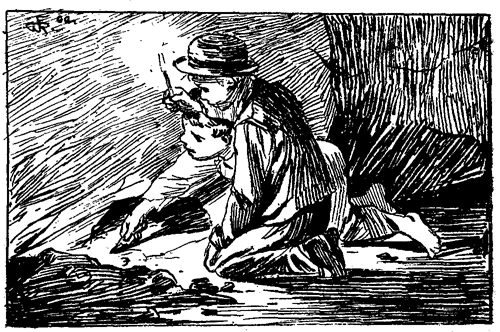Es gelang ihm, sie vom Boden aufzuheben; sie wog etwa 50 Pfund; aber sie fortzutragen reichten Toms Kräfte nicht hin.
»Ich vermutete das!« sagte er. »Sie hatten an jenem Abend im gespenstischen Hause auch Mühe, die Kiste fortzubringen. Gut, daß ich die beiden Säckchen mitbrachte.«
Das Geld war bald in den Säcken und zum Felsen hinaufgeschafft.
»Nun laß uns die Flinten und das andere Zeug holen!« sagte Huck.
»Nein, Huck, laß sie nur dort! Sie werden uns auf unsern Räuberzügen gute Dienste thun; hier sollen sie bis dahin versteckt bleiben. Dieser Platz eignet sich prächtig, unsere Orgien hier zu feiern.«
»Was sind das, Orgien?«
»Weiß nicht! Aber alle Räuber feiern Orgien, und natürlich wir auch! Auf, Huck! Laß uns eilen! Es wird spät und ich habe Hunger. Wenn wir im Boote sind, können wir gemütlich essen und rauchen.
Sie schlüpften vorsichtig durch die Oeffnung in den Sumach-Busch und spähten nach allen Seiten. Alles war ruhig. Von niemand behelligt, saßen sie bald im Kahn und ließen sich Speise und Pfeife schmecken. Mit Anbruch der Dämmerung stieß Tom vom Lande, ruderte rüstig heimwärts und erreichte mit Zunachten unter fröhlichem Geplauder den Ort der Abfahrt.
»So, Huck, jetzt wollen wir das Geld unter dem Dach des Holzschuppens der Witwe verstecken; morgen kommen wir dann beizeiten her, zählen und verteilen es und suchen dann einen sicheren Versteck im Walde, um es dort unterzubringen. Ich gehe, den kleinen Wagen Benny Taylors zu holen. Du inzwischen liegst ruhig hier und bewachst den Schatz. In weniger als einer Minute bin ich wieder hier.«
Nach kurzer Abwesenheit kehrte er mit dem kleinen Wagen zurück, belud ihn mit Säcken, warf einige alte Lumpen darüber und machte sich auf den Weg. In der Wohnung des Welschen hielten sie Rast. Eben im Begriff, weiter zu fahren, rief dieser sie an: »Hallo! Wer ist das?«
»Huck und Tom Sawyer!«
»Schön! Kommt mit mir, ihr Jungen! Man wartet schon lange auf euch! hurtig, vorwärts! Ich werde den Wagen ziehen! Hm, er ist nicht so leicht, wie mir schien! Ihr führt wohl Backsteine?«
»Altes Metall!« erwiderte Tom.
»Natürlich! Die hiesigen Jungen haben alle eine wahre Sucht, Zeit und Mühe mit Aufsuchen von alten Eisen zu verschwenden, um es für einige elende Cents an einen Gießer zu verkaufen, die sie doch durch regelmäßige Arbeit viel leichter verdienen könnten! Aber das liegt eben in der menschlichen Natur! Vorwärts! Sputet euch!«
Die Jungen wollten den Grund dieser Hast wissen.
»Kümmert euch nicht darum! Bei der Witwe Douglas werdet ihr es schon erfahren!«
An falsche Beschuldigungen seit lange gewöhnt und nichts Gutes erwartend, sagte Huck zögernd:
»Mr. Jones, wir haben nichts gethan!«
Der Welsche lachte:
»Hm, ich weiß nicht recht, Huck, mein Junge! Aber seid denn ihr, die Witwe und du, nicht ein paar gute Freunde?«
»O, doch! Sie wenigstens war immer freundlich gegen mich, das muß wahr sein!«
»Nun gut! Was hast du denn zu fürchten?«
Noch hatte Huck bei seiner schwerfälligen Auffassungsgabe die richtige Antwort auf diese Frage nicht gefunden, als er und Tom sich in das Empfangszimmer der Mrs. Douglas gedrängt sahen. Mr. Jones ließ den Wagen vor der Thür und folgte.
Der Raum war glänzend beleuchtet, und alles, was das Dorf an Notablen aufweisen konnte, war dort versammelt. Die Thatchers waren da, die Harper, die Rogers, Tante Polly, Sid, Mary, der Prediger, der Redakteur, und viele andere, alle im Festanzug. Die Witwe empfing die Jungen so herzlich, als es nur zwei so beschmierten, schmutzigen Bengeln gegenüber möglich war. Sie waren über und über mit Lehm und Lichtertalg bedeckt. Tante Polly wurde blutrot vor Scham, runzelte die Augenbrauen und schüttelte den Kopf gegen Tom. Niemand jedoch war in größerer Verlegenheit, als die zwei Jungen selbst. Mr. Jones sagte: »Tom war nicht zu Hause und ich mußte unverrichteter Sache heimkehren, stieß aber in der Nähe meiner Wohnung unverhofft auf die beiden und brachte sie in aller Eile her!«
»Das haben Sie gut gemacht!« sagte die Witwe. »Kommt Jungen, kommt mit!«
Sie führte sie in ein Schlafgemach und sagte: »Da wascht euch und kleidet euch um. Da sind zwei neue Anzüge – Hemden, Socken, alles komplett. Keinen Dank, Huck, beide sind für dich! Mr. Jones liefert den einen und den andern ich! Einer wird wohl für heute Abend Tom passen. Zieht euch an, und wenn ihr fertig seid, so kommt hinunter. Wir erwarten euch!«
Enthüllung eines Geheimnisses. – Mr. Jones Ueberraschung übertroffen.
Huck sagte: »Wenn wir ein Seil finden, können wir durchbrennen, Tom! Die Fenster sind noch hoch über dem Boden!«
»Unsinn! Warum durchbrennen?«
»Warum? Ich habe nicht die Gewohnheit, so zahlreicher, aufgeputzter Gesellschaft! Das kann ich nicht aushalten, Tom! Ich gehe nicht hinunter!«
»Wie dumm! Es ist ja gar nichts! Ich frage den Teufel danach! Uebrigens werde ich für dich Sorge tragen!«
Sid erschien.
»Tom,« sagte er, »Tantchen hat dich den ganzen Nachmittag erwartet! Mary hatte deine Sonntagskleider zurechtgelegt und alles fragte nach dir. Sage 'mal, ist da auf deiner Kleidung nicht Talg und Lehm?«
»Bekümmere dich um deine eigenen Angelegenheiten, Mr. Siddy! Was hat denn dies alles zu bedeuten?«
»Eine der gewohnten Gesellschaften, zu denen die Witwe von Zeit zu Zeit einladet. Diesmal gilt es dem Welschen und seinen Söhnen für die Hilfeleistung in jener Nacht. Höre 'mal, ich könnte dir etwas sagen, wenn du es wissen, willst!«
»Laß hören!«
»Nun, der alte Jones hat heute Abend eine Ueberraschung für die Gesellschaft in Bereitschaft. Es sei ein Geheimnis, ich hörte ihm diesen Nachmittag zur Tante sagen, mit der er darüber sprach. Ich denke aber, die Ueberraschung wird nicht gewaltig sein, denn jedermann kennt zur Stunde das Geheimnis. Auch die Witwe, obgleich sie sich stellt, als wisse sie nichts. Mr. Jones mußte Huck hier haben, ohne ihn verfehlte sein großes Geheimnis die beabsichtigte Wirkung!«
»Welches Geheimnis, Sid?«
»Daß Huck den Räubern bis zur Witwe nachgeschlichen! Mr. Jones verspricht sich viel von der Ueberraschung, die seine Mitteilung auf die Gäste ausüben wird. Er wird sich aber in seiner Erwartung schlimm getäuscht finden! Haha!«
Sid lachte mit sehr selbstzufriedener Miene in sich hinein.
»Warst du es, Sid, der das ausschwatzte?«
»Gleichviel, wer es war! Jemand hat es gesagt, und das ist genug!«
»Sid, in der ganzen Stadt ist nur einer gemein genug, eine solche Handlung zu begehen, und das bist du! Wenn du an Hucks Stelle gewesen wärst und die Räuber gesehen hättest, würdest du feige nach Hause geschlichen und keiner Seele etwas davon gesagt haben! Du kannst nichts thun, was nicht niederträchtig gemein wäre und kannst nicht ertragen, jemand für eine wackere That Anerkennung finden zu sehen! Hier und hier! und keinen Dank, wie die Witwe sagt!« Und Tom schlug ihn hinter die Ohren und jagte ihn mit Fußtritten aus der Thüre. »So nun geh und sag' es der Tante, wenn du es wagst! Morgen soll dann die Fortsetzung folgen!«
Einige Minuten später saßen dann die Gäste um den gedeckten Tisch. Ein Dutzend Kinder saß nach der damaligen Landessitte an kleinen Seitentischchen im gleichen Raum. Mr. Jones ersah seine Gelegenheit und hielt seinen kleinen Speech. Er dankte der Witwe für die ihm und seinen Söhnen erwiesene Ehre und fügte bei, daß noch Jemand da sei, dessen Bescheidenheit –
Und so weiter. Er enthüllte das Geheimnis der Mithilfe Hucks in der schönsten dramatischen Weise, deren er nur fähig war; die Ueberraschung der Gäste war aber großenteils erheuchelt und die Wirkung viel schwächer, als sie unter günstigeren Umständen sicher gewesen wäre. Es gelang indessen der Witwe, das größte Erstaunen an den Tag zu legen und sie überhäufte Huck mit so warmen Dankergüssen, daß dieser nach und nach das Unerträgliche seiner neuen Kleider, der neugierigen Blicke der Gäste und der ihn umsummenden Lobhudeleien beinahe vergaß.
Die Witwe sprach die Absicht aus, Huck eine Heimstätte unter ihrem Dach zu geben und für seine Erziehung zu sorgen. Zu geeigneter Zeit würde sie ihm dann nach Kräften behilflich sein, irgend ein Geschäft anzufangen.
Nun war es an Tom. Er erhob sich und sagte:
»Huck braucht das nicht! Huck ist reich!«
Nur die gute Erziehung hielt die Anwesenden ab, durch lautes Gelächter Tom für seinen vermeintlichen Witz zu bekomplimentieren. Das Schweigen war einigermaßen peinlich. Tom unterbrach es:
»Huck hat Geld! Vielleicht glaubt man mir nicht, aber es ist doch so! Er hat viel Geld! Lacht nur, ich kann es euch zeigen! Wartet nur ein bißchen!«
Tom rannte zur Thüre hinaus. Die Gäste starrten einander verwundert an und richteten fragende Blicke aus Huck. Dieser war stumm.
»Sid, was ist in Tom gefahren?« fragte diesen Tante Polly. »Was hat das zu bedeuten? Man kann doch nie aus dem Jungen klug werden. Niemals habe ich –«
Tom erschien, gebeugt unter der Last der Säcke, und Tante Polly fand nicht Zeit, den angefangenen Satz zu vollenden. Er schüttete die Masse der gelben Münzen auf den Tisch und rief:
»Hier! Habe ich es nicht gesagt? Die Hälfte dieses Geldes gehört Huck und die andere mir!«
Atemlos blickten die Anwesenden auf das Gold. Eine geraume Weile herrschte tiefe Stille. Die Ueberraschung war zu unerwartet, zu groß! Dann allgemeiner Ruf um Aufklärung. Tom sagte, er könne sie geben und that es. Die Erzählung war lang, aber äußerst interessant. Keine Unterbrechung störte sie. Als Tom geendigt, meinte Mr. Jones:
»Ich glaubte, den verehrten Gästen eine Ueberraschung zu bereiten, sehe mich aber überflügelt! Ich muß gestehen, daß sie gegen die Toms in schnödes Nichts zusammensinkt.«
Das Geld wurde gezählt. Es belief sich auf die Summe von über zwölf Tausend Dollars. Das war mehr, als irgend einer der Anwesenden auf einem Haufen beisammen gesehen, obgleich mancher bedeutend höheren Wert an Liegenschaften aufweisen konnte.
Aenderungen. – Armer Huck. – Neue Abenteuer werden geplant.
Der Leser wird begreifen, daß dieser Glücksfall mächtigen Einfluß auf die Bevölkerung des armen kleinen Dorfes Petersburg machen mußte. Eine solche Summe in guter klingender Münze – es war unglaublich! Man sprach nur von diesem Fund, brütete darüber, verherrlichte ihn, bis durch unheilsame Aufregung mancher den Verstand verloren hatte. Jedes gespenstische Haus in St. Petersburg und den umliegenden Dörfern wurde vom Giebel bis in die Fundamente durchsucht, Brett um Brett auseinandergerissen, zerhakt, seziert, selbst die Grundmauern nach verborgenen Schätzen durchwühlt – nicht von Schuljungen allein, auch von gesetzten unromantischen Männern. Wo irgend Tom oder Huck sich sehen ließen, wurden sie umringt, angestaunt, fätiert. Die Schulkameraden hatten früher ihre Meinungen und Aeußerungen hoch angeschlagen – das war nun anders geworden. Was sie auch sagen mochten, wurde von Mund zu Mund weiter verbreitet, wiederholt und gesammelt; all ihre Handlungen waren bedeutungsvoll; sie hatten augenscheinlich das Vermögen verloren, etwas Alltägliches zu thun oder zu sagen. Noch mehr. Die Vergangenheit der Knaben wurde bis zum kleinsten Detail hervorgesucht und mannigfache Zeichen offenbarer Originalität darin entdeckt. Sogar die Dorfzeitung brachte den Abonnenten Skizzen aus dem Jugendleben der berühmten Jungen.
Die Witwe Douglas legte die Gelder Hucks zu sechs vom Hundert sicher an, und Richter Thatcher that auf die Bitte der Tante Polly dasselbe mit Toms Anteil. Jeder der beiden Jungen hatte nun ein unermeßliches jährliches Einkommen – ein Dollar für jeden Wochentag, und einen halben Dollar für jeden Sonntag. Das war gerade so viel, als der Geistliche bekam – nein, nicht bekam, aber bekommen sollte, das war ihm versprochen, aber es gelang ihm nie, es einzuziehen. Für 1¼ Dollar in der Woche konnte in jenen Tagen der Einfachheit ein Knabe Wohnung, Tisch und Bett, Kleider und Wäsche zur Genüge erhalten und überdies noch geschult werden.
Richter Thatcher hatte eine sehr gute Meinung von Tom gewonnen und sagte, ein gewöhnlicher Junge hätte seine Tochter niemals aus der Höhle retten können. Und als Becky ihm anvertraut hatte, daß Tom die in der Schule ihr zugedachten Schläge freiwillig auf den eigenen Rücken genommen, war er sichtlich gerührt. Und als sie erst für ihn wegen der groben Lüge, durch die es ihm gelungen war, ihr die Strafe zu ersparen und sich selbst zuzuwenden, um Verzeihung bat, brach er jubelnd los und pries diese Lüge als edel, hochherzig, erhaben; ebenso berechtigt, erhabenen Hauptes und stolz auf die Nachwelt zu gelangen, als Georg Washingtons berühmtes Wort von der Wahrheit selbst auf dem Schaffot. Nie war Becky ihrem Vater größer erschienen, als da er diese Worte aussprach, und durch kräftiges Stampfen mit dem Fuß großen Nachdruck verlieh.
Richter Thatcher hoffte, in Tom einst einen großen Feldherrn oder großen Gesetzgeber zu sehen und machte sich anheischig, ihm in die nationale Militär-Akademie Aufnahme und später Zutritt zu den besten Lehrsälen der Jurisprudenz zu erwirken, um ihn für die eine oder andere dieser Carrieren, oder für beide vorzubereiten.
Hucks Reichtum und der Schutz der Witwe öffneten ihm die Thore der besseren Gesellschaft, oder vielmehr, er wurde in dieselben gedrängt und gezwängt und litt unsäglich unter dieser neuen Ordnung der Dinge. Die Dienerschaft der Witwe war besorgt, daß er sich sauber und reinlich halte, kämmten und bürsteten ihn, und betteten ihn allnächtlich in ekelhaft weiße Leintücher, an denen auch nicht ein Fleck zu finden war, den er ans Herz drücken und als alten Bekannten hätte begrüßen können. Er mußte mit Messer und Gabel essen, sich einer Serviette bedienen und von Tassen und Teller Gebrauch machen; er mußte in einem Buche lernen, und zur Kirche gehen und in so gewählten Ausdrücken sprechen, daß ihm jede Unterhaltung anekelte. Wo immer er sich hinwandte, stieß er an die Gitter und Handschellen der Zivilisation, und fühlte sich schlimmer als ein Gefangener.
Drei lange Wochen ertrug er sein Mißgeschick mit Heldenmut, und wurde eines schönen Tages vermißt. Die Witwe fühlte sich untröstlich und ließ ein paar Tage lang eifrig Nachforschungen anstellen. Das Publikum nahm lebhaft Anteil am Verlust; überall wurde gesucht, selbst im Strome, um wenigstens seinen Leichnam zu finden. Am dritten Morgen beizeiten fiel Tom ein, unter den leeren Fässern beim alten Schlachthause nachzusuchen. Richtig, in einem derselben entdeckte er den Flüchtling, Huck hatte darin geschlafen, von zusammengestohlenen Eßwaren sein Frühmahl gehalten, und war eben daran, behaglich seine Pfeife zu rauchen. Er war ungewaschen, ungekämmt und trug dieselben Lumpen, die ihm früher, in den Tagen seiner Freiheit und seines Glücks ein so pittoreskes Aussehen verliehen hatten. Tom zog ihn aus dem Fasse, erzählte ihm die Unruhe um ihn und ermahnte ihn ernstlich, heimzukehren. Aus Hucks Zügen verschwand die sorgenlose Behaglichkeit, und tiefe Melancholie trat an ihre Stelle.
»Sprich mir nicht davon, Tom! Ich habe es versucht, Tom, aber es nützt nichts! Es geht nicht, Tom! Das ist nichts für mich! Es ist ganz gegen meine Natur. Die Witwe ist gut gegen mich und freundlich, aber ihr ganzes Benehmen ist mir zuwider, ich kann das nicht aushalten! Da soll ich jeden Morgen zu der gleichen Stunde aufstehen. Ich muß mich waschen und sie kämmen mich zu Fetzen. Ich darf nicht im Holzschuppen schlafen, und muß jene verdammten schönen Kleider tragen, die mir ein Greuel, und so zugeknöpft sind, daß es einem frischen Windstoß gar nicht gelingen will, durchzudringen. Von Niedersitzen, Niederliegen oder sich herumwälzen ist ohnehin gar keine Rede. Und wie lange bin ich keine Kellerthüre hinabgerutscht! Es scheint mir länger als ein Jahr seitdem! Und dann muß ich in die Kirche und schwitzen! Ich hasse die süßlichen Predigten! Nicht einmal eine Fliege darf man fangen dort und keinen Tabak kauen! Und alle Sonntage soll ich in Schuhen stecken! Die Witwe ißt nach der Glocke und erwacht nach der Glocke – alles ist so verzweifelt regelmäßig, daß es nicht zum Aushalten ist.« –
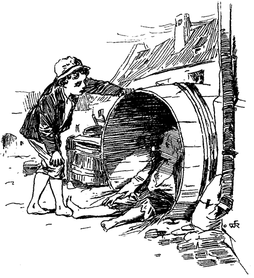»Aber Huck, das ist überall so! Jedermann thut das!«
»Bleibt sich gleich! Ich bin nicht jedermann! Und ich kann es nicht aushalten! Es ist ja entsetzlich, so angebunden zu sein! Und dann kommt das Essen viel zu leicht. Die Nahrung hat keinen Wert für mich, wenn sie einem ins Maul regnet und schneit. – Wenn ich fischen will, muß ich um Erlaubnis bitten; will ich schwimmen gehen, muß ich fragen! Hol's der Geier! Mag ich dies oder jenes thun, erst muß ich fragen! Und dann mußte ich so zierlich sprechen, daß mir alle Lust dazu verging, und wäre ich nicht alle Tage in die Dachstube hinaufgestiegen, um ungehört meinen Kropf zu leeren, so wäre ich geplatzt, Tom! Die Witwe verbot mir das Rauchen, sie verbot mir das Johlen, das Gähnen, das Kratzen in Gegenwart anderer – (dann mit einem besonders heftigen Ausbruch beleidigten Selbstgefühls) – und sie betete in einem fort! Ich habe nie ein solches Weib vorher gesehen! Ich mußte fort, Tom! Keine Möglichkeit dort zu bleiben! Ueberdies geht nächstens die Schule wieder an, Tom, und ich müßte sie besuchen. Nie und nimmermehr! Das fehlte mir noch! Siehst du, Tom! Reichtum allein thut's nicht! Da ist immer Sorge und Mühe, Schweiß und Schweiß, und der Wunsch, tot zu sein. Nun, hier diese Kleidung behagt mir und dieses Faß auch, und ich werde sie nicht wieder verlassen. Wenn das verwünschte Geld nicht gewesen wäre, so hätten all diese Kümmernisse mich nicht getroffen. Somit sei so gut, Tom, und nimm meinen Anteil auch. Du kannst mir ja von Zeit zu Zeit einen Zehncenter geben – nicht zu oft, denn ich frage den Teufel nach einem Gewinn, den ich nicht mit großer Mühe errungen, und dafür gehst du und bringst der Witwe meine Entschuldigung und machst mit ihr ab!«
»Das kann und darf ich nicht thun, Huck! Das wäre nicht schön! Versuche es lieber noch eine zeitlang! Es geht ganz gewiß! Du wirst dich bald in die neue Lebensweise finden und sie lieben!«
»Lieben? – Ja, wie ich einen heißen Ofen lieben würde, wenn man mich zwänge, lange genug darauf sitzen zu bleiben! Nein, Tom, ich will nicht reich sein, und will in keinem dieser verflucht sauberen Häuser wohnen. Ich liebe den Wald, den Strom, die leeren Fässer, und will ihnen treu bleiben. Verwünscht! Gerade als wir Waffen und eine Höhle, und alles, was zu einem frohen Räuberleben gehört, gefunden hatten, mußte das verdammte Geld auftauchen und das ganze Spiel verderben!«
Tom ersah seine Gelegenheit: »Höre, Huck, glaubst du denn, daß mein unverhoffter Reichtum mich abhalten wird Räuber zu werden?«
»Nicht? Ist es dir wirklich ernst, Tom?«
»Bitter ernst, so wahr ich hier sitze. Aber bedenke, Huck, wie sollen wir dich als Mitglied in die Bande aufnehmen, wenn du nicht den nötigen Anstand gelernt hast?«
Hucks Freude schwand.
»Nicht aufnehmen, Tom? Hast du mich nicht als Pirat aufgenommen?«
»Wohl, aber das ist etwas anderes. Ein Räuber steht hoch über einem Piraten, im allgemeinen zu sprechen. In den meisten Ländern gehören die Räuber dem höchsten Adel an, wie Herzöge und dergleichen.«
»Nun, Tom, du warst doch jederzeit freundlich gegen mich. Könntest du mich ausschließen? Könntest du das wirklich übers Herz bringen? Gelt, Tom, du kannst es nicht?«
»Huck, ich möchte es nicht thun und würde es sicher auch nicht thun! Aber was würden die Leute sagen? ›Tom Sawyers Bande? hm, ziemlich gemeine Mitglieder darunter! Sehr gemischt!‹ Damit würden sie dich meinen, Huck, und du würdest das nicht wollen, und ich auch nicht!«
Huck kämpfte einen schweren inneren Kampf. Endlich sagte er: »Wenn ich nun zur Wittwe zurückkehrte und versuchte, einen Monat oder so dort auszuharren, wie dann, Tom? Würdest du mich dann aufnehmen?«
»Ganz gewiß, Huck, und mit Freuden! Komm mit, alter Kamerad, ich werde die Witwe bitten, dich etwas weniger streng zu halten!«
»Willst du das wirklich, Tom? O, das ist schön! Wenn sie es in den unerträglichen Dingen etwas gnädiger mit mir machen will, so werde ich nur heimlich rauchen, nur heimlich fluchen und bei ihr aushalten, oder daran krepieren! Wann soll die Aushebung stattfinden und das Räuberleben beginnen?«
»Unverzüglich! Wir wollen die Jungen zusammentrommeln und die Initiative kann vielleicht schon heute Abend vorgenommen werden!«
»Die – was?«
»Die Initiative!«
»Was ist das?«
»Es ist die feierliche Eidesleistung treu beieinander zu stehen und die Geheimnisse der Bande nie, unter keinen Umständen zu verraten, selbst wenn es an Hals und Kragen ginge, und denjenigen, der einem Mitglied der Bande ein Leid zufügen sollte, mit Weib und Kind umzubringen!«
»Das gefällt mir, Tom! Das ist schön und lustig dazu, sage ich dir!«
»Nicht wahr? Und der Schwur muß um Mitternacht, am einsamsten, unheimlichsten Ort, der nur zu finden ist, abgelegt werden! Ein gespenstisches Haus wäre wohl der geeignetste Platz dazu, aber man hat sie ja alle dem Erdboden gleich gemacht!«
»Leider! Aber Mitternacht ist doch die Hauptbedingung! Um Mitternacht kommt es auf den Platz gerade nicht viel an!«
»Gut so! und auf einen Sarg müssen wir schwören und mit Blut unterschreiben!«
»Hurra! Das ist verlockender, als das ganze Piratentum! Ich werde bei der Witwe bleiben und sollte der Widerwille mich töten! Wenn ich dann ein famoser Räuber sein werde, und der Ruf meiner Heldenthaten bis zu ihr dringt, dann wird sie mit Stolz des Augenblickes gedenken, in dem sie mich in ihr Haus aufnahm und aus dem Nassen ins Trockene zog!«
*
Hier endet diese Chronik. Es ist eine Knabengeschichte und muß mit dem Uebertritte der Knaben ins Jünglingsalter schließen, wenn nicht eine Männergeschichte daraus werden soll.
Die meisten der in Tom Sawyers Abenteuer Mitspielenden leben heute noch in glücklichen Verhältnissen.
Es mag vielleicht später der Mühe lohnen, die Geschichte wenigstens der Jüngeren wieder aufzunehmen, und zu sehen, welcher Schlag von Männern und Frauen aus ihnen geworden ist.
Bis dahin für jetzt, nicht weiter.
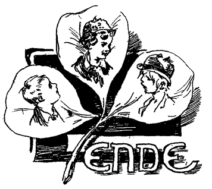